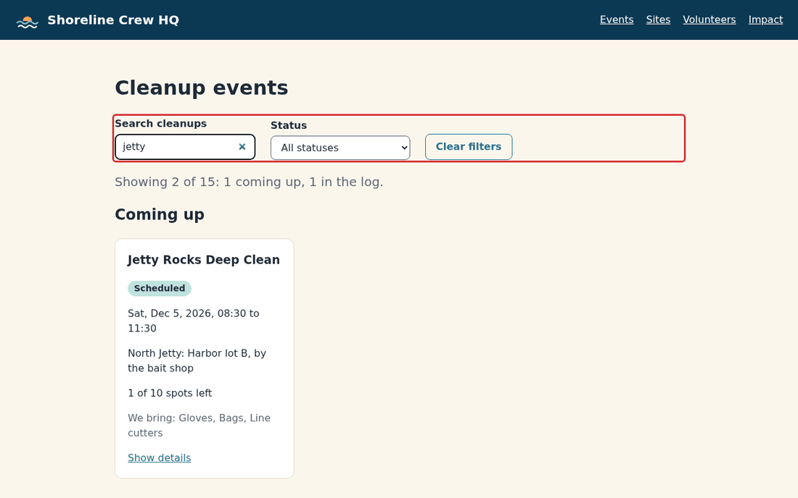
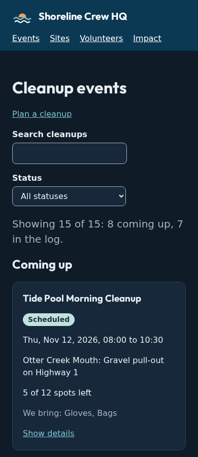
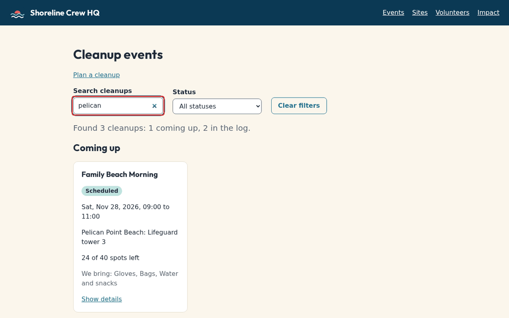
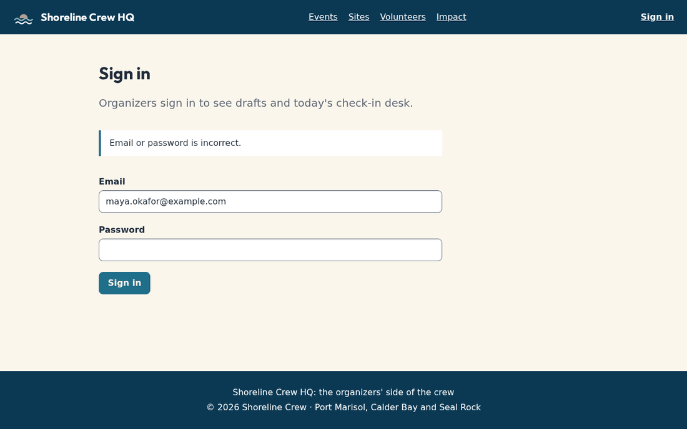
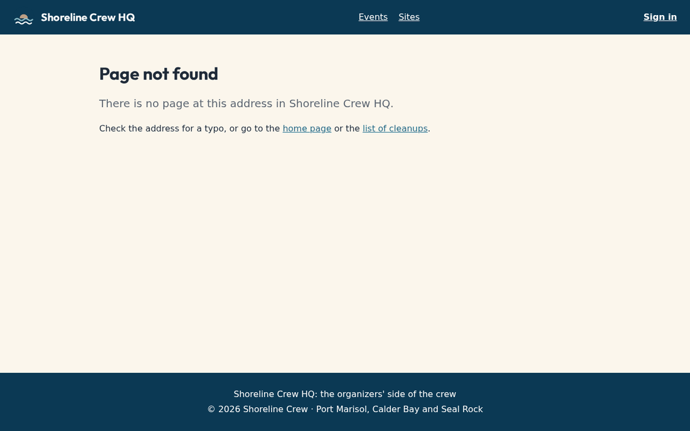
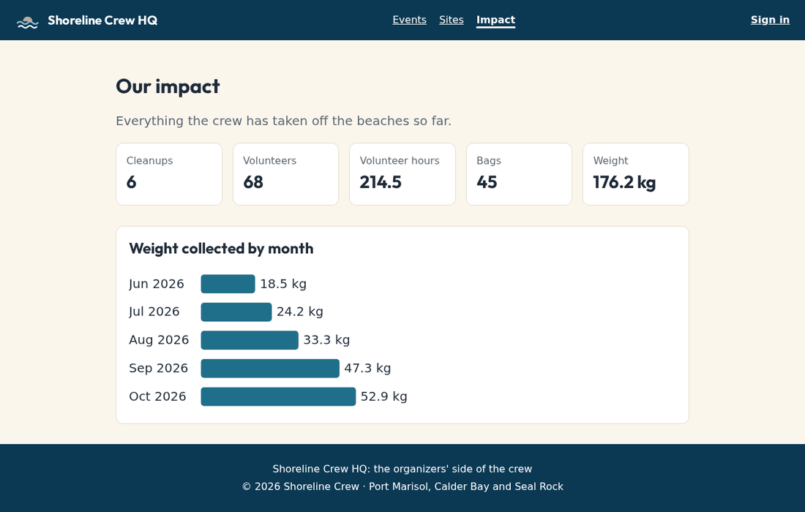
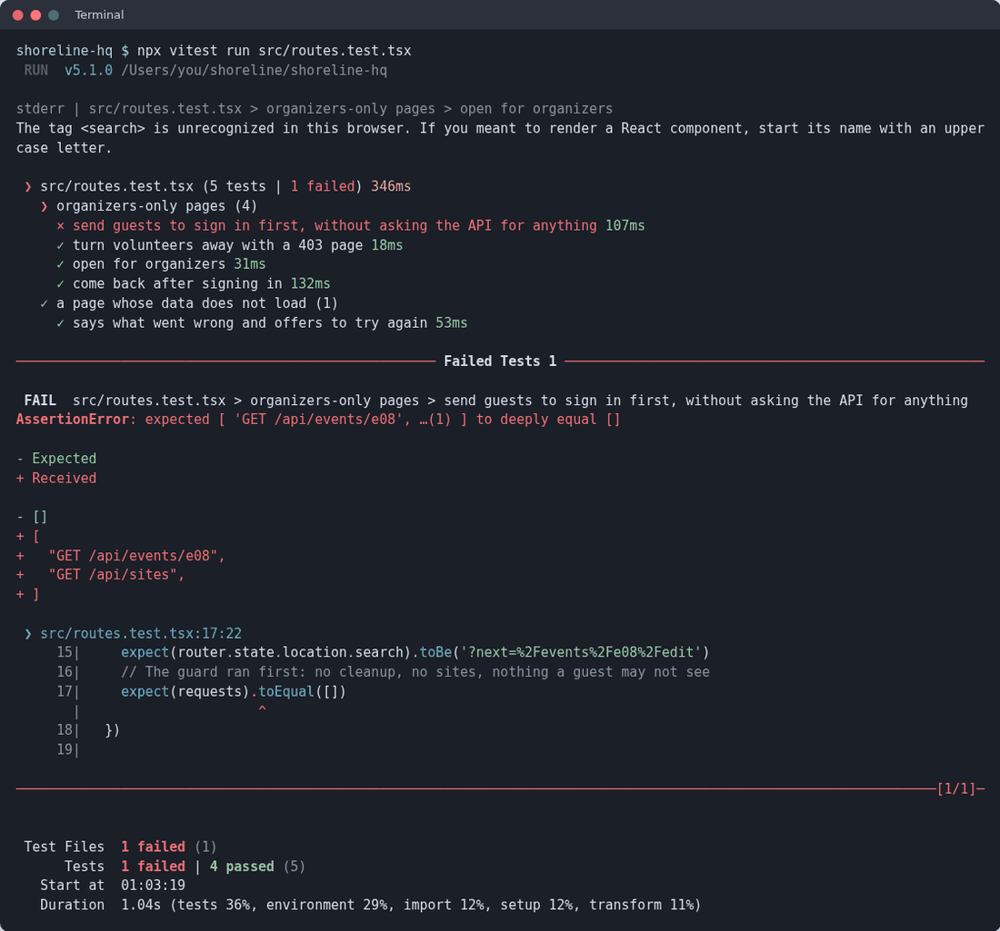
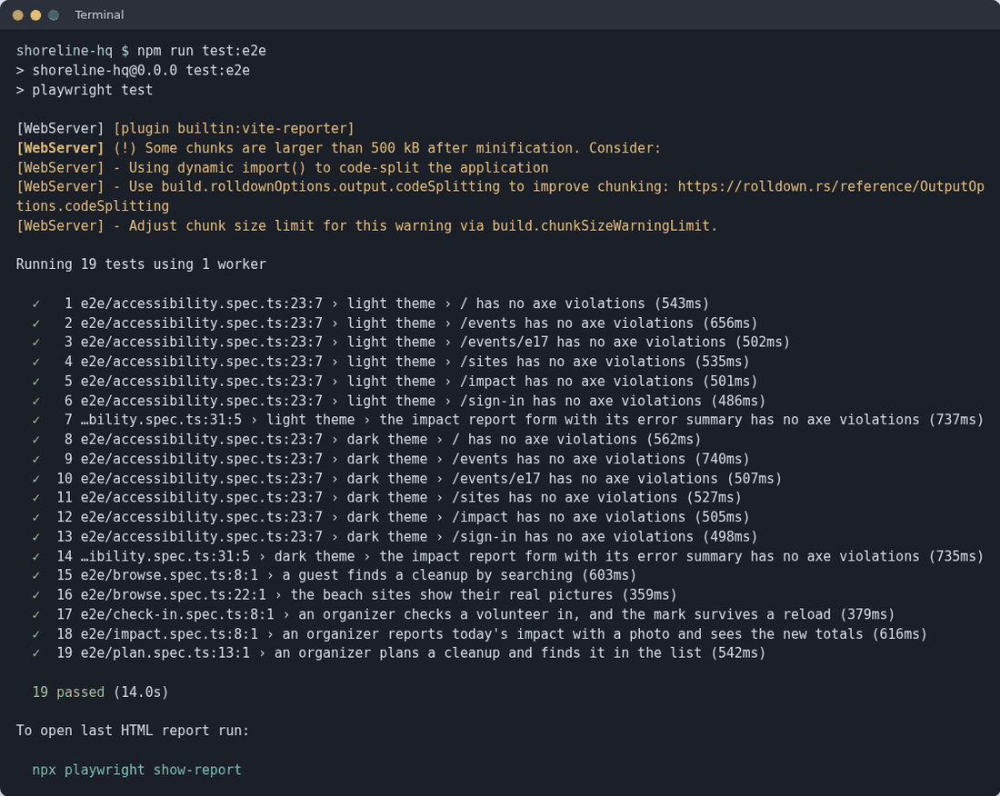
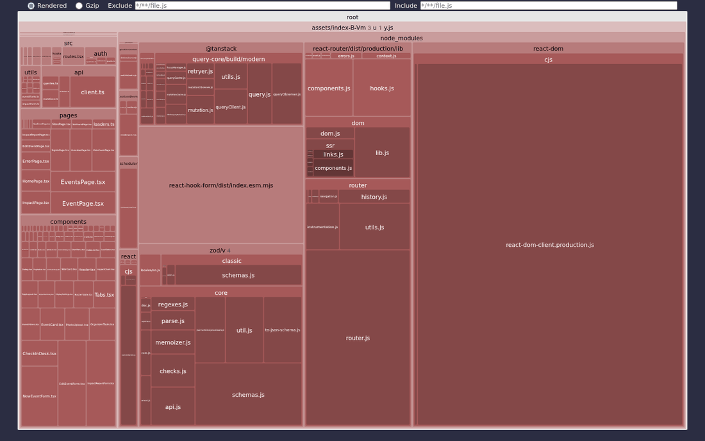
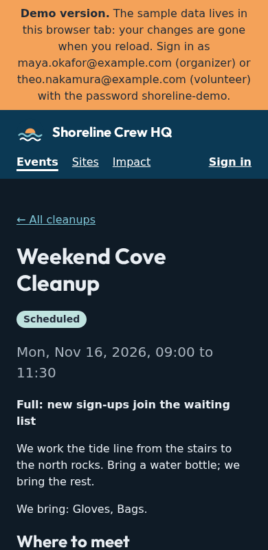

React + TypeScript: Build a Modern Web App
The full teaching manual for the 26-session React + TypeScript: Build a Modern Web App kit (Modules 1 to 11, in three parts; one 3-hour session, two lessons each). Timing, live-demo scripts, the mistakes to pre-empt, lab facilitation, and checks for understanding, for every session.
Part 1: TypeScript and React Foundations
Sessions 1 to 9. Modules 1 to 3: why React and TypeScript belong together and a working local workspace (Node LTS, VS Code, the shoreline-api mock back end, a Vite react-ts app), the TypeScript you need before React (types and inference, object types and unions, functions and generics, typing real API data), then React in TypeScript from the first component to props, lists, state and events, forms with actions, styling and accessible components. Runs on its own as a short course and ends with the Part 1 project check-in and assessment.
Session 1: Why React + TypeScript and Your Workspace
How to teach the first session of React + TypeScript: Build a Modern Web App. Welcome a room of JavaScript developers new to TypeScript and React, find out which machines are ready and what the room remembers about arrays, objects and promises, then show on one small file why React and TypeScript belong together (Node prints NaN, tsc names the typo) and make every laptop ready: an install clinic, the course API and a fresh Vite react-ts app, one typo caught in three places, two labs on running versus checking, and a check learners can rerun all course.
How to Use This Guide
- Same rhythm for both lessons: frame (the goal and one mental model) → live demo (you type, they follow) → guided lab (a kit lab: new practice on the lesson's ideas, never the lesson's own project) → start the lesson's own project. The lesson exercises, quiz and journal are homework.
- Type, do not paste. Every command below was run to produce the output printed under it, in a learner's terminal with Node v24.22.2 and npm 11.19.1: Lesson 1.1's in a folder with TypeScript 7.0 installed, Lesson 1.2's on the course API and on a copy of the app exactly as a learner has it at the end of the lesson. Where the lesson shows the same command, the kit's output is the lesson's, word for word. Ask for a prediction before every run.
- The lessons are the reference. Keep
lesson_01.htmlandlesson_02.htmlopen in browser tabs for the tables, the diagrams and the per-system install notes. Labs live inlabs/module-01/(learners copy the kit'slabs/folder into their course foldershoreline/):starter/folders andTASKS.mdare handouts;solution/folders are yours until the session is over. - Session 1 is different in two ways. It opens with 30 minutes of welcome, environment check and diagnostic instead of the usual 10-minute warm-up, and Lesson 1.2's room time is mostly an install clinic: installing Node and VS Code, unzipping the API and creating the Vite project are prework from the kit's setup guide, so the room fixes what went wrong instead of watching installers.
- The kit has three parts that can each run on their own: Part 1, TypeScript and React Foundations (Sessions 1 to 9); Part 2, Data, State and Routing (10 to 17); Part 3, Production React (18 to 26). Nothing in this session depends on a later part. Teal blocks are hands-on, amber blocks are watch-outs. Lesson codes (1.1, 1.2) match the course site.
Two installs (Node LTS, VS Code), a zip to unzip in the right place and a project created with npm create vite@latest that downloads about thirty packages, on three operating systems, each with its own trap: a terminal opened before Node was installed, PowerShell's script policy, Node 20 still first on the PATH, an unzip tool that adds a folder level, a course folder inside OneDrive. Done together on venue Wi-Fi, it fills three hours and nobody reads a compiler error. Before: send the setup guide a week ahead (Node LTS, VS Code, shoreline-api.zip unzipped into shoreline, npm create vite@latest shoreline-hq -- --template react-ts and npm install, the kit's labs/ folder in shoreline, then the environment check) and ask every learner to reply with its last line. In the room: the check gets 12 minutes in the opening; a NOT READY machine gets a ready partner until the 25-minute install clinic at 1:40, not your attention during Lesson 1.1 (which needs only a browser). After: whoever is still not ready leaves with a numbered plan and runs the check again before Session 2.
Before the Session
- ☐ A week before: email the setup guide (Lesson 1.2 as a checklist: Node LTS 24 or newer, VS Code, the course folder
shorelinewithshoreline-apiunzipped into it,npm create vite@latest shoreline-hq -- --template react-tswith Oxlint and "No" to install-and-start,npm install, the kit'slabs/folder copied intoshoreline, then with the API runningnode labs/module-01/l1_0-orientation/check_environment.mjsfromshoreline). Ask learners to reply with the last line it prints. No reply means a setup risk: chase it. - ☐ Files to hand out (shared folder or USB stick, in case the network fails): the whole
labs/folder without thesolution/folders;shoreline-api.zipandlesson-02-end.zipfrom the course site's downloads (the finished Lesson 1.2 code: a learner who cannot create the project in time unzips it and runsnpm installinshoreline-hq). If the venue network is slow, put the Node LTS installers (Windows .msi, macOS .pkg) and VS Code on the stick too, and runnpm installonce in each lab'sstarter/at home so your npm cache can serve the room. - ☐ Run the kit check once:
python3 labs/check_labs.py module-01from this kit's folder (19 runs, under a minute: the starters fail as shipped, the solutions pass their tests, type checks and lint, the debug handout fails exactly as declared, and the environment check says READY on a ready course folder and NOT READY with the right FIX line on three broken ones). It starts its own private copy of the API;--api http://localhost:4000uses yours instead. Then run the environment check on the projector machine so you can show what READY looks like. - ☐ Projector machine: VS Code open on a
shorelinefolder at a large font, two terminals ("api" runningnode server.ts, "hq" inshoreline-hq) at 18 pt or larger; a browser with the TypeScript Playground, http://localhost:4000/api and http://localhost:5173 in tabs, DevTools docked at the bottom;lesson_01.htmlandlesson_02.html. For the 1.1 demo: a scratch folder with TypeScript installed and no tsconfig.json (npm init -y, thennpm install --save-dev --save-exact typescript@7.0.2): with a tsconfig present,npx tsc --noEmit spots.tsstops with error TS5112 instead. - ☐ Board, before learners arrive: the two mental models from Lesson 1.1 (React = the tide chart that redraws itself; TypeScript = the spell-checker for your data); the flow "you write .ts/.tsx → tsc checks → Vite removes the types → the browser runs JavaScript"; the triage line "node not recognized = new terminal · nothing answers at :4000 = start the API · no shoreline-hq = npm create vite · tsc errors = read the first one"; and the course folder as a box:
shoreline/withshoreline-api/,shoreline-hq/andlabs/. - ☐ Print or share: the workbook (its Start Here page has the environment checklist and the diagnostic), sticky notes for help flags and the exit ticket.
| Symptom | Cause | Fix |
|---|---|---|
'node' is not recognized / command not found: node | The terminal was opened before Node was installed (old PATH) | Close every terminal, VS Code included, and open a new one; Windows: run the installer again with Add to PATH. |
PowerShell: npm.ps1 cannot be loaded because running scripts is disabled | Windows script policy, not a broken install | Use Command Prompt, or Set-ExecutionPolicy -Scope CurrentUser RemoteSigned (Lesson 1.2). |
node server.ts: ERR_UNKNOWN_FILE_EXTENSION, Node.js v20… | An old Node first on the PATH (an old install, or nvm's default) | Install the current LTS; with nvm: nvm install --lts and nvm alias default lts/*, then a new terminal. |
nothing answers at http://localhost:4299 (no answer … | The API is not running, or runs on another address | Terminal 1: cd shoreline-api, node server.ts, leave it open; give the check the address the API printed. |
port 4000 is already in use | The API is already running in another terminal | Use that one (look through the terminals), or Ctrl+C it first. |
no shoreline-api/server.ts here / shoreline-api/shoreline-api | The check was run from the wrong folder, or the unzip tool added a level | cd into shoreline; move the inner shoreline-api up one level. |
no shoreline-hq here: in the course folder run npm cr… | The Vite project was not created (or in the wrong folder) | In shoreline: npm create vite@latest shoreline-hq -- --template react-ts (Oxlint, No), then cd shoreline-hq, npm install. No time? Unzip lesson-02-end.zip and npm install. |
npm error enoent Could not read package.json | An npm command in shoreline instead of shoreline-hq | cd shoreline-hq; read the prompt before every command. |
Ok to proceed? (y) and nothing happens / very slow npm create | Venue network or proxy; the first npm create downloads create-vite | Wait; or the USB-stick plan: lesson-02-end.zip + npm install from your npm cache. |
npm is very slow, or the check says synced to the cloud | The course folder is inside OneDrive, iCloud or Dropbox | Move shoreline to an unsynced folder. |
No code command (a CHECK line) | VS Code's command-line launcher is not on the PATH | Command Palette › Shell Command: Install 'code' command in PATH (macOS); Windows installer's Add to PATH. Not required. |
Port 5173 taken: Vite says Local: http://localhost:5174/ | A second dev server is running | Use the address it prints, or stop the other one. |
Session 1 Agenda (3 hours)
| Clock | Minutes | Segment | What happens |
|---|---|---|---|
| 0:00 | 30 | Welcome, environment check and diagnostic | Introductions, how the course runs, check_environment.mjs on every machine, a six-question readiness diagnostic (not graded). |
| 0:30 | 10 | 1.1 Frame and mental model | The tide chart and the spell-checker: what React does, what TypeScript does, what TypeScript cannot do. |
| 0:40 | 15 | 1.1 Live demo | One file, twice: Node prints NaN, tsc names the typo; three mistakes, three messages; a union of four words. |
| 0:55 | 15 | 1.1 Guided lab | labs/module-01/l1_1-why-react-typescript/starter: Task 1 in pairs, an interface for a real API answer. |
| 1:10 | 10 | 1.1 Start the lesson project | Step 5 in pairs: the screen-to-data map. Steps 1 to 4 (the Playground) go home. |
| 1:20 | 10 | Break | NOT READY machines line up for the install clinic. Leave the two mental models on the board. |
| 1:30 | 10 | 1.2 Frame and mental model | The supply shed and the beach: two terminals, one course folder, running versus checking. |
| 1:40 | 25 | 1.2 Install clinic | Fix the machines that were NOT READY, by tool; ready learners help, then rerun the check. |
| 2:05 | 15 | 1.2 Live demo | Node and npm, the API's answers and headers, how the page starts, one typo in three places, lint and build. |
| 2:20 | 15 | 1.2 Guided lab | labs/module-01/l1_2-your-workspace/starter: Tasks 1 and 2, running versus checking on a small file. |
| 2:35 | 15 | 1.2 Start the lesson project | Steps 2 to 4: clear the template, break it on purpose, lint and build clean. |
| 2:50 | 10 | Wrap-up | Exit ticket (3 questions), homework, bring list for Session 2. |
| Total | 180 | Ends at 3:00. |
In the room. The lesson pages estimate 115 + 160 = 275 minutes for a learner working alone, and after the 30-minute opening, the break and the wrap-up the room has 130. Lesson 1.1 keeps its full shape (model, demo, lab, project start). Lesson 1.2's installation sections are prework from the setup guide: the room uses its time for an install clinic, a running-versus-checking demo, a short lab and Steps 2 to 4 of the lesson project.
Goes home (about 2 to 3 hours). Lesson 1.1's project Steps 1 to 4 in the TypeScript Playground and the rest of the screen-to-data map; Lesson 1.2's project for anyone who finished setup in the clinic (Steps 1 to 5); both labs' remaining tasks and Lab 1.2's debug handout; each lesson's Hands-on Exercises (1.2's Exercises 1 and 2 are part of that lesson's time); both Quick Quizzes; both journal entries; both "Before the Next Lesson" lists. Anyone still NOT READY finishes the setup with the numbered plan from the clinic.
Protect, in this order: the environment check result for every learner (nobody leaves without knowing whether their machine is ready and what to do next); the install clinic; the 1.1 "run it, then check it" step (the idea every later lesson leans on); the 1.2 "one typo in three places" step. Cut first: the 1.1 "only four words" step and the 1.2 "how the page starts" step, then the 1.1 project start (send the map home), then the 1.2 project start (learners do Steps 2 to 4 at home).
Opening Segment
Welcome, Environment Check and Diagnostic
30 min| 5m | Welcome and introductions |
| 5m | How the course runs: 26 sessions in three parts, one or two lessons a session, the room and home split, the journal |
| 12m | Environment check: check_environment.mjs ends with READY on every machine, or the machine gets a partner and a clinic slot |
| 8m | Diagnostic: six readiness questions, not graded |
- Welcome (5m). One minute on yourself, including a bug that reached users and a type checker would have caught (a NaN on a price, an undefined in a heading). Then a quick round: name, what they want to build with React and TypeScript (a product at work, a portfolio, a phone app later), and how much JavaScript they write today. Write three or four goals on the board; they come back in the 1.1 journal prompt. Housekeeping in one breath: break at 1:20, where the lab files are, and "if you are stuck, put a sticky note on your laptop lid and keep trying while I get to you."
- How the course runs (5m). Show the course home page. Say: "Twenty-six sessions of three hours in three parts. Part 1 teaches the TypeScript you need, then React in TypeScript, up to forms and accessible components. Part 2 connects Shoreline Crew HQ to its API: fetching, hooks, typed state and routing. Part 3 makes it production-ready: server state, forms at scale, tests, the build and a free deployment. Each part can stand alone." Then the deal: "Each lesson was written for someone working alone for about two to two and a half hours, so two do not fit in three hours. In this room we do what is hard alone: the mental model, a live demo, a guided lab, and the first steps of each project. At home you finish the projects and do the exercises, quiz and journal: plan on two to three hours a week." Scroll once through
lesson_01.html: objectives, mental models, common mistakes, a project in steps, exercises with hidden solutions, a quiz, a journal prompt. - Environment check (12m). Say: "Before any new ideas, we find out which machines are ready." On the projector, then theirs: 1 terminal 1 in
shoreline-api:node server.ts, leave it running; 2 terminal 2 in the course foldershoreline(VS Code: View › Terminal); 3node labs/module-01/l1_0-orientation/check_environment.mjs. Done = the last line saysREADY for React + TypeScript: Build a Modern Web App(READY WITH NOTESis fine: nocodecommand, a synced folder). Anyone who saw READY at home runs it again and becomes a helper. NOT READY falls into three piles: Node missing or too old (often a new terminal fixes it), FIX lines on a working machine (the API not started, the wrong folder,npm installnot run: two to five minutes, fix now), nothing installed or no project at all (do not start a download now: pair with a ready neighbor; install clinic at 1:40). Write the third pile's names on a sticky note. - Diagnostic (8m). Say: "Six quick questions on the JavaScript this course builds on: arrays, nested objects, map and filter, promises, template literals and the terminal. Not a test, nobody collects it. It tells you what to brush up and tells me what to slow down for." Learners answer D1 to D6 on the workbook's Start Here page (about four minutes), then show fingers (1 to 4 for A to D) as you reveal each. Keep a tally of wrong answers per question on a sticky note.
Answers: D1 A) 3 Driftwood Cove; D2 C) { name: 'Driftwood Cove', town: 'Port Marisol' }; D3 D) [ 'Jetty Rocks Deep Clean' ]; D4 A) Promise { <pending> }; D5 B) NaN spots left; D6 B) cd shoreline, then node labs/module-01/l1_0-orientation/check_environment.mjs.
- D1 to D3 (arrays, nested objects, map and filter) predict Sessions 2, 3 and 6: Module 2 types exactly these shapes, and every React list is a
map. Two or more misses on D3: givemapandfilteran extra minute in Session 2's warm-up. - D2 (objects inside objects) is the shape of every cleanup (
event.site.name). A miss here becomes a red underline in Lesson 2.2 and an[object Object]on a page in Module 3. - D4 (promises) decides how Lesson 4.1 (effects and fetching) goes. Learners who miss it: Lab 1.2's debug handout has the same bug; do it with them at home.
- D5 (undefined becomes NaN) is today's Lesson 1.1 in one line. A miss is fine: the demo answers it at 0:45. Ask those learners to explain it back at the wrap-up.
- D6 (folders) predicts trouble in the next hour:
Cannot find modulefor the check,Could not read package.jsonfor npm, almost always the folder. Learners who missed it get the typing role in the lab pair, with you nearby for the first command. - Three or more wrong: not a problem to announce. Pair them with a strong neighbor today, and at the wrap-up hand them
labs/module-01/l1_0-orientation/diagnostic_starter.mjs: D1, D2 and D3 answered by JavaScript, one small mistake each (diagnostic_solution.mjsis your reference). The workbook's Start Here page says where each skill comes back.
- Do not debug one machine in front of the room. Two minutes per machine during the check, then pair and move on: the install clinic at 1:40 exists so that you can say "we will fix that at 1:40" with a straight face. Lesson 1.1 needs only a browser.
- Mixed backgrounds. Some learners write JavaScript daily and have never seen a type; some have used TypeScript at work by copying patterns. The diagnostic and the check are for both groups; say so.
- "I use pnpm / Yarn / Bun." They work with Vite, but the lessons' commands, lockfiles and outputs are npm's (Lesson 1.2's Common Questions). Ask them to use npm for the course.
- "I already know React." Welcome them and give them a job: helper during the check and the clinic, and the stretch tasks in each lab. Their gap is usually TypeScript's side: narrowing, generics, typing API data (Module 2 will be new).
Lesson Plans
Why React + TypeScript
50 min- Explain in your own words what React does and what TypeScript does, and why teams use them together
- Describe when TypeScript's checks happen (while you write and build) and what they cannot catch (data that arrives while the app runs)
- Read a TypeScript error message and find the line, the cause and the suggested fix
- Write an interface for a piece of real API data and use it to type a function
- Connect the screens of Shoreline Crew HQ to the API data each one needs
| 10m | Frame: React = screens from data; TypeScript = checked assumptions; why together; what TypeScript cannot do |
| 15m | Live demo: one file twice (node, tsc), three mistakes, a union of four words, the limits |
| 15m | Guided lab: l1_1-why-react-typescript/starter, Task 1 in pairs |
| 10m | Start the lesson project: the screen-to-data map, Step 5 |
Tell it while you draw it: "React is a tide chart that redraws itself. Nobody repaints the water line every hour: you keep the times and heights right, and the chart is drawn from them. In React your job is to keep the data right; drawing the screen from it is React's job." Point at the lesson's CleanupCard: "a cleanup card is an article with the title as a heading, and either Full or the number of spots left." That is declarative.
Then the second picture: "TypeScript is a spell-checker whose dictionary is your own description of your data. It does not write your sentences and it does not stop you printing a letter full of typos; it underlines what does not match, while you type, so you fix it before anyone reads it. The better your descriptions, the more it catches."
Then the limits, from What TypeScript Cannot Do: it cannot see data that arrives while the app runs, cannot check logic, is switched off by any, and changes nothing at run time. Write describe the data first, then let the tools hold you to it under the two pictures: it is the habit the whole course builds.
Learners follow in the TypeScript Playground (they need only a browser, so NOT READY machines can join); you type in VS Code so the room sees the terminal. Ask for a prediction before every run.
- The file, typed with a typo (3m). "Here is a cleanup described in TypeScript, and a function that uses it. Look closely at the line inside spotsLeft." Type (do not paste) the lesson's
spots.tsin VS Code, in an empty folder with TypeScript installed (Before the Session). Stop atevent.and let the room see the suggestion list: "that list comes from the interface".interface CleanupEvent { id: string title: string startTime: string capacity: number spotsTaken: number } const cleanup: CleanupEvent = { id: 'e08', title: 'Weekend Cove Cleanup', startTime: '09:00', capacity: 18, spotsTaken: 12, } function spotsLeft(event: CleanupEvent): number { return event.capcity - event.spotsTaken } console.log(`${cleanup.title}: ${spotsLeft(cleanup)} spots left`)
- Run it, then check it (3m). "Same file, two tools. Predict both before I press Enter."
node spots.ts npx tsc --noEmit spots.ts
Weekend Cove Cleanup: NaN spots left spots.ts:18:16 - error TS2551: Property 'capcity' does not exist on type 'CleanupEvent'. Did you mean 'capacity'? 18 return event.capcity - event.spotsTaken ~~~~~~~ spots.ts:5:3 - 'capacity' is declared here. 5 capacity: number ~~~~~~~~ Found 1 error in spots.ts:18Read the error the way the lesson teaches: file:line:column (spots.ts:18:16), the code (TS2551), the message with its suggestion, the line with the squiggle, then the indented follow-up: where TypeScript's knowledge came from. Then the three facts on the board: checks before running · types disappear · running is not checking. - Three mistakes, three messages (4m). Fix the typo, then make the lesson's other two mistakes one at a time (Step 3 of the project):
capacity: '18'and a missingspotsTaken. Ask for the error code before each run.spots.ts:13:3 - error TS2322: Type 'string' is not assignable to type 'number'. 13 capacity: '18', ~~~~~~~~ spots.ts:5:3 - The expected type comes from property 'capacity' which is declared here on type 'CleanupEvent' 5 capacity: number ~~~~~~~~ Found 1 error in spots.ts:13 spots.ts:9:7 - error TS2741: Property 'spotsTaken' is missing in type '{ id: string; title: string; startTime: string; capacity: number; }' but required in type 'CleanupEvent'. 9 const cleanup: CleanupEvent = { ~~~~~~~ spots.ts:6:3 - 'spotsTaken' is declared here. 6 spotsTaken: number ~~~~~~~~~~ Found 1 error in spots.ts:9Both errors point twice: where the problem shows up and, indented, the interface line that explains it. Undo the mistakes;node spots.tsprintsWeekend Cove Cleanup: 6 spots leftandnpx tsc --noEmit spots.tsprints nothing at all (silence is success). - Only four words allowed (2m). The lesson's Exercise 3, typed live: a union of string literals, then the other common spelling.
type EventStatus = 'draft' | 'scheduled' | 'completed' | 'cancelled' let current: EventStatus = 'scheduled' current = 'canceled' console.log(current)
statuses.ts:4:1 - error TS2820: Type '"canceled"' is not assignable to type 'EventStatus'. Did you mean '"cancelled"'? 4 current = 'canceled' ~~~~~~~ Found 1 error in statuses.ts:4
"Statuses, roles and screen states all look like this. It is one of the most useful things TypeScript gives a React developer." Lesson 2.2 comes back to it. - What it cannot do (3m). Back to the lesson's table, last row, and What TypeScript Cannot Do. Write
capacity + spotsTakenon the board: "perfectly typed, completely wrong". Then: "when the API sends'18'where your type says number, who notices?" (nobody, unless the code checks the data: Lesson 2.4, Module 8). Close with the warning box: a green build is not a working app.
- Reading only the last line of an error. Learners look at
Found 1 errorand guess. Coach: "Read it once from the top: which file, which line, which code, and what does the indented line add?" (Self-check Q3, the lesson's Common Mistakes.) - "It ran, so it is fine." The NaN is the lesson. Coach: "Did anything check it, or did something only run it?" (Self-check Q1, Lesson 1.2 comes back to it with the dev server.)
- Reaching for
anyto make red go away. Coach with the smoke alarm: "What does TypeScript know about this value, and what did you tell it?" (The lesson's Common Mistakes; the course always shows a better fix.)
Folder: learners work in labs/module-01/l1_1-why-react-typescript/starter/ (task sheet labs/module-01/l1_1-why-react-typescript/TASKS.md); your reference is labs/module-01/l1_1-why-react-typescript/solution/. It practices the lesson's two skills on new material: describing real API data with an interface (fixtures/events.json is the real answer of GET /api/events, saved from the course API) and reading compiler errors (three mistakes in a new file, bags.ts). TypeScript on Node: Node runs the tests, npm run check runs tsc --noEmit. Needs npm install once in starter/ (TypeScript only; your npm cache helps on slow Wi-Fi).
- Run it as shipped first (3m). On the projector: a terminal in the lab's
starter,npm install, thennpm test: five tests fail with aTODOmessage (ℹ fail 5). Thennpm run check: four errors, three inbags.ts, one in the test file. - Task 1 in pairs (9m): the
CleanupEventinterface from the JSON, thensummary(event). Circulate forcapacity: string(look at the JSON: no quotes means a number), for forgettingexport(the test file imports it), and for the moment the editor starts suggesting fields afterevent.: point at it. - Expected when Task 1 is done: two tests pass, three still fail (Tasks 2 and 3). All done, the solution's run ends:
ℹ tests 5 ℹ pass 5 ℹ fail 0
- Debrief (3m): "Where did the interface's field names come from?" (the real JSON: describe the data first). "Node ran the tests before your interface existed. What did that tell you?" (running is not checking).
- Fast finishers: Task 2 (three errors, one table in the workbook) and Task 3 (a union of four words; the test file holds a
@ts-expect-errorthat only passes when'canceled'is rejected), then the stretch.
The lesson project is Your First Types, five steps in the TypeScript Playground. In the room, do Step 5, the screen-to-data map: it benefits most from discussion (10 minutes). The demo already showed what Steps 2 to 4 produce.
- Step 5 in pairs, on paper: a box per screen (Cleanups, Cleanup details, Plan a cleanup, Volunteers, Sign in, Impact) with the data it shows, marked text / number / true-false / one of a fixed set of words, and one thing that could go wrong if a value were missing or the wrong kind.
- Then the parts every screen shares (the header with the crew's name and a menu, the sign-in status) once, outside the boxes: "you have just sketched your first components and your first types." Show what the API sends for one cleanup so the cleanup boxes have real fields:

- Done in the room = six boxes with their data and kinds, and the shared parts drawn once. Take one answer to "which values are one of a fixed set of words?" (
status; laterrole,terrain). - Goes home: Steps 1 to 4 in the Playground (type the cleanup, break it three ways, run it), and the rest of the map. Keep the map: Modules 2 and 3 start from it.
Ask these out loud during the demo and the lab (cold-call gently, or think-pair-share):
- What does React do, and what does TypeScript do? Answer: React draws the screen from data and keeps it up to date; TypeScript checks, before the code runs, that the code treats the data the way its types describe.
- Why did Node print NaN instead of an error? Answer: Node strips the types and runs the JavaScript;
undefined - 12is NaN and nothing checks it. - In a tsc error, what is the indented second location? Answer: where TypeScript's knowledge came from (the interface line).
- Name one thing TypeScript cannot catch. Answer: wrong logic, data that arrives while the app runs, anything typed
any(any one).
Workbook self-check, items Q1 to Q6 (learners do them at the end of the block or at home).
Answers: Q1 B) Removes them and runs the JavaScript that is left; Q2 Node prints 6; tsc rejects it with TS2363; Q3 D) Add spotsTaken: 12, to the object that starts on line 9; Q4 C) Writing capacity + spotsTaken where you meant capacity - spotsTaken; Q5 B) error TS2820: 'canceled' is not assignable to EventStatus. Did you mean 'cancelled'?; Q6 In the editor while you type, and when tsc runs (npm run build); never while the app runs in the browser. Full set with explanations in the Answer Key.
Support: learners whose machines are not ready do the demo in the Playground and the lab with a ready neighbor (one keyboard, two heads: the NOT READY learner reads each error aloud, file:line:column first). For learners new to types, write one cleanup on the board twice: as JSON, and as the interface, field by field.
Stretch: Lab 1.1 Tasks 2 and 3 and its stretch (an array type); the lesson's Exercise 3 and the Bonus Challenge (turn strict off in the Playground and watch the typo slip through).
Your Workspace
80 min- Install the current long-term-support version of Node.js and VS Code, and check that they work from a terminal
- Run the Shoreline Crew API locally and read its answers in a browser
- Create a Vite react-ts project, install its packages and run its dev server
- Explain what each file in a new project does and how index.html, main.tsx and App.tsx connect
- Tell running apart from checking: use your editor, tsc -b, npm run lint and npm run build to find mistakes the dev server lets through
| 10m | Frame: the supply shed and the beach; two terminals; one course folder; running versus checking |
| 25m | Install clinic: the machines that were NOT READY, by tool |
| 15m | Live demo: Node and npm, the API, how the page starts, one typo in three places, lint and build |
| 15m | Guided lab: l1_2-your-workspace/starter, Tasks 1 and 2 |
| 15m | Start the lesson project: Steps 2 to 4 |
From the lesson: "Think of the API as Shoreline Crew's supply shed: it holds the data and hands it out when asked. The dev server is the beach where you set up and try things. VS Code is your clipboard with the checklist: it tells you what is missing before you head out. On a cleanup day the shed is unlocked first; in this course, you start the API first."
Then the lesson's second picture, which carries the whole course: "The dev server is a practice run on the beach: quick, forgiving. The build is the inspection before the crew heads out: slower, strict, and it stops anything that is not right." Draw the two terminals side by side (node server.ts → JSON on :4000; npm run dev → the app on :5173; both into the browser) and write the four commands with one word each: dev runs, build checks then builds, lint looks for suspicious code, preview serves the build.
Then the fact that saves the most time: "Everything lives in ONE course folder, shoreline. Every code label in the lessons starts there, and every command runs in a named folder: look at your prompt before you press Enter." Triage line on the board.
Learners from the opening's NOT READY pile sit together by problem; ready learners pair with them as helpers. You move from table to table; each fix ends with the environment check run again. Twenty-five minutes is enough to fix a PATH, start an API, create a project from a cached npm or unzip the finished code, not to download installers on slow Wi-Fi: use the USB stick.
| Where they are | Most likely state | Clinic fix (in this order) |
|---|---|---|
| No Node, or Node 20 or older | Never installed, or an old version first on the PATH | The LTS installer (or nvm install --lts), then a NEW terminal; VS Code fully closed and reopened. |
| Windows, PowerShell | npm.ps1 cannot be loaded | Command Prompt instead, or Set-ExecutionPolicy -Scope CurrentUser RemoteSigned. |
No shoreline-api, or two levels of it | Setup guide not done, or the unzip tool added a folder | Unzip shoreline-api.zip into shoreline; move the inner folder up; node server.ts in it. |
No shoreline-hq | npm create vite not run, or run in the wrong folder | In shoreline: npm create vite@latest shoreline-hq -- --template react-ts (Oxlint, No), cd shoreline-hq, npm install. Network too slow: unzip lesson-02-end.zip, npm install. |
shoreline-hq has no packages yet | npm install skipped | cd shoreline-hq, npm install. |
| API FIX line | The API is not running (or the terminal running it was closed) | Terminal 1: cd shoreline-api, node server.ts; leave it open. |
This is what the check prints when the API is not running and when the project was never created; the last line is the same NOT READY:
FIX nothing answers at http://localhost:4299 (no answer (connection timed out)): start the API in its own terminal: cd shoreline-api, then node server.ts FIX no shoreline-hq here: in the course folder run npm create vite@latest shoreline-hq -- --template react-ts (Lesson 1.2)
Done for each machine = the check prints READY (or READY WITH NOTES). Anyone not done by 2:05 leaves with a numbered plan written in their workbook's Start Here box, and you check it at the start of Session 2.
From the course folder on the projector, then the browser. The outputs below come from the course API and from a copy of the app exactly as a learner has it at the end of Lesson 1.2; on learners' machines times, thread counts and paths differ and everything else matches.
- Node and npm (2m). "First question on any machine: which Node?" In VS Code's terminal:
node -v npm -v
v24.22.2 11.19.1
24 or higher is what counts (26 is the active LTS; both are tested). Not recognized? The terminal was opened before Node was installed: close every terminal, VS Code included. - The API answers (3m). Terminal 1 runs the API (
cd shoreline-api,node server.ts). Open http://localhost:4000/api, then the cleanups, trimmed here to five fields:http://localhost:4000/api/events
[ { "id": "e01", "title": "Storm Debris Sweep", "status": "completed", "capacity": 20, "spotsTaken": 10 }, { "id": "e02", "title": "Jetty Fishing Line Roundup", "status": "completed", "capacity": 12, "spotsTaken": 8 }, { "id": "e03", "title": "Marsh Boardwalk Cleanup", "status": "completed", "capacity": 15, "spotsTaken": 9 } ]Point at the terminal: the API logs every request with its status and time. Then DevTools › Network › the request › Headers: these three headers matter later (pagination in Lesson 6.2): - The headers (1m).
HTTP/1.1 200 OK content-type: application/json; charset=utf-8 x-total-count: 15 x-total-pages: 2
x-total-count: 15public cleanups, two pages of ten. Organizers see 17 (two drafts) once they sign in (Lesson 5.2). - How the page starts (3m). Open the project's
src/main.tsxand read it from the bottom up, as the lesson does:createRoottakes the root element,renderdraws App inside StrictMode. HovergetElementById:HTMLElement | null, hence the!.shoreline-hq/src/main.tsximport { StrictMode } from 'react' import { createRoot } from 'react-dom/client' import './index.css' import App from './App.tsx' createRoot(document.getElementById('root')!).render( <StrictMode> <App /> </StrictMode>, )
Draw the chain on the board: index.html (div id=root) → main.tsx → App.tsx → the page at :5173. - One typo in three places (4m). In App.tsx, change the heading to
{crewName.toUppercase()}and save. Show the red underline and the hover message, then the blank page on :5173 and its Console error. Then the terminal:npx tsc -b
src/App.tsx:7:21 - error TS2551: Property 'toUppercase' does not exist on type 'string'. Did you mean 'toUpperCase'? 7 <h1>{crewName.toUppercase()} HQ</h1> ~~~~~~~~~~~ node_modules/@typescript/typescript-linux-x64/lib/lib.es5.d.ts:506:5 - 'toUpperCase' is declared here. 506 toUpperCase(): string; ~~~~~~~~~~~~~~~~~~~~~~ Found 1 error in src/App.tsx:7Same code, same words as the editor, plus the code frame. The follow-up line points intonode_modules: TypeScript's own description of JavaScript strings (the folder name depends on the system). Thennpm run build: it stops attsc -b, sovite buildnever runs. Fix the typo with Ctrl+. (Cmd+.). - Lint and build clean (2m). The two commands that end every lesson:
npm run lint npm run build
Found 0 warnings and 0 errors. Finished in …ms on 3 files with 116 rules using … threads. > shoreline-hq@0.0.0 build > tsc -b && vite build vite v8.3.8 building client environment for production... ✓ 16 modules transformed. computing gzip size... dist/index.html 0.46 kB │ gzip: 0.30 kB dist/assets/index-DzE5JpJi.css 0.27 kB │ gzip: 0.18 kB dist/assets/index-B1j6Mmhu.js 219.66 kB │ gzip: 68.65 kB ✓ built in …ms
"0 warnings and 0 errors" and "built in" are the targets. Most of the 220 kB is React itself. Times, thread counts and hashes differ on every machine.
- A command in the wrong folder.
npm run devinshorelinegivesCould not read package.json. Coach: "Read the path line: where did npm look?" Then the prompt habit. (Quiz Q4 on the lesson page.) - Trusting a page that loads. "It shows up, so it works." Coach: "What does the Problems panel say? What does
npm run buildsay?" (Self-check Q7.) - Closing the terminal that runs a server. The app suddenly cannot reach the API. Coach: "Which terminals are still running something?" Rename them "api" and "hq" (Step 1).
Folder: labs/module-01/l1_2-your-workspace/starter/ with labs/module-01/l1_2-your-workspace/TASKS.md; your reference is labs/module-01/l1_2-your-workspace/solution/. It practices the lesson's central idea on a small new file instead of the course app: npm test RUNS the code (like the dev server), npm run check CHECKS it (tsc, like the first half of npm run build), npm run lint is oxlint. Needs npm install once in starter/ (TypeScript and oxlint).
- Run it as shipped (2m).
npm test: one test fails withTypeError: crewName.toUppercase is not a function(the blank page, in a terminal). Thennpm run check: three errors before anything runs, the same typo first in line. - Task 1 in pairs (5m): fix the typo the editor's way (Ctrl+. or Cmd+.). Both tests pass.
- Task 2 (6m): the tests pass, yet the check still reports two errors. Circulate for changing the value instead of the annotation, and ask the prediction question: "will the tests notice the wrong annotation?" (no: the types are gone when the code runs). Expected after Tasks 1 and 2 plus Task 3, the solution's three runs end:
ℹ tests 2 ℹ pass 2 ℹ fail 0 > shoreline-lint-lab@1.0.0 check > tsc --noEmit(no output: no errors) Found 0 warnings and 0 errors. Finished in …ms on 3 files with 96 rules using … threads.
- Debrief (2m): "Which tool found the typo first, and which one would a user have found it with?" (tsc before running; the user at run time). "Which two tools reported the unused constant, and which one fails the build?" (tsc and oxlint; tsc).
- Fast finishers: Task 3, then the debug handout
labs/module-01/l1_2-your-workspace/debug_count_events.ts(two bugs; the second only shows once the first is fixed, and tsc catches it before it runs; it needs their API running).
The lesson project is Make It Shoreline Crew HQ, five steps. Step 1 (two terminals, two servers) was the clinic's goal; in the room, do Steps 2 to 4 (15 minutes).
- Step 2: delete
src/App.css,src/assets/andpublic/icons.svg; type the newApp.tsx; replaceindex.css; retitleindex.html. The page goes blank while files are missing: expected. - Step 3: break it on purpose (
toUppercase), find it in the editor, the Console andnpx tsc -b; fix it; put the heading back. - Step 4:
npm run lint,npm run build,npm run preview. Done in the room = the heading and tagline on :5173, 0 warnings and 0 errors, "built in". Goes home: Step 5 (the start-of-session card) and anything not finished. This is the code Session 2 builds on: the finished version islesson-02-endin the course downloads.

Ask these out loud during the clinic, the demo and the lab:
- Which two programs run while you work, and on which ports? Answer: the API (
node server.ts, 4000) and the dev server (npm run dev, 5173). - Which commands check types, and which only run the code? Answer: the editor,
npx tsc -bandnpm run buildcheck;npm run dev(andnode file.ts) only run. - What does
npx tsc -bprint when all is well? Answer: nothing. - Why does a type error stop
npm run build? Answer: the script istsc -b && vite build;&&runs the build only if tsc succeeded.
Workbook self-check, items Q7 to Q12 (learners do them at the end of the block or at home).
Answers: Q7 C) The tagline, as before; Q8 Nothing at all: no output means no errors; Q9 A) The API (node server.ts, port 4000) and the dev server (npm run dev, port 5173); Q10 A) Install the current LTS (24 or newer), then open a NEW terminal; Q11 D) It never ran: the build script is tsc -b && vite build; Q12 oxlint (npm run lint); a warning, so the command still succeeds; tsc reports it as an error, TS6133. Full set with explanations in the Answer Key.
Support: learners who spent the clinic installing do Steps 2 to 4 at home from the workbook's worked example, and the lab with its task sheet; for anyone overwhelmed by tools, one card with three lines: "API first, in its own terminal · npm commands in shoreline-hq · the build has the final word".
Stretch: Lab 1.2 Task 3 and the debug handout; the lesson's Exercise 3 (ask the API questions) and the Bonus Challenge (--latency=1500 and ?_status=500: the switches Lesson 4.1 uses for loading and error screens).
Closing
Put the three questions on the slide. Learners answer in the workbook's Exit Ticket box or on a sticky note and leave it on the way out. Sort the notes into "got it" and "not yet" before Session 2: question 2's pile tells you how much of Session 2's warm-up goes back to running versus checking.
- In one sentence each: what does React do, and what does TypeScript do? Answer: React draws the screen from the app's data and keeps it up to date; TypeScript checks, before the code runs, that the code uses the data the way its types describe.
node spots.tsprinted NaN;npx tsc --noEmit spots.tsprinted an error. Why the difference? Answer: Node removes the types and runs the code; tsc reads the types and checks them. Running is not checking.- Which two terminals do you open at the start of every session, and what runs in each? Answer: one in
shoreline-apirunningnode server.ts(the API, :4000), one inshoreline-hqrunningnpm run dev(the app, :5173).
- Finish both lesson projects. 1.1: Steps 1 to 4 in the TypeScript Playground and the screen-to-data map. 1.2: every checklist item, including Step 5's start-of-session card.
- Lesson exercises. 1.1: Exercises 1 and 2 (read the error first; type a site); Exercise 3 is a stretch. 1.2: Exercises 1 and 2 are part of the lesson (one mistake, two tools); Exercise 3 (ask the API questions) is a stretch.
- Both Quick Quizzes on the lesson pages (five questions each; answers are in the Answer Key).
- Labs: Lab 1.1 Tasks 2 and 3; Lab 1.2 Task 3 and the debug handout.
- Journal: both entries. The 1.1 prompt (one app you would love to build, and two or three of its shapes) feeds the final project.
- Before the Next Lesson (from 1.2):
npm run buildends with "built in",npm run lintreports 0 warnings and 0 errors, both servers stopped with Ctrl+C. - If the environment check was not READY: follow the numbered plan from the clinic, run the check again and email the last line.
- Optional:
labs/module-01/l1_0-orientation/diagnostic_starter.mjsfor anyone who missed two or more of D1 to D3.
- A laptop on which the environment check ends with READY (or READY WITH NOTES), and the course folder
shorelinewithshoreline-api,shoreline-hqandlabs/. - Session 2 (Lessons 2.1 and 2.2) creates
ts-labnext to the app withnpm initandnpm install --save-dev --save-exact typescript@7.0.2: a working internet connection (or the instructor's npm cache plan for the venue). The API is not needed in Session 2. - The screen-to-data map, the journal and the workbook.
If You Run Long or Short
- Protect: the check result for every learner; the install clinic; the 1.1 "run it, then check it" step; the 1.2 "one typo in three places" step.
- Cut first (saves 5m): the 1.1 "only four words" step and the 1.2 "how the page starts" step (both are in the lessons, read at home).
- Cut second (saves 10m): the 1.1 project start. Show the API's JSON picture, send the map home.
- Cut third (saves 15m): the 1.2 project start: learners do Steps 2 to 4 at home; the demo already showed every command in them.
- Run Lab 1.2's debug handout for everyone and fix it together: read the first message from the top, fix, run, read the second; then let tsc find the second bug before running it.
- Lesson 1.2's Exercise 2 together: one unused constant,
npx tsc -bandnpm run lintside by side, and why only one of them fails the build. - Lesson 1.1's Bonus Challenge live in the Playground:
strictoff, the parameter annotation removed, and the typo slips through again.
Session 2: Types, Inference and Shaping Data
How to teach Lessons 2.1 and 2.2: build the ts-lab workbench with the whole room, show what TypeScript infers and where it needs an annotation, why outside data is unknown until checked, then describe Shoreline Crew's data with interfaces, unions of literal types and a discriminated union, and handle every "maybe nothing" with if, ?? and ?. ; two labs, the first steps of both projects, every output real.
How to Use This Guide
- Same rhythm for both lessons: frame (one mental model) → live demo (you type, they follow) → guided lab (a kit lab: new practice, never the lesson's own project) → start the lesson's project. The rest of each project, the exercises, the quiz and the journal are homework.
- Module 2 is TypeScript on its own, in a workbench folder called
ts-labnext to the app. Lesson 2.1 creates it in the room, together, one command at a time; from then on every example goes intoscratch.tsand the rhythm is: save,npm run check, read,node scratch.tswhen it prints. The API and the dev server stay off today. - Type, do not paste. Every output below was produced by running the lesson's own snippet in a copy of
ts-labexactly as the lesson leaves it (TypeScript 7.0.2, Node 24, a learner's terminal), and where the lesson shows the same snippet the kit's output is the lesson's, word for word. Ask for a prediction before every run. - The lessons are the reference: keep
lesson_03.htmlandlesson_04.htmlopen in tabs for the tables and diagrams. Labs live inlabs/module-02/(learners have the kit'slabs/folder in their course foldershoreline/);starter/folders andTASKS.mdare handouts,solution/folders are yours until the session is over. - Teal blocks are hands-on, amber blocks are watch-outs. Lesson codes (2.1, 2.2) match the course site.
Two lessons, about fifteen new error codes, and two full-page TypeScript listings to type. A room that tries to memorize codes drowns by the break. The lessons' answer, and yours: an error is a question, not a verdict. Read every message once from the top (file:line:column, the code, the message, the indented follow-up) and say the question out loud. Keep a running board list "code → the question it asks" and add one line per demo step; it is the cheat sheet learners copy into their workbook. Typing speed is the other risk: the projects' listings go home, and in class learners type the first part of each and copy the rest from the lesson page if they fall behind.
Before the Session
- ☐ Network: Lesson 2.1 runs
npm install --save-dev --save-exact typescript@7.0.2in a new folder (two packages). On venue Wi-Fi that is fine; if the network is unreliable, run the same command once on your machine the day before so your npm cache can serve it, and putlesson-03-end.zipfrom the course downloads on a USB stick (itsts-lab/withnpm ciis the finished workbench). - ☐ Run the kit check once:
python3 labs/check_labs.py module-02from this kit's folder (9 runs, about 10 seconds: the starters fail as shipped, the solutions pass their tests and the type check, and Lab 2.1's extra run shows whatanylets through). Neither lab needs the API. - ☐ Projector machine: VS Code on a
shorelinefolder at a large font, one terminal ints-labat 18 pt or larger; hover pop-ups readable from the back row (Settings › Editor: Hover › Delay, about 300 ms, so they appear while you talk).lesson_03.htmlandlesson_04.htmlin browser tabs. Delete your ownts-labbefore class so you build it live with the room. - ☐ Board, before learners arrive: "annotate the edges · let inference fill the middle · outside data is unknown until checked"; an empty two-column table "code | the question it asks" (TS2322 first); the sign-in sheet with tick boxes (S / M / L / XL) for Lesson 2.2.
- ☐ Bring-list check from Session 1: anyone still NOT READY runs the environment check during the warm-up; Session 2 needs only Node, VS Code, the course folder and the network.
- ☐ Print or share: the workbook (warm-up, worked examples, lab tables, predict-then-check, self-check), sticky notes for the exit ticket.
| Symptom | Cause | Fix |
|---|---|---|
Need to install the following packages: tsc@2.0.4 | npx tsc run outside ts-lab (no TypeScript there) | Answer n, cd ts-lab, run it again (Lesson 2.1's warning box). |
error TS5112: tsconfig.json is present but will not be loaded… | npx tsc scratch.ts with a file name | npm run check (no file name): it uses the project's settings. |
npm run check reports errors in scratch.ts during the project | The last experiment is still in the scratch file | Fix it or empty the file; the check reads every .ts file in the folder. |
SyntaxError: Cannot use import statement / require is not defined | "type" still "commonjs" in package.json | The second of the two edits: "type": "module". |
The editor shows no error but npm run check does (or the reverse) | File not saved, or VS Code opened on one file instead of the folder | Save; open the shoreline folder; Command Palette › TypeScript: Restart TS Server. The terminal is the referee. |
ERR_UNSUPPORTED_TYPESCRIPT_SYNTAX: TypeScript enum is not supported in strip-only mode | An enum pasted from an old tutorial | A union of literal types (Lesson 2.2, Common Mistakes). |
Session 2 Agenda (3 hours)
| Clock | Minutes | Segment | What happens |
|---|---|---|---|
| 0:00 | 15 | Warm-up: Session 1 follow-up and retrieval | Environment check results for anyone who was NOT READY; four retrieval questions on running versus checking; today's map. |
| 0:15 | 10 | 2.1 Frame and mental model | The workbench in the supply shed, the first entry in the logbook: TypeScript infers, you annotate the edges. |
| 0:25 | 15 | 2.1 Build ts-lab together | Everyone, one command at a time: mkdir ts-lab, npm init -y, TypeScript 7.0.2, npx tsc --init, the two edits, the first run. |
| 0:40 | 15 | 2.1 Live demo | Inference and literal types, TS7006, an empty array, null, arrays, any versus unknown, TS18047. |
| 0:55 | 15 | 2.1 Guided lab | labs/module-02/l2_1-types-and-inference/starter: Tasks 1 and 2 in pairs (annotate the edges, a capacity from outside). |
| 1:10 | 10 | 2.1 Start the lesson project | types.ts Steps 1 to 3: the crew's numbers, two functions, a value from outside. |
| 1:20 | 10 | Break | Every ts-lab passes npm run check before Lesson 2.2 starts. Start npm install in Lab 2.2's starter. |
| 1:30 | 10 | 2.2 Frame and mental model | The sign-in sheet and its tick boxes: object types, unions of literal types, narrowing. |
| 1:40 | 20 | 2.2 Live demo | Three object errors, optional, a literal union, the widening trap, a discriminated union, the null toolkit and ! . |
| 2:00 | 20 | 2.2 Guided lab | labs/module-02/l2_2-shaping-data/starter: Tasks 1 and 2 in pairs (the gear interface, every case handled). |
| 2:20 | 30 | 2.2 Start the lesson project | shapes.ts Steps 1 to 3 (types, sample data, functions), then one break from Step 4 together. |
| 2:50 | 10 | Wrap-up | Exit ticket (3 questions), homework, bring list for Session 3. |
| Total | 180 | Ends at 3:00. |
In the room. The lesson pages estimate 145 + 150 = 295 minutes for a learner working alone, exercises included; after the warm-up, the break and the wrap-up the room has 145. Lesson 2.1 gets 65 of them (with ts-lab built together), Lesson 2.2 gets 80. Each lesson keeps the full shape: model, demo, lab, the first steps of its project.
Goes home (about 2 to 3 hours). Lesson 2.1: the project's Step 4 (break it four ways, with the any-and-"twelve" NaN) and Step 5 (inference in App.tsx, npx tsc -b, npm run build), Exercises 1 and 2 (Exercise 3 is a stretch), the quiz, the journal, then delete scratch.ts. Lesson 2.2: the rest of Step 4 and Step 5 (read the real contract in shoreline-api/core/types.ts), Exercises 1 and 2, the quiz, the journal, then delete scratch.ts again. Both labs' remaining tasks.
Protect, in this order: every learner leaves with a working ts-lab (npm run check silent); the any-versus-unknown step; the 2.2 discriminated union; the widening trap. Cut first: the 2.1 null-and-arrays step and the 2.2 optional step (both are one screen in the lesson), then the guided labs' second task, then the 2.2 project's break-it step.
Opening Segment
Warm-up: Session 1 Follow-up and Retrieval
15 min| 5m | Session 1 follow-up: anyone NOT READY last time runs the environment check now (with the API running) and reads you the last line |
| 7m | Four retrieval questions (workbook Warm-up), pairs, then the room |
| 3m | Today's map: Module 2 is TypeScript on its own, in a workbench; Module 3 brings it back into React |
node spots.tsprinted NaN;npx tsc --noEmit spots.tsprinted TS2551. Why the difference? Answer: Node removes the types and runs what is left; tsc reads the types and checks them. Running is not checking.npx tsc -bprints nothing at all in shoreline-hq. Good or bad? Answer: Good: tsc speaks only when something is wrong.npm run buildprintederror TS2322. Didvite buildrun? Answer: No: the script istsc -b && vite build, and&&stops at the first failure.- Which tool flags an unused constant as a warning, and which one makes it an error? Answer: oxlint (
npm run lint) warns; tsc reports TS6133 because the app's tsconfig sets noUnusedLocals.
- Do not reopen the install clinic. A machine that is still NOT READY pairs with a neighbor for today: Session 2 needs Node and VS Code only, and a neighbor's laptop works for everything. Fix the setup at the break.
- Learners who already write TypeScript at work often annotate everything. Give them a job: in today's demos, they predict the hover before you show it.
Lesson Plans
Types and Inference
65 min- Set up a TypeScript workbench (ts-lab) with its own package.json, tsconfig.json and a check script
- Predict the type TypeScript infers for a value, including the difference between let and const
- Decide when to write a type annotation: parameters, values that arrive later, and empty arrays
- Use the basic types (string, number, boolean, null, undefined) and typed arrays
- Explain why unknown is safer than any for data from outside your program, and check an unknown value with typeof
- Read the errors TS2322, TS2345, TS7006, TS18046 and TS18047 and know what each one is asking you to fix
| 10m | Frame: the workbench in the supply shed; inference; the first entry in the logbook |
| 15m | Build ts-lab together: five commands, two edits, the first run |
| 15m | Live demo: inference, the edges, null and arrays, any versus unknown, possibly null |
| 15m | Guided lab: l2_1-types-and-inference/starter, Tasks 1 and 2 in pairs |
| 10m | Start the lesson project: types.ts Steps 1 to 3 |
"Before a new volunteer ties a knot on the boat, an organizer shows it on the workbench in the supply shed, where a wrong knot costs nothing. ts-lab is that bench: for four lessons we learn TypeScript there, on its own, and from Lesson 2.4 it goes into the boat, Shoreline Crew HQ."
Then the second picture: "When the crew starts a new logbook column, the first entry decides what it is for: write 21 at the top and everyone knows it is a count of people. TypeScript reads your first value the same way, and after that a word in the count column gets flagged." Write the rule under it: annotate the edges (parameters, late values, empty arrays, outside data) and let inference fill the middle.
In shoreline (not in shoreline-api or shoreline-hq: read the prompt first), one command at a time, waiting until every hand is up:
mkdir ts-lab cd ts-lab npm init -y npm install --save-dev --save-exact typescript@7.0.2 npx tsc --init
What learners see (the lesson's own cards; the path and the time are theirs):
Wrote to /Users/you/shoreline/ts-lab/package.json:
{
"name": "ts-lab",
"version": "1.0.0",
"description": "",
"main": "index.js",
"scripts": {
"test": "echo \"Error: no test specified\" && exit 1"
},
"keywords": [],
"author": "",
"license": "ISC",
"type": "commonjs"
}
added 2 packages, and audited 3 packages in 550ms
found 0 vulnerabilities
Created a new tsconfig.json
You can learn more at https://aka.ms/tsconfig- The two edits: in
package.jsonthe"test"placeholder becomes"check": "tsc --noEmit"and"type"becomes"module"; intsconfig.jsondelete the "Stricter Typechecking Options" block (two settings: the lab then checks like the app; Lesson 2.4 brings one back). The result:
{
"name": "ts-lab",
"version": "1.0.0",
"description": "",
"main": "index.js",
"scripts": {
"check": "tsc --noEmit"
},
"keywords": [],
"author": "",
"license": "ISC",
"type": "module",
"devDependencies": {
"typescript": "7.0.2"
}
}Then the first run, in scratch.ts:
const crewName = 'Shoreline Crew' console.log(`${crewName}: the lab is ready`)
Shoreline Crew: the lab is ready > ts-lab@1.0.0 check > tsc --noEmit
"Two > lines and silence: that is a clean check. That is the rhythm of this module: run it, check it, read what the checker says." Anyone offered tsc@2.0.4 ran npx tsc outside ts-lab: answer n.
In scratch.ts, replacing its contents each time, as the lesson does. Outputs from a copy of ts-lab exactly as the lesson leaves it; where the lesson shows the same snippet the output is the lesson's.
- Inference and the logbook (3m). Type the lesson's five lines in
scratch.tsand hover each name before anyone guesses aloud:letgivesnumber,constgives the literal18and"Shoreline Crew", the comparison givesboolean. Then add the line the lesson adds and check:let volunteers = 21 const crewName = 'Shoreline Crew' const capacity = 18 let spotsTaken = 12 const isFull = spotsTaken >= capacity volunteers = 'twenty-two'
> ts-lab@1.0.0 check > tsc --noEmit scratch.ts:7:1 - error TS2322: Type 'string' is not assignable to type 'number'. 7 volunteers = 'twenty-two' ~~~~~~~~~~ Found 1 error in scratch.ts:7
"TypeScript decided on line 1 and holds the file to it: the first entry in the logbook. TS2322 is the error you will see most in your career." - The edges: parameters (3m). "Where can TypeScript NOT guess?" Write
spotsLeftwithout types:function spotsLeft(capacity, taken) { return capacity - taken }
> ts-lab@1.0.0 check > tsc --noEmit scratch.ts:1:20 - error TS7006: Parameter 'capacity' implicitly has an 'any' type. 1 function spotsLeft(capacity, taken) { ~~~~~~~~ scratch.ts:1:30 - error TS7006: Parameter 'taken' implicitly has an 'any' type. 1 function spotsLeft(capacity, taken) { ~~~~~ Found 2 errors in the same file, starting at: scratch.ts:1Add: numberto both, hover the function name: the return typenumberis inferred. Then the lesson's three-edges file: - A late value and an empty array (2m).
// 1. Parameters: always annotate (TypeScript cannot guess what callers will pass) function spotsLeft(capacity: number, taken: number) { return capacity - taken } // 2. A variable that gets its value later let meetingPoint: string meetingPoint = 'Top of the Cove Lane stairs' // 3. An empty array you fill later const bagCounts: number[] = [] bagCounts.push(14, 9, 22) console.log(spotsLeft(18, 12), meetingPoint, bagCounts)
6 Top of the Cove Lane stairs [ 14, 9, 22 ]
npm run checkis silent. Write on the board: annotate the edges, let inference fill the middle. - null is its own type, and arrays (2m). Two quick ones:
leadName = nullon a string, andsiteIds.push(42)on an inferredstring[].scratch.ts:6:1 - error TS2322: Type 'null' is not assignable to type 'string'. Found 1 error in scratch.ts:6 scratch.ts:5:14 - error TS2345: Argument of type 'number' is not assignable to parameter of type 'string'. Found 1 error in scratch.ts:5
TS2345 is TS2322's sibling for function calls.Array<string>=string[]; a mixed array is(string | number)[]: the|is Lesson 2.2. - any lets a crash through (3m). The tagLine typo with
JSON.parse. Ask for a prediction of both commands first.const text = '{"name": "Shoreline Crew", "tagline": "Many hands, cleaner sands."}' const meta = JSON.parse(text) console.log(meta.tagLine.toUpperCase())
console.log(meta.tagLine.toUpperCase()) ^ TypeError: Cannot read properties of undefined (reading 'toUpperCase')npm run checkprinted only its two>lines:JSON.parsereturnsany, and anything read from ananyisany. Now one word changes: - unknown asks first (2m).
const meta: unknown = JSON.parse(text)
> ts-lab@1.0.0 check > tsc --noEmit scratch.ts:4:13 - error TS18046: 'meta' is of type 'unknown'. 4 console.log(meta.tagLine.toUpperCase()) ~~~~ Found 1 error in scratch.ts:4Then thetypeofversion printsMANY HANDS, CLEANER SANDS.and the check is silent. Draw the lesson's diagram: outside data → unknown → typeof → a real type. Outside data is unknown until checked. - Possibly null (2m).
sessionStorage.getItem(check only: Node has no sessionStorage).const session = sessionStorage.getItem('shoreline-hq-session') console.log(session.length)
> ts-lab@1.0.0 check > tsc --noEmit scratch.ts:3:13 - error TS18047: 'session' is possibly 'null'. 3 console.log(session.length) ~~~~~~~ Found 1 error in scratch.ts:3Hoversession:string | null. The fix is anif (session !== null). Close with the lesson's table of five codes and "an error is a question, not a verdict".

- Annotating everything.
const capacity: number = 18is noise and throws away the literal type. Coach: "Hover first. Did TypeScript already know?" (Self-check Q1, Q3.) - Silencing an error with
any. Coach with the smoke alarm: "What question was it asking? Answer it withunknownand a check." (Self-check Q2, Q4; Lab 2.1's extra run.) - Running instead of checking.
node scratch.tsprints and they move on. Coach: "Which of the two commands checks?" Makenpm run checkthe first command after every save.
Folder: labs/module-02/l2_1-types-and-inference/starter/ (task sheet labs/module-02/l2_1-types-and-inference/TASKS.md); your reference is labs/module-02/l2_1-types-and-inference/solution/. New practice on the lesson's ideas: annotate exactly the edges in a file Node runs happily (numbers.ts), read a capacity from outside as unknown (capacityFrom), and answer two "maybe nothing" questions (welcome, firstOver). Needs npm install once in starter/ (TypeScript and Node's types).
- Run it as shipped (3m).
npm test: four tests fail (twoTODO 2, twoTypeErrors);npm run check: nine errors in three files. Read only the first line of each:
lab.test.ts:43:3 - error TS2578: Unused '@ts-expect-error' directive. numbers.ts:6:29 - error TS7006: Parameter 'totalBags' implicitly has an 'any' type. numbers.ts:6:40 - error TS7006: Parameter 'cleanups' implicitly has an 'any' type. numbers.ts:10:26 - error TS7006: Parameter 'siteName' implicitly has an 'any' type. numbers.ts:10:36 - error TS7006: Parameter 'bags' implicitly has an 'any' type. numbers.ts:16:15 - error TS2345: Argument of type '12.5' is not assignable to parameter of type 'never'. numbers.ts:19:12 - error TS7005: Variable 'leadOrganizer' implicitly has an 'any' type. outside.ts:13:27 - error TS18047: 'savedName' is possibly 'null'. outside.ts:19:41 - error TS18048: 'heavy' is possibly 'undefined'. Found 9 errors in 3 files.
- Task 1 in pairs (6m): four TS7006 on the parameters,
leadOrganizerTS7005 (a value that arrives later), and the empty array: an exported[]isnever[], sopush(12.5)getsparameter of type 'never'. The fix isnumber[]on the array. Circulate for annotations on the return types (not needed: hover). - Task 2 (5m): first the tempting
return JSON.parse(json): the check is silent and the tests catch it (the kit's extra run endsℹ fail 3). Thenconst value: unknown = JSON.parse(json)andtypeof value === 'number'. - Debrief (1m): "Which annotations did you NOT need?" (the return types). The solution's runs end:
ℹ tests 6 ℹ pass 6 ℹ fail 0 (no output: no errors)
- Fast finishers: Task 3 (TS18047, TS18048: an
ifeach), then the stretch (Number.isInteger).
The lesson project is Type the Crew's Numbers, five steps. In the room: Steps 1 to 3 (10 minutes): type types.ts, predict each hover before checking it, then run it.
const crewName = 'Shoreline Crew' const siteIds = [ 'pelican-point', 'driftwood-cove', 'sandpiper-flats', 'north-jetty', 'otter-creek', 'long-strand', ] const organizers = 3 let volunteers = 21 // Bags collected at the last three cleanups: empty at first, so it needs an annotation const bagCounts: number[] = [] bagCounts.push(14, 9, 22)
Shoreline Crew: 25 people, 6 sites Bags at the last three cleanups: 45 Tide Pool Morning Cleanup: 3 spots left
- Done in the room =
node types.tsprints the three lines andnpm run checkis silent. Ask: "Which name needed an annotation, and why?" (bagCounts: an empty array). - Goes home: Step 4 (four breaks, then
anyand"twelve"for a silent NaN) and Step 5 (remove the two: stringannotations inshoreline-hq/src/App.tsx, thennpx tsc -bandnpm run build).
Ask these out loud during the demo and the lab:
- Why does
const capacity = 18hover as18andlet spotsTaken = 12asnumber? Answer: a const can never change, so its type is the exact value; a let may become any other number. - Name the places where you must annotate. Answer: parameters, a variable that gets its value later, an empty array, data from outside (as
unknown). - What is the difference between
anyandunknown? Answer: both accept any value;unknownlets you do nothing until you check it,anychecks nothing, ever. - What does
string | nullfromgetItemask of you? Answer: handle the null case (anif) before using it as a string.
Workbook self-check, items Q1 to Q6 (learners do them at the end of the block or at home).
Answers: Q1 B) let volunteers: number and const capacity: 18; Q2 The check is silent; Node prints 6; Q3 D) function spotsLeft(capacity, taken) { ... }; Q4 B) Prove what meta is (for example with typeof) before you use it; Q5 C) if (big !== undefined) { console.log(big.length) }; Q6 tsc stops with error TS5112 (tsconfig.json is present but will not be loaded if files are specified on the command line); run npm run check (tsc --noEmit with no file name). Full set with explanations in the Answer Key.
Support: learners new to types keep the board table "code → question" open and say the question aloud before touching the code; pair them as the typist with a partner who reads the error. Anyone whose npm install failed copies ts-lab from lesson-03-end (USB stick) and runs npm ci.
Stretch: Lab 2.1 Task 3 and its stretch; the lesson's Exercise 3 (describe(value: unknown)) and the Bonus Challenge (the const probe: null = … trick that makes TS2322 print an inferred type).
Shaping Data
80 min- Describe objects with object types and interfaces, including nested objects, and read the errors for missing, misspelled and extra properties
- Choose between interface and type, and build one shape on another with extends or &
- Mark properties optional (?) or read-only (readonly) and say what each promise means for the code that uses them
- Model "one of these" with unions and literal types, such as a cleanup's four statuses
- Narrow a union with typeof, equality, in and a discriminant property, and check an unknown value that should be an object
- Handle null and undefined with an if, ?? and ?., and know when the ! assertion is honest
| 10m | Frame: the sign-in sheet (object types) and its tick boxes (unions of literal types) |
| 20m | Live demo: three object errors, optional, a literal union, the widening trap, a discriminated union, the null toolkit |
| 20m | Guided lab: l2_2-shaping-data/starter, Tasks 1 and 2 in pairs |
| 30m | Start the lesson project: shapes.ts Steps 1 to 3, then one break together |
"At every cleanup the crew hands out a sign-in sheet with printed columns: name, phone, shirt size. A sheet with a missing column or a scribbled extra one stands out at once. An object type is that printed sheet for your data, and TypeScript checks each object against it."
Then the tick boxes: "Shirt size: S / M / L / XL with four boxes is a union of literal types. A free-text line is string, and someone will write medium-ish." Draw the LoadState chain from the lesson (kind is loading? failed? otherwise ready) and say: each check removes a member; by the last line only one is left.
Same rhythm as 2.1: each snippet into scratch.ts (learners re-create it: they deleted it at the end of 2.1), npm run check, then node scratch.ts when it prints. Outputs from a copy of ts-lab as Lesson 2.2 leaves it; every one equals the lesson's card.
- Three object errors (3m). The lesson's
Sitewith a misspelled and an extra property:interface Site { id: string name: string town: string accessible: boolean } const cove: Site = { id: 'driftwood-cove', name: 'Driftwood Cove', town: 'Port Marisol', acessible: false, } const jetty: Site = { id: 'north-jetty', name: 'North Jetty', town: 'Calder Bay', accessible: false, parking: 'Harbor lot B', }
> ts-lab@1.0.0 check > tsc --noEmit scratch.ts:12:3 - error TS2561: Object literal may only specify known properties, but 'acessible' does not exist in type 'Site'. Did you mean to write 'accessible'? 12 acessible: false, ~~~~~~~~~ scratch.ts:20:3 - error TS2353: Object literal may only specify known properties, and 'parking' does not exist in type 'Site'. 20 parking: 'Harbor lot B', ~~~~~~~ Found 2 errors in the same file, starting at: scratch.ts:12TS2561 suggests the fix; TS2353 is the same complaint with no suggestion. The third you know: TS2741, a missing property (it comes back in the project). Typecove.and let the room see the suggestions: that is the everyday payoff. - Optional means "maybe undefined" (2m).
checkInCode?: string, and an object that clearly has one:scratch.ts:15:13 - error TS18048: 'forOrganizers.checkInCode' is possibly 'undefined'. Found 1 error in scratch.ts:15
"TypeScript goes by the type, not today's value: the next one may come from the API for a volunteer." - Tick boxes: a literal union (2m).
scratch.ts:9:46 - error TS2322: Type '"concrete"' is not assignable to type 'Terrain'. scratch.ts:5:3 - The expected type comes from property 'terrain' which is declared here on type 'Site' Found 1 error in scratch.ts:9
The follow-up says where the expectation came from. Typeterrain: 'and show the four suggestions. - The widening trap (4m). This one confuses everybody once. Build the object first, type it later:
type Terrain = 'sand' | 'rocky' | 'marsh' | 'mixed' interface Site { name: string terrain: Terrain } function describeSite(site: Site) { return `${site.name} (${site.terrain})` } const flats = { name: 'Sandpiper Flats', terrain: 'marsh' } console.log(describeSite(flats))
> ts-lab@1.0.0 check > tsc --noEmit scratch.ts:13:26 - error TS2345: Argument of type '{ name: string; terrain: string; }' is not assignable to parameter of type 'Site'. Types of property 'terrain' are incompatible. Type 'string' is not assignable to type 'Terrain'. 13 console.log(describeSite(flats)) ~~~~~ Found 1 error in scratch.ts:13Read it from the bottom:terrainwas inferred asstring(properties of a const object can change). Fix where it is created,const flats: Site = …, and it printsSandpiper Flats (marsh). - A discriminated union (4m). The three situations of a loading screen; use the events without checking first:
type LoadState = | { kind: 'loading' } | { kind: 'failed'; message: string } | { kind: 'ready'; events: string[] } function report(state: LoadState) { return `${state.events.length} cleanups loaded` }
> ts-lab@1.0.0 check > tsc --noEmit scratch.ts:7:19 - error TS2339: Property 'events' does not exist on type 'LoadState'. Property 'events' does not exist on type '{ kind: "loading"; }'. 7 return `${state.events.length} cleanups loaded` ~~~~~~ Found 1 error in scratch.ts:7Then the version with twokindchecks prints both lines; hoverstateinsideif (state.kind === 'failed')(the lesson's screenshot below). "Lesson 3.3 lets this decide what a component draws." - The null toolkit, and why not || (3m). The lesson's two snippets, run:
Hannah Becker has no phone on file no phone on file undefined No Pelican site in the list unknown | 0 no note |
if,??,?.(then??). Zero spots taken is a real number;||turned it into "unknown". Then the!onfindfor a pier that is not in the list: the check is silent and Node crashes. The honest!is in main.tsx: the root element is in our own index.html.

- Building an object first and typing it later. The three-level TS2345 far from the cause. Coach: "Read it from the bottom. Where was the object created? Say what it is there." (The widening step, self-check Q12's neighbor, predict P3.)
||for missing. Coach: "Is 0 a missing value here?" Use??and compare withnullexplicitly (Q9; Lab 2.2'sstockLine).!to make "possibly undefined" go away. Coach: "Who guarantees it is there: your own project, or the data?" (Q10.)
Folder: labs/module-02/l2_2-shaping-data/starter/ with labs/module-02/l2_2-shaping-data/TASKS.md; your reference is labs/module-02/l2_2-shaping-data/solution/. New practice on the lesson's ideas with the crew's lending shed: a GearItem interface with a literal union, an optional size and a nullable holder (checked by three @ts-expect-error lines in the test file: the check fails until the types are precise), every case handled with ??, and a three-member discriminated union. Needs npm install once (same packages as Lab 2.1: quick).
- Run it as shipped (2m).
npm test: four failures;npm run check:
gear.ts:39:31 - error TS2339: Property 'who' does not exist on type 'Checkout'. gear.ts:39:53 - error TS2339: Property 'since' does not exist on type 'Checkout'. lab.test.ts:6:41 - error TS2339: Property 'id' does not exist on type 'GearItem'. lab.test.ts:7:42 - error TS2339: Property 'id' does not exist on type 'GearItem'. lab.test.ts:37:1 - error TS2578: Unused '@ts-expect-error' directive. lab.test.ts:39:1 - error TS2578: Unused '@ts-expect-error' directive. Found 6 errors in 2 files.
- Task 1 in pairs (8m):
GearKindas four words,size?: 'S' | 'M' | 'L',checkedOutTo: string | null. Circulate forsize?: string(the XL line then passes, so its@ts-expect-erroris "unused") and forcheckedOutTo?: string(null is not undefined: the list stops type-checking). - Task 2 (8m):
holderandsizeLabelwith??;stockLinealready runs but printsnot counted yetfor 0: one character to change (||→??). - Debrief (2m): "Which
@ts-expect-errorline tested the optional size, and why does reading it as astringfail?" The solution's runs end:
ℹ tests 5 ℹ pass 5 ℹ fail 0
- Fast finishers: Task 3 (narrow on
kind), then the stretch (kindFrom(value: unknown)).
The lesson project is Draft the Crew's Data Shapes, five steps in ts-lab/shapes.ts. In the room: Steps 1 to 3 (types, sample data, functions; about 25 minutes, typing the types and copying the longer data block from the page if needed), then one break from Step 4 together (5 minutes). The types learners type first:
// Shoreline Crew data shapes (Lesson 2.2): a first draft of the API's types // Unions of literal types: exactly one of these words type Terrain = 'sand' | 'rocky' | 'marsh' | 'mixed' type EventStatus = 'draft' | 'scheduled' | 'completed' | 'cancelled' interface Site { id: string name: string town: string terrain: Terrain accessible: boolean image: { url: string; alt: string; width: number; height: number } } interface CleanupEvent { id: string title: string siteId: string status: EventStatus startTime: string capacity: number spotsTaken: number } // An event with its site, as the API sends one event; organizers also get the check-in code interface CleanupEventDetail extends CleanupEvent { site: Site checkInCode?: string } interface Volunteer { id: string name: string phone: string | null } // What a screen can be doing: each member has its own "kind" type LoadState = | { kind: 'loading' } | { kind: 'failed'; message: string } | { kind: 'ready'; events: CleanupEvent[] }
Done when it prints the lesson's eight lines:
Weekend Cove Cleanup at Driftwood Cove: Scheduled, Full: join the waiting list Harbor Kayak Cleanup at Unknown site: Draft (organizers only), 8 spots left Driftwood Cove is mixed; Check-in code: shown to organizers only Luis Romero: (831) 555-0102 Hannah Becker: no phone on file Loading cleanups... Could not load cleanups: the API did not answer 2 cleanups loaded
Then together, Step 4's third break (delete the failed check in report): two members left, and the message names both.
shapes.ts:122:19 - error TS2339: Property 'events' does not exist on type '{ kind: "failed"; message: string; } | { kind: "ready"; events: CleanupEvent[]; }'.
Found 1 error in shapes.ts:122
shapes.ts:122:19 - error TS2339: Property 'events' does not exist on type '{ kind: "failed"; message: string; } | { kind: "ready"; events: CleanupEvent[]; }'.- Goes home: the other three breaks (TS2322
'beach', TS2741 a missing title, TS2532 afindwithout?.) and Step 5: readshoreline-api/core/types.ts, the API's real contract, and note two differences from the draft.

Ask these out loud during the demo, the lab and the project:
- When do you use
interface, whentype? Answer: the course's convention: interface for object shapes, type for unions and everything else. - What is the type of an optional
checkInCode?: stringwhen you read it? Answer:string | undefined. - Why did
const flats = { terrain: 'marsh' }fail as aSite? Answer: its property was inferred asstring; annotate the object where it is created. - Which three tools handle "maybe nothing", and which one is a promise? Answer:
if,??,?.;!is a promise TypeScript cannot check.
Workbook self-check, items Q7 to Q12 (learners do them at the end of the block or at home).
Answers: Q7 B) Only type can name a union such as 'draft' | 'scheduled'; Q8 Yes, the check is silent; it prints offline; Q9 D) unknown 0; Q10 A) document.getElementById('root')! in main.tsx, where index.html in the same project has the element; Q11 C) The discriminant: a shared property with a different literal in each member; Q12 A) if (typeof capacity === 'number'), and call it inside. Full set with explanations in the Answer Key.
Support: write one cleanup on the board twice, as the JSON the API sends and as the interface, line by line; learners who are behind on typing copy Step 2's data block from the page and type only the types and functions. For narrowing, have them hover inside each branch and read the narrowed type aloud.
Stretch: Lab 2.2 Task 3 and the stretch; the lesson's Exercise 3 (siteNameFrom(value: unknown)) and the Bonus Challenge (remove a case and watch the inferred return type gain undefined: Lesson 2.3's TS2366 answers it).
Closing
Put the three questions on the slide. Sort the answers into "got it" and "not yet" before Session 3: question 2 tells you how much of Session 3's warm-up goes to unknown.
- Name three places where you write a type annotation. Answer: function parameters, a variable that gets its value later, an empty array (and data from outside, as
unknown). JSON.parsereturnsany. Why does the course writeconst value: unknown = JSON.parse(text)? Answer:unknownmakes the check ask what the value is before you use it;anylets every mistake through to a crash or a NaN.- Write a type for a screen that is loading, failed (with a message) or ready (with events). Answer:
type LoadState = { kind: 'loading' } | { kind: 'failed'; message: string } | { kind: 'ready'; events: CleanupEvent[] }.
- Finish both lesson projects. 2.1: Step 4 (four breaks, then the any-and-"twelve" NaN) and Step 5 (inference in App.tsx,
npx tsc -b,npm run build). 2.2: Steps 3 to 5 (the four breaks, then the real contract inshoreline-api/core/types.ts). - Lesson exercises. 2.1 and 2.2: Exercises 1 and 2 each (part of the lessons' time); Exercise 3 of each is a stretch. Delete
scratch.tsat the end, as both lessons ask. - Both Quick Quizzes on the lesson pages (five questions each; answers in the Answer Key).
- Labs: Lab 2.1 Task 3 (and the stretch); Lab 2.2 Task 3 (and the stretch).
- Journal: both entries (2.1: any versus unknown with the "twelve" experiment; 2.2: a bug you have seen and the type that would have caught it).
- Before the Next Lesson:
npm run checkin ts-lab silent withtypes.tsandshapes.ts, noscratch.ts;npm run buildin shoreline-hq ends with "built in".
- The course folder with
ts-lab(types.ts,shapes.ts, a silentnpm run check) andshoreline-hq(App.tsx without the two: stringannotations). - Session 3 adds
functions.tsto ts-lab (Lesson 2.3), then brings the API's types into the app and fetches real cleanups (Lesson 2.4): the API (node server.ts) and the dev server run in the second half. No new installs. - The notes from both projects' Step 4 (codes and questions) and the two differences found in Step 5.
If You Run Long or Short
- Protect: a working ts-lab for every learner; any versus unknown; the discriminated union; the widening trap.
- Cut first (saves 4m): the 2.1 "null and arrays" step and the 2.2 optional step (one screen each in the lessons).
- Cut second (saves 10m): the guided labs' second tasks (they go home).
- Cut third (saves 5m): the 2.2 project's break together; learners do all four at home.
- Lesson 2.1's Exercise 1 live: five names, the room predicts each hover, you reveal (
mixedis(string | number)[]). - Lesson 2.2's
enumcommon mistake: paste the old tutorial'senum Status { Draft, Scheduled },npm run checkaccepts it,noderefuses (strip-only mode). - Lab 2.2's stretch together:
kindFrom(value: unknown), narrowing withtypeofthen equality.
Session 3: Functions, Generics and Typing Real Data
How to teach Lessons 2.3 and 2.4: functions with contracts (parameters, return types, defaults, an options object), functions as values, generics and constraints, then types shared between files, type guards at the door, utility types, an honest items[0], a typed environment variable, and the HQ fetching real cleanups through a checked client; two labs, both projects started, every output real.
How to Use This Guide
- Same rhythm for both lessons: frame (one mental model) → live demo (you type, they follow) → guided lab (new practice, never the lesson's own project) → start the lesson's project. The rest of each project, the exercises, the quiz and the journal are homework.
- This session ends Module 2 and brings TypeScript back into the app: Lesson 2.3 stays in
ts-lab(functions.ts), Lesson 2.4 starts there (export, guards, utility types) and ends inshoreline-hqwith the API's real types, a typed setting and a checked client. Every learner must leave with the HQ at the end of Lesson 2.4: Session 4 builds the app's shell on it. The fallback islesson-06-endfrom the course downloads. - Type, do not paste (except the two long listings the lesson itself says to copy). Every output below comes from the lesson's own snippet, run in a copy of ts-lab or shoreline-hq exactly as the lesson leaves it, a learner's terminal, the API on a private port; where the lesson shows the same snippet the output is the lesson's, word for word.
- Keep
lesson_05.htmlandlesson_06.htmlopen. Labs live inlabs/module-03/;starter/folders andTASKS.mdare handouts,solution/folders are yours until the session is over. Neither lab needs the API: Lab 2.4 reads saved answers.
Lesson 2.4's project touches six files of the app (a copied types file, tsconfig.app.json, .env.example and .env.local, vite-env.d.ts, a 73-line client.ts, main.tsx), and the API must run. If the first half runs long, the room arrives at 2:15 with no time to finish, and Session 4 starts with half the machines in the wrong state. Protect the 2:15 start: cut from the 2.3 project start first (it lives in ts-lab, at home is fine). In the project, learners type vite-env.d.ts and the guard functions, and COPY the rest of client.ts from the lesson page while you read it aloud. Anyone not done by 2:50 unzips lesson-06-end at home (two terminals, npm ci, cp .env.example .env.local).
Before the Session
- ☐ Run the kit check once:
python3 labs/check_labs.py module-03from this kit's folder (9 runs, about 10 seconds; no API needed). - ☐ Projector machine: VS Code on
shoreline; three terminals ready ("ts-lab", "api" fornode server.ts, "hq" fornpm run dev); a browser with DevTools (Console) docked;lesson_05.htmlandlesson_06.htmlin tabs. Your own HQ at the END of Lesson 2.3 (lesson-05-end), so you build Lesson 2.4's project live. - ☐ USB stick:
lesson-06-end.zip(the finished Module 2: ts-lab and the HQ with its data layer) for anyone who falls behind. - ☐ Board, before learners arrive: the job card (Bring: … · Hand in: …) next to
function spotsLeft(capacity: number, taken: number): number; a sorting bin with a blank label holder next tofirst<T>(items: T[]): T | undefined; for 2.4, the sign-in table: "outside data → unknown → type guard → typed, or rejected". - ☐ Remind learners at the break: start the API in its own terminal; the second half needs it for the console check.
| Symptom | Cause | Fix |
|---|---|---|
error TS1484: 'CleanupEvent' is a type and must be imported using a type-only import… | A plain import of a type | import type { … } (verbatimModuleSyntax). |
error TS5097: An import path can only end with a '.ts' extension when 'allowImportingTsExtensions' is enabled | A value import between ts-lab files | ts-lab imports only types (import type); the HQ has the setting. |
VITE_API_URL is not set: copy .env.example to .env.local in the console | No .env.local, or it is in the wrong folder | cp .env.example .env.local in shoreline-hq; the dev server restarts by itself. |
TypeError: Failed to fetch / ERR_CONNECTION_REFUSED in the console | The API is not running (or another address) | Terminal "api": node server.ts; the address in .env.local without a slash at the end. |
Unexpected data from GET /api/events | The guard rejected the data: a typo in a property list, or an edited src/api/types.ts | Compare with the lesson's client.ts; re-copy types.ts from shoreline-api (never edit it). |
TS2532: Object is possibly 'undefined' on events[0].title | noUncheckedIndexedAccess is now on in the HQ | events[0]?.title ?? 'none', as the lesson's main.tsx does. |
TS17008/TS1382 on <T>(...) => in a .tsx file | TSX reads <T> as a tag | <T,> or a function declaration (Lesson 2.3 FAQ). |
Session 3 Agenda (3 hours)
| Clock | Minutes | Segment | What happens |
|---|---|---|---|
| 0:00 | 15 | Warm-up: Session 2 retrieval | Four questions on widening, ??, unknown and the discriminant; every ts-lab passes npm run check. |
| 0:15 | 10 | 2.3 Frame and mental model | The job card (a function's contract) and the labeled bin (a generic). |
| 0:25 | 20 | 2.3 Live demo | Parameters and return types, optional/default/rest, an options object, function types, generics, a constraint, TS2366. |
| 0:45 | 15 | 2.3 Guided lab | labs/module-03/l2_3-functions-and-generics/starter: Tasks 1 and 2 in pairs (an options object, a function type). |
| 1:00 | 20 | 2.3 Start the lesson project | functions.ts Steps 1 and 2: copied types and data, then spotsLeft, pluralize and eventLine. |
| 1:20 | 10 | Break | Start the API (node server.ts) in its terminal: the second half fetches real cleanups. |
| 1:30 | 10 | 2.4 Frame and mental model | One roster on the board (modules) and the sign-in table (type guards at the door). |
| 1:40 | 20 | 2.4 Live demo | import type, a type predicate, an object guard, utility types, noUncheckedIndexedAccess, VITE_API_URL. |
| 2:00 | 15 | 2.4 Guided lab | labs/module-03/l2_4-typing-real-data/starter: Tasks 1 and 2 in pairs (import type, guards for the impact totals). |
| 2:15 | 35 | 2.4 Start the lesson project | The HQ meets its data, Steps 1 to 5: the API's types, the stricter setting, .env.local, client.ts, real cleanups in the console. |
| 2:50 | 10 | Wrap-up | Exit ticket (3 questions), homework, bring list for Session 4 (Checkpoint 1). |
| Total | 180 | Ends at 3:00. |
In the room. The lesson pages estimate 150 + 155 = 305 minutes; the room has 145 after the warm-up, the break and the wrap-up: 65 for Lesson 2.3 and 80 for Lesson 2.4, whose project gets the longest block because the app must be in the right state for Session 4.
Goes home (about 2 to 3 hours). Lesson 2.3: project Steps 3 to 6 (function types and callbacks, the four generic helpers, break it four ways, Map.groupBy), Exercises 1 and 2, the quiz, the journal, delete scratch.ts. Lesson 2.4: whatever is left of the project (Step 5's breaks, Step 6's full check), Exercises 1 and 2, the quiz, the journal. Both labs' remaining tasks. And prepare for Checkpoint 1 in Session 4 (Module 2: Lessons 2.1 to 2.4): reread the four Key Takeaways lists.
Protect, in this order: the 2.4 project (every HQ logs its real cleanups); import type and the type predicate; generics with a constraint. Cut first: the 2.3 "path that returns nothing" step and the 2.4 utility-types step (one screen each in the lessons), then the 2.3 project start, then the 2.3 guided lab's second task.
Opening Segment
Warm-up: Session 2 Retrieval
15 min| 3m | Every machine: npm run check in ts-lab is silent with types.ts and shapes.ts (and no scratch.ts) |
| 9m | Four retrieval questions (workbook Warm-up), pairs, then the room |
| 3m | Today's map: functions and generics in ts-lab, then the API's data in the HQ; Checkpoint 1 next session |
const flats = { name: 'Sandpiper Flats', terrain: 'marsh' }passed where aSiteis expected gives TS2345 ending in "Type 'string' is not assignable to type 'Terrain'". Why, and the fix? Answer: The property was inferred asstring(a const object's properties can change); annotate where it is created:const flats: Site = ….spotsTaken || 'unknown'withspotsTaken = 0: what prints, and what should it be? Answer:unknown; use??, which falls back only on null and undefined.const meta = JSON.parse(text): what is its type, and what does the course write instead? Answer:any; the course writesconst meta: unknown = JSON.parse(text)and narrows it before use.- In
LoadState, which property tells the members apart, and what is it called? Answer:kind: the discriminant of a discriminated union.
- A ts-lab that does not check clean usually holds a forgotten
scratch.tsor an unfinished Step 4 break: fix it now, the first demo uses the folder. - Learners who skipped the homework can still follow 2.3 (it starts a new file); Lesson 2.4 needs
shapes.ts: they copy it fromlesson-04-end.
Lesson Plans
Functions and Generics
65 min- Annotate a function's parameters and return type, and decide when an explicit return type is worth writing
- Use optional, default and rest parameters and an options object, and read the errors for missing or misplaced arguments
- Describe a function as a value with a function type, such as (event: CleanupEvent) => string, and pass typed callbacks
- Write generic functions and types (first<T>, Page<T>) and let TypeScript infer the type arguments
- Constrain a type parameter with extends so a generic function can use the properties it needs
- Read overloaded and generic declarations in TypeScript's own library, such as querySelector and find
| 10m | Frame: the job card; annotate the edges, now for functions; the labeled bin |
| 20m | Live demo: contracts, optional/default/rest, options object, function types, generics, a constraint, TS2366 |
| 15m | Guided lab: l2_3-functions-and-generics/starter, Tasks 1 and 2 in pairs |
| 20m | Start the lesson project: functions.ts Steps 1 and 2 |
"On cleanup day each team gets a job card: Bring 2 buckets and a grabber each. Hand in: a bag count. A function's type is that card: the parameters are what the team must bring, the return type is what it promises to hand in, and TypeScript is the organizer at the table who checks both."
Then generics: "The crew's sorting bins have a blank label holder. Slide in Glass and it is the glass bin: everything that goes in is glass, everything that comes out is glass. A generic is that bin, and T is the blank label. TypeScript reads the label from what you put in first and holds you to it." Write: one function, any type, every check kept.
In scratch.ts in ts-lab (re-created for this lesson), replacing its contents each time. Outputs from a copy of ts-lab as Lesson 2.3 leaves it; every one equals the lesson's card.
- A function's contract (3m). The job card: what the team brings, what it hands in. Two bad calls:
function spotsLeft(capacity: number, taken: number): number { return capacity - taken } console.log(spotsLeft(18, 11)) console.log(spotsLeft(18)) console.log(spotsLeft(18, '11'))
> ts-lab@1.0.0 check > tsc --noEmit scratch.ts:6:13 - error TS2554: Expected 2 arguments, but got 1. 6 console.log(spotsLeft(18)) ~~~~~~~~~ scratch.ts:1:38 - An argument for 'taken' was not provided. 1 function spotsLeft(capacity: number, taken: number): number { ~~~~~~~~~~~~~ scratch.ts:7:27 - error TS2345: Argument of type 'string' is not assignable to parameter of type 'number'. 7 console.log(spotsLeft(18, '11')) ~~~~ Found 2 errors in the same file, starting at: scratch.ts:6TS2554 counts; TS2345 is 2.1's old friend.node scratch.tsprints7, NaN, 7: JavaScript fills the gap with undefined and turns '11' into a number. Unlike JavaScript, TypeScript counts. - Why write the return type (2m). The promise is written down, so the error lands on the line with the bug:
scratch.ts:6:3 - error TS2322: Type 'number' is not assignable to type 'string'. Found 1 error in scratch.ts:6
Without: stringTypeScript infersnumber | "Full"and the mistake shows up in some other file. The rule: return types on functions other code relies on.voidfor functions that only print or save. - Optional, default, rest (3m).
function eventLine(title: string, town?: string) { if (town === undefined) { return title } return `${title} (${town})` } function spotsText(left: number, unit = 'spots') { return `${left} ${unit} left` } function totalBags(...counts: number[]) { return counts.reduce((sum, count) => sum + count, 0) } console.log(eventLine('Weekend Cove Cleanup')) console.log(eventLine('Weekend Cove Cleanup', 'Port Marisol')) console.log(spotsText(4)) console.log(spotsText(1, 'spot')) console.log(totalBags(14, 9, 22))
Weekend Cove Cleanup Weekend Cove Cleanup (Port Marisol) 4 spots left 1 spot left 45
HoverspotsText:(left: number, unit?: string) => string. Then put the optional parameter first: TS1016. With many options, pass one object: - An options object (2m). The lesson's
LineOptionswith a misspelled option:scratch.ts:16:78 - error TS2561: Object literal may only specify known properties, but 'showTwon' does not exist in type 'LineOptions'. Did you mean to write 'showTown'? Found 1 error in scratch.ts:16
"Destructured with defaults,= {}so it can be left out: this is exactly what React props will look like in Lesson 3.2." - Functions as values (3m). A function type, a callback, then two that do not fit:
scratch.ts:27:31 - error TS2322: Type 'number' is not assignable to type 'string'. scratch.ts:28:20 - error TS2345: Argument of type '(title: string) => string' is not assignable to parameter of type 'EventFormatter'. Found 2 errors in the same file, starting at: scratch.ts:27
Contextual typing:(event) =>needs no annotation becauseEventFormattersays what comes in. A callback with fewer parameters fits; one that returns a number does not. - Generics: the labeled bin (4m).
firstAny(items: any[]): anylets.nmaethrough (printsundefined);first<T>(items: T[]): T | undefinedcatches it:scratch.ts:18:19 - error TS2339: Property 'nmae' does not exist on type 'Site'. Found 1 error in scratch.ts:18
T is read from the argument. ThenPage<T>(the generic type the HQ will use for pages of results) and a constraint: without it,item.idis TS2339 onT; withT extends { id: string }a list of numbers is refused at the call: - A constraint at work (1m).
scratch.ts:22:22 - error TS2345: Argument of type 'number[]' is not assignable to parameter of type '{ id: string; }[]'. Type 'number' is not assignable to type '{ id: string; }'. Found 1 error in scratch.ts:22extendsreads "has at least". - A path that returns nothing (2m). The lesson's
statusLabelwith two of four statuses and a: stringreturn type:scratch.ts:3:44 - error TS2366: Function lacks ending return statement and return type does not include 'undefined'. Found 1 error in scratch.ts:3
This answers Lesson 2.2's bonus question: a return type makes TypeScript insist that every status is handled.
![The TypeScript Playground editor showing the groupBy function and the line const byStatus = groupBy(events, (event) => event.status). A hover pop-up over groupBy reads: function groupBy<CleanupEvent, EventStatus>(items: CleanupEvent[], keyOf: (item: CleanupEvent) => EventStatus): Map<EventStatus, CleanupEvent[]>.](../images/lesson_05/05-hover-generic.png)
- Reaching for
anyto make a function reusable. Coach: "What does the caller get back, and can the editor still help them?" Show.nmaepassing withanyand failing with<T>. - Using a property of
Twithout a constraint. TS2339 onT. Coach: "What must every T have for this line to work? Say so with extends." (Self-check Q5; Lab 2.3'sindexById.) - An optional parameter before a required one. TS1016. Coach: "With one argument, which one did you mean?" Move it, default it, or use an options object (Q2).
Folder: labs/module-03/l2_3-functions-and-generics/starter/ (task sheet labs/module-03/l2_3-functions-and-generics/TASKS.md); your reference is labs/module-03/l2_3-functions-and-generics/solution/. New practice with volunteer SHIFTS: an options object with defaults and a rest parameter (Task 1), a function type for formatters (Task 2), three generic helpers, one with a constraint (Task 3). Five @ts-expect-error lines in the test file make the type check fail until the types are precise (a misspelled option must be an error, a formatter returning a number must be an error, lastOf must admit undefined, numbers have no id). npm install once in starter/.
- Run it as shipped (2m):
npm testfails all five tests withTODO;npm run checkreports 19 errors (seven TS7006, the rest from the type tests). - Task 1 in pairs (8m):
interface HoursOptions { showRole?: boolean; unit?: string }, then{ showRole = false, unit = 'h' }: HoursOptions = {}and: string;...hours: number[]. Circulate for options typed inline without= {}(the one-argument call then fails). - Task 2 (4m):
type ShiftFormatter = (shift: Shift) => stringandreturn shifts.map(format). - Debrief (1m): "Which test line proves the options are typed?" (the
showRolline). The solution's runs end:
ℹ tests 5 ℹ pass 5 ℹ fail 0
- Fast finishers: Task 3 and the stretch (
groupBy<T, K>).
The lesson project is The Crew's Helper Functions, six steps in ts-lab/functions.ts. In the room: Step 1 (the file's comment, the COPIED types and the sample data: copy the data block from the page) and Step 2 (spotsLeft, pluralize with a default, eventLine with an options object). The Step 2 functions:
function spotsLeft(event: CleanupEvent): number { return Math.max(event.capacity - event.spotsTaken, 0) } function pluralize(count: number, word: string, plural = `${word}s`): string { return count === 1 ? `1 ${word}` : `${count} ${plural}` } interface LineOptions { showStatus?: boolean prefix?: string } function eventLine(
Done in the room = npm run check silent and node functions.ts prints its first six lines (the rest of the twenty come with Steps 3 and 4). Goes home: Steps 3 to 6. Learners who wonder why the types are copied: "Lesson 2.4 shares them, next block."

Ask these out loud:
- When does the course write a return type? Answer: on functions other code relies on (shared helpers, exported functions, the API client); small local ones infer.
- What does a default parameter look like from the caller's side? Answer: optional (
unit?: string). - Why does
(event) => event.titleneed no annotation insideprintAll(events, …)? Answer: contextual typing: the function type says what comes in. - What does
T extends { id: string }mean? Answer: T can be any type that has at least a stringid.
Workbook self-check, items Q1 to Q6.
Answers: Q1 C) 1 spot left / 4 spots left; Q2 A required parameter cannot follow an optional one (TS1016): with one argument, TypeScript could not tell which one you meant. Put the optional parameter last, give it a default, or use an options object; Q3 B) printAll(events, () => 'one more cleanup'); Q4 D) Map<EventStatus, CleanupEvent[]>; Q5 A) The constraint is doing its job: numbers have no id, so they cannot be searched by id; Q6 The check goes silent (the inferred return type becomes "Scheduled" | "Completed" | undefined), and statusLabel('draft') quietly returns undefined. Full set with explanations in the Answer Key.
Support: keep the job card on the board and have learners say each function's card aloud before typing it ("brings a cleanup, hands in a number"). For generics, write the same call twice with the type argument spelled out (first<string>(…)) and then without it.
Stretch: Lab 2.3 Task 3 and the stretch; the lesson's Exercise 3 (pluck<T, K extends keyof T>) and Going Further (sortBy<T> with toSorted).
Typing Real Data
80 min- Share types between files with export and import type, and explain what verbatimModuleSyntax asks of you
- Write type predicates (value is EventStatus) that turn unknown data into checked, typed data
- Build new types from existing ones with Pick, Omit, Partial and Record, and read them in the API's real types
- Read every line of the tsconfig files Vite created, and switch on noUncheckedIndexedAccess
- Configure and type an environment variable (VITE_API_URL) and explain why front-end variables are never secret
- Fetch cleanups from shoreline-api through a reusable, generic, checked client
| 10m | Frame: one roster on the board (modules); the sign-in table (guards at the door) |
| 20m | Live demo: import type, predicates, an object guard, utility types, noUncheckedIndexedAccess, environment variables |
| 15m | Guided lab: l2_4-typing-real-data/starter, Tasks 1 and 2 in pairs |
| 35m | Start the lesson project: the HQ meets its data, Steps 1 to 5 |
"On cleanup day the crew pins ONE roster to the board. Nobody keeps a private copy that goes stale. A type exported once and imported everywhere is that roster."
Then the door: "Volunteers stop at the sign-in table, where an organizer checks each name against the roster before handing out gloves. getJSON is the table, each type guard is a roster, and everything past the table can trust that whoever made it through was checked. One table, many rosters: that is why the guard is a parameter." Draw: outside data → unknown → guard → typed, or rejected.
First half in ts-lab (shapes.ts exported, functions.ts importing, scratch.ts for the rest), as the lesson does. Outputs from a copy of ts-lab after Lesson 2.4; every one equals the lesson's card.
- One definition, shared (4m).
exportevery type in shapes.ts,import typein functions.ts: same twenty lines. Then drop the wordtype:functions.ts:4:10 - error TS1484: 'CleanupEvent' is a type and must be imported using a type-only import when 'verbatimModuleSyntax' is enabled. functions.ts:4:24 - error TS1484: 'Volunteer' is a type and must be imported using a type-only import when 'verbatimModuleSyntax' is enabled. functions.ts:4:41 - error TS5097: An import path can only end with a '.ts' extension when 'allowImportingTsExtensions' is enabled. Found 3 errors in the same file, starting at: functions.ts:4 import { CleanupEvent, Volunteer } from './shapes.ts' ^^^^^^^^^^^^ SyntaxError: The requested module './shapes.ts' does not provide an export named 'CleanupEvent'Node stripped the types out of shapes.ts: at run time there is noCleanupEventto import. The check caught a crash before it happened. Puttypeback. - A boolean does not narrow (3m). The lesson's
isEventStatusreturningboolean:scratch.ts:11:25 - error TS18046: 'value' is of type 'unknown'. Found 1 error in scratch.ts:11
Change only the return type tovalue is EventStatus: the check is silent andfilter(isEventStatus)becomesEventStatus[]: - A type predicate (1m).
a status: SCHEDULED not a status: finished not a status: 42 [ 'draft', 'scheduled' ]
Hovervalueinside theif(the screenshot below). - Guarding an object (3m).
isRecord, then onetypeofper property, chained with&&. Theo's reply has no phone at all and is rejected:Hannah Becker: no phone on file Rejected: { "id": "v04", "name": "Theo Nakamura" } Rejected: [ "v05", "Amara Diallo" ]Then the stop sign: a predicate is a promise TypeScript cannot check. A guard that lies compiles. - Types from types (3m). Pick, Omit, Partial, Record on the crew's types; then three lines that break them:
scratch.ts:25:25 - error TS2353: Object literal may only specify known properties, and 'id' does not exist in type 'Contact'. scratch.ts:26:29 - error TS2322: Type 'string' is not assignable to type 'number'. scratch.ts:27:7 - error TS2741: Property 'cancelled' is missing in type '{ draft: number; scheduled: number; completed: number; }' but required in type 'StatusCounts'. Found 3 errors in the same file, starting at: scratch.ts:25A Record over a union insists on every key: Lesson 3.3's lookup table. - items[0] made honest (2m). Lesson 2.3's
first<T>returningT, withnoUncheckedIndexedAccessswitched on in ts-lab:scratch.ts:4:3 - error TS2322: Type 'T | undefined' is not assignable to type 'T'. 'T' could be instantiated with an arbitrary type which could be unrelated to 'T | undefined'. scratch.ts:7:13 - error TS2532: Object is possibly 'undefined'. Found 2 errors in the same file, starting at: scratch.ts:4
Loops are not affected. The HQ gets the same setting in today's project. - Environment variables (4m). On the board, the lesson's table:
.env.example(in Git, documentation),.env.local(your machine, not in Git). OnlyVITE_names reach the code, and their values are pasted into the build: nothing in the front end is secret. Then the typed variable, the file the project adds:shoreline-hq/src/vite-env.d.ts// Types for Vite's import.meta.env (Lesson 2.4) // Unknown VITE_ names become errors instead of any interface ViteTypeOptions { strictImportMetaEnv: unknown } // The variables this app reads from .env files interface ImportMetaEnv { /** Where shoreline-api runs, such as http://localhost:4000 */ readonly VITE_API_URL?: string }
Without theViteTypeOptionsline,import.meta.env.VITE_API_ULR(typo) would beanyand pass.

asinstead of a check.const person = data as Volunteercompiles and crashes later. Coach: "Who checked it?asis a claim, a guard is a check." (The lesson's Common Mistakes, run: silent check, then a TypeError.)- Editing the copied
src/api/types.ts. It is the API's contract: re-copy it when the API changes, never edit it. - A secret in a
VITE_variable. Coach: "Open the built JavaScript: is it there?" (Q12; the lesson's stop sign.)
Folder: labs/module-03/l2_4-typing-real-data/starter/ (task sheet labs/module-03/l2_4-typing-real-data/TASKS.md); your reference is labs/module-03/l2_4-typing-real-data/solution/. New practice on the crew's IMPACT TOTALS (the lesson's exercises guard sites; the project guards cleanups): fixtures/impact.json and meta.json are the real answers of GET /api/impact and GET /api/meta, and types.ts is the API's own ImpactTotals, copied. npm install once in starter/.
- Run it as shipped (2m):
npm testcannot even start:
> shoreline-ts-lab@1.0.0 test
> node --test --test-reporter=spec
import { DebrisCategory, ImpactTotals } from './types.ts'
^^^^^^^^^^^^^^
SyntaxError: The requested module './types.ts' does not provide an export named 'DebrisCategory'- Task 1 (2m):
npm run checkexplains it with TS1484 (once per name);import typeand the tests run: four fail withTODO. - Task 2 in pairs (10m): change only
isDebrisCategory's return type (the TS2322 inknownCategoriesdisappears), thenisImpactTotals:isRecord, every number, the dates as text or null, a count for every category (categories.every(...)), the two lists. Circulate for guards that check onlyeventsandbags: the broken-answer test catches a missingfoam. - Debrief (1m): "What did your guard promise, and what did it check?" The solution's runs end:
ℹ tests 5 ℹ pass 5 ℹ fail 0
- Fast finishers: Task 3 (Pick, Record, Partial;
addCountsreturns a copy) and the stretch (labelOfwithfind).
The lesson project is The HQ Meets Its Data, six steps in shoreline-hq. In the room, Steps 1 to 5 (35 minutes), with the API running:
- Step 1 (5m):
mkdir src/apiand copy the API'score/types.tstosrc/api/types.ts; compare one interface with the shapes.ts draft (the lesson's table). - Step 2 (8m):
"noUncheckedIndexedAccess": truein tsconfig.app.json;.env.examplewithVITE_API_URL=http://localhost:4000;cp .env.example .env.local;src/vite-env.d.ts(above). - Steps 3 and 4 (15m):
src/api/client.ts: the guards (type them: they are today's lesson), thenapiFetch,getJSONandgetEvents(copy, while you read them aloud). The heart of it:
/** GET a path and check the JSON with a type predicate before anyone uses it */ export async function getJSON<T>(path: string, isT: (value: unknown) => value is T): Promise<T> { const data = await apiFetch(path) if (!isT(data)) { throw new Error(`Unexpected data from GET /api${path}`) } return data } export function getEvents(): Promise<CleanupEvent[]> { return getJSON('/events', isCleanupEventList)
- Step 5 (7m): the temporary lines in
main.tsx,npm run dev, and the browser console:
Loaded 10 cleanups. First: Storm Debris Sweep
That line is the API's real page 1 (10 cleanups, the first titled Storm Debris Sweep), checked by the guards before the app saw it. Then stop the API and reload: the console shows the failed fetch. Goes home: Step 5's other breaks and Step 6's full check (npx tsc -b silent, npm run lint 0/0, npm run build):
> shoreline-hq@0.0.0 build > tsc -b && vite build vite v8.3.8 building client environment for production... ✓ 17 modules transformed. computing gzip size... dist/index.html 0.46 kB │ gzip: 0.30 kB dist/assets/index-DzE5JpJi.css 0.27 kB │ gzip: 0.18 kB dist/assets/index-DrgY2BC2.js 220.67 kB │ gzip: 69.09 kB ✓ built in …ms
Break 1 in Step 5 (events[0].title without ?.) is the stricter setting at work:
src/main.tsx:16:61 - error TS2532: Object is possibly 'undefined'. Found 1 error in src/main.tsx:16
![A terminal in shoreline-hq. npx tsc -b reports src/main.tsx line 16 error TS2532: Object is possibly undefined, underlining events[0] in the console.log line that prints the first cleanup's title. Found 1 error in src/main.tsx.](../images/lesson_06/06-index-error.png)
Ask these out loud:
- What happens to an
import typeline when Node runs the file? Answer: it is removed with the other types; the imported file never runs. - What does
value is EventStatusadd to a function that returns a boolean? Answer: when it returns true, TypeScript treats the argument as an EventStatus. - Write the type of "a cleanup's changes: any property, all optional, never the id". Answer:
Partial<Omit<CleanupEvent, 'id'>>. - Where does a private API key go? Answer: on a server, never in a VITE_ variable: everything in the front end is public.
Workbook self-check, items Q7 to Q12.
Answers: Q7 A) npm run check reports TS1484 (and TS5097), and node functions.ts stops with does not provide an export named 'CleanupEvent'; Q8 [ 'GLOVES', 'BAGS' ], and yes, the check is silent; Q9 C) Compiles without a word, and treats every value that passes (even the text 'twelve') as a number; Q10 D) An error: property 'cancelled' is missing; Q11 B) for (const id of siteIds) { console.log(id.toUpperCase()) }; Q12 B) The check reports TS2339 (only VITE_API_URL is declared), and at run time the value is undefined: Vite passes only VITE_ names. Full set with explanations in the Answer Key.
Support: anyone behind at 2:30 stops typing and unzips lesson-06-end (npm ci in shoreline-hq and ts-lab, cp .env.example .env.local), then reads client.ts with the guide's three questions: what comes in, what is checked, what goes out. For guards, write the check for ONE property on the board first, then chain the rest.
Stretch: Lab 2.4 Task 3 and the stretch; the lesson's Exercise 3 (a guard that makes guards) and Going Further.
Closing
Sort the answers before Session 4: question 3 tells you who needs a minute on guards before Checkpoint 1.
- Write the type of a function that takes a cleanup and returns a line of text. Answer:
(event: CleanupEvent) => string. - Why does
findByIdsay<T extends { id: string }>and not just<T>? Answer: the body readsitem.id; the constraint guarantees every item has one and refuses lists that do not. - What does
getJSONdo with data that fails its type guard, and why? Answer: it throwsUnexpected data from GET /api…instead of returning it: outside data is unknown until checked, and nothing past the door may trust unchecked data.
- Finish both lesson projects. 2.3: Steps 3 to 6 (
node functions.tsprints twenty lines; the four breaks; Map.groupBy). 2.4: Step 5's breaks and Step 6 (npx tsc -b,npm run lint,npm run build); the console showsLoaded 10 cleanups. First: Storm Debris Sweep. - Lesson exercises. Exercises 1 and 2 of each lesson; Exercise 3 of each is a stretch. Delete
scratch.tsat the end. - Both Quick Quizzes on the lesson pages.
- Labs: Lab 2.3 Task 3 (and the stretch); Lab 2.4 Task 3 (and the stretch).
- Journal: both entries.
- Checkpoint 1 is in Session 4 (30 minutes, alone, Module 2: Lessons 2.1 to 2.4). Reread the four lessons' Key Takeaways and your Step 4 notes.
- The HQ at the end of Lesson 2.4:
src/api/types.ts,src/api/client.ts,.env.local, the console line on the dev server,npm run buildpassing. Not there? Unziplesson-06-end(thennpm ciandcp .env.example .env.local). - ts-lab with
types.ts,shapes.ts(exported),functions.ts(importing) and a silent check: the checkpoint uses the same rhythm. - Session 4 starts React (Lesson 3.1: components and TSX) and holds Checkpoint 1. No new installs.
If You Run Long or Short
- Protect: the 2.4 project start at 2:15; import type and the type predicate; generics with a constraint.
- Cut first (saves 5m): the 2.3 "path that returns nothing" step and the 2.4 utility-types step.
- Cut second (saves 20m): the 2.3 project start: learners start functions.ts at home from Step 1.
- Cut third (saves 8m): the guided labs' second tasks.
- Lesson 2.3's Step 6 together: swap
groupBy(forMap.groupBy(and read its declaration (F12): identical output. - The
ascommon mistake of Lesson 2.4, run: a silent check, then a crash. - Lesson 2.4's reading of tsconfig.app.json, line by line, with the lesson's table.
Session 4: Components and TSX
How to teach Lesson 3.1 and run Checkpoint 1: React's declarative model and how TSX becomes function calls, the TSX rules learned by breaking them, components as typed functions with named exports, pure rendering, Shoreline Crew HQ's shell (brand colors, logo and favicon, Header, HomePage, Footer, AppLayout) started and broken on purpose; then 30 minutes alone on Module 2's TypeScript with a five-row rubric.
How to Use This Guide
- Session 4 is one lesson plus Checkpoint 1. Lesson 3.1 keeps the usual rhythm: frame → live demo (you type, they follow) → guided lab (new practice, never the lesson's own project) → the lesson's project, plus 10 minutes of breaking it on purpose together. Then the first checkpoint: 30 minutes alone, 15 minutes of debrief.
- React starts today, in the real app: Lesson 3.1 gives Shoreline Crew HQ its shell (brand colors, logo and favicon, Header, HomePage, Footer, AppLayout, a skip link). Every screen of Parts 1 to 3 sits inside this frame, so every learner leaves with it working; the fallback is
lesson-07-endfrom the course downloads. - Type, do not paste (except index.css: 120 lines of CSS the lesson says to paste). Every output below comes from the lesson's own snippet in
src/Scratch.tsxof a copy of the HQ exactly as the lesson leaves it, checked withnpx tsc -bornpm run lintin a learner's terminal; where the lesson shows the same snippet, the output is the lesson's, word for word. - Keep
lesson_07.htmlopen. Lab 3.1 is the first React lab (Vitest and Testing Library: a biggernpm install); the checkpoint is a TypeScript-on-Node lab like the Module 2 labs. Both inlabs/module-04/.
The project and the checkpoint both want the second half. Start the checkpoint at 2:05 whatever happens: a project that is not finished continues at home (the lesson's checklist is clear), while a checkpoint that slips loses its point. To make that possible: index.css is pasted, not typed; the logo is copied from the page; Header and AppLayout are typed together with you. And start the checkpoint's npm install during the break, so 2:05 is writing, not downloading.
Before the Session
- ☐ Run the kit check once:
python3 labs/check_labs.py module-04from this kit's folder (9 runs, about 15 seconds: Lab 3.1's starter fails all three tests and the type check, the solution passes both, the extra run provesclassin TSX fails the test through React's warning; the checkpoint's starter fails all five tests and its model answer passes tests and check). - ☐ Projector machine: your HQ at the END of Lesson 2.4 (
lesson-06-end), so you build the shell live; both servers running; the browser at http://localhost:5173 with DevTools (Console) docked; React Developer Tools installed (Step 6 shows it);lesson_07.htmlopen. - ☐ USB stick:
lesson-07-end.zip(the finished shell) andlesson-06-end.zip(for anyone whose Lesson 2.4 is not working). - ☐ Checkpoint: print or share
checkpoint-1/TASKS.md; prepare a sticky note per learner for the rubric (five rows, 0 to 2), and decide how you collect results (each learner showsℹ fail 0or their last summary line). - ☐ Board, before learners arrive: the tide chart ("print a fresh chart from today's data; swap only what changed"); the chain
index.html (div id=root) → createRoot → render <App /> → React calls App() → elements → DOM; the component tree App → AppLayout → Header / main: HomePage / Footer.
| Symptom | Cause | Fix |
|---|---|---|
Blank page, console: does not provide an export named 'default' | App switched to a named export, main.tsx still imports the default | import { App } from './App.tsx' (TS2613's "Did you mean"). |
error TS17008: JSX element 'img' has no corresponding closing tag | HTML habit: <img …> without /> | Close it: <img … />. |
Property 'class' does not exist… Did you mean 'className'? | HTML pasted into TSX | className, htmlFor, camelCase attributes. |
⚠ react(purity): Cannot call impure function during render | new Date() (or Math.random) inside a component | Read it once at module level (Footer), or state and effects later. |
| The favicon does not change | Browsers cache favicons stubbornly | Hard reload, or open the page in a private window. |
| Two "rendered" logs for one load | Strict Mode in development | Expected; the build renders once. |
npm install for Lab 3.1 is slow | React, Vitest, jsdom and Testing Library: the biggest download so far | Start it during the demo; or pair with a neighbor whose install finished. |
Session 4 Agenda (3 hours)
| Clock | Minutes | Segment | What happens |
|---|---|---|---|
| 0:00 | 15 | Warm-up: Session 3 retrieval | Four questions on import type, guards and items[0]; every HQ logs its real cleanups (or unzips lesson-06-end). |
| 0:15 | 10 | 3.1 Frame and mental model | The tide chart: imperative versus declarative, main.tsx to the screen, TSX becomes function calls. |
| 0:25 | 25 | 3.1 Live demo | The TSX rules by breaking them (className, one parent, braces, objects), components and the capital letter, purity. |
| 0:50 | 20 | 3.1 Guided lab | labs/module-04/l3_1-components-and-tsx/starter: Tasks 1 and 2 in pairs (HTML to TSX, braces). |
| 1:10 | 10 | Break | Start npm install in checkpoint-1/starter now; both servers running for the project. |
| 1:20 | 35 | 3.1 Start the lesson project | The HQ shell, Steps 1 to 5: brand colors, logo and favicon, Header, HomePage, Footer, AppLayout, App as a named export. |
| 1:55 | 10 | 3.1 Break it on purpose | Step 6 together: class, an unclosed img, Date inside the Footer; then tsc, lint and build. |
| 2:05 | 30 | Checkpoint 1: Module 2 TypeScript | labs/module-04/checkpoint-1/starter: a tide-pool survey in three tasks (types, a generic, a guard), alone, 30 minutes. |
| 2:35 | 15 | Checkpoint debrief and Module 2 review | The model answer task by task, the rubric's five rows, what Module 3 builds on. |
| 2:50 | 10 | Wrap-up | Exit ticket (3 questions), homework, bring list for Session 5. |
| Total | 180 | Ends at 3:00. |
In the room. Lesson 3.1 estimates 145 minutes for a learner alone; the room gives it 100 (frame, demo, lab, project Steps 1 to 5 and Step 6's breaks), then 45 minutes of checkpoint and debrief. The project's Step 6 checks on every screen (keyboard, phone, dark mode, DevTools), the exercises, the quiz and the journal go home.
Goes home (about 2 to 3 hours). Finish the HQ shell (Step 6: the skip link with the keyboard, the phone size, dark mode, React DevTools; npx tsc -b, npm run lint, npm run build) and tick the checklist; Lab 3.1 Task 3 (and Tasks 1 and 2 if unfinished) and its stretch; Exercises 1 and 2 (Exercise 3 is a stretch); the Quick Quiz; the journal; any checkpoint task not finished in class (the tests say when), then reread the lesson section of the rubric row you scored lowest on.
Protect, in this order: the checkpoint's 30 minutes at 2:05; the project through Step 5 (the shell on screen); the demo's Rule 4 (objects are not ReactNode) and the capital letter. Cut first: the demo's "return on its own line" step and the purity step (the project's Step 6 shows purity again), then the lab's Task 2 in class, then the break-it block (it is in the lesson's Step 6).
Opening Segment
Warm-up: Session 3 Retrieval
15 min| 4m | Every machine: the HQ on the dev server, the browser console shows the Lesson 2.4 line (API running). Not there? Unzip lesson-06-end now (two terminals, npm ci, cp .env.example .env.local) |
| 8m | Four retrieval questions (workbook Warm-up), pairs, then the room |
| 3m | Today's map: React's first lesson, then Checkpoint 1 on Module 2 ("30 minutes, alone, not a grade") |
- What happens to an
import typeline when Node runs the file? Answer: It is removed with the other types; the imported file never runs. - What does
value is EventStatusadd to a function that returns a boolean? Answer: When it returns true, TypeScript treats the argument as an EventStatus (a type guard). - With
noUncheckedIndexedAccesson, what is the type ofevents[0]whenevents: CleanupEvent[]? Answer:CleanupEvent | undefined. - What does the browser console of your HQ show on the dev server since Lesson 2.4, with the API running? Answer:
Loaded 10 cleanups. First: Storm Debris Sweep
Lesson Plan
Components and TSX
100 min- Explain how React turns your component functions into what the browser shows, and why rendering must be pure
- Write TSX: one parent element, closed tags, className and other camelCase attributes, and {expressions} in braces
- Read the errors TypeScript reports for TSX, including attributes that do not exist and values React cannot draw
- Write components as typed functions with named exports, one per file, and compose them into a tree
- Import an image into a component and explain how TypeScript knows its type
- Give Shoreline Crew HQ its shell: AppLayout, Header, Footer, a HomePage, the brand colors and the favicon
| 10m | Frame: the tide chart; main.tsx to the screen; TSX becomes function calls |
| 25m | Live demo: the TSX rules by breaking them, components, the capital letter, purity |
| 20m | Guided lab: l3_1-components-and-tsx/starter, Tasks 1 and 2 in pairs |
| 35m | Start the lesson project: the HQ shell, Steps 1 to 5 |
| 10m | Break it on purpose: Step 6's three breaks, then tsc, lint and build |
"Think of a list of cleanups in plain JavaScript: find the element, create rows, set their text, and when a cleanup fills up, find the right row again and change it. That is imperative: step-by-step instructions. React is declarative: you write a function that says what the page should look like for the data you have now."
Then the picture: "The crew does not repaint the harbor's tide board by scraping off yesterday's numbers. Each morning they print a fresh chart and pin it up. Your components are the printer: given today's data, a fresh description. React is the person at the board who notices that only two numbers changed and swaps just those." Walk the chain on the board, createRoot → render(<App />) → React calls App() → elements (plain objects) → the DOM, and say: the screen is a function of the data.
In src/Scratch.tsx of the HQ (the lesson's experiment file), npx tsc -b after each paste. Outputs from a copy of the HQ as Lesson 3.1 leaves it; every one equals the lesson's card.
- TSX becomes function calls (3m). The lesson's tiny component, and what TypeScript writes for it (the lesson's own listing):
const crewName = 'Shoreline Crew' export function Greeting() { return <h1 className="title">{crewName} HQ</h1> }
"Tags are values; attributes are object properties. That explains most of the rules." Noimport Reactanywhere: thejsx: "react-jsx"setting adds the import.import { jsxs as _jsxs } from "react/jsx-runtime"; const crewName = 'Shoreline Crew'; export function Greeting() { return _jsxs("h1", { className: "title", children: [crewName, " HQ"] }); }
- Rule 1: JavaScript's names (4m). Create
src/Scratch.tsx(today's experiment file) and paste the lesson's sign-in field with HTML habits:export function SignInField() { return ( <div class="field"> <label for="email">Email</label> <input id="email" type="email" maxlength="80" /> </div> ) }
src/Scratch.tsx:3:10 - error TS2322: Type '{ class: string; children: Element[]; }' is not assignable to type 'DetailedHTMLProps<HTMLAttributes<HTMLDivElement>, HTMLDivElement>'. src/Scratch.tsx:4:14 - error TS2322: Type '{ for: string; children: string; }' is not assignable to type 'DetailedHTMLProps<LabelHTMLAttributes<HTMLLabelElement>, HTMLLabelElement>'. src/Scratch.tsx:5:38 - error TS2322: Type '{ id: string; type: "email"; maxlength: string; }' is not assignable to type 'DetailedHTMLProps<InputHTMLAttributes<HTMLInputElement>, HTMLInputElement>'. Found 3 errors in the same file, starting at: src/Scratch.tsx:3Three errors, each ending with its fix (read the first from the bottom up). TypeScript knows every attribute of every HTML element. Exceptions that keep their dashes:aria-*,data-*. - Rule 2: one parent (3m).
export function SiteHeading() { return ( <h2>Pelican Point Beach</h2> <p>Port Marisol</p> ) }
src/Scratch.tsx:3:5 - error TS2657: JSX expressions must have one parent element. Found 1 error in src/Scratch.tsx:3
A function returns one value. Wrap in a fragment<>…</>when a<div>would add nothing: the check goes silent. Rule 3 (close every tag) comes back in the project as TS17008. - Rule 4: braces hold expressions (4m). The lesson's summary card checks clean; then change one line to
<p>{site}</p>:src/Scratch.tsx:11:10 - error TS2322: Type '{ name: string; town: string; }' is not assignable to type 'ReactNode'. Found 1 error in src/Scratch.tsx:11ReactNode = anything React can draw: text, numbers, elements, true/false/null/undefined (draw nothing: Lesson 3.3), arrays of these. Never a plain object. Without TypeScript: a blank page and "Objects are not valid as a React child". - Components and their types (4m).
SiteNameused insideSiteLine: no annotation, everything typed (hover:JSX.Element). Give it a prop it does not declare:src/Scratch.tsx:8:17 - error TS2322: Type '{ town: string; }' is not assignable to type 'IntrinsicAttributes'. Found 1 error in src/Scratch.tsx:8Props are Lesson 3.2. Then lowercase the name in both places: - The capital letter (2m).
src/Scratch.tsx:1:10 - error TS6133: 'siteName' is declared but its value is never read. src/Scratch.tsx:8:7 - error TS2339: Property 'siteName' does not exist on type 'JSX.IntrinsicElements'. Found 2 errors in the same file, starting at: src/Scratch.tsx:1
<siteName />is read as an HTML tag: it is not inJSX.IntrinsicElements, so the function is never used (TS6133). Components are PascalCase, one per file, named exports, function declarations. - Rendering must be pure (4m). tsc has no complaint about
new Date()in a component; the linter does:export function Greeting() { const hour = new Date().getHours() return <h2>{hour < 12 ? 'Good morning, crew' : 'Hello, crew'}</h2> }
⚠ react(purity): Cannot call impure function during render ╭─[src/Scratch.tsx:2:16] 1 │ export function Greeting() { 2 │ const hour = new Date().getHours() · ─────┬──── · ╰── Cannot call impure function 3 │ return <h2>{hour < 12 ? 'Good morning, crew' : 'Hello, crew'}</h2> ╰──── help: `Date` is an impure function. Calling an impure function can produce unstable results that update unpredictably when the component re-renders note: React Compiler skipped optimizing this component or hook. Additional guidance: https://react.dev/reference/eslint-plugin-react-hooks/lints/purity Found 1 warning and 0 errors. Finished in …ms on 11 files with 116 rules using … threads.Same inputs, same TSX. Strict Mode double-renders in development to expose impure components (the console shows two "HomePage rendered" lines). Today's Footer reads the year once, at the top of its file. - return on its own line (1m). The common mistake:
returnalone on a line returns nothing.src/Scratch.tsx:9:8 - error TS2786: 'SiteName' cannot be used as a JSX component. Found 1 error in src/Scratch.tsx:9
Habit:return (on the same line. Deletesrc/Scratch.tsxbefore the project.
- HTML habits in TSX (
class,for, unclosed<img>,<!-- -->). Coach: "Read the last line of the message: it names the fix." (Lab 3.1 Task 1; Exercise 1.) - Mixing default and named imports. Coach: "Does the file say
export defaultorexport function? The import must match." (Self-check Q1, the project's Step 5.) - Expecting the dev server to check types. A page that shows something is not a page without errors. Coach: "What does
npx tsc -bsay?" Make it the last command of every step.
Folder: labs/module-04/l3_1-components-and-tsx/starter/ (task sheet labs/module-04/l3_1-components-and-tsx/TASKS.md); your reference is labs/module-04/l3_1-components-and-tsx/solution/. The course's first React lab, outside the app: a beach-day page from four components. Task 1 turns the crew's old HTML handout into TSX (the test fails while React prints ANY warning, so class that "works" still fails), Task 2 puts values in braces (one line hands React an object), Task 3 composes the page (a default-import mix-up and a lowercase component). npm install once in starter/ (start it during the demo).
- Run it as shipped (2m):
npm testfails all three;npm run typecheck:
src/BeachDayPage.tsx:2:8 - error TS2613: Module '"…/l3_1-components-and-tsx/starter/src/PageHeader"' has no default export. Did you mean to use 'import { PageHeader } from "…/l3_1-components-and-tsx/starter/src/PageHeader"' instead?
src/BeachDayPage.tsx:6:10 - error TS6133: 'pageFooter' is declared but its value is never read.
src/BeachDayPage.tsx:22:7 - error TS2339: Property 'pageFooter' does not exist on type 'JSX.IntrinsicElements'.
src/CrewNumbers.tsx:15:19 - error TS2322: Type '{ beach: string; town: string; }' is not assignable to type 'ReactNode'.
Found 4 errors in 2 files.- Task 1 in pairs (8m):
className,htmlFor,tabIndex={0},<img … />,<input … />,{/* */}. Circulate fortabIndex="0"(a string works but the course writes numbers in braces) and for a forgotten comment. Whatclasscosts, from the kit's extra run:
+ "Invalid DOM property `for`. Did you mean `htmlFor`?", + "Invalid DOM property `class`. Did you mean `className`?", Test Files 1 failed (1) Tests 1 failed | 2 passed (3)
- Task 2 (7m):
{crew.home.beach}, {crew.home.town}, the two lines fromcrew, and a ternary. Ask: "Why does the test sayObjects are not valid as a React childwhile tsc saysnot assignable to type 'ReactNode'?" (one runs, one checks). - Debrief (3m): the solution's run ends:
✓ src/lab.test.tsx (3 tests)
✓ Task 1: the tide-pool rules, as TSX, without a React warning
✓ Task 2: the crew in numbers, every value through braces
✓ Task 3: the page has a header, a main area and a footer
Test Files 1 passed (1)
Tests 3 passed (3)- Fast finishers: Task 3 and the stretch (the year, read once at module level).
The lesson project is The HQ Shell, six steps in shoreline-hq with both servers running. In the room, Steps 1 to 5 (35 minutes):
- Step 1 (5m): paste the lesson's
src/index.css(brand custom properties, a dark-mode block, the shell's classes); point at--deep-tideand the@media (prefers-color-scheme: dark)block. - Step 2 (4m):
mkdir src/assets, the logo from the page intosrc/assets/logo.svg, and the same file aspublic/favicon.svg. - Steps 3 and 4 (14m): Header (type it together:
alt="",aria-label="Main", four placeholder links), HomePage (the heading moves out of App, a fragment,{' '}), Footer (the year read once, outside the component). - Step 5 (12m): AppLayout with the skip link and one
<main id="main">; App becomes a named export; the page goes blank;npx tsc -bnames the fix:
src/main.tsx:4:8 - error TS2613: Module '"/Users/you/shoreline/shoreline-hq/src/App"' has no default export. Did you mean to use 'import { App } from "/Users/you/shoreline/shoreline-hq/src/App"' instead?
Found 1 error in src/main.tsx:4import { HomePage } from '../pages/HomePage.tsx' import { Footer } from './Footer.tsx' import { Header } from './Header.tsx' export function AppLayout() { return ( <> <a className="skip-link" href="#main"> Skip to main content </a> <Header /> <main id="main" className="page"> <HomePage /> </main> <Footer /> </> ) }
Done in the room = the shell on :5173 (below). Then the 10-minute break-it block.

One change at a time, run, read, undo (Ctrl+Z). In Header.tsx, class="site-header":
src/components/Header.tsx:5:13 - error TS2322: Type '{ class: string; children: Element[]; }' is not assignable to type 'DetailedHTMLProps<HTMLAttributes<HTMLElement>, HTMLElement>'.
Found 1 error in src/components/Header.tsx:5Then the / removed from <img … />:
src/components/Header.tsx:7:10 - error TS17008: JSX element 'img' has no corresponding closing tag. Found 1 error in src/components/Header.tsx:7
Then const year = … moved inside Footer and npm run lint:
⚠ react(purity): Cannot call impure function during render
╭─[src/components/Footer.tsx:2:16]
1 │ export function Footer() {
2 │ const year = new Date().getFullYear()
· ─────┬────
· ╰── Cannot call impure function
3 │
╰────
help: `Date` is an impure function. Calling an impure function can produce unstable results that update unpredictably when the component re-renders
note: React Compiler skipped optimizing this component or hook. Additional guidance: https://react.dev/reference/eslint-plugin-react-hooks/lints/purity
Found 1 warning and 0 errors.
Finished in …ms on 10 files with 116 rules using … threads.Undo all three; npx tsc -b is silent, lint says Found 0 warnings and 0 errors., and the build ends (22 modules: the four components and the logo were added):
vite v8.3.8 building client environment for production... ✓ 22 modules transformed. computing gzip size... dist/index.html 0.46 kB │ gzip: 0.30 kB dist/assets/index-Yb3Ln9bF.css 1.46 kB │ gzip: 0.67 kB dist/assets/index-DDPdfoJp.js 223.13 kB │ gzip: 69.97 kB ✓ built in …ms

Ask these out loud during the demo, the lab and the project:
- What does
<h1 className="title">{crewName} HQ</h1>become? Answer: a call to React's jsx function that returns a plain object describing the h1. - What can React draw? Answer: text, numbers, elements and arrays of these; true, false, null and undefined draw nothing; never a plain object.
- Why must component names start with a capital letter? Answer: lowercase tags are HTML elements; capitalized ones are your components.
- Why is the Footer's year read outside the component? Answer: rendering must be pure: same inputs, same TSX.
Workbook self-check, items Q1 to Q6.
Answers: Q1 B) Change the import to import { App } from './App.tsx'; Q2 C) <StrictMode> calls each component twice in development to expose impure ones; the build does not; Q3 TS2657: JSX expressions must have one parent element (a function returns one value); wrap the two in a fragment, <>…</>; Q4 D) {leader.name}: the property you want to show; Q5 A) string, from Vite's declare module '*.svg' (loaded by "types": ["vite/client"]); Q6 D) alt="", so screen readers skip a decorative picture. Full set with explanations in the Answer Key.
Support: learners behind at the end of the project unzip lesson-07-end at home and compare it file by file with theirs; in the room, they finish Step 5 with a neighbor before the checkpoint starts. For TSX rules, a card with four lines: className/htmlFor · one parent · close every tag · braces hold expressions.
Stretch: Lab 3.1 Task 3 and the stretch; the lesson's Exercise 3 (split the Header into BrandLink and MainNav) and the Bonus Challenge.
Checkpoint 1: Module 2 TypeScript
45 min| 3m | Set-up: everyone in checkpoint-1/starter with npm install done (started at the break), TASKS.md open; the rules |
| 27m | Work alone: Task 1 (Lessons 2.1 and 2.2), Task 2 (2.3), Task 3 (2.4); npm test and npm run check say when each is done |
| 15m | Debrief: the model answer task by task, the rubric rows, what Module 3 builds on |
- What:
labs/module-04/checkpoint-1/TASKS.md: a tide-pool survey (a volunteer counts one kind of animal in one zone). Task 1ZoneandSurvey(a union, an optional note,verifiedBy: string | null) andsurveyLine. Task 2 aSurveyFormatterfunction type,formatAllwith a default, a genericmaxBy<T>. Task 3 a type guardisSurvey,readSurveys(JSON as unknown, throws on bad data),SurveyEditwith utility types. - Rules: alone; lesson pages and their own ts-lab allowed ("that is how developers work"); no neighbor's code. Formative: nothing is graded for the course certificate; it tells each learner what to revisit.
- Verified: five node:test tests fail on the starter and pass on the model answer, and six
@ts-expect-errorlines makenpm run checkfail until the types are precise (a reef is not a zone;verifiedBycannot be left out;maxBymay find nothing; a formatter returns text; an edit never changes the id) (check_labs.py). - While they work: circulate with the rubric; note one row per learner you see clearly (Process is the easiest: who runs both commands after each change?). At 27 minutes, everyone runs
npm testonce more and writes theℹ pass/ℹ faillines on the workbook's checkpoint page. - Collect the papers at the end of the checkpoint: each learner tears out (or photographs and sends) the workbook's checkpoint page with their summary line; you add the rubric scores (five rows, 0 to 2) after class and hand the papers back in Session 5's warm-up.
| Criterion | Meets (2) | Partly (1) | Not yet (0) |
|---|---|---|---|
| Types and unions (Task 1) | Zone is a union of the three words; Survey has the optional note and verifiedBy: string | null; the Task 1 @ts-expect-error lines are accepted | Types written, but one is too loose (zone: string, note: string | undefined required, verifiedBy?:) | Types missing, any, or copied from a neighbor |
| Null and narrowing (Tasks 1 and 3) | surveyLine handles the missing note and the null verifiedBy with if, ?? or ?.; no !; the guard narrows the zone with an equality check | Works, but with !, || or an as | Crashes on the null or the missing note, or never narrows |
| Functions and generics (Task 2) | SurveyFormatter is a function type; formatAll has the default; maxBy<T> takes (item: T) => number and returns T | undefined | Works for surveys only, or returns T (the honest-undefined line fails) | any parameters or no types |
| Outside data (Task 3) | JSON.parse result typed unknown; isSurvey is a type predicate checking every property; readSurveys throws on bad data; SurveyEdit = Partial<Omit<Survey, 'id'>> | The guard checks only some properties, or SurveyEdit written by hand | as Survey[] instead of a check, or no guard |
| Process | Runs npm test and npm run check after each change, reads the first error top to bottom, can explain one decision | Runs only the tests, or reads only the last line of an error | Does not run the checks; guesses |
Reading the results: 8 to 10 = ready for Module 3. 5 to 7 = name the weakest row to the learner and point at its lesson's exercises. 4 or less = a one-to-one conversation before Session 5: Module 3 types every component's props with Module 2's tools.
- Task 1 (4m): the model answer's
Survey; ask who wroteverifiedBy?:and what the type test said (Q8). ShowsurveyLinewith two small ifs. - Task 2 (5m):
maxBy<T>: hover a call with surveys and one with words: T is read from the argument. WhyT | undefined? (an empty list). - Task 3 (4m):
isSurvey:isRecord, then one check per property;zones.some(...)for the union; the null-or-string check forverifiedBy. ThenPartial<Omit<Survey, 'id'>>. - Close (2m): "Session 5 types every component's props with exactly these tools: interfaces, optional properties, unions, function types for callbacks."
Workbook self-check, items Q7 to Q12 (Module 2 review, the checkpoint's skills):
Answers: Q7 A) string[]; Q8 C) One without a note and without verifiedBy; Q9 function maxBy<T>(items: T[], valueOf: (item: T) => number): T | undefined; Q10 B) A boolean return type does not tell TypeScript what true means; it needs value is Survey; Q11 D) Partial<Omit<Survey, 'id'>>; Q12 B) const data: unknown = JSON.parse(json). Full set with explanations in the Answer Key.
Closing
Sort the answers before Session 5: question 3 tells you who needs the components-and-props bridge at the start of Lesson 3.2.
- In one sentence: what happens between
render(<App />)and the page you see? Answer: React calls the component functions, gets back elements (plain objects describing the page) and creates or changes the real DOM to match. - Name two TSX rules that HTML does not have. Answer: any two of:
className/htmlForand camelCase attributes; one parent element (or a fragment); every tag closed; braces for expressions; comments in braces. - Why are the HQ's components named exports with capitalized names, one per file? Answer: a named import must use the real name (no default/named mix-ups, editor renames work); lowercase tags are HTML elements; one file per component keeps each piece findable.
- Finish the HQ shell (Step 6: keyboard and the skip link, phone size, dark mode, React DevTools; then
npx tsc -b,npm run lint,npm run build), and tick the Project Completion Checklist; deletesrc/Scratch.tsx. - Lesson exercises: Exercises 1 and 2 (from HTML to TSX; read the errors and fix the component). Exercise 3 (split the Header) is a stretch.
- The Quick Quiz on the lesson page (answers in the Answer Key).
- Lab 3.1: Task 3 (and the rest); the stretch.
- Checkpoint 1: any task whose tests still fail, until
ℹ fail 0and a silent check; then reread the lesson section of your lowest rubric row. - Journal: the lesson's prompt (render to the page, in five sentences; one TSX error that told you the fix, one that needed a second read).
- The HQ shell working (
lesson-07-endif not): Header, HomePage, Footer and AppLayout as named exports,npm run buildpassing. - Session 5 (Lesson 3.2) types props with interfaces and gives AppLayout a
childrenslot, then a Sites page from typedSite[]data with pictures from the API: the API running. - The checkpoint's rubric sticky note and the workbook.
If You Run Long or Short
- Protect: the checkpoint at 2:05 (30 minutes) and at least 10 minutes of debrief; the project through Step 5.
- Cut first (saves 5m): the demo's purity and return-on-its-own-line steps (the break-it block shows purity again).
- Cut second (saves 10m): the break-it block: learners do Step 6 at home.
- Cut third (saves 7m): Lab 3.1 Task 2 in class.
- Step 6's checks on the projector: Tab once for the skip link, the device toolbar at 390 px, dark mode through the Rendering panel, React DevTools' Components tab.
- Exercise 2 together: read three errors, fix the component, one at a time.
- The FAQ's component in a
.tsfile: TS1005/TS1161, and why the HQ's component files end in.tsx.
Session 5: Props, Children and Composition
How to teach Lesson 3.2: props as a component's options object, typed with an interface and checked at every use; optional props with defaults; children and composition; parts of the API's types in props. Two demos read every kind of prop error the lesson shows, a lab practices typed props, children and composition on the real sites, and the room builds the HQ's first data-driven screen together: the Beach sites page.
How to Use This Guide
- Session 5 teaches ONE lesson, 3.2, in the usual rhythm: frame (the goal and one mental model) → live demo (you type, they follow) → guided lab (a kit lab: new practice on the lesson's ideas, never the lesson's own project) → the lesson's own project, which gets most of the second half because it builds the first data-driven screen. The lesson's exercises, quiz and journal are homework, except Exercise 2, which you read together.
- Type, do not paste. Every command below was run to produce the output printed under it, in a learner's terminal (Node 24, TypeScript 7.0, oxlint 1.93) on a copy of the app exactly as a learner has it at the end of Lesson 3.2 (the Scratch snippets) or at its start (Step 1). Where the lesson shows the same command, the kit's output is the lesson's, word for word; on learners' machines only times, thread counts and hashes differ. Ask for a prediction before every run.
- The lesson is the reference: keep
lesson_08.htmlopen for the diagrams, the ReactNode declaration and the design table. Labs live inlabs/module-05/(learners already copied the kit'slabs/folder intoshoreline/): thestarter/folder andTASKS.mdare handouts;solution/is yours until the session is over. - Teal blocks are hands-on, amber blocks are watch-outs. The lesson code (3.2) matches the course site. Part 1 runs Sessions 1 to 9; nothing here depends on a later part.
Step 2 pastes the API's answer for GET /api/sites into src/data/sites.ts. It is the first time learners turn real JSON into typed data, and it goes wrong in ordinary ways: the API is not running (nothing to copy), the browser's JSON viewer adds a "Pretty-print" label to the copy, Firefox shows a viewer instead of text (Raw Data, then Copy), the export const sites: Site[] = line is pasted after the JSON instead of before it, or the import of Site is missing. Ten minutes of that and Steps 3 to 7 never happen in the room. Before: check that the API runs on the projector machine and that the picture URLs load. In the room: do Step 2 together, slowly, and show the copy on the projector in Chrome AND say the Firefox route aloud. Anyone still stuck after two minutes copies src/data/sites.ts from lesson-08-end (course downloads) and keeps going: the typing practice is in Steps 3 to 6, not in the paste. After: the "beach" check (Step 2's last paragraph) is the proof the paste worked: TS2322 against the API's own Terrain.
Before the Session
- ☐ Code learners start from: their own
shoreline-hqafter Lesson 3.1 (the HQ shell: Header, Footer, AppLayout, HomePage). Anyone whose 3.1 project is unfinished unzipslesson-08-start.zipfrom the course downloads into a fresh folder, copies.env.exampleto.env.localinshoreline-hqand runsnpm install. Bring both zips (lesson-08-start,lesson-08-end) on a USB stick. - ☐ Files to hand out: the kit's
labs/module-05/folder withoutsolution/(one lab, three tasks). It needsnpm installonce in itsstarter/(React, Vitest, Testing Library; the same packages for every React lab in the kit, so the npm cache helps after the first one). No API needed for the lab. - ☐ Run the kit check once:
python3 labs/check_labs.py module-05from this kit's folder (4 runs, under 10 seconds once installed): the starter fails four tests and its type check as shipped, the solution passes both. - ☐ Projector machine: VS Code on the course folder at a large font, two terminals ("api" running
node server.tsinshoreline-api, "hq" inshoreline-hqrunningnpm run dev), a third fornpx tsc -b; the browser on http://localhost:5173 and http://localhost:4000/api/sites, DevTools docked. Yourshoreline-hqat the START of Lesson 3.2 (stage after 3.1;lesson-08-startis exactly that), with an emptysrc/Scratch.tsxready for the demos. - ☐ Board, before learners arrive: the meeting-point picture (organizer → teams: props go down, never back); the three prop errors in a table (TS2741 missing · TS2322 does not exist · TS2322 expected type comes from); the sites page tree from the lesson (App → AppLayout → SitesPage → SiteCard → Card, SitePicture, Badge).
- ☐ Print or share: the workbook pages for Session 5, sticky notes for help flags and the exit ticket. Hand back Checkpoint 1 (Session 4) at the warm-up.
| Symptom | Cause | Fix |
|---|---|---|
| Site pictures are broken images | The API is not running (the pictures are served by it) | Terminal 1: node server.ts in shoreline-api. The lesson's Before the Next Lesson asks learners to see this on purpose. |
Cannot find name 'Site' in sites.ts | The import type { Site } from '../api/types.ts' line was not pasted | Add the two header lines from the lesson first, then the JSON. |
Hundreds of errors in sites.ts | Something other than JSON came along (a "Pretty-print" label, Firefox's viewer text) | Delete everything after = and copy again (Firefox: Raw Data, Copy). |
Property 'children' is missing in type '{}' in App.tsx | Step 1 is half done: AppLayout takes children, App still writes <AppLayout /> | Expected: Step 1's second half puts <HomePage /> between the tags. |
'children' is declared but its value is never read | AppLayout destructures children and never draws {children} | Put {children} inside <main>. |
| The sites page shows the home page | App's temporary path === '/sites' switch is missing, or the address is not /sites | Step 6's App.tsx; click Sites in the header (a full page load). |
npm run lint warns react(jsx-key) | The key was left out of sites.map(...) | <SiteCard key={site.id} site={site} /> (Lesson 3.3 explains keys). |
Type '"warning"' is not assignable to type '"info" | "success" | undefined' | A tone Badge does not have | Use one of the two, or grow the union AND the CSS together. |
Session 5 Agenda (3 hours)
| Clock | Minutes | Segment | What happens |
|---|---|---|---|
| 0:00 | 10 | Warm-up: Lesson 3.1, retrieved | Three questions on Session 4 (what a component returns, braces in TSX, purity), answered on paper, then out loud; Checkpoint 1 handed back. |
| 0:10 | 10 | 3.2 Frame and mental model | The meeting point: the parent hands each team its kit; props travel down and are never repainted. |
| 0:20 | 25 | 3.2 Live demo: typing props | SiteName and its three errors, Site['image'] and Pick, optional props with defaults (TS18048), the read-only rule (react(immutability)). |
| 0:45 | 20 | 3.2 Guided lab: Tasks 1 and 2 | labs/module-05/l3_2-props-children-and-composition/starter: a Tag with a typed tone and a default, then a Panel that takes children. |
| 1:05 | 15 | 3.2 Live demo: children and composition | Panel and Note, ReactNode, composition over configuration, the design table. |
| 1:20 | 10 | Break | Learners start both servers (the API serves today's pictures) and open lesson-08-start if their 3.1 project is not finished. |
| 1:30 | 40 | 3.2 Start the lesson project: Steps 1 to 5 | Together: AppLayout's children, the pasted sites typed Site[] (and "beach"), Card, Badge, SitePicture and SiteCard. |
| 2:10 | 15 | 3.2 Project Steps 6 and 7 | SitesPage and App's temporary page switch, the page at phone size and in dark mode, two breaks, lint and build. |
| 2:25 | 25 | 3.2 Guided lab Task 3 and Exercise 2 | SiteTile composed from Panel and Tag; then the lesson's featured-site errors read together on the projector. |
| 2:50 | 10 | Wrap-up | Exit ticket (3 questions), homework, bring list for Session 6. |
| Total | 180 | Ends at 3:00. |
In the room. The lesson page estimates 150 minutes for a learner working alone; the room has 160 after the warm-up, the break and the wrap-up, and spends them where the lesson is hardest alone: reading prop errors (two demos), designing props (the lab and the design table) and the first screen made from data (Steps 1 to 7 together). The lesson's Exercise 1, Exercise 3 (stretch), quiz and journal go home; Exercise 2 is read together because it is the session's best error-reading practice.
Goes home (about 2 to 3 hours). Whatever is left of the project (most learners finish Step 7 in the room; the checklist and the "your own project" sketch go home); the lesson's Exercise 1 (ContactLine with Pick) and, for anyone who wants more, Exercise 3 (a Callout); Lab 3.2's stretch; the Quick Quiz and the journal; the workbook's predict-then-check page; the "Before the Next Lesson" list, including stopping the API once and looking at /sites.
Protect, in this order: the three-errors step (the lesson's core skill), Project Steps 1 to 6 (Session 6 builds the events page on this code), the guided lab's Task 2 (children). Cut first: the read-only step (it is one lint message), then Exercise 2 together (it goes home with its solution), then the lab's Task 3 (home).
Opening Segment
Warm-up: Lesson 3.1, Retrieved
10 min| 6m | Three retrieval questions on paper, no notes, then answers out loud |
| 4m | Checkpoint 1 handed back: one sentence on the common slip, where to review it |
- What may a component return? Name three kinds of value. Answer: TSX elements, strings and numbers, arrays of them, and
null/false/undefined(which draw nothing): Lesson 3.1's "what can React draw?", which today becomes theReactNodetype. - In TSX, when do you need braces around an attribute value? Answer: for anything that is not a plain string: numbers, booleans, variables, expressions, objects (
capacity={18},className={cls}). Today: every prop that is not a string. npx tsc -bis silent on this component, so why doesnpm run lintcomplain? Answer: it reads the clock while drawing, so the same inputs could give different output: oxlint'sreact(purity)(real output below). Props today follow the same rule: same props, same TSX.
export function Greeting() { const today = new Date().toLocaleDateString('en-US') return <p>Hello, crew. Today is {today}.</p> }
⚠ react(purity): Cannot call impure function during render
╭─[src/Scratch.tsx:2:17]
1 │ export function Greeting() {
2 │ const today = new Date().toLocaleDateString('en-US')
· ─────┬────
· ╰── Cannot call impure function
3 │ return <p>Hello, crew. Today is {today}.</p>
╰────
help: `Date` is an impure function. Calling an impure function can produce unstable results that update unpredictably when the component re-renders
note: React Compiler skipped optimizing this component or hook. Additional guidance: https://react.dev/reference/eslint-plugin-react-hooks/lints/purity
Found 1 warning and 0 errors.
Finished in …ms on 11 files with 116 rules using … threads.- Keep it to ten minutes. The retrieval is for memory, not a re-teach; anyone who missed two of three gets the lesson's Lesson 3.1 summary as homework.
- Checkpoint 1 feedback: one sentence for the room on the most common slip, then individual notes on the papers; questions at the break.
Lesson Plans
Props, Children and Composition
160 min- Explain props as the single object React passes to a component, and destructure it in the parameter list
- Type props with an interface, and read the errors TypeScript gives for missing, misspelled and mistyped props
- Make props optional with ? and give them defaults, the same way you did for options objects in Lesson 2.3
- Accept content between a component's tags with children: ReactNode, and choose composition over a long list of props
- Reuse the API's domain types in props, including a part of a type such as Site['image']
- Build the HQ's sites page from a typed Site[] with Card, Badge, SitePicture and SiteCard, and give AppLayout its children
| 10m | Frame: props are a component's options object; the meeting point |
| 25m | Live demo 1: typing props, three errors, a part of a type, optional with a default, read-only |
| 20m | Guided lab: l3_2-props-children-and-composition/starter, Tasks 1 and 2 |
| 15m | Live demo 2: children, ReactNode, composition over configuration, the braces mistake |
| 55m | Lesson project together: Steps 1 to 7 |
| 25m | Guided lab Task 3, then Exercise 2 read together |
From the lesson: "Every cleanup has a meeting point, where the organizer hands each team its kit: a bag, gloves, a map of their stretch of beach. The team does not go back to the van to get more; it works with what it was handed. Props are that handoff. The parent decides what each child gets, the child uses it and never changes it, and the data always travels the same way: down."
Then the bridge to Module 2, which is what makes this lesson short for people who did the TypeScript sessions: "You already know the shape props take. In Lesson 2.3 you wrote eventLine with an options object, destructured in the parameter list. A component's props are exactly that: one object, destructured, described by an interface." Write function SiteName({ name, town }: SiteNameProps) on the board under the meeting point and draw the arrow from <SiteName name=... town=... /> to it.
Close the frame with the lesson's "Why this matters": on a team, a component's props are the API other developers use from the editor's completions alone. Typed, few and well named.
In src/Scratch.tsx of your Lesson 3.1 code (learners follow in theirs; the lesson deletes the file at the end). The outputs below were captured in a copy of the app at the end of Lesson 3.2 and equal the lesson's cards.
- One object, destructured (4m). "Yesterday's components always drew the same thing. Today they take inputs." Create
src/Scratch.tsxand type the lesson's SiteName and NextCleanup. Runnpx tsc -b: silent. Then show the compiled form from the lesson page (_jsx(SiteName, { name: "Driftwood Cove", town: "Port Marisol" })): "a function, called with an options object, like eventLine in Lesson 2.3".interface SiteNameProps { name: string town: string } function SiteName({ name, town }: SiteNameProps) { return ( <strong> {name}, {town} </strong> ) } export function NextCleanup() { return ( <p> Next cleanup: <SiteName name="Driftwood Cove" town="Port Marisol" /> </p> ) }
- Three wrong uses, three messages (6m). Add the three wrong uses under the right one (the lesson's block). Ask the room to predict the error code for each BEFORE you run it: missing, misspelled, wrong type.
src/Scratch.tsx:18:8 - error TS2741: Property 'town' is missing in type '{ name: string; }' but required in type 'SiteNameProps'. 18 <SiteName name="North Jetty" /> ~~~~~~~~ src/Scratch.tsx:3:3 - 'town' is declared here. 3 town: string ~~~~ src/Scratch.tsx:19:42 - error TS2322: Type '{ name: string; twon: string; }' is not assignable to type 'IntrinsicAttributes & SiteNameProps'. Property 'twon' does not exist on type 'IntrinsicAttributes & SiteNameProps'. 19 <SiteName name="Otter Creek Mouth" twon="Seal Rock" /> ~~~~ src/Scratch.tsx:20:17 - error TS2322: Type 'number' is not assignable to type 'string'. 20 <SiteName name={42} town="Calder Bay" /> ~~~~ src/Scratch.tsx:2:3 - The expected type comes from property 'name' which is declared here on type 'IntrinsicAttributes & SiteNameProps' 2 name: string ~~~~ Found 3 errors in the same file, starting at: src/Scratch.tsx:18Read them the lesson's way: TS2741 names the missing prop and points at the interface; TS2322 "does not exist" namesIntrinsicAttributes & SiteNameProps(React's own props such as key, plus yours); TS2322 "the expected type comes from" points atname: string. Note: no Did you mean fortwon, unlike HTML attributes in 3.1. - A part of a type (4m). Type the lesson's
Site['image']/Site['terrain']snippet, hoverSiteImage(the image object written out), then misspell the property:src/Scratch.tsx:3:23 - error TS2339: Property 'picture' does not exist on type 'Site'. 3 type SiteImage = Site['picture'] ~~~~~~~~~ Found 1 error in src/Scratch.tsx:3"An indexed access type: reading a property, at the type level, in quotes." Mention Pick in one sentence (Exercise 1 uses it). - Optional, with a default (5m). Type the lesson's TideTime board:
label?: string,label = 'Low tide', the boolean shorthandhighlight. Hover label: a plain string. Then take the default away:src/Scratch.tsx:10:8 - error TS18048: 'label' is possibly 'undefined'. 10 {label.toUpperCase()}: {time} ~~~~~ Found 1 error in src/Scratch.tsx:10"Optional means string | undefined inside the component (Lesson 2.2). A default removes the undefined." No= {}after the props: React always passes an object. - Read-only, and who says so (4m). Change the scratch file to the lesson's SiteTitle, which upper-cases
site.namein place.npx tsc -b: silent. Thennpm run lint:⚠ react(immutability): This value cannot be modified ╭─[src/Scratch.tsx:4:3] 3 │ export function SiteTitle({ site }: { site: Site }) { 4 │ site.name = site.name.toUpperCase() · ──┬─ · ╰── value cannot be modified 5 │ return <h2>{site.name}</h2> ╰──── help: Do not mutate component props or hook arguments. If the value should change, update it where it is owned and pass an update callback, or use local state note: React Compiler skipped optimizing this component or hook. Additional guidance: https://react.dev/reference/eslint-plugin-react-hooks/lints/immutability Found 1 warning and 0 errors. Finished in …ms on 17 files with 116 rules using … threads."tsc did not stop it, the linter did. The help line says what to do: work out a new value, or keep changing values in state (Lesson 3.4)." Keep the meeting point picture: the team does not repaint the map it was handed.
- Forgetting the braces around the props (
function SiteName(name: string)). The error appears where the component is USED, which confuses people. Coach: "What does React pass to every component?" (one object). Self-check Q8. - Making every prop optional "to be flexible". Coach with Step 3's Card: "Which mistake should TypeScript catch for you?" A card without a title is one. Self-check Q9 and the lesson's last Common Mistake.
- Passing the whole object where a part is wanted (
<SitePicture image={site} />, Exercise 2's TS2739). Coach: "Read the expected type in the follow-up line: what isSite['image']?"
Folder: learners work in labs/module-05/l3_2-props-children-and-composition/starter/ (task sheet labs/module-05/l3_2-props-children-and-composition/TASKS.md); your reference is labs/module-05/l3_2-props-children-and-composition/solution/. Three components, tested in a simulated browser: Tag (Task 1: typed props, a union tone with a default), Panel (Task 2: children) and SiteTile (Task 3: Site['image'] and composition), on the six real sites saved from GET /api/sites as a typed src/data/sites.ts. npm test runs the tests (Vitest), npm run typecheck runs tsc --noEmit. Needs npm install once in starter/.
- Run it as shipped first (3m). On the projector:
npm install, thennpm test: all four tests fail. Thennpm run typecheck: three errors, two of them in the test file. "The fixes all belong in the components: the test file says what the components must accept."
× Task 1: a tag shows its label in the default tone
× Task 1: a tag can be a warning
× Task 2: a panel draws its title and whatever is inside it
× Task 3: one tile per site, each with its picture, its town and a step-free tag
Test Files 1 failed (1)
Tests 4 failed (4)src/SiteTile.tsx:14:11 - error TS2322: Type '{ title: string; children: string[]; }' is not assignable to type 'IntrinsicAttributes & PanelProps'.
src/lab.test.tsx:21:6 - error TS2322: Type '{ title: string; children: Element[]; }' is not assignable to type 'IntrinsicAttributes & PanelProps'.
src/lab.test.tsx:50:1 - error TS2578: Unused '@ts-expect-error' directive.
Found 3 errors in 2 files.- Task 1 in pairs (8m):
TagPropswithtone?: 'info' | 'warning'and the default. The point to circulate for: the test file's// @ts-expect-errorlines. Whiletoneis any string, tsc reports TS2578 ("Unused '@ts-expect-error' directive"): the test EXPECTStone="danger"to be rejected. That is how you test a type. - Task 2 (6m):
children: ReactNode. Ask pairs to read the TS2322 inlab.test.tsxaloud before they fix it: "which props did TypeScript receive?" (titleandchildren). - Debrief (3m): "Why does Tag take a label and not a site?" (any page can use it). "Why is Panel's children required?" (an empty panel is a mistake worth catching). Task 3 comes back after the project.
- children: ReactNode (5m). Type the lesson's Panel and BeforeYouCome. "Whatever sits between the tags arrives as children." Show the ReactNode union on the lesson page: elements, strings, numbers, arrays of nodes, and the values that draw nothing. Then the Note component that never declared children:
- Content with nowhere to go (3m).
src/Scratch.tsx:11:6 - error TS2322: Type '{ title: string; children: Element; }' is not assignable to type 'IntrinsicAttributes & NoteProps'. Property 'children' does not exist on type 'IntrinsicAttributes & NoteProps'. 11 <Note title="Before you come"> ~~~~ Found 1 error in src/Scratch.tsx:11"Read the first line: the props TypeScript received had a children property. NoteProps has none." Without TypeScript the paragraph would simply vanish. - Composition over configuration (4m). Put the lesson's
EverythingCardProps(eight optional props) next to the SiteCard you are about to build: a Card frame, a SitePicture, Badges and two paragraphs as children. Ask: "what happens when the next page needs a second link?" (a ninth prop, or nothing changes). Close with the design table (domain component takes the domain object; general component takes plain values; part of a type; children for content; unions over booleans; required stays required). - The braces mistake (3m). The lesson's first Common Mistake, typed live:
function SiteName(name: string) { return <strong>{name}</strong> } export function NextCleanup() { return <SiteName name="Driftwood Cove" /> }
src/Scratch.tsx:6:11 - error TS2322: Type '{ name: string; }' is not assignable to type 'string'. 6 return <SiteName name="Driftwood Cove" /> ~~~~~~~~ Found 1 error in src/Scratch.tsx:6"React will pass an object; the function expects a string." Fix:({ name }: { name: string }).
The lesson project builds the HQ's first screen made from data. Do Steps 1 to 7 together (55 minutes): you type on the projector, learners type in their own app, and a helper per table watches for the Step 2 paste. Learners who arrive with an unfinished 3.1 project work in lesson-08-start.
- Step 1: AppLayout holds any page (6m). Replace
AppLayout.tsxwith the lesson's version (children: ReactNode,{children}inside<main>). Save and let the room read the error BEFORE you change App.tsx: "the layout no longer decides the page; its parent does".src/App.tsx:4:11 - error TS2741: Property 'children' is missing in type '{}' but required in type 'AppLayoutProps'. 4 return <AppLayout /> ~~~~~~~~~ src/components/AppLayout.tsx:6:3 - 'children' is declared here. 6 children: ReactNode ~~~~~~~~ Found 1 error in src/App.tsx:4Then App.tsx with<HomePage />between the tags:npx tsc -bis silent again and the home page is back. - Step 2: the sites as typed data (10m). Open http://localhost:4000/api/sites, copy the JSON (Chrome: Ctrl+A or Cmd+A; Firefox: Raw Data, Copy), create
src/data/sites.tswith the lesson's two header lines and paste afterexport const sites: Site[] =. Then the proof: change the first site's terrain tobeach.src/data/sites.ts:10:5 - error TS2322: Type '"beach"' is not assignable to type 'Terrain'. 10 "terrain": "beach", ~~~~~~~~~ src/api/types.ts:44:3 - The expected type comes from property 'terrain' which is declared here on type 'Site' 44 terrain: Terrain ~~~~~~~ Found 1 error in src/data/sites.ts:10"Pasted data gets no special treatment: the follow-up points at the API's own types." Putsandback. - Step 3: Card, and today's styles (10m). Type Card (title + children, both required), then the index.css changes (two brand colors, two role colors with dark values, the card rules) and the home page card. Show the home page:
shoreline-hq/src/components/Card.tsx
import type { ReactNode } from 'react' interface CardProps { title: string children: ReactNode } export function Card({ title, children }: CardProps) { return ( <section className="card"> <h2>{title}</h2> {children} </section> ) }

The same Card on the home page, holding a sentence and a link instead of a site. That is composition: the card supplies the frame, the page supplies what goes in it. - Step 4: Badge with an optional tone (5m). "A union of two words with a default: the template literal can only ever make badge-info or badge-success, the two classes the CSS has."
shoreline-hq/src/components/Badge.tsx
interface BadgeProps { label: string tone?: 'info' | 'success' } export function Badge({ label, tone = 'info' }: BadgeProps) { return <span className={`badge badge-${tone}`}>{label}</span> }
- Step 5: SitePicture and SiteCard (9m). SitePicture takes
image: Site['image']; SiteCard composes Card, SitePicture and three Badges. Point at the alt text that comes from the data and at the step-free badge's two ternaries.shoreline-hq/src/components/SiteCard.tsximport type { Site } from '../api/types.ts' import { Badge } from './Badge.tsx' import { Card } from './Card.tsx' import { SitePicture } from './SitePicture.tsx' interface SiteCardProps { site: Site } export function SiteCard({ site }: SiteCardProps) { return ( <Card title={site.name}> <SitePicture image={site.image} /> <p className="badges"> <Badge label={site.town} /> <Badge label={site.terrain} /> <Badge label={site.accessible ? 'Step-free route' : 'No step-free route'} tone={site.accessible ? 'success' : 'info'} /> </p> <p>{site.description}</p> <p className="muted">Parking: {site.parking}</p> </Card> ) }
- Step 6: SitesPage and App's temporary switch (8m). SitesPage maps the six sites to SiteCards (key in passing; Session 6 is about keys). App reads
window.location.pathnameONCE (until React Router in Lesson 6.1). Click Sites:shoreline-hq/src/App.tsximport { AppLayout } from './components/AppLayout.tsx' import { HomePage } from './pages/HomePage.tsx' import { SitesPage } from './pages/SitesPage.tsx' // Temporary, until React Router arrives in Lesson 6.1: the header's links load the whole // page again, so reading the address once, when the app starts, is enough to pick a page. const path = window.location.pathname export function App() { return <AppLayout>{path === '/sites' ? <SitesPage /> : <HomePage />}</AppLayout> }

Six SiteCards from one typed Site[]. Each card is a Card holding a SitePicture, three Badges and two paragraphs as its children; the green badge is the success tone. - Step 7: check it everywhere, break it, build (7m). Phone width and dark mode (the grid drops to one column), Tab through the page, then the two breaks:
<SitePicture />and the deleted{children}.src/components/SiteCard.tsx:13:8 - error TS2741: Property 'image' is missing in type '{}' but required in type 'SitePictureProps'. Found 1 error in src/components/SiteCard.tsx:13 src/components/AppLayout.tsx:9:29 - error TS6133: 'children' is declared but its value is never read. Found 1 error in src/components/AppLayout.tsx:9Undo both;npx tsc -b,npm run lint(Found 0 warnings and 0 errors) andnpm run build: 28 modules instead of 22. Without the key,npm run lintwarnsreact(jsx-key)(the lesson mentions it in Step 6).
Done in the room = /sites shows six cards with pictures and badges, the home page shows the "Our beach sites" card, and all three checks pass. Goes home: the completion checklist, the "your own project" sketch (a type and a card tree for the learner's own app), deleting src/Scratch.tsx. This is the code Session 6 builds on; the finished version is lesson-08-end in the course downloads.
Task 3 (12m), in pairs: SitePhoto typed Site['image'] and SiteTile composed from Panel and Tag: the same idea as SiteCard, on different pieces, so it shows who understood the project and who copied it. Expected when everything is done (the solution's run):
✓ src/lab.test.tsx (4 tests)
✓ Task 1: a tag shows its label in the default tone
✓ Task 1: a tag can be a warning
✓ Task 2: a panel draws its title and whatever is inside it
✓ Task 3: one tile per site, each with its picture, its town and a step-free tag
Test Files 1 passed (1)
Tests 4 passed (4)Exercise 2 together (13m): put the lesson's featured-site component in src/Scratch.tsx on the projector and run npx tsc -b. Four errors, one per line inside the return; for each, ask "what does that component's props interface say?" before anyone fixes it. The first line of each error:
src/Scratch.tsx:12:6 - error TS2741: Property 'title' is missing in type '{ children: Element[]; }' but required in type 'CardProps'.
src/Scratch.tsx:13:20 - error TS2739: Type 'Site' is missing the following properties from type '{ url: string; alt: string; width: number; height: number; }': url, alt, width, height
src/Scratch.tsx:14:38 - error TS2322: Type '"warning"' is not assignable to type '"info" | "success" | undefined'.
src/Scratch.tsx:15:8 - error TS2322: Type '{ label: string; children: string; }' is not assignable to type 'IntrinsicAttributes & BadgeProps'.
Found 4 errors in the same file, starting at: src/Scratch.tsx:12The fixes (the lesson's solution, which npx tsc -b accepts): a title={site.name}, image={site.image}, no 'warning' tone, and the sentence as a paragraph among the card's own children because Badge takes no children.
Ask these out loud during the demos and the project (cold-call gently, or think-pair-share):
- What does React pass to a component? Answer: one props object with every attribute in it (plus children when there is content between the tags).
- Which error code means a required prop is missing, and which means an unknown prop? Answer: TS2741 missing; TS2322 with "does not exist on type IntrinsicAttributes & ..." unknown.
- What is the type of an optional prop inside the component, and how do you remove the undefined? Answer:
T | undefined; a default in the destructuring. - Why does SitePicture take
Site['image']and notSite? Answer: it needs only the picture; other pages can pass just the image, and when the API's type changes the prop follows.
Workbook self-check, items Q1 to Q12 (learners do them at home; the compact answers are here):
Answers: Q1 C) One object: { name: 'Driftwood Cove', town: 'Port Marisol' }; Q2 A) Decide whether the design needs a new tone: add 'warning' to Badge's union (and a .badge-warning style), or keep 'info'; Q3 error TS2339: Property 'picture' does not exist on type 'Site'. (the property is called image); Q4 D) Give label a default in the destructuring: label = 'Low tide'; Q5 B) { name: 'Hannah Becker', phone: null }; Q6 B) oxlint's react(immutability) warning; tsc says nothing; Q7 The paragraph between the tags arrived as a children prop and NoteProps has none: add children: ReactNode to NoteProps and draw {children}; Q8 C) The parameter is the whole props object: destructure it, ({ name }: { name: string }); Q9 A) label: string and tone?: 'info' | 'success' with a default; Q10 D) npx tsc -b: TS6133, 'children' is declared but its value is never read; Q11 <p>: 06:40</p> (no label); neither tool says a word; Q12 A) To the API's own types (src/api/types.ts): pasted JSON is checked against Site like any other code. Full set with explanations in the Answer Key.
Support: learners new to destructuring get the props object written out on the board once (function SiteName(props: SiteNameProps) { const { name, town } = props }), then the short form. For Step 2, pair them with a confident neighbor and let them copy src/data/sites.ts from lesson-08-end if the paste fails twice: the session's skills are in Steps 3 to 6.
Stretch: Lab 3.2's stretch (a footer?: ReactNode prop on Panel); the lesson's Exercise 3 (a Callout with a tone and children) and the Bonus Challenge (ComponentProps<'section'> with a rest parameter: which props should Card still control?).
Closing
Put the three questions on the slide; learners answer in the workbook's Exit Ticket box or on a sticky note. Sort the notes into "got it" and "not yet" before Session 6: question 2's pile tells you how long Session 6's warm-up spends on children.
- Write the first line of a
Bannercomponent that takes a requiredtitleand an optionaltoneof'info' | 'warning'with the default'info'. Answer:function Banner({ title, tone = 'info' }: BannerProps)withinterface BannerProps { title: string; tone?: 'info' | 'warning' }. - What is
children, and which type do you give it? Answer: the content between a component's opening and closing tags, passed as a prop;ReactNode. - Why does SiteCard take
site: Sitewhile Badge takeslabel: string? Answer: SiteCard is about sites (the domain object is its clearest contract); Badge is general-purpose and must work on any page with plain values.
- Finish the lesson project (Steps 1 to 7 and the completion checklist), and sketch your own app's main type and card tree (the lesson's "your own project" paragraph).
- Lesson exercises: Exercise 1 (ContactLine with Pick and
??); Exercise 2 if it was cut in class; Exercise 3 (a Callout) is a stretch. - The lesson's Quick Quiz (five questions; answers in the Answer Key) and the workbook's self-check Q1 to Q12 and predict-then-check P1 to P3.
- Lab 3.2: Task 3 if not finished, then the stretch.
- Journal: the lesson's prompt (the sites page's tree from memory with each component's props, and why Badge takes a label while SiteCard takes a site).
- Before the Next Lesson (from 3.2): all three checks pass,
src/Scratch.tsxdeleted; visit /sites once with the API stopped (the pictures disappear: Lesson 4.1 handles it).
- Your
shoreline-hqat the end of Lesson 3.2 (the sites page working), the API and the dev server able to start. No time to finish?lesson-09-startin the course downloads is exactly that code. - Session 6 covers two lessons (3.3 Lists and Conditional Rendering, 3.4 State and Events): read the start of Lesson 3.3 if you can. The lab for Session 6 reuses the React lab packages (no new download).
- The workbook, your journal and your own app's sketch.
If You Run Long or Short
- Protect: the three-errors step, Project Steps 1 to 6, the lab's Task 2.
- Cut first (saves 4m): the read-only step in demo 1 (show the lint message on the slide only).
- Cut second (saves 13m): Exercise 2 together: it goes home with the lesson's solution.
- Cut third (saves 12m): the lab's Task 3 goes home; Step 7's phone and dark-mode check becomes homework.
- The lesson's Exercise 3 together (a Callout with a tone and children): Badge's tone pattern plus Card's children pattern in one component.
- The Bonus Challenge live:
interface CardProps extends ComponentProps<'section'>and a rest spread. Ask what happens when a caller passes aclassName. - Predict-then-check P1 to P3 from the workbook on the projector, one at a time.
Session 6: Lists, Conditional Rendering, State and Events
How to teach Lessons 3.3 and 3.4: lists with keys React can trust, conditional rendering without the 0 trap, Record tables TypeScript keeps complete and unions that decide what to draw; then state with useState and its types, typed event handlers, snapshots and copies, and where state lives. Two demos, two labs on new data, and the start of both lesson projects: the cleanup events page and its search and filters.
How to Use This Guide
- Session 6 teaches two lessons in the usual rhythm: frame → live demo → guided lab (a kit lab: new practice, never the lesson's own project) → start the lesson's own project. Lesson 3.4's project builds on Lesson 3.3's events page, so the room does 3.3's Steps 1 to 4 and 3.4's Steps 1 to 3; the rest of both projects, the exercises, quizzes and journals go home.
- Type, do not paste. Every command below was run to produce the output printed under it, in a learner's terminal on a copy of the app exactly as a learner has it at the end of the lesson (Scratch snippets) or with the lesson's own deliberate mistake (the project breaks). Where a lesson shows the same command, the kit's output is the lesson's, word for word. Ask for a prediction before every run.
- The lessons are the reference: keep
lesson_09.htmlandlesson_10.htmlopen for the console messages (key warnings, Too many re-renders, value without onChange), the index-key table and the keystroke table, which are browser facts the lessons measured. Labs live inlabs/module-06/. - Teal blocks are hands-on, amber blocks are watch-outs. Lesson codes (3.3, 3.4) match the course site.
Lesson 3.4's project adds search and filters to the events page that Lesson 3.3's project builds. A learner who did not finish 3.3 in the room cannot start 3.4 in the room, and a room that tries to finish both runs out of time in Step 5 of 3.3. The plan: 3.3's Steps 1 to 4 together before the break (data, terrain labels, StatusBadge, the union), Steps 5 to 7 at home; after the break everyone starts 3.4 from a working events page: their own if it is done, otherwise lesson-10-start from the course downloads (the code after Lesson 3.3, with .env.example to copy and npm install to run). Say this at the start so nobody panics at the break. The labs are independent of the project.
Before the Session
- ☐ Code: learners arrive with
shoreline-hqafter Lesson 3.2 (the sites page). Putlesson-09-start.zip,lesson-10-start.zipandlesson-10-end.zipon a USB stick; announcelesson-10-startas the post-break catch-up. - ☐ Files to hand out:
labs/module-06/without thesolution/folders (two labs). Same packages as Session 5's lab:npm installin eachstarter/is quick when the npm cache has them. - ☐ Run the kit check once:
python3 labs/check_labs.py module-06(8 runs, about 15 seconds): both starters fail where they should, both solutions pass their tests and type checks. - ☐ Projector machine: two terminals (API, dev server) and a third for checks; the browser on http://localhost:5173/events with DevTools open on the Console (the key warnings and "Too many re-renders" are console messages); your app at the start of Lesson 3.3 for the first half and
lesson-10-startready for the second. - ☐ Board: name tags (3.3), the four conditional tools in a table (if/early return · ? : · && with a real boolean · null), the clipboard and the round trip (event up → state → props down) for 3.4, and the two placement questions (can it be worked out? who reads and changes it?).
| Symptom | Cause | Fix |
|---|---|---|
| A stray 0 on the page | count && ... with a number | count > 0 && ... (no tool warns). |
Console: Each child in a list should have a unique "key" prop | The key is missing, or inside the item component | key={item.id} on the element map returns. |
| An empty list where items should be | Braces in the map callback and no return (TS2322 void[]) | Parentheses, or return. |
Property 'draft' is missing in type ... | A Record table typed by the union lacks an entry | Add the entry; that is the table doing its job. |
Type 'string' is not assignable to type 'never' | useState([]) | useState<string[]>([]). |
Console: Too many re-renders | onClick={setOpen(!open)}: the setter is called while drawing | Pass a function: onClick={() => setOpen(!open)}. |
The field ignores typing; console says value without onChange | A controlled input nothing updates | Add onChange, or use defaultValue. |
| The count lags one keystroke | A stored filtered list | Derive it during render; keep only the query in state. |
React Hook "useState" is called conditionally (lint error) | A Hook after an early return | Move every Hook to the top of the component. |
Session 6 Agenda (3 hours)
| Clock | Minutes | Segment | What happens |
|---|---|---|---|
| 0:00 | 10 | Warm-up: Lesson 3.2, retrieved | Three questions on Session 5 (one props object, children, a part of a type), on paper, then out loud. |
| 0:10 | 10 | 3.3 Frame and mental model | Name tags at check-in: what a key is for; data in, elements out, nothing changed. |
| 0:20 | 20 | 3.3 Live demo | map and keys, the four conditional tools and the 0 trap, Record tables TypeScript keeps complete, a union on kind. |
| 0:40 | 15 | 3.3 Guided lab | labs/module-06/l3_3-lists-and-conditional-rendering/starter: Tasks 1 and 2 in pairs (a sorted list, a complete table). |
| 0:55 | 25 | 3.3 Start the lesson project | Steps 1 to 4 together: the events as typed data, terrain labels, StatusBadge, the Availability union and SpotsLine. |
| 1:20 | 10 | Break | Anyone behind on Lesson 3.3's project opens lesson-10-start for the 3.4 part (a ready events page). |
| 1:30 | 10 | 3.4 Frame and mental model | The roster on the clipboard (state) and the meeting point (lifting state up). |
| 1:40 | 20 | 3.4 Live demo | A variable that cannot remember, useState and its types, typed handlers, snapshots and copies, derive don't store. |
| 2:00 | 20 | 3.4 Guided lab | labs/module-06/l3_4-state-and-events/starter: Tasks 1 and 2 (copy don't mutate; lift the state up). |
| 2:20 | 30 | 3.4 Start the lesson project | Steps 1 to 3: formatDate, EventFilters as a controlled component, the state in EventsPage. |
| 2:50 | 10 | Wrap-up | Exit ticket (3 questions), homework (3.3 Steps 5 to 7, 3.4 Steps 4 and 5), bring list for Session 7. |
| Total | 180 | Ends at 3:00. |
In the room. The lesson pages estimate 145 + 150 = 295 minutes for a learner working alone; after the warm-up, the break and the wrap-up the room has 150. Each lesson keeps its full shape (model, demo, lab, project start), and the projects split at natural seams: Lesson 3.3 at Step 4 (the union and SpotsLine done; EventCard, EventList and the page at home) and Lesson 3.4 at Step 3 (the filters working; per-card details and the breaks at home).
Goes home (about 2 to 3 hours). Lesson 3.3's project Steps 5 to 7 (EventCard, EventList, EventsPage and App, the home page card, the breaks and the build) and Lesson 3.4's Steps 4 and 5 (per-card details, the breaks and the build), finished in the learner's own app (anyone who used lesson-10-start in class can keep working there, or merge their 3.3 work and continue); both lessons' Exercises 1 and 2 (3.4's Exercise 2 needs a finished 3.4 project); both Quick Quizzes; both journals; the labs' Task 3s.
Protect, in this order: the 3.3 lookup-table step and the 3.4 "when useState needs a type" step (the TypeScript that is new here), the 3.4 project's Step 3 (state in the parent, everything derived), both labs' Task 1. Cut first: the 3.3 union step (it returns in 4.1), then the 3.4 snapshot step (the lesson's table covers it), then the 3.3 project's Step 4 (home).
Opening Segment
Warm-up: Lesson 3.2, Retrieved
10 min- What does React pass to a component, and how does the component read it? Answer: one props object; it destructures it in the parameter list, typed with an interface.
- Why does this fail? (real output below) Answer: Card's
children: ReactNodeis required, and the card has nothing between its tags: an empty card is a mistake TypeScript catches. - What does
Site['image']mean? Answer: the type of the image property of Site (an object with url, alt, width and height).
import { Card } from './components/Card.tsx' export function Reminder() { return <Card title="Before you come" /> }
src/Scratch.tsx:4:11 - error TS2741: Property 'children' is missing in type '{ title: string; }' but required in type 'CardProps'.
4 return <Card title="Before you come" />
~~~~
src/components/Card.tsx:5:3 - 'children' is declared here.
5 children: ReactNode
~~~~~~~~
Found 1 error in src/Scratch.tsx:4- Ten minutes, not more: two lessons wait. Anyone who missed two of three gets Lesson 3.2's summary as homework.
Lesson Plans
Lists and Conditional Rendering
70 min- Turn an array into elements with map, filtering and ordering it first without changing the original
- Explain what a key does, choose a stable one from the data, and read React's key warnings
- Show parts of a component only when they apply with if and early returns, ? :, && and null, and avoid the 0 trap
- Give every value of a union a label with a Record lookup table that TypeScript keeps complete
- Let a discriminated union decide what a component draws, with TypeScript narrowing each case
- Build the HQ's events page from a typed CleanupEvent[] with EventList, EventCard, StatusBadge and SpotsLine, including an empty state
| 10m | Frame: data in, elements out; name tags at check-in |
| 20m | Live demo: map and keys, conditional tools and the 0 trap, lookup tables, a union on kind |
| 15m | Guided lab: l3_3-lists-and-conditional-rendering/starter, Tasks 1 and 2 |
| 25m | Start the lesson project: Steps 1 to 4 |
From the lesson: "At a big cleanup, every volunteer gets a name tag at the check-in table. When the crew splits into teams and shuffles around the beach, the organizer still knows who is who by reading the tags, not by counting heads from the left. A key is that name tag. 'The third person from the left' stops being the same person the moment someone joins the line; 'Theo' stays Theo."
Then the second idea of the lesson: a component is a function, so deciding what it draws is ordinary JavaScript. No loop syntax, no if syntax: map, if, ? :, && and null. And the TypeScript idea that makes this lesson more than JavaScript: "when a value is one of a few words, a lookup table keyed by that union is checked for completeness by the compiler, forever".
In src/Scratch.tsx of the app at the start of Lesson 3.3; the outputs were captured at the end of the lesson and equal the lesson's cards.
- Data in, elements out (3m). In
src/Scratch.tsx: the lesson's SupplyList. Hoveritems:JSX.Element[], inferred. Then filter andtoReversed()(neverreverse()on data you were given).npx tsc -bis silent.const supplies = ['Gloves', 'Bags', 'Line cutters'] export function SupplyList() { const items = supplies.map((item) => <li key={item}>{item}</li>) return <ul>{items}</ul> }
- Keys, and what React says (3m). Draw the name tags on the board. Show the lesson's two console cards (missing key, repeated key) and the index table: "neither tsc nor oxlint says a word about key={index}". The kit checked it: the index snippet lints clean.
Found 0 warnings and 0 errors. Finished in …ms on 25 files with 116 rules using … threads.
- Four ways to show something (5m). The lesson's EventSummary: if + early return, ? :, &&, null. Then take the check away:
src/Scratch.tsx:8:15 - error TS18048: 'event' is possibly 'undefined'. 8 return <h2>{event.title}</h2> ~~~~~ Found 1 error in src/Scratch.tsx:8"TS18048 is TypeScript asking what the screen should show when there is no event." Then the 0 trap: tsc and lint are clean, and React draws: - The 0 trap, rendered (2m).
<div>0</div> <div><p>2 people are waiting for a spot.</p></div>
Fix:waiting.length > 0 && .... - Lookup tables TypeScript keeps complete (5m). The lesson's
missingandmisspelledtables, bothRecord<EventStatus, string>:src/Scratch.tsx:3:7 - error TS2741: Property 'draft' is missing in type '{ scheduled: string; completed: string; cancelled: string; }' but required in type 'Record<EventStatus, string>'. 3 const missing: Record<EventStatus, string> = { ~~~~~~~ src/Scratch.tsx:13:3 - error TS2561: Object literal may only specify known properties, but 'canceled' does not exist in type 'Record<EventStatus, string>'. Did you mean to write 'cancelled'? 13 canceled: 'Cancelled', ~~~~~~~~ Found 2 errors in the same file, starting at: src/Scratch.tsx:3Then the growing union (postponed, TS2741 again) and the looseRecord<string, string>table (TS2532 on every lookup). "Key the table by the union." - A union decides what to draw (2m). The lesson's EventsStatus switch on
state.kind; readmessagebefore narrowing:src/Scratch.tsx:9:45 - error TS2339: Property 'message' does not exist on type 'LoadState'. Found 1 error in src/Scratch.tsx:9 Property 'message' does not exist on type '{ kind: "loading"; }'.Then delete a case:npx tsc -bis silent (the kit ran it). "A table complains about a missing key; a switch does not, until Lesson 5.1."
- Braces in the map callback and no return. The list is empty and tsc's message is long. Coach: "Read the first line and the last message line: what does the callback return?" Self-check Q6.
count && ...with a number. No tool warns. Coach: "What does && give back when the left side is falsy? Is 0 something React draws?" Self-check Q3, Lab 3.3 Task 3.- Index keys to make the warning go away. Coach with the index table: "what does key 0 point at after an insert?" Lesson 3.4's Exercise 2 shows the real damage once rows have state.
Folder: labs/module-06/l3_3-lists-and-conditional-rendering/starter/ (task sheet labs/module-06/l3_3-lists-and-conditional-rendering/TASKS.md); reference labs/module-06/l3_3-lists-and-conditional-rendering/solution/. Three tasks on a real impact report (GET /api/events/e01/impact, typed ImpactReport): Task 1 a list sorted biggest first without changing the data, with keys and an empty state; Task 2 a Record<DebrisCategory, string> table that must match the API's own labels and reject straws; Task 3 a union drawn with a switch, with two bugs no tool reports (a missing case and the 0 trap).
- As shipped (2m):
npm install,npm test(five of six fail),npm run typecheck(one error, in the test file: the TS2578 that tests the table's type).
× Task 1: biggest count first, with labels, and the report itself unchanged
× Task 1: an empty list says so instead of drawing nothing
× Task 2: every category has the API's label
× Task 3: a go call with nobody waiting draws one sentence and no stray 0
✓ Task 3: a delay, and two people waiting
× Task 3: a cancelled call is an alert with its reason
Test Files 1 failed (1)
Tests 5 failed | 1 passed (6)- Tasks 1 and 2 in pairs (10m). Circulate for
sort(the test checks the report afterwards: "which method returns a new array?"), for labels typed in by hand instead of reading the errors ("type the table first, then let TypeScript list what is missing"), and for the key moved off the<li>. - Debrief (3m): "Which tool told you the table was complete?" (tsc, once it was keyed by the union). Task 3 goes home: it is the lesson's 0 trap and missing case, found by tests.
Steps 1 to 4 together (25 minutes); Steps 5 to 7 go home.
- Step 1: the events as typed data (5m). Open http://localhost:4000/api/events?perPage=50 and paste the 15 public cleanups into
src/data/events.ts(the same move as Session 5's sites). The public list has no drafts: "a real empty list to design for". - Step 2: friendlier terrain labels (5m). Lesson 3.2's promise: a module-level
Record<Terrain, string>in SiteCard; /sites now says Sandy beach, Rocky shore, Tidal marsh, Sand and rocks. - Step 3: more badge tones, and StatusBadge (8m). Badge exports
BadgeTonewith two more members; StatusBadge looks up label AND tone in one table. Delete the draft row on the projector:shoreline-hq/src/components/StatusBadge.tsximport type { EventStatus } from '../api/types.ts' import { Badge, type BadgeTone } from './Badge.tsx' // One entry per status: TypeScript reports a missing or misspelled one. const statusBadges: Record<EventStatus, { label: string; tone: BadgeTone }> = { draft: { label: 'Draft', tone: 'neutral' }, scheduled: { label: 'Scheduled', tone: 'info' }, completed: { label: 'Completed', tone: 'success' }, cancelled: { label: 'Cancelled', tone: 'danger' }, } interface StatusBadgeProps { status: EventStatus } export function StatusBadge({ status }: StatusBadgeProps) { const { label, tone } = statusBadges[status] return <Badge label={label} tone={tone} /> }
src/components/StatusBadge.tsx:5:7 - error TS2741: Property 'draft' is missing in type '{ scheduled: { label: string; tone: "info"; }; completed: { label: string; tone: "success"; }; cancelled: { label: string; tone: "danger"; }; }' but required in type 'Record<EventStatus, { label: string; tone: BadgeTone; }>'. Found 1 error in src/components/StatusBadge.tsx:5Put it back. The CSS (Coral, the outline badge, the event list and the empty state) is in the lesson; paste it. - Step 4: a union for the spots line (7m).
src/utils/availability.ts(a plain .ts file: data in, data out) and SpotsLine's switch. Hoveravailabilityinsidecase 'open':.shoreline-hq/src/utils/availability.tsexport type Availability = | { kind: 'open'; spotsLeft: number } | { kind: 'full' } | { kind: 'closed' } export function getAvailability(event: CleanupEvent): Availability { if (event.status !== 'scheduled') { return { kind: 'closed' } } const spotsLeft = event.capacity - event.spotsTaken return spotsLeft > 0 ? { kind: 'open', spotsLeft } : { kind: 'full' }
Done in the room = Steps 1 to 4 compile (npx tsc -b silent) and /sites shows the new labels. Goes home: Steps 5 to 7 (EventCard, EventList, EventsPage, App's CurrentPage, the home page's Next cleanup card, three breaks and the build: 35 modules). The finished page:

Ask these out loud during the demo and the lab:
- What does React use a key for? Answer: to match each new item with the one it drew last time, so it can keep, update, move, add or remove the right ones.
- Which conditional tool draws a whole component differently? Answer:
ifwith an early return. - What do you get from a
Record<EventStatus, string>that aRecord<string, string>cannot give? Answer: a compile error for a missing or misspelled status, and lookups that are never undefined. - Inside
case 'failed':, what is the type of state? Answer: only the failed member, sostate.messageis allowed.
Workbook self-check, items Q1 to Q6:
Answers: Q1 B) On the <li>, the element the map callback returns; Q2 Add a draft entry to the first table; spell the key cancelled (the API's word) in the second; Q3 C) <div>0</div>; Q4 D) It compiles, and cards of that kind silently lose their spots line; Q5 error TS2532: Object is possibly 'undefined'.: with any string as a key nothing guarantees the entry exists; key the table by the union (Record<EventStatus, string>); Q6 A) Parentheses instead of braces, (item) => (<li ...>), or a return inside the braces. Full set with explanations in the Answer Key.
Support: the four conditional tools as a card on each table, with the HQ example of each (EventList's early return, the site name ternary, "We bring" with length > 0 &&, SpotsLine's null). Learners who struggle with map write one list out by hand first (three <li> elements), then the map.
Stretch: Lab 3.3's stretch (a moved call: does anything warn?); the lesson's Exercise 3 (a few kind) and the Bonus Challenge (upcoming-cleanup counts on site cards: should SiteCard import the events or receive a number?).
State and Events
80 min- Explain why a plain variable cannot remember anything between renders, and give a component state with useState
- Handle clicks, typing and menu changes with typed event handlers such as ChangeEvent<HTMLInputElement>, and pass a function instead of calling it
- Choose when useState<T> needs a type argument: unions, empty arrays and "nothing yet" values
- Update state from a snapshot or with an updater function, and copy objects and arrays instead of changing them
- Lift shared state to the closest common parent, pass it down as props with callback props for changes, and derive everything else
- Add search, a status filter and per-card details to the HQ's events page, plus readable dates with a formatDate helper
| 10m | Frame: the clipboard (state), the meeting point (lifting state up) |
| 20m | Live demo: variable vs state, typed handlers, useState<T>, snapshots and copies, derive don't store |
| 20m | Guided lab: l3_4-state-and-events/starter, Tasks 1 and 2 |
| 30m | Start the lesson project: Steps 1 to 3 |
From the lesson: "At a cleanup, the organizer at the welcome table keeps a clipboard. Volunteers come and go, the organizer walks off for coffee and comes back, but the clipboard still says who has checked in. State is that clipboard: React holds it for your component, hands you what it says each time the component is drawn, and gives you one pen to change it. Writing on your palm, a local variable, washes off at the next render."
Then the second picture for the second half: "Two teams at different ends of the beach cannot shout to each other, so they agree on a meeting point with the organizer. The organizer holds the plan; each team gets its instructions and radios back what changed. And nobody writes the number of bags so far on a second clipboard: they count the pile when someone asks." Write the two placement questions under it: can it be worked out from what you have? who reads it and who changes it?
In src/Scratch.tsx (learners: their app or lesson-10-start); the outputs equal Lesson 3.4's cards. Runtime facts (the page staying at 0, "Bags: 1", the lagging count) are the lesson's own browser measurements: show them in the browser, not from the kit.
- A variable cannot remember (3m). The lesson's CheckInCounter with
let checkedIn = 0. tsc is happy; the linter is not (first of two warnings):⚠ react(immutability): Cannot reassign variable after render completes ╭─[src/Scratch.tsx:5:5] 1 │ export function CheckInCounter() { 2 │ let checkedIn = 0 · ────┬──── · ╰── `checkedIn` is declared here 3 │ 4 │ function handleClick() { 5 │ checkedIn = checkedIn + 1 · ────┬──── · ╰── Cannot reassign `checkedIn` after render completes 6 │ console.log(checkedIn) ╰────"Consider using state instead." Then the useState version: hover the pair (number,Dispatch<SetStateAction<number>>). Draw the clipboard. - Typed handlers (4m). The lesson's SearchBox with a named
handleChange(event: ChangeEvent<HTMLInputElement>). Remove the annotation:src/Scratch.tsx:6:25 - error TS7006: Parameter 'event' implicitly has an 'any' type. 6 function handleChange(event) { ~~~~~ Found 1 error in src/Scratch.tsx:6Inline arrows get their types from the prop; named functions need the annotation. Version note: hovers showChangeEvent<HTMLInputElement, HTMLInputElement>with @types/react 19.3. - When useState needs a type (5m).
useState('all')acceptssetStatus('finished')without a murmur (the kit ran it: silent). Add the type argument:src/Scratch.tsx:10:52 - error TS2345: Argument of type '"finished"' is not assignable to parameter of type 'SetStateAction<StatusFilter>'. 10 <button type="button" onClick={() => setStatus('finished')}> ~~~~~~~~~~ Found 1 error in src/Scratch.tsx:10ThenuseState([]):never[]("Type 'string' is not assignable to type 'never'"). The table: union, empty array, nothing yet, object. - Snapshots and copies (4m). The lesson's BagCounter (Add 3 wrong shows 1, Add 3 with updaters adds 3) and SavedEvents (push then set: still "0 saved"). Both pass tsc AND lint: the kit ran the push version, both silent. "A habit, not something a tool catches." The copy-don't-mutate table on the board.
- Derive, don't store (4m). The lesson's EventSearch with a stored
visiblelist (it compiles and lints clean) and the keystroke table: c, co, cov, cove. Then the derived version. "The fix is not a cleverer update; it is less state." Draw the round trip: event up, state changes, props down.
- Calling the handler instead of passing it (
onClick={setOpen(!open)}). TS2322 "Type 'void' is not assignable to type 'MouseEventHandler...'" and, on the dev server, "Too many re-renders". Coach: "Do you want it to run now, or when someone clicks?" - Changing state in place (
push, then set the same array). No tool warns. Coach: "Is it a new array? How would React know?" Lab 3.4 Task 1. - Storing what you can work out. Coach with the two questions; the keystroke table is the proof. Self-check Q12, Lab 3.4 Task 3.
Folder: labs/module-06/l3_4-state-and-events/starter/ (task sheet labs/module-06/l3_4-state-and-events/TASKS.md); reference labs/module-06/l3_4-state-and-events/solution/. The tests click, pick and type like a person (user-event). Task 1: a shift picker whose clicks change the array React already holds (and useState([])); Task 2: a terrain menu that keeps its own state, so the list beside it never hears about it; Task 3: a stored list that is one keystroke behind.
- As shipped (2m):
npm test(four of five fail),npm run typecheck(three TS2345 errors aboutneverin ShiftPicker).
src/ShiftPicker.tsx:16:17 - error TS2345: Argument of type 'string' is not assignable to parameter of type 'never'. src/ShiftPicker.tsx:26:65 - error TS2345: Argument of type 'string' is not assignable to parameter of type 'never'. src/ShiftPicker.tsx:27:32 - error TS2345: Argument of type 'string' is not assignable to parameter of type 'never'. Found 3 errors in the same file, starting at: src/ShiftPicker.tsx:16
- Task 1 in pairs (8m):
useState<string[]>([])and an updater that returns a NEW array. Ask: "does the new value depend on the old one?" (yes: updater). - Task 2 (8m): the menu becomes controlled (
value,onChange), the guard narrows the select's string, the parent holdsuseState<TerrainChoice>and derives the visible list. It is EventFilters in miniature: say so, it is the project's next step. - Debrief (2m): "Which component owns the terrain now, and why there?"
Steps 1 to 3 together (30 minutes) on a working events page (own or lesson-10-start); Steps 4 and 5 go home.
- Step 1: dates people can read (6m).
src/utils/format.tswith a module-levelIntl.DateTimeFormatandformatDate(date). Explain the comment: a date alone is midnight UTC, still the day before on the US west coast; withT00:00it is local midnight. Use it in EventCard and the home page.shoreline-hq/src/utils/format.tsimport type { DateString } from '../api/types.ts' // Made once, used for every date: weekday, month name, day and year const dateFormat = new Intl.DateTimeFormat('en-US', { weekday: 'short', month: 'short', day: 'numeric', year: 'numeric', }) // The API's dates are days on the crew's calendar ("YYYY-MM-DD"). JavaScript reads a date // alone as midnight UTC, which is still the day before on the US west coast; with a time // and no time zone it reads the local midnight instead. export function formatDate(date: DateString): string { return dateFormat.format(new Date(`${date}T00:00`)) }
- Step 2: EventFilters, a controlled component (12m). Props in, callbacks out, no state. Pass the select's string straight up first, so the room sees why the guard exists:
src/components/EventFilters.tsx:26:20 - error TS2345: Argument of type 'string' is not assignable to parameter of type 'StatusFilter'. 26 onStatusChange(value) ~~~~~ Found 1 error in src/components/EventFilters.tsx:26ThenisEventStatus(value) ? value : 'all'(Lesson 2.4's guard).<search>, labels withhtmlFor, and Clear filters only while filtering. - Step 3: state in EventsPage, everything else derived (12m). Two pieces of state (what the person chose);
visible, the three lists,filteringand the count line derived. Pass the setters as callbacks. Then try it:shoreline-hq/src/pages/EventsPage.tsxexport function EventsPage() { const [query, setQuery] = useState('') const [status, setStatus] = useState<StatusFilter>('all') // Derived values: worked out from state on every render, never stored const search = query.trim().toLowerCase() const visible = events.filter((event) => matchesFilters(event, search, status)) const upcoming = visible.filter((event) => event.status === 'scheduled') const drafts = visible.filter((event) => event.status === 'draft') const past = visible .filter((event) => event.status === 'completed' || event.status === 'cancelled') .toReversed() const filtering = search !== '' || status !== 'all' const noMatches = 'No cleanups here match your filters.' function clearFilters() {

Every keystroke updates query in EventsPage; the three lists, the count line and the Clear button are all worked out from it on the next render.
Done in the room = typing filters the three lists and the count line, the status menu works, Clear filters resets both. Goes home: Step 4 (per-card details with aria-expanded) and Step 5 (keyboard and phone checks, two breaks, the build: 37 modules). The first break, in case anyone asks now:
src/pages/EventsPage.tsx:19:74 - error TS2345: Argument of type 'string' is not assignable to parameter of type 'StatusFilter'. src/pages/EventsPage.tsx:38:9 - error TS2322: Type 'string' is not assignable to type 'StatusFilter'. Found 2 errors in the same file, starting at: src/pages/EventsPage.tsx:19
Ask these out loud:
- Why can a plain variable not count clicks? Answer: changing it does not make React draw again, and every render starts the function from the top.
- When does
useStateneed a type argument? Answer: a union of a few words, an empty array, a "nothing yet" value (and objects of a known shape). - When do you pass an updater function to a setter? Answer: when the new value depends on the old one.
- Where does the search text live, and why? Answer: in EventsPage, the closest common parent of the filters and the lists.
Workbook self-check, items Q7 to Q12:
Answers: Q7 B) useState<StatusFilter>('all'): the type argument holds every update to the union; Q8 never[] (an empty array tells TypeScript nothing); useState<string[]>([]); Q9 C) event: ChangeEvent<HTMLInputElement>, imported with type from react; Q10 D) In SiteFinder, the closest common parent, passed down as props; Q11 A) Move the useState call above the early return, so it runs on every render; Q12 query in the handler is this render's snapshot, the text BEFORE the keystroke; keep only query in state and derive the list during render. Full set with explanations in the Answer Key.
Support: the round trip drawn for the search box, step by step, with the learner's own value typed in ("j" goes up through onQueryChange, setQuery stores it, EventsPage draws again, the lists are filtered with "j").
Stretch: Lab 3.4's stretch (a Clear button); the lesson's Exercise 3 (an "only cleanups with spots left" checkbox) and the Bonus Challenge (a typed Sort by menu with its own guard).
Closing
- Write a lookup table that gives every
Terraina label so that TypeScript reports a missing one. Answer:const terrainLabels: Record<Terrain, string> = { sand: ..., rocky: ..., marsh: ..., mixed: ... }. useState('all')for a status filter: what goes wrong, and the fix? Answer: the state widens tostringand accepts any word;useState<StatusFilter>('all').- Name the two questions that place a piece of state. Answer: can it be worked out from what you already have (then derive it)? who reads it and who changes it (closest common parent)?
- Finish both lesson projects. 3.3: Steps 5 to 7 (EventCard, EventList, EventsPage, App, the home card, three breaks, 35 modules). 3.4: Steps 4 and 5 (details per card, the breaks, 37 modules). If you used
lesson-10-startin class, finish 3.4 there or bring your own 3.3 work up to it first. - Lesson exercises: 3.3 Exercises 1 and 2 (skills table; the roster summary); 3.4 Exercises 1 and 2 (bag tallies; index keys on the finished page). Exercise 3 of each is a stretch.
- Both Quick Quizzes and the workbook's self-check Q1 to Q12 and predict items.
- Labs: Task 3 of each (the 0 trap and the missing case; the lagging count).
- Journal: both entries (keys in your own analogy; where each piece of state lives and why).
- Before the Next Lesson: all three checks pass,
src/Scratch.tsxdeleted; the events page with the keyboard only, once, in dark mode.
shoreline-hqat the end of Lesson 3.4 (search and filters working), orlesson-11-startfrom the course downloads.- Session 7 is one lesson, 3.5 Forms and Actions: React 19's form actions and
useActionState. - The workbook and your journal.
If You Run Long or Short
- Protect: the lookup tables (3.3), useState's types (3.4), 3.4's project Step 3, both labs' Task 1.
- Cut first (saves 2m): the 3.3 union step (Lesson 4.1 uses the same pattern).
- Cut second (saves 4m): the 3.4 snapshots step; point at the lesson's table.
- Cut third (saves 7m): the 3.3 project's Step 4 goes home with Steps 5 to 7.
- Lesson 3.4's Exercise 2 live on the finished page: index keys, open the first card's details, type cove, and watch the open state land on Weekend Cove.
- Lesson 3.3's Exercise 2 on the projector: the roster summary's two errors, then the third after the first fix (TS2561 hides TS2741), then the silent
length &&. - The labs' Task 3s together.
Session 7: Forms and Actions
How to teach Lesson 3.5: controlled and uncontrolled inputs, React 19's form actions and the reset after every action, FormData read safely without as, useActionState with a typed state union and isPending, and messages people (and screen readers) understand. Two demos, a lab on a volunteer sign-up sheet, and the Plan a cleanup form built together, with its checks shown agreeing with the API's own answer.
How to Use This Guide
- Session 7 teaches ONE lesson, 3.5, in the usual rhythm: frame → live demo (in two parts) → guided lab (new practice, never the lesson's own project) → the lesson's own project, which gets most of the second half: the "Plan a cleanup" form is long, and typing it together is the best way to see every piece fail on purpose.
- Type, do not paste. Every command below was run to produce the output printed under it, in a learner's terminal on a copy of the app at the end of Lesson 3.5 (Scratch snippets and the lesson's breaks) or at its start; the API answer comes from a private copy of shoreline-api. Where the lesson shows the same command, the kit's output is the lesson's, word for word. Browser behavior (the reset, the select quirk, the crash) is the lesson's own measurement: show it live in the browser.
- Keep
lesson_11.htmlopen for the controlled/uncontrolled table, the message table and the version note on selects. Labs live inlabs/module-07/. - Teal blocks are hands-on, amber blocks are watch-outs. Session 8 (Lesson 3.6 and the Part 1 project kickoff) follows; this form is the last big piece of Part 1's code.
src/utils/eventForm.ts (about 110 lines) and NewEventForm.tsx (about 140) are the longest files learners have typed so far, and a typo in a field name or a missing name attribute fails SILENTLY: the form says "Add a title." for a title they typed. In the room: type Step 1's types first and say why (EventField turns a misspelled name into a compile error); type the form one field at a time and submit after the first two fields, so a mistake shows up early. Anyone more than one step behind copies the step's file from lesson-11-end and keeps following: understanding the reset and the select key matters more than typing every line. After: Step 5's "break it" list is the self-test.
Before the Session
- ☐ Code: learners arrive with
shoreline-hqafter Lesson 3.4 (search and filters). Bringlesson-11-start.zipandlesson-11-end.zipon a USB stick. - ☐ Files to hand out:
labs/module-07/withoutsolution/(one lab, three tasks). Same packages as the other React labs. - ☐ Run the kit check once:
python3 labs/check_labs.py module-07(4 runs): the starter fails three tests (one crashes exactly like the lesson'sas stringdemo) while its type check is SILENT (that is the point of Task 1), the solution passes both. - ☐ Projector machine: API and dev server running, a third terminal; the browser on http://localhost:5173/events/new with the Console open (the
as stringcrash is a console message), Chrome's device toolbar ready for the phone check. - ☐ Board: the sign-up sheet and the clipboard; the action's journey (press Publish → FormData → your action → editing or ready → re-render → reset); the three places that check (browser · form · API, the API is the authority).
| Symptom | Cause | Fix |
|---|---|---|
| The form says "Add a title." for a title that was typed | The field has no name, or a different one | Check the name first (fieldProps sets it from EventField). |
| Every field is empty after a submit with mistakes | No defaultValue from the submitted values | defaultValue: values[field] (Exercise 2). |
| The site menu jumps back to "Choose a site" | React 19.3 reads a select's defaultValue only when it creates it | key={values.siteId} on the select (the version note). |
Console: Cannot read properties of null (reading 'trim') | formData.get('...') as string with a misspelled name | Narrow with typeof value === 'string'. |
No overload matches this call on useActionState | The action's parameters swapped | (previous, formData). |
| Chrome's bubble "Value must be less than or equal to 200." and no messages | noValidate missing | <form action={formAction} noValidate>. |
| A Clear or Show details button submits the form | A <button> without a type inside a form is a submit button | type="button". |
| /events/new shows the events list | App's CurrentPage checks /events before /events/new | /events/new first (Step 4). |
Session 7 Agenda (3 hours)
| Clock | Minutes | Segment | What happens |
|---|---|---|---|
| 0:00 | 10 | Warm-up: Lessons 3.3 and 3.4, retrieved | Three questions on Session 6 (useState's types, the 0 trap, where state lives), on paper, then out loud. |
| 0:10 | 10 | 3.5 Frame and mental model | The sign-up sheet and the clipboard: uncontrolled and controlled; the three places that check. |
| 0:20 | 25 | 3.5 Live demo: actions and FormData | Controlled vs uncontrolled, action={fn} and the reset, FormDataEntryValue | null, what as string hides, onSubmit for old code. |
| 0:45 | 20 | 3.5 Guided lab: Tasks 1 and 2 | labs/module-07/l3_5-forms-and-actions/starter: readSignup without as, validateSignup in the fieldErrors shape. |
| 1:05 | 15 | 3.5 Live demo: useActionState | Results as typed state, the parameter order (TS2769), isPending, messages people understand, the API's 400. |
| 1:20 | 10 | Break | Learners start both servers; anyone behind opens lesson-11-start. |
| 1:30 | 45 | 3.5 Start the lesson project: Steps 1 to 3 | Together: eventForm.ts (types, readValues, validateEvent, toNewEvent), FieldError, NewEventForm. |
| 2:15 | 15 | 3.5 Project Steps 4 and 5 | The page, the link, the styles; Publish with mistakes, a good one, Enter for a draft; two breaks; the build. |
| 2:30 | 20 | 3.5 Guided lab: Task 3 | SignupForm keeps what was typed and points each field at its message. |
| 2:50 | 10 | Wrap-up | Exit ticket (3 questions), homework, bring list for Session 8 (Part 1 project kickoff). |
| Total | 180 | Ends at 3:00. |
In the room. The lesson page estimates 140 minutes for a learner working alone; the room has 160 after the warm-up, the break and the wrap-up, and spends them on the two ideas that are hard alone (the reset after every action, and typed FormData) and on typing the project together with a submit after every few fields. The lesson's Exercises 1 to 3, quiz and journal go home.
Goes home (about 2 to 3 hours). Whatever is left of the project (most rooms finish Step 5's first two breaks; the phone and keyboard checks and the checklist go home); the lesson's Exercise 1 (QuickNotes: which Hook and why) and Exercise 2 (delete defaultValue and explain what happens); Exercise 3 (supplies as checkboxes with getAll) as a stretch; Lab 3.5's stretch (isPending); the Quick Quiz and the journal; the "your own project" paragraph (a form's Values type, result union and three messages for the learner's own app): it feeds the Part 1 project that starts in Session 8.
Protect, in this order: the reset (both demos show it), typed FormData, Project Steps 1 to 3, the lab's Task 1. Cut first: the onSubmit step (it is old code; the lesson explains it), then the API's 400 in demo 2 (keep the form's own output), then the lab's Task 3 (home).
Opening Segment
Warm-up: Lessons 3.3 and 3.4, Retrieved
10 min- What does tsc say about
useState([])here, and what is the fix? (real output below) Answer: the state isnever[], so adding'e08'is "not assignable to type 'never'";useState<string[]>([]). - Even with that fixed, what does the button show before anything is saved? Answer: a 0 (the 0 trap):
saved.length > 0 && .... - The search box and the lists are siblings inside EventsPage. Where does the query live? Answer: in EventsPage, the closest common parent; everything else is derived.
import { useState } from 'react' export function SavedList() { const [saved, setSaved] = useState([]) return ( <button type="button" onClick={() => setSaved([...saved, 'e08'])}> {saved.length && <span>{saved.length} saved</span>} </button> ) }
src/Scratch.tsx:6:52 - error TS2322: Type 'string' is not assignable to type 'never'.
6 <button type="button" onClick={() => setSaved([...saved, 'e08'])}>
~~~~~~~~
src/Scratch.tsx:6:62 - error TS2322: Type 'string' is not assignable to type 'never'.
6 <button type="button" onClick={() => setSaved([...saved, 'e08'])}>
~~~~~
Found 2 errors in the same file, starting at: src/Scratch.tsx:6Lesson Plans
Forms and Actions
160 min- Explain the difference between controlled and uncontrolled inputs, and choose the right one for a field
- Pass a function to a form's action and read the submitted FormData safely, narrowing FormDataEntryValue | null without as
- Use useActionState to turn each submit into typed state, and isPending to show that a submit is in progress
- Keep what people typed when a submit fails, and know why React resets a form after an action
- Write field messages that say how to fix the problem, and connect them to their fields with aria-invalid and aria-describedby
- Build the HQ's "Plan a cleanup" form, with checks that agree with the API's own rules
| 10m | Frame: the sign-up sheet and the clipboard; three places that check |
| 25m | Live demo 1: controlled vs uncontrolled, action and the reset, typed FormData, as string, onSubmit |
| 20m | Guided lab: l3_5-forms-and-actions/starter, Tasks 1 and 2 |
| 15m | Live demo 2: useActionState, the parameter order, isPending, messages, the API's answer |
| 60m | Lesson project together: Steps 1 to 5 |
| 20m | Guided lab: Task 3 |
From the lesson: "A controlled input is the organizer's clipboard from Lesson 3.4: every change goes through the organizer, who always knows what it says. An uncontrolled form is a paper sign-up sheet on the welcome table. People write on it by themselves, and the organizer only reads it when the sheet is handed in. Both work; you would not use a clipboard for forty volunteers writing at once, and you would not use a sign-up sheet for a live head count."
Then the one fact that explains half of today's surprises, written on the board: after an action, React resets the form: every uncontrolled field goes back to its defaultValue. Keep pointing at it: the emptied note, the emptied email, the defaultValue in fieldProps, the select's key.
And the frame for the messages: three places check a cleanup (the browser's attributes, your form's checks, the API), and only the API is the authority: front-end checks are for people, never for security.
- Controlled, once more (4m). The lesson's MeetingPointField: state holds the text, the count updates on every keystroke. "Your code knows the value at every moment."
npx tsc -b: silent.import { useState } from 'react' // Controlled: React state holds the text, and the input shows the state export function MeetingPointField() { const [meetingPoint, setMeetingPoint] = useState('') return ( <div className="field"> <label htmlFor="meeting-point">Meeting point</label> <input id="meeting-point" value={meetingPoint} onChange={(event) => setMeetingPoint(event.target.value)} /> <p>{meetingPoint.length} of 120 characters</p> </div> ) }
- Uncontrolled, with an action (5m). The lesson's CrewNote: a
name, adefaultValue,action={saveNote}and no state for the text. Type Bring sunscreen, press Save note: the line updates and the field empties itself. "React collected the FormData, stopped the page load, called your function, and RESET the form." The table: who holds the value, what you write, when you read it. - What formData.get really returns (5m). The lesson's readTitle with
const title: string = formData.get('title'):src/Scratch.tsx:2:9 - error TS2322: Type 'FormDataEntryValue | null' is not assignable to type 'string'. Type 'null' is not assignable to type 'string'. 2 const title: string = formData.get('title') ~~~~~ Found 1 error in src/Scratch.tsx:2"A string, a File (file inputs, Lesson 8.2) or null (no such field)." Then the narrowing helper from the project,typeof value === 'string' ? value.trim() : ''. - What as string hides (5m). The lesson's TitleForm with
formData.get('titel') as string. Run both tools: the kit ran them,npx tsc -bsilent andnpm run lint"Found 0 warnings and 0 errors.". Then in the browser, type a title and press Save; the console shows the lesson's card:Uncaught TypeError: Cannot read properties of null (reading 'trim')
"as string is a promise TypeScript cannot check." Lab 3.5's Task 1 is this exact bug. - The way old code does it (3m). The lesson's CrewNoteClassic:
onSubmit,SubmitEvent<HTMLFormElement>,preventDefault(),new FormData(event.currentTarget). Still fine (it compiles; the kit checked), and you will meet it everywhere. Differences: no reset, no pending state, more code. FormEvent is deprecated in @types/react 19.3 (Lesson 3.4's FAQ).
- A field without a name. FormData only collects named fields; the form reports the field as empty. Coach: "Open the Elements panel: does the input have a name?" Neither tool can see it.
as stringon form data. Turns a type error into a crash. Coach: "What are the three things get can return?" Self-check Q2 and Q3, Lab Task 1.- The action's parameters swapped. A very long TS2769. Coach: "Read it from the bottom: what is your formData parameter receiving?" Self-check Q4.
Folder: labs/module-07/l3_5-forms-and-actions/starter/ (task sheet labs/module-07/l3_5-forms-and-actions/TASKS.md); reference labs/module-07/l3_5-forms-and-actions/solution/. A volunteer sign-up sheet for one cleanup (name, email, shirt size, note): Task 1 reads FormData without as, Task 2 writes the messages in the API's fieldErrors shape, Task 3 (after the project) builds the form with useActionState. Pure functions first, so Tasks 1 and 2 need no browser at all.
- As shipped (2m):
npm install,npm test: three of six fail, one with the lesson's crash. Thennpm run typecheck: SILENT. "That is whatas stringbuys you."
✓ Task 1: every field is read as trimmed text
× Task 1: a missing field reads as empty text instead of crashing
✓ Task 2: a good sheet has nothing to fix
× Task 2: one message per problem, under the right field
× Task 3: a submit with mistakes keeps what was typed and points each field at its message
✓ Task 3: a good sheet says thank you and empties the form
Test Files 1 failed (1)
Tests 3 failed | 3 passed (6)- Task 1 in pairs (7m): one
readTexthelper withtypeof value === 'string', used for all four fields. - Task 2 (9m): the four rules with the exact messages from the TODO;
isShirtSizefor the size (noas). Circulate for messages that blame ("Invalid email!") and for a check that returns{ email: 'Enter...' }instead of a list. - Debrief (2m): "Why does the starter's type check pass?" (
astold TypeScript to stop checking). "Why a list of messages per field?" (the API's shape: a field can have several).
- useActionState: results become state (5m). The lesson's WaitingList:
useActionState(joinWaitingList, { kind: 'idle' })→[state, formAction]; the action gets the previous state, then the FormData; the state is a union onkind. Hover the three names. Type maya, press the button: the message appears AND the field is empty (the reset). "Retyping one email is fine; retyping a whole cleanup is not." - The parameters in the wrong order (3m). Swap them and read the long message from the bottom:
src/Scratch.tsx:18:46 - error TS2769: No overload matches this call. … Type '{ kind: "idle"; }' is missing the following properties from type 'FormData': append, delete, get, getAll, and 7 more."No overload matches this call" = none of the Hook's signatures fit. - isPending (2m). The lesson's BagCountForm: an async action that waits a second;
disabled={isPending}and "Saving…". "You never wrote useState(false) for it." - Three places that check, and the API's answer (5m). The lesson's diagram (browser → form → API), then the proof that the form agrees with the API. The project's mistakes ("Dune", North Jetty, 09:00 to 08:00, 12 volunteers, no date, no meeting point) through the form's own
validateEvent:{ "title": [ "Use at least 5 characters for the title." ], "date": [ "Pick a date." ], "endTime": [ "The end time must be after the start time." ], "meetingPoint": [ "Say where volunteers meet (at least 3 characters)." ] }and through shoreline-api itself (a POST as an organizer: the API is the authority, because anyone can send it anything):HTTP/1.1 400 Bad Request content-type: application/json; charset=utf-8 { "error": "validation_failed", "message": "Some fields need attention.", "fieldErrors": { "title": [ "Use at least 5 characters for the title." ], "date": [ "Enter a date as YYYY-MM-DD." ], "endTime": [ "The end time must be after the start time." ], "meetingPoint": [ "Say where volunteers meet (at least 3 characters)." ] } }Same four fields, same shape; the empty date is the one message reworded for people ("Pick a date."). Then the lesson's wording table and the accessibility trio:aria-invalid,aria-describedby, not color alone.
Steps 1 to 5 together (60 minutes). Type the types first, submit after every few fields, and let the room predict what each break does.
- Step 1: types for the form, and reading it (12m).
EventField(the eight names, spelled like NewEvent),EventFormValues(all text, so the form can show it back),FieldErrors(the API's fieldErrors with checked keys),readTextandreadValues; thentoDateStringin format.ts.npx tsc -bis silent on the start-of-lesson code with just these two files.shoreline-hq/src/utils/eventForm.tsexport type EventField = | 'title' | 'siteId' | 'date' | 'startTime' | 'endTime' | 'capacity' | 'meetingPoint' | 'description' // What the person typed, as text, so the form can show it again export type EventFormValues = Record<EventField, string> // The API's fieldErrors shape (field name: messages), with names TypeScript can check export type FieldErrors = Partial<Record<EventField, string[]>>
- Step 2: the checks (12m).
validateEvent(values, today)with the API's rules and messages that say how to fix the problem;toNewEventreturns the API's NewEvent, so TypeScript checks every property. Leave outmeetingPointon the projector:src/utils/eventForm.ts:96:3 - error TS2741: Property 'meetingPoint' is missing in type '{ title: string; siteId: string; date: string; startTime: string; endTime: string; capacity: number; description: string; status: "draft" | "scheduled"; }' but required in type 'NewEvent'. Found 1 error in src/utils/eventForm.ts:96Put it back. "Module 8 replaces these hand-written checks with one Zod schema; today shows what such libraries do for you." - Step 3: FieldError and NewEventForm (16m). FieldError first (
messages: string[] | undefined, required). Then the form: the FormState union,planCleanupoutside the component,useActionState, values and errors from the state,fieldProps, the always-present status line,noValidate, the select's key, two submit buttons named status.shoreline-hq/src/components/NewEventForm.tsxfunction planCleanup(_previous: FormState, formData: FormData): FormState { const values = readValues(formData) const errors = validateEvent(values, toDateString(new Date())) if (Object.keys(errors).length > 0) { return { kind: 'editing', values, errors } } // The button that submitted the form sends its own name and value const status = formData.get('status') === 'scheduled' ? 'scheduled' : 'draft' return { kind: 'ready', event: toNewEvent(values, status) }
- Step 4: a page, a way in, and styles (8m). NewEventPage,
/events/newFIRST in CurrentPage, the Plan a cleanup link, the--errortoken with its dark value, the form rules. - Step 5: try it, check it, break it (12m). Publish with the lesson's mistakes ("Dune", North Jetty, 09:00 to 08:00, 12): four messages, everything kept. Then a good one: the status line says what would be saved. Enter in the meeting point: "as a draft." Then the two breaks:
fieldProps('titel')and the select without its key.src/components/NewEventForm.tsx:66:45 - error TS2345: Argument of type '"titel"' is not assignable to parameter of type 'EventField'. 66 <input type="text" {...fieldProps('titel')} /> ~~~~~~~ Found 1 error in src/components/NewEventForm.tsx:66The second break passesnpx tsc -b(the kit ran it: silent): the browser shows the site menu back at "Choose a site". Put the key back;npx tsc -b,npm run lint,npm run build(41 modules).

Done in the room = /events/new keeps what was typed after a submit with mistakes, shows a message under each field, and says "Ready to save" for a good one; the checks pass. Goes home: the phone and keyboard checks, the checklist, the "your own project" paragraph. This is the code Session 8 restyles with CSS Modules: the finished version is lesson-11-end.
Task 3 (20m), in pairs: SignupForm keeps what was typed (defaultValue from the state and a key on the select) and connects each field to its message (aria-invalid, aria-describedby, an id on the message). It is the project's fieldProps idea on a new form, so learners who copied the project's form without understanding it get stuck here: that is the point. Expected when everything is done:
✓ src/lab.test.tsx (6 tests)
✓ Task 1: every field is read as trimmed text
✓ Task 1: a missing field reads as empty text instead of crashing
✓ Task 2: a good sheet has nothing to fix
✓ Task 2: one message per problem, under the right field
✓ Task 3: a submit with mistakes keeps what was typed and points each field at its message
✓ Task 3: a good sheet says thank you and empties the form
Test Files 1 passed (1)
Tests 6 passed (6)Ask these out loud:
- What does React do to a form after an action finishes? Answer: resets it: uncontrolled fields go back to their defaultValue.
- What can
formData.get('title')return? Answer: a string, a File, or null. - In which order does an action for useActionState get its arguments? Answer: the previous state, then the FormData.
- Why does the API check everything again? Answer: anyone can send it a request without the form; it never trusts what arrives.
Workbook self-check, items Q1 to Q12:
Answers: Q1 C) The description, when a live "N of 2000 characters" count sits under it; Q2 A) typeof value === 'string' ? value.trim() : '' (narrow it); Q3 Both tools pass it; the action crashes in the browser: Uncaught TypeError: Cannot read properties of null (reading 'trim'); Q4 B) The action's parameters are in the wrong order: previous state first, then the FormData; Q5 D) The messages appear, and every field is empty again: React resets the form after every action; Q6 A) formData.get('status') holds the value of the button that submitted the form; Q7 Every spread property is still type-checked against what the element accepts: aria-invalid takes a boolean or "true"/"false" (and grammar, spelling), not 'yes'; Q8 B) Chrome blocks the submit and shows its own bubble; the action never runs; Q9 B) So that in Lesson 7.2 the API's answer can be shown with the same FieldError component, field by field; Q10 D) aria-invalid="true" on the field and aria-describedby pointing at the message's id; Q11 fieldProps takes an EventField, a union of the eight field names, so a misspelled name is not a valid argument (TS2345); Q12 C) isPending, the third value of useActionState: true until the action's promise settles. Full set with explanations in the Answer Key.
Support: the action's journey as a numbered card (1 press → 2 FormData → 3 your action → 4 editing or ready → 5 re-render → 6 reset → 7 defaultValue puts the typed values back). Learners who lose the thread in Step 3 copy NewEventForm.tsx from lesson-11-end and annotate each block with the card's numbers.
Stretch: Lab 3.5's stretch (an async action and isPending); the lesson's Exercise 3 (supplies with getAll and defaultChecked) and the Bonus Challenge (a live character count in a form that resets).
Closing
- Why does a field lose its text after a submit with mistakes, and what puts it back? Answer: React resets the form after every action;
defaultValuefrom the submitted values (kept in the action's state). - Write the safe way to read a text field from FormData. Answer:
const value = formData.get('title'); return typeof value === 'string' ? value.trim() : ''. - Name the two attributes that connect a field to its message. Answer:
aria-invalidandaria-describedby(pointing at the message's id).
- Finish the lesson project (Step 5's checks, the completion checklist) and write the "your own project" paragraph: your app's most important form, its Values type, its result union and three messages that help.
- Lesson exercises: Exercise 1 (QuickNotes: which Hook, and why not useActionState?) and Exercise 2 (delete defaultValue and explain); Exercise 3 is a stretch.
- The Quick Quiz and the workbook's self-check Q1 to Q12 and predict items P1 to P3.
- Lab 3.5: Task 3 if not finished, then the stretch.
- Journal: the lesson's prompt (one press of Publish with mistakes, start to finish; then rewrite the worst error message you have seen).
shoreline-hqat the end of Lesson 3.5 (the Plan a cleanup form working), orlesson-12-startfrom the course downloads.- Session 8 is Lesson 3.6 (CSS Modules, focus styles, an accessibility check) and the Part 1 project kickoff: bring your own-project notes from Lessons 3.2 to 3.5 (a type, a card tree, a status union, a state list, a form).
If You Run Long or Short
- Protect: the reset, typed FormData, Project Steps 1 to 3, the lab's Task 1.
- Cut first (saves 3m): the onSubmit step.
- Cut second (saves 5m): the API's answer in demo 2 (show the form's output and the lesson's table).
- Cut third (saves 20m): the lab's Task 3 goes home.
- Exercise 2 live: delete
defaultValue, submit with mistakes, and let the room explain why every field is empty while the messages still show. - Exercise 3 together: supplies as checkboxes with
getAllanddefaultChecked; why only the select needed a key. - Predict-then-check P1 to P3 on the projector.
Session 8: Styling and Accessible Components
How to teach Session 8: Lesson 3.6 (every component's styles in its own CSS Module, what TypeScript knows about them, inline styles typed as CSSProperties, a self-hosted font and one focus ring, and accessibility checked with jsx-a11y, the keyboard and a screen reader's ears), then the Part 1 project kickoff: Juniper Hill Community Garden's Plot Board, a typed React app from local data that uses everything since Session 1.
How to Use This Guide
- Two halves of different kinds. The first half teaches Lesson 3.6 in the usual rhythm: frame → live demo (you type, they follow) → guided lab (a kit lab: new practice, never the lesson's own project) → start the lesson's own project. The second half is the Part 1 project kickoff: 65 minutes in which every learner sets up the Part 1 project and writes its types. The lesson's exercises, quiz and journal are homework.
- Every command below was run to produce the output printed under it, in a learner's terminal (Node 24, the course's pinned versions), on a copy of Shoreline Crew HQ exactly as a learner has it at the end of Lesson 3.6. Where the lesson shows the same command, the kit's output is the lesson's, word for word (oxlint's timing and thread count are left out). Lab and project outputs come from the kit's own lab checker.
- The lesson is the reference: keep
lesson_12.htmlopen for the approaches table, the accessibility checklist and the project's many small listings. Labs live inlabs/module-08/; the Part 1 project inlabs/projects/part1-juniper-hill-garden/(itsTASKS.mdis the brief,RUBRIC.mdthe rubric).solution/folders are yours until the work is scored. - Part 1 can run as a course of its own: then this session and Session 9 are its last two. Nothing here depends on Part 2. Teal blocks are hands-on, amber blocks are watch-outs.
Lesson 3.6's project moves twenty components' styles into modules: careful, repetitive work that takes a learner over an hour, and every missed className="…" is a silent bug. Done together, it fills the afternoon and the Part 1 project never starts. In the room do only Steps 1 and 2 (the font, the focus ring, the shell's three modules): they show the pattern and the token trick. Steps 3 to 6 go home with the lesson's listings. Protect the kickoff's 65 minutes: it is the only time the room sets up the Part 1 project together, and Session 9 is a check-in, not a start.
Before the Session
- ☐ Files to hand out (shared folder or USB stick):
labs/module-08/withoutsolution/;labs/projects/part1-juniper-hill-garden/withTASKS.md,RUBRIC.mdandstarter/only (neversolution/, which holds the model and the instructor notes);lesson-12-start.zipfrom the course downloads for anyone whose HQ is behind (the code at the start of Lesson 3.6:npm installinshoreline-hq). - ☐ Run the kit check once:
python3 labs/check_labs.py module-08andpython3 labs/check_labs.py projects/part1-juniper-hill-gardenfrom this kit's folder (12 runs, under a minute): the lab's starter fails its three tests, two type errors and three accessibility warnings as shipped, its solution passes all three tools; the project's starter fails 11 of 12 tests, its model passes the tests, tsc, lint (0 warnings) and the build. No API is needed today. - ☐ Projector machine: shoreline-hq at the START of Lesson 3.6 (
lesson-12-start) in VS Code at a large font, the dev server running, the browser with DevTools docked (Elements panel, the Accessibility pane opened once),lesson_12.html; a second VS Code window with the Part 1 project's starter,npm installdone, two terminals (npm run dev, thennpm test). For the accessibility demo: the finished stage (lesson-12-end) in a third folder, or switch after the demo. - ☐ Board, before learners arrive: the lesson's two mental models (crews with the same job titles: "Driftwood lead"; the step-free route); the line "modules: no clashes, but typos compile"; the four checking layers (linter → browser audits → you → automated tests); the Part 1 project's milestones (kickoff today, check-in Session 9, hand-in a week after Session 9).
- ☐ Print or share: the workbook (its project pages hold the TODO A worksheet and the rubric),
RUBRIC.md(12 points, complete = no row at 0), sticky notes for the exit ticket.
| Symptom | Cause | Fix |
|---|---|---|
npm install @fontsource-variable/outfit hangs or fails | Venue network or proxy | Skip Step 1's install in the room; the font is a look, not a requirement. Home: retry. |
| The page lost its styles after a move | A className="…" string left in the component (no error) | Search the project for className=" (Ctrl+Shift+F, Cmd+Shift+F): no results means nothing was missed. |
class="undefined _info_…" in the Elements panel | A misspelled module class in a template literal | Look for the key that is not in the module (Exercise 2). |
Property 'x' does not exist on type 'typeof import("*.css")' | The file is Name.css, not Name.module.css | Rename the file and fix the import. |
The Part 1 project's npm run dev says port 5173 is in use | The HQ's dev server is running too | Use the address Vite prints (5174), or stop the HQ's server for the kickoff. |
The project's tests fail with Cannot find module | npm test run in the wrong folder (or inside shoreline-hq) | The project lives NEXT TO the app (shoreline/juniper-hill/); npm install in that folder first. |
Session 8 Agenda (3 hours)
| Clock | Minutes | Segment | What happens |
|---|---|---|---|
| 0:00 | 10 | Warm-up: Lesson 3.5 retrieval | Three questions on forms and actions, cold-called; collect the homework questions. |
| 0:10 | 10 | 3.6 Frame and mental model | Why one global stylesheet stops scaling; crews with the same job titles; the step-free route. |
| 0:20 | 20 | 3.6 Live demo: CSS Modules and their types | A scratch module, the generated names, string | undefined, a typo that compiles, styles[tone], CSSProperties. |
| 0:40 | 15 | 3.6 Guided lab | labs/module-08/l3_6-styling-and-accessible-components/starter: Task 1 in pairs, a badge from a CSS Module. |
| 0:55 | 15 | 3.6 Live demo: checking accessibility | jsx-a11y on a site tile, the right element, the keyboard pass, fifteen buttons with one name. |
| 1:10 | 10 | Break | Projector: the Part 1 project's TASKS.md open. Learners: copy the project's starter next to shoreline-hq and run npm install. |
| 1:20 | 25 | 3.6 Start the lesson project | Steps 1 and 2: the font, the focus ring, the shell's modules. Steps 3 to 6 go home. |
| 1:45 | 65 | Part 1 project kickoff | Juniper Hill Community Garden: the brief, setup, TODO A together, TODO B in pairs, the rubric and the milestones. |
| 2:50 | 10 | Wrap-up | Exit ticket (3 questions), homework, bring list for Session 9. |
| Total | 180 | Ends at 3:00. |
In the room. Lesson 3.6 is estimated at 155 minutes for a learner working alone; with the warm-up, the break, the kickoff and the wrap-up the room has 85 minutes for it: the model, two short demos, a lab and the first two project steps. The kickoff gets 65 minutes because nothing else in Part 1 replaces it.
Goes home (about 2 to 3 hours, plus the Part 1 project). Lesson 3.6's project Steps 3 to 6 (pages, cards, badges, the events list, forms and buttons, the linter, the keyboard pass, VisuallyHidden) and its checklist; Exercises 1 and 2 (Exercise 3 is a stretch); the Quick Quiz; the journal entry; Lab 3.6 Tasks 2 and 3. The Part 1 project: TODO B to D before Session 9 (three to four hours over the week), TODO E started.
Protect, in this order: the kickoff (setup working and TODO A done for every learner); the "a typo that compiles" step; the keyboard pass. Cut first: the inline-styles step (the lab's Task 3 covers it), then the lesson project start (send Steps 1 and 2 home with the rest).
Opening Segment
Warm-up: Lesson 3.5 Retrieval
10 min- What does
formData.get('title')return, and how do you get a string withoutas? Answer:FormDataEntryValue | null; narrow it withtypeof value === 'string'. - In
useActionState(planCleanup, initialState), what are the action's two parameters, in order? Answer: the previous state, then the submittedFormData. - Which two attributes connect a field to its message for a screen reader? Answer:
aria-invalidon the field andaria-describedbypointing at the message'sid.
"The form works and says what is wrong. Today two things: its styles move out of the one big stylesheet into files that belong to each component, and we check the whole app the way a keyboard user and a screen reader experience it. Then you start the Part 1 project, which uses everything since Session 1."
Lesson Plans
Styling and Accessible Components
85 min- Explain why one global stylesheet stops scaling, and how CSS Modules scope class names to a component
- Import a CSS Module in a typed component, combine classes, pick a variant from a union-typed prop, and read the string | undefined type TypeScript gives each class
- Use inline style objects typed as CSSProperties for values that come from data, and know when not to
- Self-host a font, keep design tokens global, and give every focusable element a visible focus ring
- Check components for accessibility with the linter's jsx-a11y rules, the browser's audits, and a keyboard pass, and fix what only a person notices
| 10m | Frame: one global stylesheet stops scaling; the approaches table; crews with the same job titles; the step-free route |
| 20m | Live demo A: a scratch module, its types, a typo that compiles, styles[tone], CSSProperties |
| 15m | Guided lab: l3_6-styling-and-accessible-components/starter, Task 1 in pairs |
| 15m | Live demo B: jsx-a11y, the keyboard pass, fifteen buttons with one name |
| 25m | Start the lesson project: Steps 1 and 2 |
Open src/index.css and scroll: "More than 300 lines, one namespace. Two components both call something .card and the rules mix; delete a component and its rules stay forever; className="badge-sucess" compiles." Then the lesson's picture: "At a big cleanup day every beach has a lead. Shout 'lead!' on a shared radio and three people answer. So the radio says 'Driftwood lead' and 'Jetty lead'. CSS Modules do that for class names: you write .card, the build makes it unique to the file."
Then the second picture, for the accessibility half: "Every site in the API has an accessible flag: is there a step-free route to the beach? A ramp built with the stairs costs little; added later it costs a lot, and everyone uses it. A <button> instead of a <div>, a label instead of a placeholder: built in from the start, accessibility is cheap." Write modules: no clashes, but typos compile and tools are a floor, not a ceiling on the board.
On the projector's HQ at the start of the lesson, in src/Scratch.*. Outputs are from the end-of-lesson code with the same scratch files; learners' hashes and times differ, the rest matches. Ask for a prediction before every run.
- A scratch module (4m). "Every component's styles still live in one 300-line file. Let me show you the alternative on a scratch file first." In shoreline-hq, type the lesson's
src/Scratch.module.cssandsrc/Scratch.tsx, render<TideNote />at the top of CurrentPage, and inspect the note in the browser.import styles from './Scratch.module.css' // A tide warning for the top of an event page export function TideNote() { return ( <aside className={styles.note}> <p className={styles.title}>High tide at 11:40</p> <p>Finish the lower beach first.</p> </aside> ) }
The Elements panel showsclass="_note_1pozh_1"(the hash differs per machine, the shape does not). Say the three things:stylesis an object from your names to the real ones; Vite renamed every class (underscore, name, file code, line); the tokens still come fromindex.cssbecause custom properties are inherited.npx tsc -bprints nothing. - What TypeScript knows (4m). Hover
styles.note:string | undefined. Then the helper that promises a string, from the lesson:import styles from './Scratch.module.css' // A helper that promises to return a string function noteClass(): string { return styles.note } export function TideNote() { return <aside className={noteClass()}>High tide at 11:40</aside> }
src/Scratch.tsx:5:3 - error TS2322: Type 'string | undefined' is not assignable to type 'string'. Type 'undefined' is not assignable to type 'string'. 5 return styles.note ~~~~~~ Found 1 error in src/Scratch.tsx:5"TypeScript cannot read CSS. vite/client says every module is any string key to a string, and since Lesson 2.4 every such read may be undefined. That is honest, not broken."classNameaccepts it; a function that promisesstringdoes not. - A typo that compiles (3m). Back to the first TideNote, now with
styles.ntoe. Ask for predictions, then run both tools:npx tsc -b && npm run lint
> shoreline-hq@0.0.0 lint > oxlint Found 0 warnings and 0 errors. Finished in …ms on 31 files with 150 rules using … threads.
Silent, and the note loses its border:undefinedis a valid value and React leaves the attribute out. "Modules make clashes impossible, not typos: you catch those by looking at the page." (Exercise 3 makes TypeScript catch them; mention it, do not do it.) - Variants from a union (4m). Open the stage's Badge: the tone is a union and the module has one class per member, so
styles[tone]is a lookup, like theRecordtables of Lesson 3.3.shoreline-hq/src/components/Badge.tsximport styles from './Badge.module.css' export type BadgeTone = 'info' | 'success' | 'neutral' | 'danger' interface BadgeProps { label: string tone?: BadgeTone } export function Badge({ label, tone = 'info' }: BadgeProps) { return <span className={`${styles.badge} ${styles[tone]}`}>{label}</span> }
Combine with a template literal. Then the Exercise 2 question: "styles.badeginstead ofstyles.badge: what is the class now?" (undefined _info_…: the template literal writes the word). - Inline styles, typed (5m). The lesson's
SpotsBar: the width comes from data, so it belongs in a style object typedCSSProperties;height: 8becomes 8px. Then write one property the CSS way:import type { CSSProperties } from 'react' const fill: CSSProperties = { 'background-color': 'var(--kelp)', } export function SpotsBar() { return <div style={fill} /> }
src/Scratch.tsx:4:3 - error TS2353: Object literal may only specify known properties, and ''background-color'' does not exist in type 'Properties<string | number, string & {}>'. 4 'background-color': 'var(--kelp)', ~~~~~~~~~~~~~~~~~~ Found 1 error in src/Scratch.tsx:4TS2353, the excess property check from Lesson 2.2. "Style objects for values from data; classes for everything else: a style object cannot do :hover, :focus-visible, dark mode or a media query." Deletesrc/Scratch.*before the lab.
- Moving the CSS but not the className. The component keeps
className="badge badge-info": no error, no styles. Coach: "Search forclassName="after every move." (Common Mistakes; Lab 3.6 Task 1 starts from exactly this.) - Dashes in module class names.
styles.skip-linkgives four errors from one line (self-check Q7). Coach: "Read it as JavaScript: what does the minus do?" camelCase in modules. outline: noneto remove a ring a designer dislikes. Neither tool warns. Coach with the lesson's quiz question 4: restyle with:focus-visible, never remove it.
Folder: labs/module-08/l3_6-styling-and-accessible-components/starter/ (task sheet labs/module-08/l3_6-styling-and-accessible-components/TASKS.md); your reference is labs/module-08/l3_6-styling-and-accessible-components/solution/. Three small components from a beach-day screen, each one idea of the lesson: a badge whose classes come from a module and whose level is a union (Task 1), a Remove control that is a real button with a useful name (Task 2), a bar whose width comes from data in a typed style object (Task 3). React + Vitest + oxlint with jsx-a11y; npm install once in starter/.
- Run it as shipped (3m).
npm test: three failures.npm run typecheck: two errors (Task 1's@ts-expect-erroris unused whilelevelis a string; Task 3's'background-color').npm run lint: three accessibility warnings, all inGearRow.tsx:
src/FillBar.tsx:11:5 - error TS2353: Object literal may only specify known properties, and ''background-color'' does not exist in type 'Properties<string | number, string & {}>'.
src/lab.test.tsx:14:3 - error TS2578: Unused '@ts-expect-error' directive.
Found 2 errors in 2 files.⚠ jsx-a11y(alt-text): Missing `alt` attribute. src/GearRow.tsx:16:7 ⚠ jsx-a11y(click-events-have-key-events): Enforce a clickable non-interactive element has at least one keyboard event listener. src/GearRow.tsx:17:7 ⚠ jsx-a11y(no-static-element-interactions): Static HTML elements with event handlers require a role. src/GearRow.tsx:17:8 Found 3 warnings and 0 errors.
- Task 1 in pairs (9m): import
TideBadge.module.css, combinestyles.badgewithstyles[level], makelevelthe union'low' | 'rising' | 'high'. Circulate forclassName={'badge ' + styles[level]}(one global string left: the test checks both classes) and forlevel: string(the type check still reports TS2578). The test can only check that the classes came from the module: Vitest gives every key a name (_high_…), even a misspelled one, so the type is what protects the level. - Debrief (3m): "What would happen if the CSS had no
.highclass?" (nothing reported: the union only protects the prop, the module's keys are never checked: Exercise 3's declaration file closes that gap). - Fast finishers: Task 2 (the lint warnings guide it; the space goes outside the hidden text) and Task 3 (read TS2353, then compute the width). The solution's three tools end:
✓ src/lab.test.tsx (3 tests) ✓ Task 1: the badge takes its two classes from TideBadge.module.css ✓ Task 2: Remove is a real button whose name says what it removes ✓ Task 3: the bar is as wide as the share of spots taken Test Files 1 passed (1) Tests 3 passed (3) Found 0 warnings and 0 errors. Finished in …ms on 7 files with 150 rules using … threads.
- The linter, with jsx-a11y (5m). The lesson's site tile, "fine with a mouse". The stage already has the plugin on (Step 6 of the project); in the room, put the tile in
src/Scratch.tsxand lint:interface SiteTileProps { name: string imageUrl: string onOpen: () => void } // Fine with a mouse. With a keyboard or a screen reader, it is a dead end. export function SiteTile({ name, imageUrl, onOpen }: SiteTileProps) { return ( <div onClick={onOpen}> <img src={imageUrl} /> <span>{name}</span> </div> ) }
⚠ jsx-a11y(click-events-have-key-events): Enforce a clickable non-interactive element has at least one keyboard event listener. src/Scratch.tsx:10:5 ⚠ jsx-a11y(no-static-element-interactions): Static HTML elements with event handlers require a role. src/Scratch.tsx:10:6 ⚠ jsx-a11y(alt-text): Missing `alt` attribute. src/Scratch.tsx:11:7 Found 3 warnings and 0 errors.
Three warnings, andnpx tsc -bprints nothing: the types are fine. Fix it with the right element, not three attributes (the lesson's second listing):npm run lintis back toFound 0 warnings and 0 errors. - The keyboard pass (5m). Mouse aside, on the projector. Tab from the top of the home page: skip link, logo, the four header links (orange ring), the two card links (teal ring). Then /events: the filters, then into the cards. Ask: "Can you always see where you are? Is the order sensible?" Then the question that finds the real problem: "What would a screen reader's list of buttons say on this page?" (Show details, fifteen times).
- Fifteen buttons, one name (5m). The lesson's fix, from the finished stage: visible words first, the title in visually hidden text.
shoreline-hq/src/components/EventCard.tsx
<button type="button" className={styles.toggle} aria-expanded={showDetails} onClick={() => setShowDetails((shown) => !shown)} > {showDetails ? 'Hide details' : 'Show details'} <VisuallyHidden> for {event.title}</VisuallyHidden> </button>The Accessibility pane now showsShow details for Tide Pool Morning Cleanup.display: nonewould hide the text from screen readers too; the clipped 1-pixel box keeps it in the accessibility tree. Name the checking layers on the board: linter, browser audits (Lighthouse, axe DevTools: learners run them at home), you, automated tests (Lesson 9.3).
The lesson project is A Styled, Accessible HQ, six steps. In the room, do Steps 1 and 2 (25 minutes): they show the whole pattern and the token trick. Learners whose HQ is behind unzip lesson-12-start.zip and run npm install in shoreline-hq.
- Step 1 (8m):
npm install @fontsource-variable/outfit, the import inmain.tsxbeforeindex.css, the--focustoken and the:focus-visiblerule inindex.css. Tab a few times: the ring appears. - Step 2 (12m):
AppLayout.module.css(.skipLink,.page),Header.module.csswith--focus: var(--sunrise)on.header,Footer.module.css. Tab four times: the ring is orange in the header.
- Done in the room = Outfit headings, an orange ring in the header and a teal one on the page, no
className="skip-link",site-headerorsite-footerstrings left,npx tsc -bsilent. - Goes home: Steps 3 to 6 (the same rhythm for the pages, cards, badges, the events list, forms and buttons; then the linter, the keyboard pass and VisuallyHidden) and the checklist. The finished code is
lesson-12-endin the course downloads; it is what Session 10 starts from when Part 2 follows. At the end,npm run buildshows the font files:
vite v8.3.8 building client environment for production... ✓ 58 modules transformed. computing gzip size... dist/index.html 0.46 kB │ gzip: 0.30 kB dist/assets/outfit-latin-ext-wght-normal-DdQaqQDo.woff2 14.80 kB dist/assets/outfit-latin-wght-normal-Bc-8i84L.woff2 32.29 kB dist/assets/index-B3WlSEuu.css 5.24 kB │ gzip: 1.90 kB dist/assets/index-D-nxy1wm.js 245.00 kB │ gzip: 75.95 kB ✓ built in …ms
Ask these out loud during the demos and the lab:
- What does
import styles from './Card.module.css'give you? Answer: an object from the class names you wrote to the generated ones. - Why is every module class
string | undefined? Answer: vite/client types modules as any string key, and noUncheckedIndexedAccess addsundefined: TypeScript cannot read CSS. - Which tool notices
styles.ntoe? Answer: none: you notice it on the page (or a declaration file makes it a type error). - Why
<button>and not adivwithonClick? Answer: focusable, Enter and Space for free, announced as a button.
Workbook self-check, items Q1 to Q12 (learners do them at home).
Answers: Q1 C) _note_ followed by a short code made from the file and the line number; Q2 vite/client types every module as CSSModuleClasses (any string key), and noUncheckedIndexedAccess adds undefined to every read: TypeScript cannot know the class exists; Q3 D) Both are silent; the note loses its border and its element has no class attribute; Q4 B) class="undefined _info_1nzko_9"; Q5 (a) a style object (the value comes from data); (b) and (c) a class in the component's module; Q6 A) Write backgroundColor; Q7 B) JavaScript reads it as styles.skip - link: a subtraction; Q8 D) The file is Card.css: only *.module.css files are CSS Modules; Q9 The right element: a <button type="button"> instead of the div, and alt="" on the image (the name is already there in text); Q10 A) Adds <VisuallyHidden> for {event.title}</VisuallyHidden> after the visible words; Q11 C) --focus: var(--sunrise) on .header: the token changes for everything inside, and the one global rule uses it; Q12 The linter (jsx-a11y), the browser's audits (Lighthouse, axe DevTools), you (a keyboard pass, a screen reader), and later automated tests (Lesson 9.3). A person finds e.g. fifteen identical button names, a wrong alt text, a confusing order. Full set with explanations in the Answer Key.
Support: learners overwhelmed by the move do it per component with a checklist card: create Name.module.css → cut the rules → camelCase names → import styles → className={styles.x} → look at the page → search for className=". Pair a learner who is behind on Lesson 3.5 with one who finished it for the kickoff's TODO B.
Stretch: Exercise 3 (a declaration file: the typo becomes TS2551), the Bonus Challenge (:focus-within lift wrapped in prefers-reduced-motion), Lab 3.6's stretch; ten minutes with NVDA or VoiceOver on the events page.
Part 1 Project Kickoff
Kickoff: Juniper Hill Community Garden
65 min| 10m | The brief: the client, the screen, what Part 1 skill each TODO uses, the rubric and the milestones |
| 10m | Setup: copy the starter next to shoreline-hq, npm install, npm run dev, npm test and npm run typecheck as shipped |
| 20m | TODO A together: the types from the data |
| 20m | TODO B in pairs: the label tables, the type guard, the filter and the count |
| 5m | Plan the week: TODO C and D before Session 9; what to bring |
"Juniper Hill Community Garden is volunteer-run: twelve plots, raised beds, ground plots and greenhouse benches. Every spring the volunteers answer the same emails: which plots are free, how big, how sunny, how do I ask for one. They want one page: a board of the season's plots that people can filter, and a form to request a plot. You build it with everything since Session 1, from local typed data: no API." Show TASKS.md and walk the TODOs: A the types (Module 2), B label tables, a type guard and a filter (Lessons 2.3, 3.3), C a card with a details toggle (3.2 to 3.4, 3.6), D a board with two filters and a derived count (3.3, 3.4), E a form with an action (3.5).
| Milestone | When |
|---|---|
| Setup and TODO A | Today, in the room |
| TODO B, C and D; E started | Before Session 9 |
| Check-in, self-assessment, 3-minute demo | Session 9 |
| Hand-in (folder without node_modules, journal) | One week after Session 9 |
Show RUBRIC.md: six rows, 0, 1 or 2 each (12 points), the same scale as the final project's rubric. Complete = no row at 0. Say the Part 1 rule once: Part 1 met = the Plot Board project complete under its rubric (no row at 0) AND the Part 1 assessment met (14 or more of 20 points, 70 %).
Everyone copies the starter to shoreline/juniper-hill/ (next to the app, never inside it), npm install, npm run dev (the page shows three TODO lines), then in a second terminal npm test and npm run typecheck. What they should see:
FAIL src/project.test.tsx > TODO B: every bed and status has a label, and every status a tone FAIL src/project.test.tsx > TODO B: filterPlots keeps the plots that match, countLine says how many FAIL src/project.test.tsx > TODO C: a plot card shows the plot, its bed, its status and its size FAIL src/project.test.tsx > TODO C: an assigned plot names its gardener FAIL src/project.test.tsx > TODO C: the details button has a name that makes sense out of context FAIL src/project.test.tsx > TODO D: the board lists every plot and says how many it shows FAIL src/project.test.tsx > TODO D: the two filters narrow the list together FAIL src/project.test.tsx > TODO D: no matches says so, and Clear filters brings every plot back FAIL src/project.test.tsx > TODO E: validateRequest explains every problem in words people can act on FAIL src/project.test.tsx > TODO E: the form shows each message under its field FAIL src/project.test.tsx > TODO E: a valid request is confirmed in the status line Test Files 1 failed (1) Tests 11 failed | 1 passed (12)
src/project.test.tsx:15:37 - error TS2339: Property 'id' does not exist on type 'Plot'. src/project.test.tsx:21:28 - error TS2339: Property 'number' does not exist on type 'Plot'. src/project.test.tsx:25:3 - error TS2578: Unused '@ts-expect-error' directive. Found 3 errors in the same file, starting at: src/project.test.tsx:15
Read the type check with the room: TS2578 is the test file's @ts-expect-error line, "a status of 'closed' must be an error", unused while PlotStatus is string. The two TS2339 lines are the empty Plot. Done with setup = both outputs look like this on every machine.
Open src/data/plots.ts on the projector: "Describe the data first." Fill the workbook's TODO A worksheet together, one property at a time: which values are text, numbers, one of a few words; which property is not on every plot (gardener). Then type the unions and the interface live; learners type along. The reference:
// Juniper Hill Community Garden: the plot board's data, described once (TODO A) /** Where a plot is: a raised bed, a plot in the ground, or a bench in the greenhouse */ export type BedKind = 'raised' | 'ground' | 'greenhouse' /** open = anyone can request it; assigned = a gardener has it this season; resting = left fallow this season */ export type PlotStatus = 'open' | 'assigned' | 'resting' export interface Plot { id: string number: number bed: BedKind sizeSqFt: number sunHours: number status: PlotStatus /** Only assigned plots have a gardener */ gardener?: string notes: string } /** What a valid request holds once the form's text has been checked */ export interface PlotRequest { name: string email: string bed: BedKind householdSize: number }
With TODO A done, npm run typecheck no longer mentions the data or the test file; what is left are the empty label tables of TODO B (the Record types now know the three keys):
src/utils/labels.ts:6:14 - error TS2739: Type '{}' is missing the following properties from type 'Record<BedKind, string>': greenhouse, ground, raised
src/utils/labels.ts:9:14 - error TS2739: Type '{}' is missing the following properties from type 'Record<PlotStatus, string>': assigned, open, resting
src/utils/labels.ts:12:14 - error TS2739: Type '{}' is missing the following properties from type 'Record<PlotStatus, BadgeTone>': assigned, open, resting
Found 3 errors in the same file, starting at: src/utils/labels.ts:6Pairs write src/utils/labels.ts: three Record tables, isBedKind (Lesson 3.4's guard pattern), filterPlots and countLine. Circulate for Record<string, string> (the union from TODO A is what makes a missing key an error) and for a filterPlots that ignores 'all'. With TODO B done, the two B tests pass: npm test ends Tests 9 failed | 3 passed (12). Learners who finish early start TODO C. The reference labels.ts is in labs/projects/part1-juniper-hill-garden/solution/src/utils/ (yours, not theirs).
- Do not hand out the solution. It holds the model and
INSTRUCTOR-NOTES.md; learners score against the rubric, not against your code. - Editing the test file. Learners who see TS2578 delete the
@ts-expect-errorline. Say once: "the tests are the client's acceptance criteria: you change the code, never the tests". - Fetching. Learners who know
fetchask to load the plots from an API. Part 1 ends before Lesson 4.1; the project is scored on what Part 1 teaches. It is a fine Part 2 idea. - Two dev servers. The HQ's server on 5173 and the project's on 5174: read the address Vite prints.
- The space in the button name (TODO C). Testing Library computes names like a browser in most cases, but drops a space at the start of hidden text:
Show details{' '}<VisuallyHidden>for Plot 3</VisuallyHidden>, asTASKS.mdsays. Shoreline Crew HQ's own tests in Module 9 use the same form.
npm test, npm run lint and npm run build on the model, as the kit's checker runs them:
✓ src/project.test.tsx (12 tests) ✓ TODO A: the data is described exactly (npm run typecheck checks the types) ✓ TODO B: every bed and status has a label, and every status a tone ✓ TODO B: filterPlots keeps the plots that match, countLine says how many ✓ TODO C: a plot card shows the plot, its bed, its status and its size ✓ TODO C: an assigned plot names its gardener ✓ TODO C: the details button has a name that makes sense out of context ✓ TODO D: the board lists every plot and says how many it shows ✓ TODO D: the two filters narrow the list together ✓ TODO D: no matches says so, and Clear filters brings every plot back ✓ TODO E: validateRequest explains every problem in words people can act on ✓ TODO E: the form shows each message under its field ✓ TODO E: a valid request is confirmed in the status line Test Files 1 passed (1) Tests 12 passed (12)
Found 0 warnings and 0 errors. Finished in …ms on 16 files with 150 rules using … threads.
vite v8.3.8 building client environment for production... ✓ 34 modules transformed. computing gzip size... dist/index.html 0.40 kB │ gzip: 0.27 kB dist/assets/index-geRa6acG.css 3.38 kB │ gzip: 1.31 kB dist/assets/index-CKFOxeVw.js 228.38 kB │ gzip: 71.54 kB ✓ built in …ms
The rubric, the scoring guidance and the instructor notes are in final-assessment.html (Part 1 section) and in labs/projects/part1-juniper-hill-garden/solution/INSTRUCTOR-NOTES.md.
Closing
Learners answer in the workbook's Exit Ticket box or on a sticky note. Sort them before Session 9: question 3 tells you who needs a minute in the check-in on unions and Record.
- What does a CSS Module give you that one global stylesheet does not, and what does it NOT catch? Answer: class names scoped to the file (no clashes, no leftovers); a misspelled class still compiles.
- Name two things a
<button>gives you that adivwithonClickdoes not. Answer: keyboard focus, Enter and Space, a button role announced by screen readers (any two). - Why does
statusLabels: Record<PlotStatus, string>help when the garden adds a status? Answer: tsc reports the table until it has an entry for the new status.
- Finish the lesson project. Steps 3 to 6 and the Project Completion Checklist:
src/index.csswith tokens and page-wide rules only, a module per component, searching forclassName="finds nothing, jsx-a11y on, VisuallyHidden button names, tsc, lint and build clean. - Lesson exercises. Exercises 1 and 2 (you are here; the class that is not there). Exercise 3 is a stretch.
- Quick Quiz on the lesson page (five questions; answers in the Answer Key) and the journal entry.
- Lab 3.6: Tasks 2 and 3, and the stretch.
- Part 1 project (Juniper Hill Community Garden): TODO B (if not finished), C and D before Session 9; start TODO E. Keep
npm testandnpm run typecheckrunning as you go. About three to four hours over the week. - Before the Next Lesson (from 3.6): tsc, lint and build pass; one keyboard pass through the Plan a cleanup form with mistakes; your own app's styling choice, tokens and checklist kept for Lesson 11.1.
- The Part 1 project folder with TODO A to D done (or as far as you got) and
RUBRIC.md: Session 9 opens with a check-in and ends with demos. - The practical for the Part 1 assessment installed at home:
labs/module-09/part1-practical/starter,npm install,npm testonce (five failures with TODO: correct). Do not start it. - The workbook, the journal; a laptop with the course folder. No API needed.
If You Run Long or Short
- Protect: the kickoff's setup and TODO A; the "typo that compiles" step; the keyboard pass.
- Cut first (saves 5m): demo A's inline-styles step (Lab 3.6 Task 3 covers it at home).
- Cut second (saves 25m): the lesson project start: Steps 1 and 2 go home with the rest, and the kickoff starts at 1:20.
- Cut third (saves 10m): TODO B in pairs becomes homework; end the kickoff with TODO A checked on every machine.
- Exercise 3 live:
Badge.module.d.css.ts, then the typo: tsc says TS2551 with Did you mean. Discuss what the file costs (kept in step by hand). - Lighthouse's accessibility check on the events page in light and dark mode, learners on their own machines.
- TODO C started in the room: the card's heading, badges and size line.
Session 9: Part 1 Project Check-in and Assessment
How to run Session 9, the close of Part 1: a check-in on the Juniper Hill Community Garden project with short rubric conversations, the Part 1 assessment (a written part and a practical, 20 points, 14 to meet), three-minute project demos with peer feedback, and a review that bridges to Part 2 or closes the course when Part 1 runs alone.
How to Use This Guide
- Session 9 teaches no new lesson. It closes Part 1 with three things: a check-in on the Part 1 project (studio time with short rubric conversations), the Part 1 assessment (a written part and a practical), and demos. When Part 1 runs as a course of its own, it is also the last session: the review block then closes the course.
- The assessment and the rubric are defined once (the kit's
final-assessment.html, Part 1 section, andlabs/projects/part1-juniper-hill-garden/RUBRIC.md); this guide says how to run them. Part 1 met = the Plot Board project complete under its rubric (no row at 0) AND the Part 1 assessment met (14 or more of 20 points, 70 %). - Every output quoted here is real: the review snippets checked by tsc in a copy of the project's model solution (strict, like the course app), the practical and the project run by the kit's lab checker.
- Teal blocks are hands-on, amber blocks are watch-outs. Lesson codes match the course site.
The practical is open book but not open chat: a learner with an assistant in another window is no longer being assessed, and the result says nothing about Part 1. Neither is a practical that starts with ten minutes of npm install on venue Wi-Fi. Before: the practical's starter installed at home (Session 8's bring list; run npm test once: five TODO failures). In the room: at the break, ask everyone to close chat assistants and messaging, keep only the lesson pages, their own code and MDN open; walk the room once during the practical. A learner without a working install pairs with you for the written part's second half and takes the practical at the next opportunity. Demos run long: three minutes on a timer, questions only from the rubric.
Before the Session
- ☐ Run the kit check once:
python3 labs/check_labs.py module-09andpython3 labs/check_labs.py projects/part1-juniper-hill-garden(9 runs): the practical's starter fails its five tests, its solution passes them and tsc; the project's model passes the tests, tsc, lint and the build. - ☐ Print or share: the workbook's assessment pages (the written part is on paper: closed book), the scoring sheet (
final-assessment.html, Part 1 section),RUBRIC.mdfor each learner, sticky notes for the exit ticket. - ☐ Projector machine: the practical's
TASKS.md; a 15-minute and a 30-minute timer; the model solution of the project running (npm run dev) for the review block;lesson_12.htmlfor the closing screenshots. - ☐ Demo order: a list of learners in four groups of the room's size; a peer reviewer for each demo (the next person on the list).
- ☐ Board, before learners arrive: the agenda; the assessment rules (written: closed book, 15 minutes; practical: open book, no chat assistants, 30 minutes); the demo script (one plot from the data to its card; one request from the form to the status line; one decision you made).
Session 9 Agenda (3 hours)
| Clock | Minutes | Segment | What happens |
|---|---|---|---|
| 0:00 | 15 | Warm-up: Part 1 on one page | Learners fill the workbook's Part 1 map; three cold-call questions from the review. |
| 0:15 | 50 | Part 1 project check-in | Studio time on the Plot Board; a five-minute rubric check-in at each table; self-assessment. |
| 1:05 | 10 | Break | Projector: the written part ready and the timer. Learners: chat assistants closed, the practical's starter open. |
| 1:15 | 45 | Part 1 assessment | Written part (15 minutes, closed book, 10 points), then the practical (30 minutes, open book, 10 points). |
| 2:00 | 40 | Part 1 project demos | Three minutes each: one plot from the data to its card, one request to the status line; one peer's rubric feedback. |
| 2:40 | 10 | Part 1 review and what comes next | What Part 1 built; Part 2 in one slide, or the course close when Part 1 runs alone. |
| 2:50 | 10 | Wrap-up | Exit ticket, self-assessments handed in, how results and resubmission work. |
| Total | 180 | Ends at 3:00. |
In the room. No new content: the time goes to the project (50 minutes of studio and check-ins, 40 of demos), the assessment (45) and closing Part 1. The self-check (12 items reviewing Part 1) is homework or a warm-down for fast finishers.
Goes home (about 2 to 3 hours). The Part 1 project to the hand-in, one week after this session (the folder without node_modules and dist, and the journal entry); the 12 self-check items; anything the scoring sheet's "next step" says. When Part 2 follows: Lesson 4.1's prework (the API running, .env.local copied from .env.example, the HQ at the end of Lesson 3.6).
Protect, in this order: the assessment's 45 minutes and its conditions; the check-in conversations (every learner hears where they stand before the hand-in); the demos. Cut first: the review block (5 minutes of it), then the warm-up's map (do it as homework).
Opening Segment
Warm-up: Part 1 on One Page
15 min- The map (8m). Learners fill the workbook's Part 1 map: for each module, two ideas they use in the project and where. Then pairs compare.
- Three cold-call questions (7m): "Which command checks types before anything ships?" (
npm run build,npx tsc -b); "Where should the plot count come from?" (derived from the filters, never stored); "What does aRecord<PlotStatus, string>do when the garden adds a status?" (tsc lists the table until it has the new key).
| Module | Title | Lessons | Ideas the project uses |
|---|---|---|---|
| 1 | Why React + TypeScript and your workspace | 1.1, 1.2 | running is not checking; two terminals; tsc, lint, build |
| 2 | TypeScript you need | 2.1 to 2.4 | inference, unions, interfaces, optional properties, generics, guards for outside data |
| 3 | React fundamentals in TypeScript | 3.1 to 3.6 | components and TSX, props and children, lists and keys, state and events, forms with actions, CSS Modules and accessibility |
Part 1 Project Check-in
Check-in: Juniper Hill Community Garden
50 min| 5m | Where we are: the milestones, the hand-in date, the rubric's six rows |
| 40m | Studio time; you visit each table for a five-minute rubric check-in |
| 5m | Self-assessment: each learner scores their own project with the rubric (workbook) |
- "Show me
npm testandnpm run typecheck." (Where on the TODO list are they? A to D should be done or close.) - "Which rubric row are you proudest of, and which one worries you?" Read that row with them.
- "Walk me through one plot, from the data file to its card." (Row 6's demo, rehearsed.)
- One concrete next step, written in their workbook's check-in box. Nothing more: the hand-in is a week away.
- Most common problems, and the nudge.
gardenernot optional (tsc onplots.ts: "Property 'gardener' is missing"); the visible list or the count inuseState(ask: can you work it out from the filters?); a select whoseonChangepassesevent.target.valuestraight into state (TS2345: narrow it withisBedKind/ a status guard); keys from the index; the form's messages in analert()or the console;className="card"strings left after styling (search forclassName="); the checkbox'sFormDatavalue isnullwhen it is not ticked (that is whyreadTextreturns''). - Stuck on TODO E. Open Lesson 3.5's project side by side:
planCleanupissendRequestwith other fields;fieldPropsis the same helper. - Styles in
index.css. Ask where the card's padding belongs (its module); show the givenBadgeas the pattern. - A failing test they "fixed" by editing the test file. Restore it from the starter; the tests are the client's acceptance criteria.
The project's model, as the kit's checker runs it:
✓ src/project.test.tsx (12 tests) ✓ TODO A: the data is described exactly (npm run typecheck checks the types) ✓ TODO B: every bed and status has a label, and every status a tone ✓ TODO B: filterPlots keeps the plots that match, countLine says how many ✓ TODO C: a plot card shows the plot, its bed, its status and its size ✓ TODO C: an assigned plot names its gardener ✓ TODO C: the details button has a name that makes sense out of context ✓ TODO D: the board lists every plot and says how many it shows ✓ TODO D: the two filters narrow the list together ✓ TODO D: no matches says so, and Clear filters brings every plot back ✓ TODO E: validateRequest explains every problem in words people can act on ✓ TODO E: the form shows each message under its field ✓ TODO E: a valid request is confirmed in the status line Test Files 1 passed (1) Tests 12 passed (12)
Found 0 warnings and 0 errors. Finished in …ms on 16 files with 150 rules using … threads.
Scoring guidance by row, the instructor notes and the scoring sheet are in final-assessment.html (Part 1 section).
Part 1 Assessment
Part 1 Assessment
45 min- Written part: 15 minutes, closed book, 10 points, in the workbook (pages handed out at the start, collected at the end).
- Practical: 30 minutes, open book (lesson pages, their own code, MDN), no chat assistants, no classmates; 10 points;
labs/module-09/part1-practical/starter, installed at home. - Total 20 points; 14 or more (70 %) = the Part 1 assessment met. Part 1 met = the Plot Board project complete under its rubric (no row at 0) AND the Part 1 assessment met (14 or more of 20 points, 70 %).
- Below the line is not the end: one retake of the part that fell short, at a time you agree, with a different practical task order or written questions from the review.
| Question | Points | What it asks |
|---|---|---|
| W1 | 1 | A teammate runs node plots.ts on a file that has a type error, and Node prints a result. Why does Node not complain, and which command finds the error? |
| W2 | 2 | A learner shows the gardener's name in capitals and tsc prints the error below. What does it mean, and how do you fix it? |
| W3 | 1 | The garden adds a fourth status, 'archived', to PlotStatus. What does npm run typecheck do next, and why is that useful? |
| W4 | 1 | Why does the plot list use key={plot.id} and not the array index? |
| W5 | 2 | A board keeps const [shown, setShown] = useState(0) and updates it in useEffect(() => setShown(visible.length), [visible]). What is wrong, and what do you write instead? |
| W6 | 1 | What is the type of formData.get('email'), and how do you get a string from it without as? |
| W7 | 1 | A card has className={${styles.card} ${styles.cardd}} (a typo). What does npx tsc -b say, and what does the browser's Elements panel show? |
| W8 | 1 | <div onClick={toggle}>Show details</div> works with a mouse. Name two things <button type="button"> gives you that the div does not. |
Learners open the practical's TASKS.md and work in their installed starter. As shipped, npm test fails five tests with TODO messages:
FAIL src/practical.test.tsx > Task 1: the spots line for every status FAIL src/practical.test.tsx > Task 2: every work day, and the count FAIL src/practical.test.tsx > Task 2: hiding the days nobody can join FAIL src/practical.test.tsx > Task 3: an empty name is explained under the field FAIL src/practical.test.tsx > Task 3: a sign-up is confirmed Test Files 1 failed (1) Tests 5 failed (5)
The reference solution passes all five and tsc:
✓ src/practical.test.tsx (5 tests) ✓ Task 1: the spots line for every status ✓ Task 2: every work day, and the count ✓ Task 2: hiding the days nobody can join ✓ Task 3: an empty name is explained under the field ✓ Task 3: a sign-up is confirmed Test Files 1 passed (1) Tests 5 passed (5)
| Task | Points | How to score |
|---|---|---|
| Task 1: the spots line | 3 | Test 1 passes (2); one entry or branch per status, no default that hides a missing one (1). |
| Task 2: the list and its filter | 4 | Tests 2 and 3 pass (1 each); the visible list and the count derived from ONE piece of state (1); keys from day.id (1). |
| Task 3: the sign-up form | 3 | Tests 4 and 5 pass (1 each); the message is linked with aria-describedby and the field marked aria-invalid (1). |
Score after the session: run npm test and npm run typecheck in each hand-in, then read the code for the non-test points. A solution that passes its tests but fails tsc loses the point for that task's typing (say which line in the feedback).
- A learner finishes the written part in five minutes. Ask them to check W2 and W5 again: both are worth two points and need a reason.
- Install problems in the practical. No live debugging: note the time, give them your laptop's copy, add the lost minutes.
- Questions during the practical. Answer only about the task's wording, never about the code.
Part 1 Project Demos
Project Demos
40 min- Three minutes each, on the timer, from the learner's own machine (or yours with their folder): one plot from
src/data/plots.tsto its card (types, props, the label tables), one request from the form to the status line (the action, the state, the messages), one decision they made and its alternative. - A peer reviewer (the next learner on the list) fills the workbook's peer-feedback box with the rubric: one row that is strong, one question.
- You note the evidence for rows 5 and 6 (keyboard, names, the explanation). The other rows are scored on the hand-in.
- More learners than minutes: demos in two rooms or in groups of four with you rotating; nobody demos for longer than three minutes.
Part 1 Review and What Comes Next
Review: What Part 1 Built
10 min- What Part 1 built (5m). Shoreline Crew HQ at the end of Lesson 3.6 on the projector: typed components, lists, state, a form with an action, CSS Modules, a focus ring, accessible names; and their own project, which used every one of those ideas for another client.

- If Part 2 follows (5m): "So far the HQ's data was pasted into files. Part 2 connects it to the API: effects and fetching (Lesson 4.1), custom hooks and refs, reducers and context, routing with React Router 8." Session 10 opens with a Part 1 refresher; learners who missed Part 1 start from the course's
lesson-13-startdownload. - If Part 1 runs alone (5m): close the course here. What they can now do (the exit ticket's question 3); how results are recorded (the rule below); where to go next: Part 2 of the course, the lesson pages' Going Further sections, their own app from the Lesson 1.1 journal prompt.
Closing
- Which Part 1 idea did your project use most, and where? Answer: any idea with a place in their code (a union in
types.ts, aRecordtable, derivedvisible, the action's state union). - One rubric row you will improve before the hand-in, and how. Answer: their own; check it matches the check-in note.
- In one sentence: what can you build now that you could not at the start of Part 1? Answer: their own; use it for the course feedback.
- Part 1 met = the project complete (no rubric row at 0) AND the assessment met (14 or more of 20). Use the scoring sheet in
final-assessment.html. - A learner below either line gets the "next step" in writing and one resubmission (project) or retake (assessment) within two weeks.
- When Part 2 follows, nothing here blocks Session 10: its catch-up code lets every learner start from the same place.
- Finish the Part 1 project to the hand-in, one week from today: the folder zipped without
node_modulesanddist(or a repository link), plus the journal entry fromTASKS.md. Runnpm test,npm run typecheck,npm run lintandnpm run buildbefore you hand in. - The 12 self-check items reviewing Part 1 (answers in the Answer Key).
- If Part 2 follows: Lesson 4.1's prework: the HQ at the end of Lesson 3.6 (or
lesson-13-startfrom the downloads),.env.localcopied from.env.exampleinshoreline-hq, the API starting withnode server.ts.
Twelve items across Lessons 1.1 to 3.6 in the workbook, for home or for fast finishers:
Answers: Q1 B) npm run build; Q2 PlotStatus is a union of three words and 'opne' is not one of them; write 'open'; Q3 C) string | undefined; Q4 A) Plot | undefined; Q5 D) Keep it unknown and check it with a type guard; Q6 B) children: ReactNode; Q7 The key tells React which item is which between renders; when the filters change the list, an index points at a different plot (state such as an open toggle jumps cards), an id stays with its plot; Q8 C) The table has no entry for 'greenhouse': a Record<BedKind, ...> needs one per member; Q9 C) visible.length, worked out on every render from the filter state; Q10 A) Narrow it with a guard: isBedKind(value) ? value : 'all'; Q11 React resets the form after every action, to each field's defaultValue; the action returns the typed values in its state and the fields use them as defaultValue (a select also needs a new key); Q12 index.css: design tokens (with their dark-mode values), the base font, plain element rules and the :focus-visible ring. A module: each component's own classes (camelCase), or a shared look (Form, Button, Card). Full set with explanations in the Answer Key.
- A laptop where
node server.tsstarts the API inshoreline-apiandnpm run devthe HQ: Lesson 4.1 fetches from the API for real. - Shoreline Crew HQ at the end of Lesson 3.6 (CSS Modules, jsx-a11y on, VisuallyHidden): Session 10's demos start there.
- The workbook and the journal.
If You Run Long or Short
- Protect: the assessment's 45 minutes; the check-in conversations.
- Cut first (saves 8m): the warm-up's map becomes homework; keep the three questions.
- Cut second (saves 10m): demos in groups of four with peers scoring; you collect the peer boxes.
- Self-check items 2, 8 and 10 live: tsc's message on the projector, the room proposes the fix, then run it.
- A keyboard pass through two volunteers' projects on the projector: what works, what the rubric says.
Part 2: Data, State and Routing
Sessions 10 to 17. Modules 4 to 6: Shoreline Crew HQ talks to its API: effects and fetching, custom hooks, refs and the DOM, Suspense and error boundaries, useReducer with discriminated unions, typed context, rendering performance and component patterns, then React Router 8 with search params, nested routes, loaders, actions and protected routes. Opens with a Part 1 refresher and the catch-up code, and ends with the Part 2 project check-in and assessment.
Session 10: Effects and Fetching
How to open Part 2 of React + TypeScript: Build a Modern Web App and teach Lesson 4.1: welcome newcomers and returning learners, make every machine ready (with the catch-up code lesson-13-start for anyone starting here), refresh the Part 1 ideas the lesson leans on, then useEffect with its cleanup and dependencies, Strict Mode, typed fetching with loading, error and empty states, and canceling with an AbortController.
How to Use This Guide
- Same rhythm as Part 1: frame (one mental model) → live demo (you type, they follow) → guided lab (a kit lab: new practice, never the lesson's own project) → start the lesson's project. The project's remaining steps, the exercises, the quiz and the journal go home.
- Type, do not paste. Every command below was run to produce the output under it, in a learner's terminal (Node 24), on a copy of shoreline-hq exactly as a learner has it during and after Lesson 4.1, against a private copy of the API. Where the lesson shows the same command, the kit's output IS the lesson's card, word for word (the generator stops otherwise). Times, thread counts and hashes differ on every machine.
- This is the first session of Part 2. Part 2 can run as its own block, so the session opens with a welcome, the Session 1 environment check on every machine and a Part 1 refresher (40 minutes), then teaches Lesson 4.1 (155 minutes for a learner alone; the room has 120 of them). The Starting with Part 2 page below says what a newcomer needs: the catch-up code is
lesson-13-start, no install beyond Node and VS Code. - Keep
lesson_13.htmlopen in a tab: its tables (when an effect runs, two errors two messages) and screenshots are your slides' backup. Labs live inlabs/module-10/;starter/folders andTASKS.mdare handouts,solution/folders stay with you. - Teal blocks are hands-on, amber blocks are watch-outs. Lesson codes match the course site.
Some learners finished Part 1 last week; some are new, starting here with Part 2; some return after a gap with half-finished code. If every machine is fixed in front of the room, Lesson 4.1 starts at 1:30. Before: a week ahead, send the Starting with Part 2 page (in the workbook's Start Here) to newcomers and returners, and ask everyone to reply with the environment check's last line. In the room: the check gets 12 minutes; a machine that is NOT READY gets a ready partner and the catch-up code, not your attention, while the room does the refresher (it needs no laptop). After: a learner whose own Part 1 code does not build switches to lesson-13-start for good: Part 2 assumes the course's code, file for file.
Before the Session
- ☐ A week before: email the Starting with Part 2 page (workbook, Start Here) to every learner. Newcomers install Node LTS (24 or newer) and VS Code, unzip
lesson-13-start.zipinto a course foldershoreline, copy the kit'slabs/folder into it, runnpm ciinshoreline-hqand the check (node labs/module-10/l4_0-starting-part-2/check_environment.mjsfromshoreline, with the API running). Returning learners run the same check on their own folder. Ask for the last line. - ☐ Files to hand out (shared folder or USB stick): the
labs/folder without thesolution/folders;lesson-13-start.zip(the catch-up code: Part 1 finished),shoreline-api.zipandlesson-13-end.zip(the finished Lesson 4.1, for anyone who falls far behind). Runnpm cionce inlesson-13-start/shoreline-hqandnpm installin each lab'sstarter/at home so your npm cache can serve a slow venue network. - ☐ Run the kit check once:
python3 labs/check_labs.py module-10from this kit's folder (11 runs, under a minute): the refresher and Lab 4.1 starters fail as shipped and their solutions pass tests and the type check; the environment check says READY on the catch-up code, which also builds (npm run build) and type-checks (ts-lab). It starts its own private copy of the API. Then run the environment check on the projector machine. - ☐ Projector machine: shoreline-hq at the START of Lesson 4.1 (your own Part 1 code or
lesson-13-start, with.env.local), VS Code at a large font, two terminals ("api" runningnode server.ts, "hq" inshoreline-hq), the browser with http://localhost:5173 and DevTools docked at the bottom (Console and Network › Fetch/XHR). Have a third terminal command ready:node server.ts --latency=4000(Step 3 and the second demo). - ☐ Board, before learners arrive: the radio check-in (plan on the board = render · radio check-in = effect · "signing off" = cleanup); the dependency table (
[]once ·[x]when x changes · none: after every render); the three states as a diagram (loading → ready | failed); the triage line from Session 1 ("not recognized = new terminal · nothing at :4000 = start the API · Could not read package.json = wrong folder"). - ☐ Print or share: the workbook (Start Here has the catch-up checklist and the refresher), sticky notes for the exit ticket.
| Symptom | Cause | Fix |
|---|---|---|
lesson-13-start/lesson-13-start or no shoreline-hq found | The unzip tool added a folder level, or the check ran from the wrong folder | The course folder holds shoreline-api, shoreline-hq, ts-lab and labs directly; cd into it. |
VITE_API_URL is not set: copy .env.example to .env.local | .env.local was not created (it is never in a zip) | In shoreline-hq: copy .env.example to .env.local, then restart npm run dev. |
shoreline-hq has no packages yet | npm ci not run after unzipping | cd shoreline-hq, npm ci. |
node server.ts: ERR_UNKNOWN_FILE_EXTENSION | Node older than 24 first on the PATH | Install the current LTS, open a NEW terminal (Session 1's traps table). |
| Every request shows twice in the Network tab | Strict Mode in development (not a bug) | The lesson's point: the first one is canceled; the preview shows one. |
The page says Could not reach the server | shoreline-api is not running, or .env.local points elsewhere | Terminal 1: node server.ts; check .env.local. |
Session 10 Agenda (3 hours)
| Clock | Minutes | Segment | What happens |
|---|---|---|---|
| 0:00 | 20 | Welcome to Part 2 and the environment check | Who is new, how Part 2 runs, two terminals, check_environment.mjs READY on every machine; newcomers on the catch-up code (lesson-13-start). |
| 0:20 | 20 | Part 1 refresher | Six retrieval questions on the Part 1 ideas Lesson 4.1 leans on, and one compiler message from ts-lab. |
| 0:40 | 10 | 4.1 Frame and mental model | The radio check-in: plan first (render), then the radio (the effect), always sign off (the cleanup). |
| 0:50 | 20 | 4.1 Live demo: effects and dependencies | TideClock, Strict Mode's start, clean up, start, the async effect tsc refuses, the missing dependency and the missing array. |
| 1:10 | 10 | Break | Restart the projector's API with --latency=4000 for the next demo. |
| 1:20 | 15 | 4.1 Live demo: fetching that holds up | fetch resolves on a 500, LoadState<T>, two errors and two messages, the AbortController, setState at the top of an effect. |
| 1:35 | 30 | 4.1 Guided lab | labs/module-10/l4_1-effects-and-fetching/starter: Tasks 1 and 2 in pairs (a cleanup, a fetch that checks, a race). |
| 2:05 | 45 | 4.1 Start the lesson project | Steps 1 to 3 together: the client, LoadStatus, the sites page with the API slow, failing and stopped. Steps 4 to 6 go home. |
| 2:50 | 10 | Wrap-up | Exit ticket (3 questions), homework, bring list for Session 11. |
| Total | 180 | Ends at 3:00. |
In the room. The lesson page estimates 155 minutes for a learner working alone; after the 40-minute Part 2 opening, the break and the wrap-up, the room has 120. The frame and two short demos cover the ideas (effects, dependencies, Strict Mode, async, the states, canceling), the guided lab practices them on new material, and the project starts with its three most instructive steps: the client that knows about errors and pages, LoadStatus, and the sites page under a slow, failing and stopped API.
Goes home (about 2 to 3 hours). The lesson project's Steps 4 to 6 (the events page with Promise.all, the home page's next cleanup, deleting src/data and letting tsc list the files that used it) and the completion checklist; Exercises 1 and 2 (Try again, the tab title) and the stretch if wanted; the Quick Quiz; the journal entry; Lab 4.1 Task 3 and anything unfinished; the Part 1 refresher lab for anyone who missed two or more refresher questions; newcomers finish the catch-up checklist. Session 11 starts from the finished Lesson 4.1 code (lesson-14-start).
Protect, in this order: every machine's check result (nobody leaves without READY or a plan); the async TS2345 and the missing dependency (the two errors every learner will meet this week); the AbortController step; Step 3 with the slow and failing API. Cut first: the no-array demo (say the number: 700 requests in two seconds), then the set-state-in-effect step (it is in Common Mistakes), then Step 2 typed live (hand out LoadStatus from the lesson and move on).
Starting with Part 2: the Catch-up Page
Part 2 assumes Shoreline Crew HQ exactly as Part 1 leaves it (the end of Lesson 3.6). Everyone runs the same environment check; a newcomer, or a learner whose own code does not build, uses the course's catch-up code instead of their own. The steps are the workbook's Start Here page and labs/module-10/l4_0-starting-part-2/TASKS.md (part A). There is no back end to install: the API is a download that runs with node server.ts.
- Install Node.js LTS (24 or newer) and VS Code; open a NEW terminal:
node -vstarts withv24or higher. - Download
lesson-13-start.zip(Lesson 4.1's "Code for this lesson"), unzip it, rename the folderlesson-13-starttoshorelineand put it outside OneDrive, iCloud or Dropbox. Copy the kit'slabs/folder into it. - In
shoreline/shoreline-hq: copy.env.exampleto.env.local, thennpm ci(the exact versions in package-lock.json). - Terminal 1:
cd shoreline-api,node server.ts. Terminal 2, inshoreline:node labs/module-10/l4_0-starting-part-2/check_environment.mjs(Session 1's check, copied unchanged into this session's labs). - In
shoreline-hq:npm run buildends with "built in". Optional:npm run checkints-lab(the Module 2 workbench) is silent.
The kit checker ran exactly these steps on the catch-up code (a copy of downloads/lesson-13-start with its packages installed from its lockfiles, .env.local copied from .env.example, a private copy of the API). The check:
Environment check for React + TypeScript: Build a Modern Web App Course folder: shoreline OK Node.js v24.22.2 (24 or newer) OK npm 11.19.1 OK VS Code 1.146.0 OK shoreline-api is in the course folder OK shoreline-hq: React 19.3.1, TypeScript 7.0.2, Vite 8.3.8, oxlint 1.93.0 OK the API answers at http://localhost:4000/api: "Many hands, cleaner sands.", 15 public cleanups OK tsc -b: no type errors OK oxlint (npm run lint): Found 0 warnings and 0 errors. OK the dev server starts (npm run dev) and serves the app READY for React + TypeScript: Build a Modern Web App
and the build ends:
✓ built in …ms
On a learner's machine the versions differ, and without VS Code's code command that line is a CHECK and the verdict READY WITH NOTES (fine). The ts-lab check prints nothing after its two > lines.
| Part 1 idea | Where | Where 4.1 uses it |
|---|---|---|
Running versus checking (npx tsc -b, npm run build, npm run lint) | Lessons 1.1, 1.2 | every demo's two commands |
Unions, narrowing, discriminated unions on kind (LoadState) | Lesson 2.2 | LoadState<T>, narrowing after kind !== 'ready' |
Generics (first<T>, Page<T>) and Promise<T> | Lesson 2.3 | getSites(): Promise<Site[]>, readPage<T> |
unknown, type predicates, the typed client (isCleanupEvent, getJSON<T>), .env.local | Lesson 2.4 | client.ts grows isSite, ApiError, readPage |
| Components, props, lists with keys, conditional rendering | Lessons 3.1 to 3.3 | every page |
useState, events, derived values, the Rules of Hooks | Lesson 3.4 | the effects, the early return after all Hooks |
Forms with actions (useActionState), CSS Modules, accessible status lines | Lessons 3.5, 3.6 | NewEventForm, LoadStatus (role status / alert) |
A newcomer who has written React with JavaScript but never TypeScript should read Lessons 2.2 to 2.4 before Session 11 (the refresher's R1 to R3 show the gap), and do the Part 1 refresher lab (part B of the same task sheet).
NOT READY on a newcomer's machine? Same triage as Session 1 (the FIX lines say what to do). Two minutes per machine, then a ready partner: Lesson 4.1's frame and demos need only eyes, and the guided lab can be done in pairs.
Opening Segment
Welcome to Part 2, Environment Check and Refresher
40 min| 6m | Welcome, introductions for newcomers, how Part 2 runs (Sessions 10 to 17: data, state and routing; the Part 2 project in Session 16; assessment in Session 17) |
| 14m | Environment check on every machine: node labs/module-10/l4_0-starting-part-2/check_environment.mjs; NOT READY gets a partner and the catch-up code |
| 14m | Part 1 refresher: R1 to R6 (workbook, Start Here), fingers up, tally |
| 6m | One compiler message read together (R1, real output from ts-lab), and how it leads into today |
- Welcome (6m). For the newcomers: one minute on the course (Shoreline Crew HQ, a volunteer beach-cleanup app built in React with TypeScript; shoreline-api is the server it talks to). Then Part 2's arc on the board: "Part 1 drew screens from data we pasted in. Part 2 connects the app to its server: fetching (today), your own Hooks and the DOM (Session 11), Suspense and reducers (12), typed context and sign-in (13), patterns (14), the router (15, 16), then the Part 2 project and assessment." Returning learners: "what did you build last time?" (one answer: the accessible, styled HQ of Lesson 3.6).
- Environment check (14m). Same as Session 1: terminal 1 runs the API, terminal 2 in the course folder runs
node labs/module-10/l4_0-starting-part-2/check_environment.mjs. READY (or READY WITH NOTES) = helper. NOT READY: Node too old or missing (a new terminal fixes half of them), no.env.local(it is not a check item butnpm run devwill say so), no packages (npm ci), own code that failstsc -b(switch tolesson-13-startnow; their own code can come back later). Write the names of anyone still NOT READY on a sticky note. - Refresher (14m). Say: "Six questions on the Part 1 ideas today's lesson builds on. Not a test." Learners answer R1 to R6 in the workbook (about five minutes), then fingers for A to D as you reveal each. Tally the misses per question.
- One compiler message (6m). Show R1's real output (below) and read it top down: file:line:col, the code, the message, the follow-up line naming the member that has no
events. "Today's LoadState is this union, made generic: one type for sites, cleanups, anything."
npm run check
> ts-lab@1.0.0 check
> tsc --noEmit
refresher.ts:4:16 - error TS2339: Property 'events' does not exist on type 'LoadState'.
Property 'events' does not exist on type '{ kind: "loading"; }'.
4 return state.events.length
~~~~~~
Found 1 error in refresher.ts:4The second line names the member TypeScript tried: { kind: "loading"; } has no events. Narrow first (if (state.kind !== 'ready') return 0), and below that line state.events is CleanupEvent[].
Answers: R1 A; R2 A; R3 A; R4 B; R5 C; R6 B.
- R1 to R3 (TypeScript: narrowing, empty state, unknown data) predict how today's types land. Two or more misses on R1: spend an extra minute on the LoadState slide; on R3: re-read client.ts's
isCleanupEventtogether before Step 1. - R4 and R5 (Rules of Hooks, derived values) predict the events page's early return (after all Hooks) and the "you might not need an effect" table.
- R6 (status and alert) is LoadStatus in one question; a miss is fine, Step 2 answers it.
- Three or more wrong: pair them with a strong neighbor for the lab, and send them home with part B of
labs/module-10/l4_0-starting-part-2/TASKS.md(two refresher tasks: a type predicate and a Record, a component with state and a derived count).
- Do not re-teach Part 1. Ten minutes of refresher is a diagnosis, not a lesson. The table in the catch-up page says where each idea lives.
- Newcomers who know React but not TypeScript will be fine with effects and lost in
Promise<T>and type predicates: point them at Lesson 2.4 for homework, and pair them with a Part 1 graduate. - Own code versus catch-up code. A learner whose Part 1 code differs from the course's (other file names, extra features) will fight every diff in Part 2. Recommend
lesson-13-start; they can port their extras later.
Lesson Plan
Effects and Fetching
120 min- Explain what a side effect is, why it does not belong in rendering, and when you do not need an effect at all
- Write useEffect with the right dependency array and a cleanup function, and explain why Strict Mode runs effects twice in development
- Fetch typed data in an effect, reading Promise<T>, Response and AbortSignal in TypeScript's messages
- Model loading, error and ready states with a generic discriminated union, and turn API errors into messages people understand
- Cancel requests with AbortController, and practice slow and failing answers with the API's --latency and ?_status switches
| 10m | Frame: side effects, the radio check-in, the three parts of useEffect, "you might not need an effect" |
| 20m | Live demo A: TideClock, Strict Mode, the async TS2345, the missing dependency, no array |
| 15m | Live demo B (after the break): fetch on a 500, LoadState<T>, two errors, the AbortController, set-state-in-effect |
| 30m | Guided lab: l4_1-effects-and-fetching/starter, Tasks 1 and 2 in pairs |
| 45m | Start the lesson project: Steps 1 to 3 together, the sites page under three API switches |
From the lesson, while you draw it: "A cleanup crew posts its plan on the board first: who is where, which beach. That is rendering, a description of what should be. Once the plan is up, the lead picks up the radio and checks in with the harbor office: that is the effect, talking to something outside the crew. And when the crew packs up, the lead radios 'signing off', so the office stops expecting calls: that is the cleanup. Plan first, then the radio, and always sign off."
Then the rule that makes it work: "Since Lesson 3.1 every component has been pure: same props and state, same elements, nothing else changed. React may call it whenever and as often as it likes. Anything that touches the world outside (a server, a timer, the tab title, a window event) is a side effect, and it gets its own place: an effect, run after the screen is updated." Draw the loop from the lesson: render → screen → effect → setState → render, with the cleanup when the component goes away.
Last, the question to ask before every effect (the lesson's table): is there an outside system? A value worked out from state is a calculation; a click is a handler; only keeping something outside React in step needs an effect. Loading a page's data is the classic one.
In shoreline-hq at the start of the lesson (your Part 1 code or lesson-13-start), with src/Scratch.tsx as the experiment file. The outputs below come from the same files in a copy of the app as a learner has it; ask for a prediction before every run.
- A clock that needs an effect (4m). In shoreline-hq, create
src/Scratch.tsx(the lesson's experiment file) and show it by makingreturn <TideClock />the first line ofCurrentPagein App.tsx. Type it, reading the three parts aloud: the effect function, what it returns (the cleanup), the array.import { useEffect, useState } from 'react' export function TideClock() { const [now, setNow] = useState(() => new Date()) useEffect(() => { // Start a timer when the clock appears on the screen... const timer = setInterval(() => setNow(new Date()), 1000) // ...and stop it when the clock goes away return () => clearInterval(timer) }, []) return <p>Crew time: {now.toLocaleTimeString('en-US')}</p> }
HoveruseEffect: the first parameter isEffectCallback, a function that returnsvoid | Destructor. Remember that type: it comes back in three minutes.useState(() => new Date())passes a function sonew Date()runs once. - Start, clean up, start (3m). Swap in the lesson's
EffectLog, open the console (F12, or Cmd+Option+J), reload. Ask first: "how many lines?"import { useEffect } from 'react' export function EffectLog() { useEffect(() => { console.log('effect: start') return () => console.log('effect: clean up') }, []) return <p>Open the console.</p> }
effect: start effect: clean up effect: start
That is the lesson's own console capture.<StrictMode>(main.tsx since Lesson 1.2) mounts, unmounts and mounts again in development only, to prove the cleanup undoes the effect. The build runs it once. Never remove StrictMode to hide it; fix the cleanup. - The async effect tsc refuses (4m). "Let us fetch with await." Type the lesson's SiteNames with
useEffect(async () => …). Predict, then:npx tsc -b
src/Scratch.tsx:8:13 - error TS2345: Argument of type '() => Promise<void>' is not assignable to parameter of type 'EffectCallback'. Type 'Promise<void>' is not assignable to type 'void | Destructor'. 8 useEffect(async () => { ~~~~~~~~~~~~~ Found 1 error in src/Scratch.tsx:8Read it as the lesson does: an async function returns a promise; an effect may return only nothing or a cleanup (void | Destructor). oxlint addsEffect callbacks are synchronous to prevent race conditions.(two warnings on the same file in the kit's run). Then the fix: anasync function load()inside the effect, called at once (npx tsc -bis silent), or.then, which the project uses. - The dependency the array forgets (5m). Type the lesson's
SiteEventCount(siteIdread in the effect, array[]). Ask: "when the parent passes Long Strand instead of Pelican Point, what runs?" Then:npm run lint
> shoreline-hq@0.0.0 lint > oxlint ⚠ react-hooks(exhaustive-deps): React Hook useEffect has a missing dependency: 'siteId' ╭─[src/Scratch.tsx:13:6] 11 │ useEffect(() => { 12 │ getEvents(`siteId=${siteId}`).then((found) => setCount(found.page.total)) · ───┬── · ╰── useEffect uses `siteId` here 13 │ }, []) · ── 14 │ ╰──── help: Either include it or remove the dependency array. Found 1 warning and 0 errors. Finished in …ms on 31 files with 150 rules using … threads.tsc is silent; the linter'sreact-hooks(exhaustive-deps)reads the effect more carefully than a tired human. Your code chooses the dependencies:[siteId]. Draw the table:[]once,[siteId]when it changes, nothing at all after every render. - No array at all (4m). Remove the second argument from SiteNames' effect and run both tools:
npx tsc -b && npm run lint
> shoreline-hq@0.0.0 lint > oxlint Found 0 warnings and 0 errors. Finished in …ms on 31 files with 150 rules using … threads.
Both quiet. In the browser the page looks fine ("6 sites") and the Network tab fills up: the lesson measured more than 700 requests in two seconds. Every effect gets an array, even[]. Deletesrc/Scratch.tsxand the line inCurrentPagebefore the break.
Restart the projector's API slow during the break (node server.ts --latency=4000) only if you will show Step 3 straight away; otherwise keep it normal. The code below is the finished Lesson 4.1 code (stage files, checked by the kit like the lesson's own blocks).
- fetch resolves on a 500 (3m). In the browser's console on the HQ's dev server page, the lesson's snippet. Predict: does it throw?
const response = await fetch('http://localhost:4000/api/events?_status=500') response.ok response.status await response.json()
The API answers like this (the kit asked it directly): -
HTTP/1.1 500 Internal Server Error content-type: application/json; charset=utf-8 { "error": "server_error", "message": "Simulated 500 response (the _status parameter)." }okfalse,status500, the body is the API's error object. fetch rejects only when NO answer arrives (TypeError: Failed to fetch).?_status=500is one of the API's practice switches. - LoadState, generic (3m). The Lesson 2.2 union, now for any kind of data (Step 2 creates it):
shoreline-hq/src/utils/loadState.ts
// What a screen that loads data can be doing (the LoadState of Lesson 2.2, for any kind of data) export type LoadState<T> = | { kind: 'loading' } | { kind: 'failed'; message: string } | { kind: 'ready'; data: T }
Onlyreadyhasdata. Afterif (state.kind !== 'ready') return …, below that linestate.datais simply the data. Empty is not a fourth kind: ready with zero items. - Two errors, two messages (3m). Show the lesson's table: the API answered 500 (ApiError, "The server had a problem (500). Try again in a moment.") versus no answer (TypeError, "Could not reach the server. Check that shoreline-api is running, then try again."). Then
describeError:shoreline-hq/src/api/client.ts/** What to tell people when a request failed */ export function describeError(error: unknown): string { if (error instanceof ApiError) { return `The server had a problem (${error.status}). Try again in a moment.` } if (error instanceof TypeError) { return 'Could not reach the server. Check that shoreline-api is running, then try again.' } return 'Something unexpected went wrong. Try again in a moment.' }
instanceofnarrows anunknownerror, which is why the catch annotateserror: unknown(without it the rejection isanyanderror.no.such.thingcompiles). - Cancel what nobody waits for (3m). The sites page's effect, the pattern every page uses today. Walk the race: Pelican Point's slow answer must never overwrite Long Strand's.
shoreline-hq/src/pages/SitesPage.tsx
// After the first render: ask the API for the sites, and cancel the request if the page goes away useEffect(() => { const controller = new AbortController() getSites(controller.signal) .then((sites) => setState({ kind: 'ready', data: sites })) .catch((error: unknown) => { if (controller.signal.aborted) return console.error(error) setState({ kind: 'failed', message: describeError(error) }) }) return () => controller.abort() }, [])
abort()in the cleanup,if (controller.signal.aborted) returnfirst in the catch. On the dev server the Network tab shows two requests (the first canceled by Strict Mode, net::ERR_ABORTED); the preview shows one. - Not at the top of the effect (3m). Someone always tries to start the effect with
setState({ kind: 'loading' })(for Exercise 1's Try again). The linter:npm run lint
⚠ react(set-state-in-effect): Calling setState synchronously within an effect can trigger cascading renders ╭─[src/pages/SitesPage.tsx:16:5] 14 │ 15 │ useEffect(() => { · ────┬──── · ╰── This is the containing effect 16 │ setState({ kind: 'loading' }) · ────┬─── · ╰── Avoid calling setState() directly within an effect 17 │ const controller = new AbortController() ╰──── help: Effects should synchronize React with external systems. Calling setState synchronously inside an effect starts another render and is usually unnecessary. Derive the value during render, initialize state directly, or update it from the event that caused the change. Use an effect only when synchronizing with an external system.Start in the right state; a click that should show Loading again sets it in its handler, together with the attempt number (Exercise 1). Setting state later, in.thenor.catch, is what effects are for: the rule does not mind.
- An empty or missing dependency array "because it works". It works for the first site, or it floods the API. Coach: "Which values from the component does the effect read? Those go in the array, and the linter will list them." (Self-check Q4 and Q11.)
useEffect(async …). Coach with the type: "What may an effect return?void | Destructor. What does an async function return?" Then the async-function-inside fix. (Self-check Q3.)- Showing a canceled request as an error. In the lab's race task learners forget the
abortedcheck and see "Could not load" flash. Coach: "Who canceled it? Then who should hear about it?" (Self-check Q8.)
Folder: labs/module-10/l4_1-effects-and-fetching/starter/ with labs/module-10/l4_1-effects-and-fetching/TASKS.md; your reference is labs/module-10/l4_1-effects-and-fetching/solution/. New practice on the lesson's ideas outside the course app: an effect with a real cleanup (window online/offline listeners), a fetch that checks response.ok, a component that loads per site with LoadState and an AbortController, and LoadState as a discriminated union proved by the type checker. The requests are answered by MSW inside the tests with answers saved from the real API (fixtures/), so the slow answer and the 500 are on purpose and no server is needed. Needs npm install once in starter/ (React, Vitest, MSW).
- Run it as shipped first (3m). On the projector:
npm test(seven failures, several withTODO), thennpm run typecheck: two TS2578 errors, "Unused '@ts-expect-error' directive", which Task 3 resolves. - Task 1 in pairs (8m): ConnectionBadge. Circulate for listeners added in the component body (no effect), anonymous functions that cannot be removed, and a missing
[]. The second test spies onremoveEventListener: it fails until the cleanup removes the SAME functions. - Task 2 (14m): 2a,
if (!response.ok) throw new ApiError(...); 2b, the lesson's effect pattern with[apiUrl, siteId]. The last test is the race: Pelican Point's answer is slow on purpose, the site changes, and it must never replace Long Strand's. Ask the pair who fails it: "what does your cleanup do?" - Expected when Tasks 1 and 2 are done: six of seven tests pass (Task 3 waits). The solution's run ends:
✓ src/lab.test.tsx (7 tests)
✓ Task 1: online, then offline, then online again
✓ Task 1: the cleanup removes every listener the effect added
✓ Task 2a: an answer with status 500 is an ApiError, not data
✓ Task 2b: loading first, then the titles of the site
✓ Task 2b: an empty list and a failure each get their own words
✓ Task 2b: a new site cancels the old request, so the slow old answer never shows
✓ Task 3: the words for each state
Tests 7 passed (7)- Debrief (5m): "Which test proves the cleanup? Which one proves the abort?" (the spy, the race). "Why does the lab never need the API running?" (MSW answers inside the test, with the API's own saved answers).
- Fast finishers: Task 3 (a union that makes both mistakes in the test file errors), then the stretch: Try again with an attempt number (Exercise 1's idea).
The lesson project is The HQ Talks to the API, six steps. In the room (45 minutes, from 2:05), do Steps 1 to 3 together: they hold every idea; Steps 4 to 6 repeat the pattern on three more pages and go home.
- Step 1 (15m): the client. Replace
client.tswith the lesson's version (paste it: it is long, and the new parts are listed under it), thennpx tsc -b. Let tsc find the one caller left over from Lesson 2.4:
src/main.tsx:15:1 - error TS2554: Expected 1-2 arguments, but got 0.
15 getEvents()
~~~~~~~~~
src/api/client.ts:180:27 - An argument for 'query' was not provided.
180 export function getEvents(query: string, signal?: AbortSignal): Promise<Page<CleanupEvent>> {
~~~~~~~~~~~~~
src/main.tsx:17:34 - error TS2339: Property 'length' does not exist on type 'Page<CleanupEvent>'.
17 console.log(`Loaded ${events.length} cleanups. First: ${events[0]?.title ?? 'none'}`)
~~~~~~
src/main.tsx:17:61 - error TS7053: Element implicitly has an 'any' type because expression of type '0' can't be used to index type 'Page<CleanupEvent>'.
Property '0' does not exist on type 'Page<CleanupEvent>'.
17 console.log(`Loaded ${events.length} cleanups. First: ${events[0]?.title ?? 'none'}`)
~~~~~~~~~
Found 3 errors in the same file, starting at: src/main.tsx:15- "Changing what a function takes and returns is a change for everyone who calls it." Remove the temporary log in main.tsx;
npx tsc -bis quiet again. - Step 2 (8m): LoadStatus.
src/utils/loadState.ts,LoadStatus.module.css,LoadStatus.tsx. Ask whystate: LoadState<unknown>accepts aLoadState<Site[]>(the component never reads data). role status for loading, role alert for failure, words plus a red border, never color alone. - Step 3 (20m): the sites page, three ways. Type the effect (the pattern from demo B). /sites looks as before. Then, on the projector and on their machines: stop the API and start it slow (
node server.ts --latency=4000), reload: the loading box. Put?_status=500ingetSites' path temporarily: the error box, details in the console. Put it back, stop the API: "Could not reach the server". Start it again.


- Done in the room = Steps 1 to 3 working, the three states seen. Goes home: Step 4 (the events page:
Promise.alland a tuple, EventCard given its site, tsc listing the caller), Step 5 (the home page's next cleanup and theX-Total-Count), Step 6 (deletesrc/dataand let tsc list the four errors in two files), the checklist. This is the code Session 11 starts from (lesson-14-start).
Ask these out loud during the demos and the lab:
- What is a side effect, and why can it not run during rendering? Answer: anything a function does besides returning its result (a request, a timer, the tab title); rendering may run many times or be thrown away.
- When does an effect with
[siteId]run? Answer: after the first render, and after every render wheresiteIdchanged (the previous run's cleanup first). - Why two requests on the dev server? Answer: Strict Mode starts, cleans up and starts again, in development only; the first request is aborted.
- What does fetch do with a 500? Answer: resolves, with
okfalse; it rejects only when no answer arrives. - Why
if (controller.signal.aborted) returnfirst? Answer: a canceled request is not a failure to show anyone.
Workbook self-check, items Q1 to Q12 (learners do them at home; Q3 and Q4 in the room if time allows).
Answers: Q1 C) Keeping the browser tab's title in step while the sites page is open; Q2 effect: start, effect: clean up, effect: start: Strict Mode mounts, unmounts and mounts again, in development only; Q3 B) Put an async function inside the effect and call it (or use .then); Q4 D) Still Pelican Point's count: the effect never runs again; Q5 A) false 500, then the API's error object; Q6 D) { kind: 'loading' } | { kind: 'failed'; message: string } | { kind: 'ready'; data: Site[] }; Q7 Without the annotation the rejection is any, so anything compiles (error.no.such.thing); unknown forces a check first; Q8 B) A request we canceled is not a failure to show anyone; Q9 One: Strict Mode's start, clean up, start happens in development only; Q10 1 8: one cleanup in the body, the total of 8 in the X-Total-Count header; Q11 C) Both pass; the Network tab fills with hundreds of requests; Q12 A) In the click handler, next to the attempt + 1 that runs the effect again. Full set with explanations in the Answer Key.
Support: learners new to promises (Session 1's diagnostic D4) get one board drawing: "a Promise is an answer that is not here yet; .then runs when it arrives". In the project, hand them the lesson's code for Steps 1 and 2 and let them type only the sites page's effect, reading each line aloud.
Stretch: Lab 4.1 Task 3 and its stretch (Try again); the lesson's Exercise 3 (the "taking a while" timer in LoadStatus) and the Bonus Challenge (six SiteEventCount requests with _delay, arriving in a different order every time, each under the right card).
Closing
Put the three questions on the slide. Learners answer in the workbook's Exit Ticket box or on a sticky note. Before Session 11, sort them: question 2's pile tells you how much of Session 11's warm-up goes to dependencies, which Lesson 4.2's useApi depends on.
- Name the three parts of
useEffect(() => { …; return () => … }, [x])and when each runs. Answer: the effect (after the screen updates), the cleanup (before the next run and when the component goes away), the dependency array (run again when x changed). - An effect reads
siteIdand its array is[]. What goes wrong, and which tool tells you? Answer: it never runs again for a new site, so the page shows the first site's data; oxlint's exhaustive-deps (tsc is silent). - Name the three states a page that loads data can be in, and what the page shows for each. Answer: loading ("Loading …", role status), failed (a message people can act on, role alert), ready (the data; empty is ready with zero items).
- Finish the lesson project: Steps 4 to 6 and the completion checklist (
npx tsc -b,npm run lint,npm run buildpass;src/dataandsrc/Scratch.tsxgone). - Exercises 1 and 2 (Try again with an attempt number; the tab title effect with a cleanup); Exercise 3 is a stretch. Lesson 4.2 turns both into Hooks.
- The Quick Quiz on the lesson page (answers in the Answer Key) and the workbook self-check Q1 to Q12.
- Labs: Lab 4.1 Task 3 (and anything unfinished); the Part 1 refresher (part B of the Starting Part 2 sheet) for anyone who missed two or more refresher questions.
- Journal: the lesson's prompt, and the three messages (loading, failed, empty) for each data screen of your own Lesson 11.1 app idea.
- Newcomers: finish the catch-up checklist and read Lessons 2.2 to 2.4 if TypeScript is new.
- The course folder with Lesson 4.1 finished (or
lesson-14-startfrom the course downloads),.env.localin shoreline-hq, the API starting withnode server.ts. - Session 11 teaches Lessons 4.2 and 4.3: custom Hooks (useApi with Try again, a debounced search, tab titles) and refs (the
/shortcut, a dialog in a portal). It extracts the four copied effects you finished at home, so finish them. - The workbook, and the list of data screens for your own app.
If You Run Long or Short
- Protect: the check result for every machine; the async TS2345 and missing-dependency steps; the AbortController; Step 3's three API switches.
- Cut first (saves 4m): the no-array demo (say the number).
- Cut second (saves 3m): the set-state-in-effect step (point at Common Mistakes).
- Cut third (saves 8m): type Step 2 from the lesson with the room reading along instead of typing; or shorten the lab to Task 1 and 2a, and send 2b's race home.
- Exercise 1 together (Try again): an
attemptin the array, the loading state set in the click handler, tested with the API stopped and started. - Step 4 on the projector:
Promise.alland the tuple[Page<CleanupEvent>, Site[]], thennpx tsc -bnaming EventList as the caller that must passsite. - The FAQ's query-string question live:
?status=finishedanswers 400 with fieldErrors (below), and LoadStatus would show it.
HTTP/1.1 400 Bad Request
content-type: application/json; charset=utf-8
{
"error": "validation_failed",
"message": "Some fields need attention.",
"fieldErrors": {
"status": [
"status must be one of: draft, scheduled, completed, cancelled."
]
}
}Session 11: Custom Hooks, Refs and the DOM
How to teach Lessons 4.2 and 4.3 of React + TypeScript: Build a Modern Web App: custom Hooks (the Rules of Hooks inside your own, typing what a Hook returns, generic Hooks, the useApi Hook with a key and useEffectEvent, and why a function in a dependency array floods a server), then refs (values React does not watch, typed refs to elements, callback refs, ref as a prop in React 19, focus management, a portal and the browser's own dialog).
How to Use This Guide
- Same rhythm for both lessons: frame (one mental model) → live demo (you type, they follow) → guided lab (new practice, never the lesson's project) → start the lesson's project. The rest goes home.
- Type, do not paste. Every command below was run to produce the output under it, in a learner's terminal, on a copy of shoreline-hq exactly as each lesson leaves it (with the lesson's experiment file
src/Scratch.tsx). Where a lesson shows the same command, the kit's output IS the lesson's card (the generator stops otherwise). Ask for a prediction before every run. - Two lessons, 150 + 155 minutes for a learner alone; the room has 75 minutes for each. Both projects change
EventsPage.tsx: Lesson 4.2's Step 5 (the search through the API) must be finished before Lesson 4.3's Step 2 (the/shortcut). So the room does 4.2 Steps 1 to 4 and 4.3 Steps 1 and 3 (independent of Step 5), and both orders are spelled out in the homework.lesson-15-startis the catch-up for anyone who cannot finish 4.2 at home. - Keep
lesson_14.htmlandlesson_15.htmlopen in tabs: the return-shape table, the state-versus-ref table and the focus-management table are worth showing as they are. Labs live inlabs/module-11/.
Custom Hooks and refs are both "easy to type, hard to place": learners copy useApi without seeing why the key exists, and reach for refs to avoid state. Protect the two moments that make them click: the first-try flood (a Hook that looks right and sends hundreds of requests, with every tool quiet) and the state-versus-ref rule of thumb with the focus that falls to body. Everything else can be read at home.
Before the Session
- ☐ Projector machine: shoreline-hq at the END of Lesson 4.1 (your own or
lesson-14-start),.env.local, both servers, DevTools with Network › Fetch/XHR (the flood and the debounce need it) and the Elements panel (the portal's<dialog>in body). - ☐ Files to hand out: the
labs/folder withoutsolution/;lesson-14-start.zip(Lesson 4.1 finished: for anyone who did not finish Steps 4 to 6),lesson-15-start.zip(Lesson 4.2 finished: the catch-up for 4.3),lesson-16-start.zip(both lessons finished). - ☐ Run the kit check once:
python3 labs/check_labs.py module-11(8 runs, under a minute): both starters fail as shipped (Lab 4.2's flood test counts 22 requests where one is enough), both solutions pass their tests andtsc. - ☐ Board: the laminated checklist (one card, separate radios and bag counts); the return-shape table (nothing / one value / tuple with as const / object with an interface); key = WHAT, load = HOW; the whiteboard and the pocket notebook; the four focus situations (an element disappears, a form finds problems, a dialog opens, a dialog closes).
- ☐ Try the keyboard pass on the finished Lesson 4.3 code once before class (
lesson-16-start): Tab, Enter, Escape, Tab around the dialog. You will do it live.
Session 11 Agenda (3 hours)
| Clock | Minutes | Segment | What happens |
|---|---|---|---|
| 0:00 | 10 | Warm-up | Three retrieval questions on Lesson 4.1 (W1 to W3) and a show of hands: who finished Steps 4 to 6 at home? |
| 0:10 | 10 | 4.2 Frame and mental model | The laminated checklist: every crew follows the same card, and keeps its own bag count. |
| 0:20 | 20 | 4.2 Live demo | useNow, a Hook the linter does not recognize, the tuple trap, the first try that floods the API, key and useEffectEvent. |
| 0:40 | 20 | 4.2 Guided lab | labs/module-11/l4_2-custom-hooks/starter: Tasks 1 and 3 in pairs (a tuple Hook, a data Hook that must not flood). |
| 1:00 | 25 | 4.2 Start the lesson project | Steps 1 to 4: useDocumentTitle, useApi, Try again in LoadStatus, three pages on one line each. |
| 1:25 | 10 | Break | Anyone whose four pages still have their own effects: lesson-14-start is on the stick. |
| 1:35 | 10 | 4.3 Frame and mental model | The whiteboard and the pocket notebook: state redraws, a ref just remembers. |
| 1:45 | 20 | 4.3 Live demo | A ref for a timer, a ref to an element (and its null), callback refs, ref as a prop, the / shortcut, the dialog. |
| 2:05 | 20 | 4.3 Guided lab | labs/module-11/l4_3-refs-and-the-dom/starter: Tasks 1 and 2 in pairs (focus and select, a ref as a prop that keeps the focus). |
| 2:25 | 25 | 4.3 Start the lesson project | Steps 1 and 3: EventFilters takes a ref; the form focuses the first field to fix. Step 4's Dialog started. |
| 2:50 | 10 | Wrap-up | Exit ticket (3 questions), homework, bring list for Session 12. |
| Total | 180 | Ends at 3:00. |
In the room. The lessons estimate 150 + 155 = 305 minutes for a learner alone; after the warm-up, the break and the wrap-up the room has 150, 75 per lesson. Each keeps its full shape (model, demo, lab, project start).
Goes home (about 2 to 3 hours). Lesson 4.2: project Steps 5 and 6 (the events search through the API with useDebouncedValue; slow it down and break it) and the checklist, Exercises 1 and 2, the quiz, the journal, Lab 4.2's remaining task. THEN Lesson 4.3: Step 2 (the / shortcut and the focus after Clear filters, on the events page Step 5 rewrote), Steps 4 to 6 (Dialog, ConfirmDialog and the Cancel cleanup button, the keyboard check) and the checklist, Exercises 1 and 2, the quiz, the journal, Lab 4.3 Task 3. Anyone who cannot finish 4.2 starts 4.3's homework from lesson-15-start.
Protect, in this order: the first-try flood and its fix (key + useEffectEvent); the state-versus-ref rule; the focus that falls to body; 4.2 Steps 1 to 3 (Session 12's pages build on useApi). Cut first: the useNow step (describe it), the callback-ref step (Lab 4.3 Task 3 practices it), the dialog walkthrough (it is homework; show the screenshot).
Opening Segment
Warm-up
10 min- Three questions (6m). W1 to W3 on the slide and in the workbook; fingers for A to D. A miss on W1 (dependencies) is the one to fix before 4.2: useApi's key only makes sense to someone who knows what the array does.
- Show of hands (4m). Who finished Lesson 4.1's Steps 4 to 6? Four pages that each load their own data is what 4.2 extracts. Anyone who did not:
lesson-14-startnow, their own code later.
W1 A; W2 B; W3 B. The reasons are in the Answer Key.
Lesson Plans
Custom Hooks
75 min- Explain what a custom Hook is, when a plain function is the better choice, and why two components that call the same Hook do not share its state
- Follow the Rules of Hooks inside your own Hooks, and read the linter's rules-of-hooks errors
- Type what a Hook returns: nothing, one value, a tuple with as const, or an object with an interface
- Write generic Hooks (useDebouncedValue<T>, useApi<T>) whose types follow the arguments you pass
- Pass a function into a Hook safely with useEffectEvent, and explain what a data library like TanStack Query adds on top of a Hook like useApi
| 10m | Frame: four copies of one effect; a custom Hook is a function named use…; the laminated checklist; Hook vs function vs component |
| 20m | Live demo: useNow, the rules-of-hooks error, the tuple trap, the first-try flood, useApi with key and useEffectEvent |
| 20m | Guided lab: l4_2-custom-hooks/starter, Tasks 1 and 3 in pairs |
| 25m | Start the lesson project: Steps 1 to 4 |
From the lesson: "Every Shoreline Crew lead carries the same laminated card: check in with the harbor office, count the bags, radio when you leave. The card is the custom Hook. It is written once, and every crew follows it. But each crew that follows the card has its own radio, its own bag count and its own sign-off. Nobody shares a bag count because they share a card." Then the sentence to write under it: custom Hooks share logic, never state.
Then the table that decides what a piece of repeated code becomes: it only calculates → a plain function (formatDate); it returns elements → a component (LoadStatus); it calls Hooks and returns values → a custom Hook (useApi). And the habit: write it twice before extracting, and name the Hook after what it gives (useNow), not how it works.
In shoreline-hq at the end of Lesson 4.1 (the four pages with their own effects), with src/Scratch.tsx as the experiment file. The outputs below come from the same files in a copy of the app; ask for a prediction before every run.
- A Hook is a function named use… (3m). In shoreline-hq (the finished Lesson 4.1 code),
src/Scratch.tsxagain. Type the lesson'suseNowand the two clocks that use it. Read aloud: "a function whose name starts with use may call Hooks. No registration, no import: the name is the whole contract."import { useEffect, useState } from 'react' // A custom Hook: a function whose name starts with "use" and that calls other Hooks function useNow(intervalMs: number): Date { const [now, setNow] = useState(() => new Date()) useEffect(() => { const timer = setInterval(() => setNow(new Date()), intervalMs) return () => clearInterval(timer) }, [intervalMs]) return now } export function TideClock() { const now = useNow(1000) return <p>Crew time: {now.toLocaleTimeString('en-US')}</p> } export function MinuteClock() { const now = useNow(60_000) return <p>This minute: {now.toLocaleTimeString('en-US', { timeStyle: 'short' })}</p> }
Two clocks, two timers: each component that calls the Hook gets its own state and its own effect. The laminated checklist on the board: shared card, separate bag counts. - A Hook the linter does not recognize (4m). The lesson's tab-title effect, extracted into a function with an ordinary name,
setTabTitle. Predict both tools, then:npx tsc -b npm run lint
(npx tsc -b prints nothing) × react-hooks(rules-of-hooks): React Hook "useEffect" is called in function "setTabTitle" that is neither a React function component nor a custom React Hook function. React component names must start with an uppercase letter. React Hook names must start with the word "use". ╭─[src/Scratch.tsx:5:3] 3 │ // Not named use…: the linter cannot tell that it calls Hooks 4 │ function setTabTitle(title: string) { · ─────┬───── · ╰── Outer function 5 │ useEffect(() => { · ────┬──── · ╰── Hook is called here 6 │ document.title = title ╰──── Found 0 warnings and 1 error. Finished in …ms on 34 files with 150 rules using … threads.tsc has no opinion: types say nothing about where Hooks run. The linter's rules-of-hooks is an ERROR, and its last sentence is the fix: rename touseTabTitle. With the use name, the linter also checks the rules inside the Hook. - The tuple trap (4m). A toggle Hook that returns
[on, toggle], used asconst [open, toggle] = useToggle(false). Predict, then:npx tsc -b
src/Scratch.tsx:12:48 - error TS2322: Type 'boolean | (() => void) | undefined' is not assignable to type 'MouseEventHandler<HTMLButtonElement> | undefined'. Type 'boolean' is not assignable to type 'MouseEventHandler<HTMLButtonElement>'. 12 <button type="button" aria-expanded={open} onClick={toggle}> ~~~~~~~ node_modules/@types/react/index.d.ts:2469:9 - The expected type comes from property 'onClick' which is declared here on type 'DetailedHTMLProps<ButtonHTMLAttributes<HTMLButtonElement>, HTMLButtonElement>' 2469 onClick?: MouseEventHandler<T> | undefined; ~~~~~~~ Found 1 error in src/Scratch.tsx:12Read the first line:toggleisboolean | (() => void) | undefined. TypeScript infers an array literal as an array of unions;noUncheckedIndexedAccessadds undefined. Addas const: a readonly tuple, andnpx tsc -bis silent. Objects need no trick: name them with an exported interface (ApiResult<T>). - The first try floods the API (4m). Type the lesson's
useApiFirstTry(load)withloadin the array ("everything the effect uses goes in the array"), and a component that passes an inline arrow. Both tools:npx tsc -b && npm run lint
Found 0 warnings and 0 errors. Finished in …ms on 34 files with 150 rules using … threads.
Both quiet; the Network tab fills up (the lesson measured more than 700 requests in two seconds). Ask why: a new function on every render, andObject.isnever finds two functions equal. Split WHAT from HOW: akeystring decides when to load;loadis read throughuseEffectEvent. - useApi: key, load, useEffectEvent (5m). The Hook the project builds (Step 2), read top down:
shoreline-hq/src/hooks/useApi.ts
export function useApi<T>(key: string, load: (signal: AbortSignal) => Promise<T>): ApiResult<T> { const [state, setState] = useState<LoadState<T>>({ kind: 'loading' }) const [attempt, setAttempt] = useState(0) // The latest load function, without making the effect run again when it changes const loadLatest = useEffectEvent(load) useEffect(() => { const controller = new AbortController() loadLatest(controller.signal) .then((data) => setState({ kind: 'ready', data })) .catch((error: unknown) => { if (controller.signal.aborted) return console.error(error) setState({ kind: 'failed', message: describeError(error) }) }) return () => controller.abort() }, [key, attempt])
loadLatesthas the same type asload; the array is[key, attempt](the effect never reads key: it is there only to say when);reloadis Lesson 4.1's Exercise 1 built in. On a new key the old data stays until the new answer arrives (keep previous data). The linter guards both mistakes: -
npm run lint
⚠ react-hooks(exhaustive-deps): Functions returned from `useEffectEvent` must not be included in the dependency array. ╭─[src/hooks/useApi.ts:32:21] 31 │ return () => controller.abort() 32 │ }, [key, attempt, loadLatest]) · ────────── 33 │ ╰──── help: Remove the dependency from the dependency array.That isloadLatestput in the array. Callingloaddirectly instead gives two warnings, one of themReact Hook useEffect has a missing dependency: 'load': adding it brings the flood back. useEffectEvent is how you tell React "read the latest, do not react to it".
- An early return before a Hook, inside the Hook.
if (title === '') returnaboveuseEffect. The linter reports it as an error (React Hook "useEffect" is called conditionally). Coach: "call the Hook every time; put the condition inside the effect." - "Everything the effect uses goes in the array", including a function. The flood. Coach: "what should make it load again: a new search, or a new function object?" (Self-check Q4, Q6.)
- Returning an array and destructuring it. TS2322 at the call site, far from the Hook. Coach: "hover the name: what type did it get?" then
as const, or an object with an interface. (Self-check Q3.)
Folder: labs/module-11/l4_2-custom-hooks/starter/ with labs/module-11/l4_2-custom-hooks/TASKS.md; your reference is labs/module-11/l4_2-custom-hooks/solution/. Three Hooks on new material: a bag counter returned as a tuple (as const, checked by tsc), a generic Hook with a timer and its cleanup (Vitest's fake timers, so nothing waits), and a data Hook that floods the test's pretend server until a key decides when to load. Needs npm install once in starter/.
- Run it as shipped (3m):
npm test: all six fail; read the Task 3 failure aloud:TODO 3: requests sent for one key: expected 22 to be 1(the test's server gives up after twenty).npm run typecheck: the tuple errors (TS2349 "This expression is not callable"). - Task 1 in pairs (5m):
reset, thenas const(the type check, not the test, tells them). - Task 3 (9m): useEffectEvent +
[key, attempt]+ reload. Ask the first pair that passes: "what decides when it loads now?" - Expected when done: the solution's run:
✓ src/lab.test.tsx (6 tests)
✓ Task 1: count, add, reset
✓ Task 1: two volunteers, two counts (Hooks share logic, never state)
✓ Task 2: one tip at a time, the next one every interval, then from the start
✓ Task 2: an empty list gives undefined and starts no timer
✓ Task 3: one request per key, however often the page renders
✓ Task 3: a new key loads again, and so does reload
Tests 6 passed (6)- Debrief (3m): "Two volunteers, two counts: why?" (each component has its own state). "Why did Task 3's starter send more than one request?" (a new function every render, in the array).
- Fast finishers: Task 2 (generic
useRotatingTip<T>; the type check proves strings in, string out), then the stretch.
The lesson project is Three Hooks for the HQ, six steps. In the room: Steps 1 to 4 (25 minutes). They are the extraction itself; Step 5 rewrites the events page and goes home with Step 6.
- Step 1 (4m):
useDocumentTitle(title): void, Lesson 4.1's Exercise 2 with a name. Why restore the old title? From Lesson 6.1 the router swaps pages without a reload. - Step 2 (7m):
useApi.tsfrom the lesson, typedApiResult<T>;npx tsc -bpasses with nothing using it yet. HoveruseApianywhere: the/** */comment shows. - Step 3 (4m): LoadStatus's optional
onRetryand the Try again button; the four pages still compile. - Step 4 (10m): SitesPage, NewEventPage and HomePage on one line each.
getSitesfitsloadas it is; the home page's inline arrow is fine now. Stop the API and reload /sites: Try again.

- Done in the room = three pages on useApi with Try again and tab titles. Goes home: Step 5 (the events search through the API:
useDebouncedValue,URLSearchParams, two useApi calls; pelican finds three cleanups with one request) and Step 6 (check, slow down with--latency=1500to see the previous results kept, break).

Ask these out loud during the demo and the lab:
- What makes a function a custom Hook? Answer: its name starts with use and it calls Hooks.
- Two components call the same Hook: do they share its state? Answer: no, each gets its own (logic shared, never state).
- Why
as conston a returned array? Answer: without it TypeScript infers an array of unions, so each name gets every type. - In useApi, what is the key for, and what is load for? Answer: the key says WHAT is loaded and WHEN to load again; load says HOW, read through useEffectEvent.
Workbook self-check, items Q1 to Q6 (at home).
Answers: Q1 C) Code that calls useState and useEffect and returns a value to the component; Q2 oxlint's rules-of-hooks, an ERROR (tsc is silent); rename setTabTitle to useTabTitle; Q3 A) return [on, toggle] as const; Q4 D) Hundreds of requests, with both tools quiet: every render made a new function; Q5 One (q=pelican) after the typing pauses; seven with delay 0, one per letter; Q6 B) Remove loadLatest from the array: only the key and attempt decide when to load. Full set with explanations in the Answer Key.
Support: learners lost in generics read useApi('/sites', getSites) aloud with the hover open: "T comes from getSites' return type". For Step 2, let them paste useApi and spend the time on reading it line by line with a partner.
Stretch: Lab 4.2 Task 2 and the stretch (updating); the lesson's Exercise 3 ("Searching…") and the Bonus Challenge (useStoredState<T> with a check of what localStorage returns).
Refs and the DOM
75 min- Explain what a ref is, when to choose a ref over state, and why reading a ref while rendering is a mistake
- Type refs to values and to DOM elements (useRef<HTMLInputElement>(null)), and read the errors TypeScript gives for null, the wrong element and React 19's required argument
- Use callback refs, including React 19's cleanup function, and avoid the arrow-function return that React 19's types reject
- Pass a ref to your own component as an ordinary prop, the React 19 way
- Manage focus on purpose: a keyboard shortcut, the first invalid field, and a modal dialog rendered through a portal that gives the focus back when it closes
| 10m | Frame: a value React does not watch; the whiteboard and the pocket notebook; state vs ref; the four focus situations |
| 20m | Live demo: a timer ref, a DOM ref and its null, callback refs, ref as a prop, the / shortcut, the dialog |
| 20m | Guided lab: l4_3-refs-and-the-dom/starter, Tasks 1 and 2 in pairs |
| 25m | Start the lesson project: Steps 1 and 3, then Step 4 started |
From the lesson: "At a Shoreline Crew cleanup, the whiteboard on the van shows the plan: who is on which stretch, how many bags are full. When the lead changes the whiteboard, everyone looks up and adjusts. That is state. The lead also carries a pocket notebook: the van key's hiding spot, the harbor office's number, when the last radio check was. Writing in it changes nothing for anyone else, and it is still there at the end of the day. That is a ref. If the crew needs to see something, it goes on the whiteboard."
Then the second job of a ref: holding a real element, for things you DO to it (focus, select, showModal, scrollIntoView), never for changing what it shows. And why it matters: "focus is the keyboard user's cursor. When a button disappears, a form finds problems or a dialog opens and closes, your app decides where it goes; otherwise it lands at the top of the page."
In shoreline-hq at the end of Lesson 4.2 (or lesson-15-start). Scratch experiments first, then the finished project code (stage files, checked by the kit).
- A ref for a timer (3m). The lesson's SweepTimer: the seconds are on the screen (state), the interval id is not (a ref). Show the state-versus-ref table: changing a ref renders nothing, and reading
ref.currentduring render goes stale silently (the linter's react(refs) rule). The rule of thumb on the board: if the screen should change when the value changes, it is state; otherwise it can be a ref. - A ref to an element, and its null (4m). QuickNote:
useRef<HTMLTextAreaElement>(null)on the textarea, a button that focuses it. TypenoteRef.current.focus()without the?.first:npx tsc -b
src/Scratch.tsx:7:5 - error TS18047: 'noteRef.current' is possibly 'null'. 7 noteRef.current.focus() ~~~~~~~~~~~~~~~ Found 1 error in src/Scratch.tsx:7The| nullis honest: before the first render and after the element leaves there is none.?.costs nothing. The type argument names the element; a div's ref on an input is TS2322 ("HTMLDivElementis missing the following properties from typeHTMLInputElement: accept, alt, autocomplete, capture, and 54 more"). - Callback refs and their cleanup (4m). CrewButtons keeps three buttons in a Map by name with a callback ref that returns a React 19 cleanup. Remove the braces around the cleanup's body:
npx tsc -b
src/Scratch.tsx:18:11 - error TS2322: Type '(el: HTMLButtonElement | null) => () => boolean' is not assignable to type 'Ref<HTMLButtonElement> | undefined'. Type '(el: HTMLButtonElement | null) => () => boolean' is not assignable to type '(instance: HTMLButtonElement | null) => void | (() => VoidOrUndefinedOnly)'. Type '() => boolean' is not assignable to type 'void | (() => VoidOrUndefinedOnly)'. Type '() => boolean' is not assignable to type '() => VoidOrUndefinedOnly'. Type 'boolean' is not assignable to type 'VoidOrUndefinedOnly'.The last line says it: a ref cleanup must return nothing, anddeletereturns a boolean. The same rule rejects the old tutorial lineref={(el) => (buttonRefs.current[i] = el)}(Common Mistakes; Lab 4.3, Task 3). Fix: braces. - Ref as a prop (React 19) (3m). The project's Step 1: EventFilters declares
ref?: Ref<HTMLInputElement>and puts it on the search input, the element a page would want to focus. No forwardRef (a version note in the lesson; it still compiles in 19.3).shoreline-hq/src/components/EventFilters.tsxinterface EventFiltersProps { query: string status: StatusFilter onQueryChange: (query: string) => void onStatusChange: (status: StatusFilter) => void onClear: () => void /** Points at the search box, so the page can move the focus there */ ref?: Ref<HTMLInputElement> }
- The / shortcut: a document listener in an effect (3m). The page listens on
document, outside anything React renders: an effect with a cleanup,[]because a ref object never changes.shoreline-hq/src/pages/EventsPage.tsx// Press / anywhere on the page (except in a field) to jump to the search box useEffect(() => { function handleKeyDown(event: KeyboardEvent) { if (event.key !== '/' || event.ctrlKey || event.metaKey || event.altKey) return if (isTyping(event.target)) return event.preventDefault() // or the / would be typed into the search box searchRef.current?.focus() } document.addEventListener('keydown', handleKeyDown) return () => document.removeEventListener('keydown', handleKeyDown) }, [])
KeyboardEventhere is the BROWSER's type. If VS Code auto-imports React's, tsc saysNo overload matches this call(TS2769, twice: add and remove).preventDefault()keeps the/out of the box (measured). WCAG 2.1.4: single-key shortcuts should be possible to turn off (Going Further). - A portal and the browser's own dialog (3m). Dialog: a portal puts the
<dialog>in body, a ref callsshowModal()(top layer, the page inert, Escape, initial focus), a second ref remembers the opener so the cleanup can give the focus back. Render it to open, stop rendering it to close.shoreline-hq/src/components/Dialog.tsxexport function Dialog({ title, onClose, children }: DialogProps) { const dialogRef = useRef<HTMLDialogElement>(null) const openerRef = useRef<Element | null>(null) const titleId = useId() useEffect(() => { const dialog = dialogRef.current if (dialog === null) return if (!dialog.open) { openerRef.current = document.activeElement // remember where the focus was dialog.showModal() // focus moves into the dialog, the page behind it goes inert } return () => { // Closing: give the focus back to the control that opened the dialog const opener = openerRef.current if (opener instanceof HTMLElement) opener.focus() } }, [])
Then on the projector, keyboard only: Tab to Cancel cleanup, Enter (focus on Keep it), Escape (back on the button). Events from inside the portal bubble through React's tree, not the DOM's.
- Showing a ref's value on the screen.
{clicksRef.current}in JSX looks right until the setter that happened to render is removed. The linter warns:react(refs): Cannot access refs during render. Coach: "should the screen change when it changes? Then it is state." (Self-check Q7.) - React's KeyboardEvent in a document listener. VS Code's auto-import picks the wrong one; TS2769 "No overload matches this call". Coach: "line 6 of the message: a browser Event is missing React's properties". Remove the import.
useRef<number>()from older code. TS2554 "Expected 1 arguments, but got 0": React 19 wants the starting value,useRef<number | null>(null).
Folder: labs/module-11/l4_3-refs-and-the-dom/starter/ with labs/module-11/l4_3-refs-and-the-dom/TASKS.md; your reference is labs/module-11/l4_3-refs-and-the-dom/solution/. Testing Library clicks and types like a person in a browser-like page, so the tests can ask where the focus is. Needs npm install once in starter/.
- Run it as shipped (2m):
npm test(four failures),npm run typecheck: the old tutorial callback ref (TS2322) and twoProperty 'ref' does not existerrors (Task 2a). - Task 1 (5m): a DOM ref,
focus()andselect(). Circulate foruseRef(null)without the element type (current isnullforever in TypeScript's eyes). - Task 2 (9m):
ref?: Ref<HTMLInputElement>on SearchField's props and the input; then FilterBar's clear focuses the box BEFORE the button goes. The test file's@ts-expect-errorline proves a div's ref does not fit. - Expected when done:
✓ src/lab.test.tsx (4 tests)
✓ Task 1: the button puts the focus in the field with the whole code selected
✓ Task 2a: a ref passed to SearchField reaches the input
✓ Task 2b: after Clear, the search is empty, the button is gone and the focus is in the search box
✓ Task 3: the button jumps to the first crew member not checked yet
Tests 4 passed (4)- Debrief (3m): "Why focus the search box in the click handler, before React renders?" (the box is already there; only the button goes). "Which element does SearchField let a parent reach, and why that one?"
- Fast finishers: Task 3 (callback refs in a Map with a cleanup), then the stretch (Escape clears, with React's KeyboardEvent this time).
The lesson project is Focus Where It Belongs, six steps. Step 2 changes the events page Lesson 4.2's Step 5 rewrote, so in the room: Step 1 (EventFilters takes a ref), Step 3 (the form focuses the first field to fix), then start Step 4 (Dialog).
- Step 1 (6m):
Refimport, the optional prop,ref={ref}andaria-keyshortcuts="/"on the search input.npx tsc -b: nothing passes it yet, no error. - Step 3 (8m):
formRefon the form, an effect on[state]that focuses the first[aria-invalid="true"]field;querySelector<HTMLElement>(without the type argument the result has no focus method). Publish an empty form: the title; a good title: the Beach site menu.

- Step 4 started (11m):
Dialog.tsxfrom the lesson, read through the two refs, the!dialog.openguard (Strict Mode) and the cleanup that returns the focus. - Goes home: Step 2 (the
/shortcut and the focus after Clear filters, after 4.2's Step 5), Step 4's CSS, Step 5 (ConfirmDialog, the Cancel cleanup button on scheduled cards), Step 6 (the keyboard pass) and the checklist.

Ask these out loud:
- State or ref: the id of a running timer? The number of bags shown on screen? Answer: ref; state.
- Why is
useRef<HTMLInputElement>(null).currentpossibly null? Answer: before the element is on the page and after it leaves. - What may a React 19 callback ref return? Answer: nothing, or a cleanup function that returns nothing.
- When a dialog closes, where should the focus go, and who puts it there? Answer: back to the control that opened it; the browser on Escape, our cleanup when the dialog is removed.
Workbook self-check, items Q7 to Q12 (at home).
Answers: Q7 B) In useRef: it survives renders and changing it renders nothing; Q8 noteRef.current?.focus(): before the element is on the page (and after it leaves) current is null; Q9 D) The cleanup arrow returns delete's boolean; a ref cleanup must return nothing; Q10 The input (what a parent wants to focus); the component decides by putting ref on it; ref?: Ref<HTMLInputElement>; Q11 A) On the page's body: the next Tab starts again at the skip link; Q12 C) Escape: the browser returns the focus itself; a button that removes the dialog: only the cleanup returns it. Full set with explanations in the Answer Key.
Support: one card on the desk: "screen changes when it changes → state · otherwise → ref · ?. on every .current". For the dialog, let them read the lesson's focus-journey diagram before typing.
Stretch: Lab 4.3 Task 3 and the stretch; the lesson's Exercise 1 (useShortcut with useEffectEvent) and Exercise 3 (callback refs instead of querySelector); Going Further (a switch to turn the / shortcut off, as WCAG asks).
Closing
On the slide. Sort the answers before Session 12: question 2's pile tells you whether useApi's key needs another minute in the warm-up (Session 12's Suspense cache has the same "same promise every render" idea).
- Two pages call
useApi('/sites', getSites)at once. How many requests, and do they share the result? Answer: two (four on the dev server), each with its own state: Hooks share logic, never state. - In
useApi(key, load), what does the key decide, and why isloadnot in the dependency array? Answer: when to load again (what is loaded); load is new on every render, so it is read through useEffectEvent instead of triggering the effect. - Name one value you would keep in a ref and one you would keep in state, from today's code. Answer: e.g. the dialog's opener or the search input (ref); the search text or whether the dialog is open (state).
- Lesson 4.2 first: project Steps 5 and 6 and the checklist; Exercises 1 and 2; the Quick Quiz; the journal; Lab 4.2's remaining task.
- Then Lesson 4.3: project Step 2 (the
/shortcut on the events page you just rewrote), Steps 4 to 6 and the checklist; Exercises 1 and 2; the Quick Quiz; the journal; Lab 4.3 Task 3. - Workbook self-check Q1 to Q12.
- Behind? Start 4.3's homework from
lesson-15-start(Lesson 4.2 finished) rather than skipping it.
- Lesson 4.3 finished (or
lesson-16-start), both servers starting. - Session 12 teaches Lessons 4.4 and 5.1: a page for each cleanup that reads its data with
use()inside Suspense and an error boundary, then the check-in desk with useReducer. Session 13 opens with Checkpoint 2 (Modules 4 and 5 so far). - The workbook and your list of Hooks for your own app.
If You Run Long or Short
- Protect: the first-try flood and key + useEffectEvent; state versus ref; the focus that falls to body; 4.2 Steps 1 to 3.
- Cut first (saves 6m): useNow and the callback-ref demo steps.
- Cut second (saves 11m): 4.3's Step 4 start (the dialog is homework; show the screenshot).
- Cut third (saves 9m): 4.2's lab Task 1 (do Task 3 only: it is the lesson's core idea).
- 4.2's Step 5 together: the debounced search through the API, then the Network tab showing one request for
pelican. - The early-return mistake live (rules-of-hooks inside a Hook):
× react-hooks(rules-of-hooks): React Hook "useEffect" is called conditionally. React Hooks must be called in the exact same order in every component render.
╭─[src/Scratch.tsx:5:3]
4 │ if (title === '') return
5 │ ╭─▶ useEffect(() => {
6 │ │ document.title = title
7 │ ├─▶ }, [title])
· ╰──── This Hook call is not reachable on every render path.
8 │ }
╰────
help: Move the Hook call before the condition, or call it unconditionally and branch inside the Hook/effect instead.
Found 0 warnings and 1 error.
Finished in …ms on 34 files with 150 rules using … threads.- 4.3's Step 2 on the projector after the Step 5 demo:
/focuses the search; Clear filters keeps the focus.
Session 12: Suspense and Error Boundaries, and useReducer
How to teach Lessons 4.4 and 5.1 of React + TypeScript: Build a Modern Web App: Suspense and use() with a stable promise, typed error boundaries with fallbacks that help, then useReducer with actions as a discriminated union, pure reducers, never and assertNever, and the check-in desk.
How to Use This Guide
- Same rhythm for both lessons: frame → live demo → guided lab (new practice) → start the lesson's project. The rest goes home.
- Type, do not paste. Every command below was run to produce the output under it, in a learner's terminal, on a copy of shoreline-hq exactly as each lesson leaves it. Where a lesson shows the same command, the kit's output IS the lesson's card (the generator stops otherwise).
- Two lessons, 145 + 145 minutes for a learner alone; the room has 75 minutes for each. Lesson 5.1's desk goes on 4.4's cleanup page (Step 5), so the room does 5.1 Steps 1 to 3 (independent of the page) and the homework order is 4.4 first.
lesson-17-startis the catch-up for 5.1. - Session 13 opens with Checkpoint 2 (Modules 4 and 5 so far: Lessons 4.1 to 5.1, and what 5.2 has shown). Say so at the wrap-up; today's self-check and labs are good practice.
- Keep
lesson_16.htmlandlesson_17.htmlopen: the what-boundaries-catch table, the class crash course and the useState-or-useReducer table are worth showing as they are.
A class component (the only one in the course) and a reducer with typed actions both look like ceremony until they pay off. Protect the moments that pay: the uncached promise that loads forever (why a cache exists), the Try again that tries nothing (why onRetry forgets), and assertNever naming the missing case (why the union is worth typing).
Before the Session
- ☐ Projector machine: shoreline-hq at the END of Lesson 4.3 (or
lesson-16-start), both servers, a third terminal ready fornode server.ts --latency=4000(the Suspense fallback) and for stopping the API (the boundary's fallback). - ☐ Files to hand out: the
labs/folder withoutsolution/;lesson-16-start.zip(Lesson 4.3 finished),lesson-17-start.zip(4.4 finished: the catch-up for 5.1),lesson-18-start.zip(both finished). - ☐ Run the kit check once:
python3 labs/check_labs.py module-12(8 runs, under a minute): the starters fail as shipped, the solutions pass their tests andtsc, and a demo run shows assertNever naming a removed case. - ☐ Board: the sign-in table (one place for the waiting, one announcement for the failure); the boundary tree from the lesson (App boundary → EventPage → ErrorBoundary → Suspense → EventDetails); the clipboard and the rule card; the reducer rules (pure, never change what you got, no side effects, same state when nothing changed).
Session 12 Agenda (3 hours)
| Clock | Minutes | Segment | What happens |
|---|---|---|---|
| 0:00 | 10 | Warm-up | Three retrieval questions on Lessons 4.2 and 4.3 (W1 to W3); who finished the dialog at home? |
| 0:10 | 10 | 4.4 Frame and mental model | The sign-in table: one place handles the waiting, one announcement handles the failure. |
| 0:20 | 20 | 4.4 Live demo | use() and Suspense, the promise that must stay the same, use() in try/catch, an error boundary class and its two silent traps. |
| 0:40 | 20 | 4.4 Guided lab | labs/module-12/l4_4-suspense-use-and-error-boundaries/starter: Tasks 1 and 3 in pairs (a promise cache, the boundary class). |
| 1:00 | 25 | 4.4 Start the lesson project | Steps 1 to 4: getEvent, eventPromises, ErrorBoundary, EventPage. |
| 1:25 | 10 | Break | Anyone without Lesson 4.3 finished: lesson-16-start is on the stick. |
| 1:35 | 10 | 5.1 Frame and mental model | The clipboard and the rule card: say what happened, one function decides the new state. |
| 1:45 | 20 | 5.1 Live demo | BagTally, wrong actions that do not compile, useReducer typed by inference, never and assertNever, a state changed in place. |
| 2:05 | 20 | 5.1 Guided lab | labs/module-12/l5_1-usereducer-with-discriminated-unions/starter: Tasks 1 and 2 in pairs (a pure reducer, let the compiler find the missing case). |
| 2:25 | 25 | 5.1 Start the lesson project | Steps 1 to 3: assertNever in SpotsLine, rosterReducer, the reducer run in Node. |
| 2:50 | 10 | Wrap-up | Exit ticket (3 questions), homework, Checkpoint 2 next session. |
| Total | 180 | Ends at 3:00. |
In the room. 145 + 145 = 290 minutes for a learner alone; the room has 150, 75 per lesson, each with its full shape.
Goes home (about 2 to 3 hours). Lesson 4.4 first: project Steps 5 and 6 (titles link to the page, the app-wide boundary and its test crash, the slow and stopped API) and the checklist, Exercises 1 and 2, the quiz, the journal, Lab 4.4 Task 2. Then Lesson 5.1: Steps 4 to 6 (RosterTable, CheckInDesk on /events/e17, the keyboard check) and the checklist, Exercises 1 and 2, the quiz, the journal, Lab 5.1 Task 3. Then review for Checkpoint 2.
Protect, in this order: the uncached promise; Try again that forgets; assertNever naming the missing case; 4.4 Steps 1 to 4. Cut first: the useReducer<S, A> step, the Node run (homework), the try/catch step (the lab does not need it).
Opening Segment
Warm-up
10 min- Three questions (6m). W1 to W3 on the slide and in the workbook; fingers for A to D.
- Show of hands (4m). Who has the Cancel cleanup dialog working? Today's EventPage is a new page; anyone behind uses
lesson-16-startand keeps their own code for later.
W1 A; W2 B; W3 B. The reasons are in the Answer Key.
Lesson Plans
Suspense, use() and Error Boundaries
75 min- Explain what Suspense does and where a <Suspense> boundary belongs in a component tree
- Read a promise while rendering with use(), typed, and keep the promise stable so it is not requested again on every render
- Write a typed error boundary as a class component, and say which errors it catches and which it does not
- Design fallbacks that help people: a clear message, "not found" told apart from "could not load", and a Try again that really tries again
- Judge where Suspense belongs in a single-page app today, and what React Router (Module 6) and TanStack Query (Module 7) take over later
| 10m | Frame: the sign-in table; Suspense splits the jobs; the boundary tree |
| 20m | Live demo: use() + Suspense, the uncached promise, try/catch, the boundary class and its traps, a fallback that helps |
| 20m | Guided lab: l4_4-suspense-use-and-error-boundaries/starter, Tasks 1 and 3 |
| 25m | Start the lesson project: Steps 1 to 4 |
From the lesson: "On cleanup morning, volunteers do not each work out what to do while the crew lead unloads the van. They wait at the sign-in table, where one person says 'we start in ten minutes, grab a coffee'. That table is a Suspense boundary: one place that handles waiting for everyone behind it. And when the tide is too high to start, one announcement at the table says what happened and what comes next. That is the error boundary. The volunteers (your components) just do the cleanup when it starts."
Then the honest part: "The hard part of use() is not the Hook; it is where the promise comes from." Someone must start the request, keep the promise, decide when it is stale and forget it after an error: a cache. Today it is ten lines (eventPromises.ts); Lesson 7.1's TanStack Query replaces it. The boundaries are the part that lasts.
Scratch experiments first, then the finished project code (stage files, checked by the kit).
- use() and a Suspense boundary (4m). In shoreline-hq at the end of Lesson 4.3,
src/Scratch.tsxwith the lesson's SiteCount demo: a promise started once, outside the component, read withuse()inside<Suspense>.import { Suspense, use } from 'react' import { getSites } from './api/client.ts' // Started once, when this file is first imported: every render gets the same promise const sitesPromise = getSites() function SiteCount() { const sites = use(sitesPromise) // Site[]: the promise's value, once it has arrived return <p>The crew looks after {sites.length} beach sites.</p> } export function SiteCountDemo() { return ( <Suspense fallback={<p>Counting the beach sites…</p>}> <SiteCount /> </Suspense> ) }
Hover:use(sitesPromise)isSite[]: no| undefined, no LoadState. The component never runs to the end without its data; waiting and failing move to the boundaries above. - The promise must stay the same (4m). The natural first try,
use(getEvent(id)), typed live. Both tools:npx tsc -b && npm run lint
Found 0 warnings and 0 errors. Finished in …ms on 39 files with 150 rules using … threads.
Quiet. The page says "Loading the cleanup…" forever while requests keep going (the lesson measured well over a thousand in three seconds). Every render makes a new pending promise. Keep promises outside rendering: start them once, or ask a cache (eventPromise(id), Step 2). - Not in try/catch (3m). Wrap the
use()in try/catch "to handle errors":npm run lint
⚠ react(error-boundaries): Avoid constructing JSX within try/catch ╭─[src/Scratch.tsx:7:13] 6 │ const event = use(eventPromise(id)) 7 │ return <h2>{event.title}</h2> · ─┬ · ╰── Avoid constructing JSX within try/catch 8 │ } catch { ╰──── help: React does not immediately render components when JSX is constructed, so rendering errors will not be caught by the try/catch. Wrap the component in an error boundary instead note: React Compiler skipped optimizing this component or hook. Additional guidance: https://react.dev/reference/eslint-plugin-react-hooks/lints/error-boundaries × react-hooks(rules-of-hooks): React Hook "use" cannot be called in a try/catch block. ╭─[src/Scratch.tsx:6:19] 5 │ try { 6 │ const event = use(eventPromise(id)) · ──────────┬────────── · ╰── This Hook call is inside a try/catch block. 7 │ return <h2>{event.title}</h2> ╰──── Found 1 warning and 1 error. Finished in …ms on 39 files with 150 rules using … threads.use() suspends by throwing, so the catch would show "Could not load" while the request is still out (measured). Errors from use() belong to an error boundary. - A typed error boundary (5m). Step 3's class, read top down: typed props and a union state, the static method React calls, the retry arrow, the fallback as a component.
shoreline-hq/src/components/ErrorBoundary.tsx
type ErrorBoundaryState = { failed: false } | { failed: true; error: unknown } // React has no Hook for catching errors yet, so an error boundary is a class component. export class ErrorBoundary extends Component<ErrorBoundaryProps, ErrorBoundaryState> { state: ErrorBoundaryState = { failed: false } // React calls this when a child throws while rendering; the result becomes the new state static getDerivedStateFromError(error: unknown): ErrorBoundaryState { return { failed: true, error } } // An arrow function keeps `this` pointing at the boundary when a button calls it retry = () => { this.props.onRetry?.() this.setState({ failed: false })
Two traps tsc cannot always see. Leave out the field's annotation: TS2416 (below). Leave outstatic: tsc and the linter are BOTH quiet (the kit ran it), and the boundary catches nothing; React's console saysgetDerivedStateFromError() is defined as an instance method and will be ignored. -
npx tsc -b
src/components/ErrorBoundary.tsx:21:3 - error TS2416: Property 'state' in type 'ErrorBoundary' is not assignable to the same property in base type 'Component<ErrorBoundaryProps, ErrorBoundaryState, any>'. Type '{ failed: boolean; }' is not assignable to type 'Readonly<ErrorBoundaryState>'. Property 'error' is missing in type '{ failed: boolean; }' but required in type 'Readonly<{ failed: true; error: unknown; }>'. - A fallback that helps (4m). EventPage owns the boundaries; the back link sits outside both. 404 is not something to retry; anything else gets Try again, which forgets the rejected promise first (a rejected promise stays rejected).
shoreline-hq/src/pages/EventPage.tsx
export function EventPage({ eventId }: EventPageProps) {
- A new promise in render. Loading forever. Coach: "is it the same promise on the next render?" (Self-check Q2.)
- try/catch around use(). Coach: "use() suspends by throwing: what would your catch catch?" (Q3.)
- Try again that tries nothing. Coach: "what does the cache still hold?" then onRetry forgets. (Q6.)
Folder: labs/module-12/l4_4-suspense-use-and-error-boundaries/starter/ with labs/module-12/l4_4-suspense-use-and-error-boundaries/TASKS.md; your reference is labs/module-12/l4_4-suspense-use-and-error-boundaries/solution/. A site panel instead of a cleanup page: a promise cache, use() inside Suspense, a typed boundary class with a fallback that tells a 404 from a failure. The pretend server answers with the API's saved answers (a site, the 404 body, a 500 on request). Needs npm install once in starter/.
- Run it as shipped (2m): five of six fail; the click-handler test already passes (a boundary that catches nothing behaves the same: worth saying).
- Task 1 (5m): the Map cache and forgetSite. Task 3 (10m): the class; then Task 2's panel if time allows.
- Expected when done:
✓ src/lab.test.tsx (6 tests)
✓ Task 1: one promise per id, until it is forgotten
✓ Task 2: the fallback while waiting, then the site, with one request
✓ Task 2: an id the API does not have is "Site not found", with nothing to retry
✓ Task 2: a failure offers Try again, and Try again really asks again
✓ Task 3: the boundary shows its fallback, and retry renders the children again
✓ Task 3: an error in a click handler is NOT caught: the page stays as it is
Tests 6 passed (6)- Debrief (3m): "Which test proves Try again forgets?" (two requests for pelican-point). "What did the click-handler test prove?"
The lesson project is A Page for Every Cleanup, six steps. In the room: Steps 1 to 4.
- Step 1 (5m):
isCleanupEventDetailandgetEvent(id). Leave out'site' in valueonce:
src/api/client.ts:69:48 - error TS2339: Property 'site' does not exist on type 'CleanupEvent'.
69 return isCleanupEvent(value) && isSite(value.site)
~~~~
Found 1 error in src/api/client.ts:69- Step 2 (4m):
eventPromises.ts, one promise per id (temporary until 7.1). Step 3 (8m): ErrorBoundary. Step 4 (8m): EventPage with the back link outside both boundaries. - Goes home: Step 5 (App's regex route and the app-wide boundary, titles as links, the test crash) and Step 6 (slow, stopped, not found).


- What does a component do when use() gets a pending promise? Answer: suspends; the nearest Suspense shows its fallback.
- Why a class for the boundary? Answer: catching render errors needs getDerivedStateFromError; there is no Hook for it.
- Why does a 404 get no Try again? Answer: trying again would not help; it is not found.
Workbook self-check, items Q1 to Q6 (at home).
Answers: Q1 B) The header and the back link, and the Suspense fallback below them; Q2 "Loading…" forever, with requests going out non-stop; keep ONE promise per id (eventPromise(id)) instead of a new one every render; Q3 C) oxlint: use() must not sit in try/catch; its errors belong to an error boundary; Q4 D) A component inside it that throws while rendering; Q5 A) A type annotation on the field: state: ErrorBoundaryState = { failed: false }; Q6 A rejected promise stays rejected: without forgetting it, the retry reads the same failure and sends no request. Full set with explanations in the Answer Key.
Support: draw the boundary tree and let learners point where each failure lands. Stretch: Exercise 3 (a generic keepPromises<T> and an impact section with its own boundaries), Going Further (focus after a successful retry).
useReducer with Discriminated Unions
75 min- Recognize state whose updates follow rules, and explain why useReducer suits it better than several useState calls
- Describe every state change as an action, typed as a discriminated union, and read the errors TypeScript gives for a wrong action
- Write a pure reducer that returns new state instead of changing the old one, and type useReducer and dispatch by letting TypeScript infer them
- Use the never type and an assertNever helper so the compiler reports every switch that misses a case
- Build a check-in desk with undo for today's cleanup, and say which parts of it later lessons keep
| 10m | Frame: state that follows rules; the clipboard and the rule card; the reducer rules |
| 20m | Live demo: BagTally, wrong actions, useReducer<S, A>, never and assertNever, state changed in place, the reducer in Node |
| 20m | Guided lab: l5_1-usereducer-with-discriminated-unions/starter, Tasks 1 and 2 |
| 25m | Start the lesson project: Steps 1 to 3 |
From the lesson: "At the sign-in table, volunteers do not grab the clipboard and scribble on it. They say what happened: 'Diego is here.' The crew lead hears that, checks the rule card taped to the clipboard, and writes the new state of the roster." Action, dispatch, reducer, state. Components describe what happened; one function decides how the state changes.
Then the design rule that makes the desk last: server data stays out of reducers. The reducer holds only today's marks and their undo history; the roster rows arrive as a prop, so Lesson 5.2 can load them from the API without touching the reducer.
In shoreline-hq at the end of Lesson 4.4; Scratch experiments, then the project's reducer.
- A reducer and its actions (4m). The lesson's BagTally in
src/Scratch.tsx: a discriminated union ontype, a pure reducer that returns new objects,useReducer(tallyReducer, …)with no type arguments.import { useReducer } from 'react' interface Tally { bags: number weightKg: number } type TallyAction = { type: 'added'; weightKg: number } | { type: 'reset' } function tallyReducer(tally: Tally, action: TallyAction): Tally { switch (action.type) { case 'added': return { bags: tally.bags + 1, weightKg: tally.weightKg + action.weightKg } case 'reset': return { bags: 0, weightKg: 0 } } } export function BagTally() { const [tally, dispatch] = useReducer(tallyReducer, { bags: 0, weightKg: 0 }) return ( <section> <p role="status"> {tally.bags} bags, {tally.weightKg} kg </p> <button type="button" onClick={() => dispatch({ type: 'added', weightKg: 4 })}> Add a 4 kg bag </button> <button type="button" onClick={() => dispatch({ type: 'reset' })}> Reset </button> </section> ) }
Hover:tallyisTally,dispatchtakes only aTallyAction.typeis the discriminant almost every React codebase uses for actions (kindstays for LoadState). - Wrong actions do not compile (3m). Change the buttons to
dispatch({ type: 'added' })anddispatch({ type: 'clear' }):npx tsc -b
src/Scratch.tsx:27:53 - error TS2345: Argument of type '{ type: "added"; }' is not assignable to parameter of type 'TallyAction'. src/Scratch.tsx:30:55 - error TS2322: Type '"clear"' is not assignable to type '"added" | "reset"'. Found 2 errors in the same file, starting at: src/Scratch.tsx:27The first names the member and its missing field; the second lists the types that exist. In VS Code, Ctrl+Space inside the quotes suggests them. - useReducer<S, A> is gone (2m). From older articles:
useReducer<RosterState, RosterAction>(…):npx tsc -b
src/Scratch.tsx:5:44 - error TS2344: Type 'RosterAction' does not satisfy the constraint 'AnyActionArg'. Type '{ type: "checkIn"; signupId: string; }' is not assignable to type 'AnyActionArg'. 5 const [roster] = useReducer<RosterState, RosterAction>(rosterReducer, initialRoster) ~~~~~~~~~~~~ Found 1 error in src/Scratch.tsx:5React 19's types changed what those parameters mean. Delete the angle brackets: annotate the reducer, infer the rest. - never, and the missing case (5m). Add
removedto the union with no case. With the annotated return type alone, tsc points at the RETURN TYPE:npx tsc -b
src/Scratch.tsx:13:59 - error TS2366: Function lacks ending return statement and return type does not include 'undefined'. 13 function tallyReducer(tally: Tally, action: TallyAction): Tally { ~~~~~ Found 1 error in src/Scratch.tsx:13Then the three-lineassertNeveras the default: the message names the exact action nobody handles: -
npx tsc -b
src/Scratch.tsx:21:26 - error TS2345: Argument of type '{ type: "removed"; weightKg: number; }' is not assignable to parameter of type 'never'. 21 return assertNever(action) ~~~~~~ Found 1 error in src/Scratch.tsx:21Anddefault: return stateinstead? Nothing at all (the kit ran it): the action silently does nothing. A Record lookup table is already exhaustive and needs no assertNever. - State changed in place (3m). In rosterReducer,
state.marks.set(…)thenreturn state. The project types marks asReadonlyMap:npx tsc -b
src/reducers/rosterReducer.ts:53:19 - error TS2339: Property 'set' does not exist on type 'ReadonlyMap<string, Mark>'. 53 state.marks.set(action.signupId, 'attended') ~~~ Found 1 error in src/reducers/rosterReducer.ts:53With a plain Map it compiles and lints clean, and the desk does not change on screen: the same object came back, React saw nothing new (measured). Copy first, then change the copy. - The reducer in Node (3m). A reducer is a plain function: the lesson's
scratch-roster.tsnext to package.json:node scratch-roster.ts
Map(2) { 's088' => 'attended', 's091' => 'no-show' } Map(1) { 's088' => 'attended' } history: 1 first state untouched: trueNo component, no browser, no clicking: what Lesson 9.1 turns into tests. Delete the file afterwards.
- Changing the state in place. Coach: "did you return a new object?" ReadonlyMap turns it into TS2339. (Q11.)
- Side effects in the reducer (a request, Date.now()). Strict Mode runs it twice. Coach: "the handler sends, the reducer records." (Q12.)
- default: return state. Coach: replace it with assertNever and let tsc list the work. (Q10.)
Folder: labs/module-12/l5_1-usereducer-with-discriminated-unions/starter/ with labs/module-12/l5_1-usereducer-with-discriminated-unions/TASKS.md; your reference is labs/module-12/l5_1-usereducer-with-discriminated-unions/solution/. A debris tally instead of the check-in desk; the reducer is tested as a plain function, the panel with clicks. Needs npm install once in starter/.
- Run it as shipped (2m): four failures;
npm run typecheck: TS2344 from the olduseReducer<Tally, TallyAction>line (Task 3). - Task 1 (8m): counted, reset; a count of 0 returns the SAME state (the test uses
toBe). Task 2 (8m): swap the default for assertNever and read the error that namesundoLast; the kit's demo run removes theresetcase from the solution:
src/tallyReducer.ts:41:26 - error TS2345: Argument of type '{ type: "reset"; }' is not assignable to parameter of type 'never'.
Found 1 error in src/tallyReducer.ts:41- Expected when done:
✓ src/lab.test.tsx (4 tests)
✓ Task 1: counted adds to its kind, and the old state is untouched
✓ Task 1: nothing to count gives back the SAME state; reset starts again
✓ Task 2: undoLast removes the newest count; with nothing to undo, the same state
✓ Task 3: the buttons count, the status line adds up, undo takes one back
Tests 4 passed (4)The lesson project is The Check-in Desk, six steps. In the room: Steps 1 to 3.
- Step 1 (6m): assertNever and SpotsLine's default; add
fewto Availability and read:
src/components/SpotsLine.tsx:23:26 - error TS2345: Argument of type '{ kind: "few"; spotsLeft: number; }' is not assignable to parameter of type 'never'.
23 return assertNever(availability)
~~~~~~~~~~~~
Found 1 error in src/components/SpotsLine.tsx:23- Step 2 (14m): rosterReducer, read in four parts (vocabulary, state, two helpers, the switch). Step 3 (5m):
node scratch-roster.ts(demo output above), then delete it. - Goes home: Step 4 (RosterTable with aria-pressed toggles), Step 5 (CheckInDesk on /events/e17 with derived counts and an aria-disabled Undo), Step 6 (keyboard check).

- What does a reducer return when nothing changed? Answer: the same state object.
- Why annotate the reducer and not useReducer? Answer: React 19 infers state and dispatch from it; useReducer<S, A> is TS2344.
- What does assertNever's error give you? Answer: the exact union member no case handles.
Workbook self-check, items Q7 to Q12 (at home).
Answers: Q7 C) Marks and an undo history that must change together, by rules; Q8 A) { type: 'added' } without a weight, and { type: 'clear' }, which is no TallyAction; Q9 No case handles removed: add a 'removed' case to that switch; Q10 C) Nothing anywhere: it compiles, and the action silently does nothing; Q11 Nothing changes on screen: the same state object came back, so React saw no change and did not render; Q12 B) Strict Mode runs the reducer twice to flush out impure reducers; a pure reducer does not care. Full set with explanations in the Answer Key.
Support: write the four reducer rules on a card. Stretch: Exercise 3 (an Undo label that says what it undoes), Going Further (Redo), Lab 5.1's stretch.
Closing
On the slide; sort the answers for Checkpoint 2's emphasis.
- What does a Suspense boundary handle, and what does an error boundary handle? Answer: the waiting (its fallback while something inside suspends); the failing (its fallback when something inside throws while rendering, including a rejected use()).
- Why must the promise given to use() be the same on every render? Answer: a suspended component renders again from the top; a new promise is pending again, so it would suspend forever.
- What does
return assertNever(action)as a reducer's default give you? Answer: a compile error naming any action no case handles (and a loud failure at run time).
- Lesson 4.4 first: Steps 5 and 6 and the checklist; Exercises 1 and 2; the quiz; the journal; Lab 4.4 Task 2.
- Then Lesson 5.1: Steps 4 to 6 and the checklist; Exercises 1 and 2; the quiz; the journal; Lab 5.1 Task 3.
- Workbook self-check Q1 to Q12, and review for Checkpoint 2 (Lessons 4.1 to 5.1: effects and fetching, Hooks, refs, Suspense and boundaries, reducers).
- Behind? Start 5.1's homework from
lesson-17-start.
- Lesson 5.1 finished (or
lesson-18-start), both servers starting. - Session 13 opens with Checkpoint 2 (30 minutes), then Lesson 5.2: typed context and sign-in (the desk loads the real roster).
- The workbook, with your self-check answers.
If You Run Long or Short
- Protect: the uncached promise, Try again that forgets, assertNever, 4.4 Steps 1 to 4.
- Cut first (saves 5m): the useReducer<S, A> and Node steps (both are homework).
- Cut second (saves 8m): 4.4's Step 4 typed live (hand out the lesson's EventPage and read it).
- 4.4 Step 6 live:
--latency=4000, then the API stopped, then /events/no-such-cleanup. - 5.1 Exercise 2 together: predict, then run (
node ex2-predict.ts):
checkIn attended 1 false checkIn attended 1 true markNoShow no-show 2 false undo attended 1 false undo expected 0 false undo expected 0 true
Session 13: Typed Context
How to teach Session 13 of React + TypeScript: Build a Modern Web App: Lesson 5.2, Typed Context, where the HQ learns who is looking (a context typed so that no component can read it the wrong way, a sign-in against the course API with roles, a session in sessionStorage), then Checkpoint 2 on Modules 4 and 5 so far: a typed data Hook, a reducer on a discriminated union, and that reducer shared through a typed context, with a five-row rubric.
How to Use This Guide
- Session 13 is one lesson plus Checkpoint 2. Lesson 5.2 keeps the usual rhythm: frame (the beach radio) → live demo (you type, they follow) → guided lab (a kit lab: new practice, never the lesson's own project) → start the lesson's own project. The project is split around the checkpoint: Steps 1 and 2 before the break, the checkpoint right after it, Step 3 at the end, so everyone leaves with a sign-in page that works.
- Type, do not paste. Every command below was run to produce the output printed under it, in a learner's terminal on a copy of
shoreline-hqexactly as it is at the end of Lesson 5.2, against the course API; where the lesson shows the same command, the kit's output is the lesson's, word for word (times, thread counts and file hashes differ on every machine). Ask for a prediction before every run. - The lesson is the reference. Keep
lesson_18.htmlopen for the storage table, the security box and the screenshots. Labs live inlabs/module-13/(learners copied the kit'slabs/folder intoshoreline/labs/):starter/folders andTASKS.mdare handouts;solution/folders are yours until the session is over. The lab and the checkpoint never need the API: MSW and saved answers stand in for it. - Checkpoint 2 covers Modules 4 and 5 so far: Lessons 4.1 to 5.1, plus what Lesson 5.2 has shown by 1:35 (a context typed
T | undefinedwith a throwing Hook). It is formative: it tells you and each learner what to revisit before Session 14 builds on it. - Part 2 (Sessions 10 to 17) can run on its own: nothing here depends on Part 3. Teal blocks are hands-on, amber blocks are watch-outs. Lesson codes match the course site.
Sign-in touches fourteen files (the lesson says five new and nine changed), and the first npx tsc -b after Step 1's request() change fails on purpose. A room that is still fixing TS2345 at the break will want to keep going. Do not move the checkpoint. Start it at 1:35 whatever the project's state; every learner's project continues at 2:20 and at home, and lesson-18-end in the course downloads is the safety net. Before: learners run npm install in checkpoint-2/starter during the break (it downloads React, Vitest, Testing Library and MSW: on venue Wi-Fi, a minute or two). After: collect each learner's last npm test summary line; it is the fastest way to see who needs what in Session 14.
Before the Session
- ☐ Code state: learners arrive with Lesson 5.1 finished (the check-in desk on
/events/e17, Session 12). Anyone behind unzipslesson-18-start.zipfrom the course downloads (= the code after Lesson 5.1) into a fresh folder, runsnpm installinshoreline-hq, and copies.env.exampleto.env.local. Have it on a USB stick. - ☐ Run the kit check once:
python3 labs/check_labs.py module-13from this kit's folder (11 runs, under a minute: the starters fail where they should, the solutions pass their tests and type checks, the lab's linter goes from one warning to none, and the "midway" run shows the provider error Task 2 is designed to produce). Nothing here starts the API. - ☐ Projector machine: a copy of
lesson-18-end(the finished Lesson 5.2 code, for the demo) next to your own working copy at the START of the lesson (for the project); VS Code at a large font, terminals "api" (node server.ts) and "hq" (npm run dev);lesson_18.htmlin a tab; DevTools docked at the bottom with the Network tab and Application › Session Storage (Firefox: Storage) one click away. A scratch filesrc/Scratch.tsxready to be created (it must be deleted before the session ends: the project's checklist says so). - ☐ Accounts: the API's sample accounts all use the password
shoreline-demo: Maya Okafor (maya.okafor@example.com, organizer) and Theo Nakamura (theo.nakamura@example.com, volunteer). They are fictional and print nowhere secret; the TOKEN the API sends back is never shown on the projector or pasted anywhere. - ☐ Board, before learners arrive: the prop-drilling tree (EventsPage → EventGroups → EventList → EventCard: Cancel?, and Header → UserMenu: name?), the three parts (create · provide · read), and the pattern line "
createContext<T | undefined>(undefined)+ one Hook that throws". Leave room for the storage table. - ☐ Checkpoint: print or share
checkpoint-2/TASKS.md; decide how you collect results (each learner writes the lastnpm testsummary line in the workbook, and you note rubric rows as you circulate). - ☐ Print or share: the workbook (the warm-up, the lesson pages, the checkpoint page and the self-check).
| Symptom | Cause | Fix |
|---|---|---|
TS2345 … 'AbortSignal' has no properties in common with type 'RequestInit' | Step 1 changed request(); the two old callers still pass the signal | Expected: request(path, { signal }) at both places (the lesson lets the compiler find them). |
TS2339 … does not exist on type 'AuthValue | undefined' | A component reads useContext(AuthContext) directly | Call useAuth() instead; never export a way around the check. |
Blank page; console: useAuth() must be used inside <AuthProvider> | <AuthProvider> missing in App.tsx, or placed inside AppLayout (the header reads it) | Wrap everything: AuthProvider outside AppLayout and outside the ErrorBoundary. |
oxlint: Fast refresh only works when a file only exports components | Context, Hook and provider in one .tsx | Context + type + Hook in AuthContext.ts; the provider alone in AuthProvider.tsx. |
| "Could not load the cleanups. Your sign-in has ended. Sign out, then sign in again." | The API was restarted while signed in: it keeps sessions in memory, and answers 401 to an old token everywhere | Click Sign out (it always works), then sign in again. |
| Signed out, but the drafts are still on the page | Step 4 not done yet: useApi does not know the viewer | Expected until Step 4 (homework); a reload shows the guest view. |
| "Email or password is incorrect." for Maya | A typo in the email, or a password other than shoreline-demo | Copy the address from the lesson; every sample account uses shoreline-demo. |
Session 13 Agenda (3 hours)
| Clock | Minutes | Segment | What happens |
|---|---|---|---|
| 0:00 | 10 | Warm-up: Session 12 retrieval | Four questions on Suspense, error boundaries and the roster reducer (Lessons 4.4 and 5.1); collect the code state: who has the check-in desk on /events/e17? |
| 0:10 | 10 | 5.2 Frame and mental model | Prop drilling on the board (EventsPage → EventGroups → EventList → EventCard, and UserMenu in another branch), the beach radio, context versus props. |
| 0:20 | 20 | 5.2 Live demo | Three parts on a small example, the fake default that compiles and does nothing, TS2339 and useAuth(), the API's sign-in and its roles. |
| 0:40 | 15 | 5.2 Guided lab | labs/module-13/l5_2-typed-context/starter: Tasks 1 and 2 in pairs (a context with a default; the undefined trap, checked by a type). |
| 0:55 | 30 | 5.2 Start the lesson project | Steps 1 and 2: the session and the token in client.ts (TS2345 on the way), AuthContext.ts, AuthProvider.tsx, the provider around the app. |
| 1:25 | 10 | Break | Learners run npm install in labs/module-13/checkpoint-2/starter now. Leave the context pattern on the board. |
| 1:35 | 30 | Checkpoint 2: Modules 4 and 5 so far | labs/module-13/checkpoint-2/starter: three tasks (a data Hook, a reducer on a union, the reducer shared through a typed context), alone, 30 minutes. |
| 2:05 | 15 | Checkpoint debrief | The model answer task by task, the rubric's five rows, what Session 14 builds on. |
| 2:20 | 30 | 5.2 Project, continued | Step 3: the sign-in page and the header's UserMenu; sign in as Maya with the API's own messages. |
| 2:50 | 10 | Wrap-up | Exit ticket (3 questions), homework, bring list for Session 14. |
| Total | 180 | Ends at 3:00. |
In the room. The lesson page estimates 145 minutes for a learner working alone. The room gives it 105 minutes (frame, demo, lab, and the project's Steps 1 to 3 in two blocks), plus 45 minutes of checkpoint and debrief, the warm-up and the wrap-up. Steps 4 to 6 of the project (data that depends on who asks, the live roster, the edge checks), the exercises, the quiz and the journal go home.
Goes home (about 2 to 3 hours). Finish the Lesson 5.2 project (Step 3 for anyone not done; Step 4: useApi and the promise cache keyed by viewer, drafts and Cancel for organizers only; Step 5: the event page and the live roster, src/data/ deleted; Step 6: check it and try the edges) and tick the Project Completion Checklist; Exercises 1 and 2 (Exercise 3 is a stretch); the Quick Quiz; the journal; Lab 5.2's Task 3 (and anything unfinished) and its stretch; any checkpoint task not finished in class, until Tests 8 passed (8); the lesson's "Before the Next Lesson" list.
Protect, in this order: the checkpoint's 30 minutes (start at 1:35 whatever the project's state); the demo's trap-and-fix pair (the silent default, then TS2339 and useAuth()): the idea every later context in the course leans on; Step 2 of the project (the provider around the app). Cut first: the demo's API step (the deck has its outputs), then the lab's Task 2 in class (it goes home), then the checkpoint debrief down to 10 minutes.
Opening Segment
Warm-up: Session 12 Retrieval
10 min| 6m | Four retrieval questions on Lessons 4.4 and 5.1, answered in pairs, then cold-called |
| 4m | Code state: who has the check-in desk on /events/e17 (Lesson 5.1 finished)? Anyone without it unzips lesson-18-start now |
- EventDetails reads the cleanup with use(). Why does it go through eventPromises.ts instead of calling getEvent(id) itself? use() needs the SAME promise on every render; a new getEvent() call would suspend again and start over. The module keeps one promise per cleanup.
- On the event page, what does the ErrorBoundary catch that the Suspense boundary does not? A rejected promise (or any error while rendering): Suspense only shows a fallback while the promise is pending; the boundary shows EventProblem when it fails (404 → Cleanup not found).
- The desk dispatches { type: 'checkIn', signupId } for a row that is already marked attended. What should the reducer return, and why? The SAME state object: nothing changed, so React can skip the render, and Undo gets no empty step.
- What does assertNever(value: never) in a switch's default give you? A compile error the day someone adds an action or a union member without a case, and a loud error if an unexpected value arrives at run time.
- W1 is the bridge to today. Today's project changes
eventPromise(id)toeventPromise(id, viewer): a guest's cached 404 for a draft must not be served to the organizer who signs in next. Plant it now: "remember: one promise per cleanup. Today, per cleanup AND per person." - Code state first, ideas second. A learner who starts Step 1 without Lesson 5.1's code will drown in it.
lesson-18-start(= the code after Lesson 5.1) is the clean start; copy.env.exampleto.env.local.
Lesson Plans
Typed Context
105 min- Explain prop drilling, and decide when a value belongs in context and when a plain prop is clearer
- Create a typed context with createContext, provide it with React 19's <Context value>, and read it with useContext
- Avoid the "undefined context" trap: type the context as T | undefined and write a useAuth() Hook that fails loudly outside its provider and never returns undefined
- Sign in against a real API with roles, keep the session in sessionStorage, and send the token with every request
- Make data depend on who is asking: drafts, organizer-only buttons and a live roster that load again when someone signs in or out
| 10m | Frame: prop drilling, the beach radio, context versus props |
| 20m | Live demo: three parts, the silent default, TS2339 and useAuth(), the API's sign-in and roles |
| 15m | Guided lab: labs/module-13/l5_2-typed-context/starter, Tasks 1 and 2 in pairs |
| 30m | Start the lesson project: Steps 1 and 2 (before the break) |
| 30m | Project, continued: Step 3 (after the checkpoint) |
Draw the tree from the board and ask: "EventCard needs to know whether an organizer is signed in. How does the answer get there with props?" Trace it: EventsPage → EventGroups → EventList → EventCard. "Two of those three never use it; they only hand it on. That is prop drilling. And UserMenu, in the header, needs the same answer through a completely different chain."
Then the lesson's picture: "Passing a message along a line of volunteers works for two or three people. For the whole beach, the crew lead uses the radio: one broadcast on a known channel, and anyone with a radio tuned to it hears the message, wherever they stand. A context is that channel; the provider is the transmitter, and it only reaches the part of the tree inside it; every component that calls useContext is a radio, and it hears the nearest transmitter above it."
Then the limit, before anyone overuses it: "Props are explicit: you read a component's interface and see what it needs. Context is for values many components at different depths need, and that change rarely: who is signed in, a chosen unit or language, a reducer's dispatch. EventGroups, one level down, still gets showDrafts as a prop."
On the projector, in a copy of lesson-18-end (the finished code: the trap snippets import AuthValue from src/auth/AuthContext.ts, which learners only create in Step 2). Learners follow on the lesson page and predict; they type the project afterward. Ask for a prediction before every run.
- Three parts on something small (5m). "Before sign-in, the smallest context there is: a weight unit." In
src/Scratch.tsx, type the lesson's UnitsDemo (and show it by makingreturn <UnitsDemo />the first line of CurrentPage). Point at the three parts as you type them: create (createContext<WeightUnit>('kg'), the default for components with no provider), provide (<WeightUnitContext value={unit}>, React 19's spelling), read (useContext, typed from the context).import { createContext, useContext, useState } from 'react' type WeightUnit = 'kg' | 'lb' // The default ('kg') is what components get when no provider is above them const WeightUnitContext = createContext<WeightUnit>('kg') function BagWeight({ kg }: { kg: number }) { const unit = useContext(WeightUnitContext) return <strong>{unit === 'kg' ? `${kg} kg` : `${Math.round(kg * 2.2)} lb`}</strong> } // Knows nothing about units: no prop passes through it function DayTotal() { return <p>Collected today: <BagWeight kg={42} /></p> } export function UnitsDemo() { const [unit, setUnit] = useState<WeightUnit>('kg') return ( <> <WeightUnitContext value={unit}> <button type="button" onClick={() => setUnit(unit === 'kg' ? 'lb' : 'kg')}> Show {unit === 'kg' ? 'pounds' : 'kilograms'} </button> <DayTotal /> </WeightUnitContext> <DayTotal /> </> ) }
npx tsc -bprints nothing. On the page, click Show pounds: the line inside the provider says "92 lb", the second<DayTotal />outside it still says "42 kg" (the lesson measured both).DayTotalhas no props at all: the radio skips the people in between. - The harmless default (4m). "Sign-in has no sensible default. Here is what many tutorials do instead." Replace Scratch.tsx with the lesson's QuietAuthContext and QuickSignIn. Ask: "Does it compile? Does it lint? What happens when I click?" Then run both:
npx tsc -b npm run lint
Found 0 warnings and 0 errors. Finished in …ms on 47 files with 150 rules using … threads.
npx tsc -bprints nothing and the linter is happy. Render QuickSignIn outside any provider and click: nothing at all, no request, no console error (the lesson measured it). "A setup mistake turned into a silent bug: signed out forever, and nothing says why." - Make 'no provider' a type (5m). Now the HQ's way: the context is
AuthValue | undefinedand the default isundefined. Replace Scratch.tsx with the lesson's OrganizerNote, which readsuseContext(AuthContext)directly, and predict before you run:npx tsc -b
src/Scratch.tsx:5:11 - error TS2339: Property 'isOrganizer' does not exist on type 'AuthValue | undefined'. 5 const { isOrganizer } = useContext(AuthContext) ~~~~~~~~~~~ Found 1 error in src/Scratch.tsx:5Read it as the lesson does: "does not exist on type AuthValue | undefined" = this might be undefined, and undefined has no isOrganizer. Then show the one place that checks: - useAuth(): check once, throw loudly (2m).
shoreline-hq/src/auth/AuthContext.ts
// undefined is the value outside an AuthProvider: a mistake that useAuth() reports at once export const AuthContext = createContext<AuthValue | undefined>(undefined) /** The sign-in state. Only works inside <AuthProvider>. */ export function useAuth(): AuthValue { const auth = useContext(AuthContext) if (auth === undefined) { throw new Error('useAuth() must be used inside <AuthProvider>') } return auth }
Theifnarrows: after it,authis anAuthValue, so every caller gets one. Board: type itT | undefined, never export a way around the check, one Hook that throws outside the provider. Delete Scratch.tsx. - Who is asking? The API's side (4m). Terminal: the API's sign-in, as the HQ will send it (Maya Okafor, password
shoreline-demo; the kit trims the token from the answer: never show or paste a token). Then a wrong password:POST http://localhost:4000/api/auth/sign-in
HTTP/1.1 200 OK content-type: application/json; charset=utf-8 { "user": { "id": "v01", "name": "Maya Okafor", "email": "maya.okafor@example.com", "role": "organizer" } } HTTP/1.1 401 Unauthorized content-type: application/json; charset=utf-8 { "error": "unauthorized", "message": "Email or password is incorrect." }Every later request carriesAuthorization: Bearer st_…. Show what the token changes:GET /api/events?perPage=1saysx-total-count: 15to a guest and17to an organizer (two drafts), and a volunteer's token on the roster gets403"Only organizers can do that." Board: hiding a button is convenience; the API decides.
- Reading
useContext(AuthContext)directly. TS2339 sends them looking for a cast. Coach: "What can that value be outside a provider? Who already checks it for you?" (useAuth(); self-check Q2.) - The provider in the wrong place. Inside AppLayout, the header's UserMenu is outside it: blank page and
useAuth() must be used inside <AuthProvider>. Coach: "Read the message: which component threw? Is it inside the provider?" (The lesson's first Common Mistake; quiz Q3 on the page.) - Everything in one .tsx. It type-checks; oxlint warns twice. Coach: "What does Fast Refresh need from a file?" (components only; self-check Q4.)
Folder: learners work in labs/module-13/l5_2-typed-context/starter/ (task sheet labs/module-13/l5_2-typed-context/TASKS.md); your reference is labs/module-13/l5_2-typed-context/solution/. New practice on the lesson's two decisions, away from the HQ: a context with a sensible default (tide heights in meters or feet), and one with none (who leads today's shift at the supply shed: the undefined trap). React + Vitest + oxlint, no API. Needs npm install once in starter/.
- Run it as shipped (2m).
npm test: five tests fail (Tests 5 failed (5)).npm run typecheck: one error, TS2578 on a@ts-expect-errorline in the test file. Ask: "What does an UNUSED expect-error tell you?" (the line it guards compiles: the context cannot be undefined yet). - Task 1 in pairs (6m): read the unit in
TideHeight(no prop), provide it inTideBoard. Circulate for aunitprop added to TideRow ("the radio skips the people in between") and for the provider placed around only one row. - Task 2 (5m):
ShiftValue | undefinedwithundefinedas the default, and auseShift()that throws. Expected after Tasks 1 and 2 (the kit's "midway" run): the Task 3 tests now fail with the Hook's own message, because nothing provides the shift yet:
✓ Task 1: with no provider above it, a height uses the default unit ✓ Task 1: one click on the board switches every row to feet ✓ Task 2: outside a provider, useShift() fails loudly and says what to fix × Task 3: starting a shift reaches the banner in another branch of the tree × Task 3: ending the shift clears it everywhere Test Files 1 failed (1) Tests 2 failed | 3 passed (5) Error: useShift() must be used inside <ShiftProvider>
- Debrief (2m): "Before Task 2, the shift tests failed quietly: the button did nothing. After it, they fail with a sentence that names the fix. Which would you rather debug?"
- Fast finishers: Task 3 (the provider owns the state;
npm run lintthen asks them to move a helper out of the .tsx), then the stretch.
The lesson project is Sign-in for the HQ, six steps. In the room: Steps 1 and 2 before the break (30 minutes), Step 3 after the checkpoint debrief (30 minutes). Both servers running.
- Step 1 (16 min in the lesson): the imports and three guards in
client.ts, the 401 message indescribeError, the session section (readSession,saveSession), the three new requests, thenrequest(path, init: RequestInit = {})with the token. Let the compiler find the two broken callers, as the lesson does:
src/api/client.ts:217:40 - error TS2345: Argument of type 'AbortSignal | undefined' is not assignable to parameter of type 'RequestInit | undefined'.
Type 'AbortSignal' has no properties in common with type 'RequestInit'.
217 const response = await request(path, signal)
~~~~~~
src/api/client.ts:246:40 - error TS2345: Argument of type 'AbortSignal | undefined' is not assignable to parameter of type 'RequestInit | undefined'.
Type 'AbortSignal' has no properties in common with type 'RequestInit'.
246 const response = await request(path, signal)
~~~~~~
Found 2 errors in the same file, starting at: src/api/client.ts:217- Fix:
request(path, { signal })at both places;npx tsc -bis quiet again. Nothing has changed on screen yet. - Step 2 (10 min):
src/auth/AuthContext.ts(the demo's pattern),src/auth/AuthProvider.tsx(owns the session, the only writer of storage and state), and the provider around everything in App.tsx, outside AppLayout and the ErrorBoundary. Done before the break =npx tsc -bquiet with the provider in App.tsx. - Step 3 (after the checkpoint, 18 min in the lesson):
SignInPage.tsx(Lesson 3.5's form action, async this time; keeps the email, never the password),UserMenu.tsx+ its CSS module in the Header,/sign-inin CurrentPage. Then the three tries at http://localhost:5173/sign-in: both fields empty, a wrong password, Maya's right one. Done in the room = "Signed in", and the header says "Maya Okafor (Organizer)" with Sign out.

- Goes home: Steps 4 to 6 (data that depends on who asks, the live roster, the edge checks).
lesson-18-endis the finished code.
Ask these out loud during the demo, the lab and the project:
- When does a value belong in context, and when is a prop better? Answer: context for values many components at different depths need and that change rarely; a prop for a direct child (it is explicit).
- What does a component get from useContext when no provider is above it? Answer: the context's default (for AuthContext: undefined, which useAuth() turns into a loud error).
- Why
sessionStorageand not React state alone? Answer: until Lesson 6.1 every link reloads the page; sessionStorage survives reloads, stays in one tab and ends when the tab closes. - Hiding the Cancel button from volunteers: is that security? Answer: no; the API enforces the rules (a volunteer's token gets 403 on the roster).
Workbook self-check, items Q1 to Q6 (Lesson 5.2; learners do them at home).
Answers: Q1 C) Who is signed in, which the header, the event cards and the desk all need; Q2 B) Call useAuth(), which checks for undefined once, throws outside the provider and returns an AuthValue; Q3 Nothing at all: it compiles and lints clean; the click does nothing (no request, no error); Q4 D) Keep the context, its type and useAuth in AuthContext.ts and only the provider component in AuthProvider.tsx; Q5 A) An AbortSignal shares no property with RequestInit, so it cannot be the options object: pass { signal }; Q6 B) Because the API answers differently per person, so a new person must mean a new request. Full set with explanations in the Answer Key.
Support: learners who are behind on code start from lesson-18-start and type Step 2 only (the context and the provider are the session's idea; Step 1's client code can be compared with lesson-18-end at home). For learners new to generics, write createContext<WeightUnit>('kg') and useState<WeightUnit>('kg') side by side: same angle brackets, same job.
Stretch: Lab 5.2 Task 3 and its stretch; the lesson's Exercise 3 (a Drafts card only organizers get, without a guest request) and the Bonus Challenge (sign out automatically on a 401 inside useApi, without a loop).
Checkpoint 2: Modules 4 and 5 So Far
45 min| 3m | Set-up: everyone in checkpoint-2/starter, npm install done at the break, TASKS.md open; the rules |
| 27m | Work alone: Task 1 (4.1 and 4.2), Task 2 (5.1), Task 3 (5.1 and 5.2); the tests say when each is done |
| 15m | Debrief: the model answer task by task, the rubric rows, what comes back in Session 14 |
- What:
labs/module-13/checkpoint-2/TASKS.md: three small pieces that use Modules 4 and 5 so far. Task 1useSite(apiUrl, siteId): a typed Hook that loads one site in an effect and returns aLoadState<Site>(loading, failed with the status, ready afterisSite), aborts in the cleanup and loads again when the id changes. Task 2tallyReducer: a discriminated union of actions (add with a kind, undo, reset), the same state when there is nothing to undo,assertNeverin the default. Task 3useTally()+TallyProvider: Task 2's reducer shared through a context typedT | undefined, with a Hook that throws outside it. - Rules: alone; lesson pages and their own
shoreline-hqallowed ("that is how developers work"); no neighbor's code. Formative: nothing is graded for the course certificate; it tells each learner what to revisit. - Verified: the eight Vitest tests fail on the starter and pass on the model answer, and
npm run typecheckgoes from two TS2578 errors (Task 2's union is still too loose) to none (check_labs.py). MSW answers with real shoreline-api answers saved insrc/fixtures.ts: no server. - While they work: circulate with the rubric; note one row per learner you see clearly (Process is the easiest to see: who runs the tests after each change?). At 27 minutes, everyone runs
npm testandnpm run typecheckonce more and writes the summary line in the workbook.
| Criterion | Meets (2) | Partly (1) | Not yet (0) |
|---|---|---|---|
| Effects and fetching (Task 1) | Loading, ready and failed all reached; response.ok checked; the JSON read as unknown and checked; the cleanup aborts; [apiUrl, siteId] as dependencies | Tests pass but one is missing in the code: no abort, or the JSON trusted with a cast | A Task 1 test still fails |
| A typed custom Hook (Task 1) | Named use…, returns LoadState<Site> (a union, not three booleans), callers need nothing but the Hook | Works, but returns loose pieces or an any | No Hook, or the fetch is in the component |
| A reducer on a discriminated union (Task 2) | The union rejects weigh and an add without a kind (typecheck clean); one case per action; the same state when there is nothing to undo; assertNever in the default | Tests pass, but a TS2578 is left, or there is no assertNever | A Task 2 test still fails |
| Typed context (Task 3) | useTally() narrows by throwing the exact message; the provider owns useReducer and provides { state, dispatch } | Works, but useTally() returns TallyValue | undefined or uses a cast | A Task 3 test still fails |
| Process | Runs the tests after each change and the type check at the end, reads the FIRST failure, can explain one decision | Runs the tests only at the end, or guesses from the summary line | Does not run the tests |
Reading the results: 8 to 10 = ready for Session 14 (rendering performance and component patterns build on all of it). 5 to 7 = name the weakest row to the learner and point at its lesson's exercises. 4 or less = a one-to-one conversation before Session 14. Task 3 is the most common gap today (the lesson is two hours old): that is expected, and the homework covers it.
- Task 1 (5m): show
useSitefrom the model answer next to the HQ'suseApi: the same skeleton (AbortController,.then/.catch((error: unknown)), the aborted check, the cleanup). Ask who trusted the JSON with a cast and whyisSiteis there (Lesson 2.4: data from outside isunknown). - Task 2 (5m): the union and the switch. Show the TS2578 lines disappearing as the union gets precise, then delete the
resetcase live: TS2345 "…to parameter of type 'never'" (self-check Q11). - Task 3 (3m): "Where have you seen this today?" (useAuth). The FAQ's "a reducer's dispatch in a context" is exactly this.
- Close (2m): "Session 14 measures what a context change costs (the Profiler), turns on the React Compiler, and writes components that other components can build on."
Workbook self-check, items Q7 to Q12 (Modules 4 and 5 review, the checkpoint's skills):
Answers: Q7 C) Strict Mode runs effect, cleanup, effect in development; the cleanup's abort() cancels the first request; Q8 A new key (what is loaded), a new viewer (who asks), and reload() (Try again bumps attempt); Q9 B) A state flag set by the sign-out button, and a callback ref on the link that focuses it when the flag is true; Q10 D) A new promise on every render suspends again and starts over: use() needs the SAME promise each time; Q11 A) A reset action can now reach the default case, so action is not never there: put the case back; Q12 TallyAction is still too loose: the test's two impossible actions compile; a discriminated union (add with a kind, undo, reset) makes them errors, so the directives are used. Full set with explanations in the Answer Key.
Closing
Put the three questions on the slide. Sort the answers into "got it" and "not yet" before Session 14: question 1 tells you who needs the trap-and-fix pair again.
- Why is the HQ's context typed
AuthValue | undefinedinstead of having a default object? Answer: outside a provider there is no sign-in; a fake default compiles and fails silently, whileundefinedmakes the compiler force a check, whichuseAuth()does once and turns into a loud error. - Why are the context and the provider in two files? Answer: Fast Refresh needs a .tsx file that exports only components; the context and its Hook live in a .ts (oxlint warns otherwise).
- Hiding drafts and the Cancel button from volunteers: who really protects them? Answer: the API: it sends drafts only to organizers and answers 403 to a volunteer's roster request.
- Finish the lesson project. Step 3 if not done; Step 4 (useApi and the promise cache keyed by the viewer; drafts, Plan a cleanup and Cancel for organizers only); Step 5 (the event page and the live roster; delete
src/data/); Step 6 (npx tsc -b,npm run lint,npm run build, then the edges: guest, Maya, sign out, reload, a new tab, an API restart). Tick the Project Completion Checklist. - Lesson exercises: Exercise 1 (predict Theo's HQ, then check) and Exercise 2 (focus after Sign out); Exercise 3 is a stretch. The course's code keeps neither change.
- The Quick Quiz on the lesson page (five questions; answers in the Answer Key).
- Lab 5.2: Task 3 (and anything unfinished), then the stretch.
- Checkpoint 2: any task whose tests still fail, until
Tests 8 passed (8)and a quietnpm run typecheck; then reread the lesson section of the rubric row you scored lowest on. - Journal: the lesson's prompt (the component tree with every useAuth() circled; why
undefinedand not a friendly default). - Before the Next Lesson (from 5.2):
npx tsc -b,npm run lintandnpm run buildpass;src/Scratch.tsxandsrc/data/are gone; sign in and out once as Maya and once as Theo.
- The finished Lesson 5.2 code (sign-in, drafts for organizers, the live roster). Not finished?
lesson-18-endfrom the course downloads is the code Session 14 starts from. - React DevTools installed in the browser you use for the course (Chrome, Edge or Firefox): Lesson 5.3 measures renders with its Profiler tab.
- A working internet connection: Lesson 5.3 runs
npm install --save-dev babel-plugin-react-compiler @rolldown/plugin-babel @babel/core@7 @types/babel__coreinshoreline-hq(the React Compiler). - The workbook, the journal, and the checkpoint summary line.
If You Run Long or Short
- Protect: the checkpoint's 30 minutes; the trap-and-fix pair in the demo; Step 2 of the project.
- Cut first (saves 4m): the demo's API step: show its slide instead.
- Cut second (saves 7m): the lab's Task 2 in class; it goes home with Task 3.
- Cut third (saves 5m): the checkpoint debrief down to 10 minutes (Task 2 and the rubric).
- Last resort: Step 3 of the project goes home with Steps 4 to 6; show the sign-in screenshot and the three tries instead.
- Exercise 1 together once Step 3 works for most: predict Theo's HQ on the board, then sign in as Theo on the projector (the lesson's measured answer: no drafts, no desk, no roster request).
- The lesson's first Common Mistake live: remove
<AuthProvider>from App.tsx, read the console's message, put it back. - Lab 5.2's stretch together: a third TideRow outside the provider, and which unit it shows after Show feet (the default, meters).
Session 14: Rendering Performance and Component Patterns
How to teach Lessons 5.3 and 5.4, which close Module 5: measure Shoreline Crew HQ's search box with the Profiler, fix the waste by hand with memo, then turn on the React Compiler for the whole app and check its work with numbers; then three component patterns with their TypeScript types: a polymorphic Button, a generic DataList with a render prop, and accessible compound Tabs with a new Impact tab. Two labs that count renders and test types.
How to Use This Guide
- Same rhythm for both lessons: frame (the goal and one mental model) → live demo (you type, they follow) → guided lab (a kit lab: new practice on the lesson's ideas, never the lesson's own project) → start the lesson's own project. The lesson exercises, quiz and journal are homework.
- Type, do not paste. Every command below was run to produce the output printed under it, in a learner's terminal (Node 24) on a copy of Shoreline Crew HQ exactly as a learner has it: the code Lesson 5.3 starts from, the end of 5.3 (compiler on) and the end of 5.4. Where the lesson shows the same command, the kit's output is the lesson's card (asserted by the generator). Render counts and browser timings are the lessons' own measurements, quoted from the pages.
- The lessons are the reference. Keep
lesson_19.htmlandlesson_20.htmlopen for the diagrams, the full tables and the exercise solutions. Labs live inlabs/module-14/(learners copy the kit'slabs/folder intoshoreline/):starter/folders,TASKS.mdanddebug_stale_roster.tsxare handouts;solution/folders are yours until the session is over. - This session closes Module 5 and is the last before routing. The lessons estimate 140 + 150 = 290 minutes for a learner working alone; the room has 160 after the opening, the break and the wrap-up. 5.3 runs as model, demo, lab and Steps 1 to 3; 5.4 as model, demo, lab and Steps 1, 3 and 4. Both lessons' remaining steps, the exercises, the quizzes and the journals go home.
- Part 2 (Data, State and Routing, Sessions 10 to 17) can run on its own; the catch-up for learners who start here is in Session 10. Teal blocks are hands-on, amber blocks are watch-outs. Lesson codes (5.3, 5.4) match the course site.
5.3 is easy to turn into a list of tricks ("wrap things in memo"), and 5.4 into a parade of clever types. Both lessons argue the opposite: measure first and change one thing; start with props and children and reach for a pattern only when they get in the way. Keep coming back to two questions: "what did the measurement say?" and "what problem does this pattern solve here?". The second risk is the network: Step 3 of 5.3 runs npm install (four packages, 45 with their dependencies), and both labs install their own packages.
In the room: the guided labs make the measuring concrete (the tests count the renders and fail with the count), and the 5.4 project slot types the three new files, so everybody leaves with Button, DataList and Tabs in place and only the wiring left for home.
Before the Session
- ☐ Run the kit check once:
python3 labs/check_labs.py module-14from this kit's folder (12 runs, under a minute once the packages are cached: each starter fails with its TODO messages, each solution passes its tests, type check and lint, Lab 5.3's untouched starter runs with the React Compiler on, and the debug handout gets the exhaustive-deps warning). No API needed. - ☐ Network for npm: Lesson 5.3 Step 3 installs
babel-plugin-react-compiler,@rolldown/plugin-babel,@babel/core@7and@types/babel__core; Lab 5.3 installs React, Vitest, oxlint and the compiler packages; Lab 5.4 the react-vitest set. On a slow venue network, runnpm installonce in each lab'sstarter/on the projector machine beforehand (npm's cache then serves repeats) and keeplesson-19-end.zipandlesson-20-end.zipfrom the course downloads on the USB stick. - ☐ Files to hand out:
labs/module-14/without thesolution/folders;lesson-19-start.zip(= the end of 5.2) for anyone whose Session 13 code is not working,lesson-20-start.zip(= the end of 5.3) for anyone who could not install the compiler. - ☐ Projector machine: VS Code on
shoreline-hqat the end of Lesson 5.2 (or unziplesson-19-start), large font, the API and the dev server in two terminals; Chrome with the React Developer Tools extension (Profiler tab; settings Highlight updates and Record why each component rendered); http://localhost:5173/events and /events/e01 in tabs;lesson_19.htmlandlesson_20.html. For 5.4's demo, a second copy atlesson-20-endso you can open the finished files while the room types. - ☐ Board, before learners arrive: the three reasons to render (own state · parent rendered · a context it reads changed); "render = call the function, commit = change the DOM"; the pair rule (memo needs props that stay the same: useCallback for functions, useMemo for objects); for 5.4 the choosing ladder: props → children → compound → render prop → Hook → as.
- ☐ Print or share: the workbook (warm-up, worked examples, predict-then-check, the lab tables), sticky notes for the exit ticket.
| Symptom | Cause | Fix |
|---|---|---|
error TS2353: ... 'babel' does not exist in type 'Options' | An older tutorial's react({ babel: ... }) setup | Lesson 5.3 Step 3's vite.config.ts: react() plus babel({ presets: [reactCompilerPreset()] }). |
npm install resolves Babel 8 | @babel/core without @7 | The lesson's command pins @babel/core@7 (the template's major version). |
| The Profiler logs nothing | npm run preview (a production build), or the console filtered | The dev server; Console filter cleared. Production React has no profiling. |
| memo does nothing | A prop is a new function, object or children each render | useCallback / useMemo (or the compiler); measure again. |
| Gloves comes back after two removals | A useCallback with a missing dependency (stale value) | Read the exhaustive-deps warning; use the updater form. |
React Compiler skipped optimizing this component or hook in lint | A component breaks a Rule of React (a ref read while rendering, a mutation) | Fix the warning; the compiler then optimizes it again. |
| A tab shows no panel and no error | Tab and TabPanel ids differ (impact / impacts) | Compare the ids; Exercise 3 makes it a type error. |
<TabPanel> must be used inside <Tabs> and the page's error message | A part rendered outside its parent | Move it inside <Tabs> (or render the plain details). |
| Check-in marks reset when switching tabs | The panel returns null instead of hidden | Keep panels mounted with hidden={id !== selected}. |
| A very long TS2322 on Button | A prop that the element in as does not have | Read the last line of the error first. |
Session 14 Agenda (3 hours)
| Clock | Minutes | Segment | What happens |
|---|---|---|---|
| 0:00 | 10 | Opening: warm-up and the session map | Three retrieval questions on Lessons 5.1 and 5.2, then the plan: measure, fix, let the compiler do it; three patterns. |
| 0:10 | 10 | 5.3 Frame and mental model | Three reasons to render, render versus commit, the tide chart; 560 calls for one word. |
| 0:20 | 20 | 5.3 Live demo: measure, memo, the compiler | Profiler in EventsPage, memo(EventGroups), the build before and after the compiler, the rules it needs. |
| 0:40 | 15 | 5.3 Guided lab | labs/module-14/l5_3-rendering-performance/starter: Tasks 1 and 2 in pairs, the tests count the renders. |
| 0:55 | 15 | 5.3 Start the lesson project | Steps 1 to 3 on every laptop: the Profiler line per key, memo, the compiler installed and built. |
| 1:10 | 10 | Break | Leave the three reasons and the pair rule (memo + useCallback) on the board. |
| 1:20 | 10 | 5.4 Frame and mental model | The check-in table: three situations props and children do not cover. |
| 1:30 | 25 | 5.4 Live demo: Button, DataList, Tabs | Polymorphic Button and its three wrong uses, a generic list and its constraint error, compound Tabs with the keyboard. |
| 1:55 | 15 | 5.4 Guided lab | labs/module-14/l5_4-component-patterns/starter: Task 1 in pairs, a compound ChoiceGroup. |
| 2:10 | 30 | 5.4 Start the lesson project | Steps 1, 3 and 4: Button.tsx, DataList.tsx with EventList and SitesPage, Tabs.tsx. |
| 2:40 | 10 | 5.4 Choosing a pattern and Module 5 close | The choosing table, what 6.1 changes (one call site), the bring list. |
| 2:50 | 10 | Wrap-up | Exit ticket (3 questions), homework, bring list for Session 15. |
| Total | 180 | Ends at 3:00. |
In the room. The lesson pages estimate 140 + 150 = 290 minutes for a learner working alone; after the opening, the break and the wrap-up the room has 160. Lesson 5.3 gets 60 minutes (model, demo, lab, Steps 1 to 3 of its project), Lesson 5.4 gets 90 (model, demo, lab, Steps 1, 3 and 4, and the choosing table that closes Module 5).
Goes home (about 2 to 3 hours). 5.3: Step 4 (measure with the compiler, remove the memo and the Profiler) and Step 5 (checks and the organizer walk-through), Exercises 1 and 2, the quiz, the journal. 5.4: Step 2 (the remaining buttonStyles buttons), Steps 5 to 7 (impact report, tabs on the cleanup page, the keyboard check), Exercises 1 and 2, the quiz, the journal. Both labs' remaining tasks, Lab 5.3's two stretches. Exercise 3 of each lesson is an optional stretch.
Protect, in this order: the 5.3 "measure before you touch anything" and "one memo" steps (the habit the lesson is about); Step 3 on every laptop (the compiler stays on for the rest of the course); the 5.4 Button misuse step and the Tabs keyboard walk; the 5.4 project slot (three files typed). Cut first: the impact-report step and the RouteLink step of the 5.4 demo (both in the lesson), then the 5.3 price-list step (show the two build lines only).
Opening Segment
Warm-up and the Session Map
10 min| 6m | Three retrieval questions, no notes, then answers out loud |
| 4m | The session map: measure, fix by hand, let the compiler do it; then three patterns that close Module 5 |
- useAuth() throws when the context value is undefined. Why is that better than a default value? A component rendered outside AuthProvider fails at once with a message that says what to fix, instead of quietly showing a guest (Lesson 5.2). Today's Tabs use the same pattern for their parts.
- AuthProvider's value is a new object on every render. Lesson 5.2 said that is fine for now. When would it not be? When the provider renders often for reasons that do not change the value: every reader would render again for nothing. Lesson 5.3 measures it (and finds the HQ's AuthProvider is fine).
- The check-in desk keeps its marks in a reducer (Lesson 5.1). What happens to them if the desk component is removed from the page and added back? They are gone: unmounting a component throws its state away, and the roster is fetched again. Lesson 5.4 hides tab panels instead of removing them for exactly this reason.
- Checkpoint 2 feedback (Session 13): hand it back now if it is marked; the two items most missed go on the board as "come back to this" and get two minutes at the start of Session 15.
- Code that does not run after Session 13: unzip
lesson-19-start.zip(= the end of Lesson 5.2) into a fresh folder,npm ci,.env.exampleto.env.local. Do it during the warm-up, not during the demo.
Lesson Plans
Rendering Performance
60 min- Name the three reasons a component renders, and explain why rendering is not the same as changing the page
- Measure renders with the React DevTools Profiler and React's <Profiler> component before you change anything
- Use memo, useMemo and useCallback with their TypeScript types, and recognize when they only add noise
- Keep a context value from rendering every reader again when nothing in it changed
- Turn on the React Compiler in a Vite 8 project, check what it optimized, and decide what you still write by hand
| 10m | Frame: three reasons to render, render versus commit, the tide chart |
| 20m | Live demo: Profiler, memo, the build before and after the compiler, the counts table |
| 15m | Guided lab: labs/module-14/l5_3-rendering-performance/starter, Tasks 1 and 2 |
| 15m | Start the lesson project: Steps 1 to 3 |
From the lesson: "Each render is the crew lead redrawing the whole tide chart from the latest readings, then holding it next to the one on the wall and only repainting the lines that moved. Redrawing is usually quick, so React does it freely. Performance work is noticing when the redrawing itself gets expensive, and arranging for the parts that cannot have changed to be skipped."
Then the three reasons, with the HQ example for each (the lesson's table):
| Reason | In the HQ |
|---|---|
| Its own state changed (a set… call or a dispatch) | Typing in the search box calls setQuery, so EventsPage renders |
| Its parent rendered and created it again | EventsPage renders, so EventGroups, two or three EventLists (three for organizers) and every EventCard below render too |
| A context it reads changed | Signing out changes AuthContext, so every component that calls useAuth() renders |
And the number that makes it real: typing pelican called 560 component functions before the API answered, 80 per key, while not one element inside the fifteen cards changed. "All that rendering produced the same cards it already had."
In shoreline-hq at the end of Lesson 5.2, then the end of 5.3. Terminal outputs below are real runs on copies of those exact stages; the console lines are the lesson's measurements (yours will have different times and the same number of lines).
- Measure before you touch anything (5m). In
src/pages/EventsPage.tsx(the code from Lesson 5.2), type Step 1 live: importProfilerand the type, the temporarylogRender, and the<Profiler>around<EventGroups>. Hoverphase: TypeScript inferred'mount' | 'update' | 'nested-update'from the annotation on the variable.// Temporary: how long each render of the list took const logRender: ProfilerOnRenderCallback = (id, phase, actualDuration) => { console.log(`${id} ${phase}: ${actualDuration.toFixed(1)} ms`) }
It type-checks (npx tsc -bprints nothing). Console open, type pelican quickly. The lesson's measurement (your times differ; the number of lines does not): - What the console says.
EventGroups update: 8.6 ms EventGroups update: 8.3 ms EventGroups update: 7.5 ms EventGroups update: 6.5 ms EventGroups update: 6.7 ms EventGroups update: 6.8 ms EventGroups update: 6.9 ms EventGroups update: 8.8 ms EventGroups update: 1.7 ms
Seven lines for seven keys, then the debounced search and the answer. "Every line is the whole list rendered again for nothing: 80 component calls per key." If React DevTools is installed, turn on Highlight updates and type again: every card flashes. - One memo (4m). Step 2:
memoin the import andconst EventGroups = memo(function EventGroups({ ... }: EventGroupsProps) {with})at the end. Ask first: "which of the four props change while I type?" (none: search is debounced).EventGroups update: 0.0 ms EventGroups update: 0.0 ms EventGroups update: 0.0 ms EventGroups update: 0.0 ms EventGroups update: 0.0 ms EventGroups update: 0.0 ms EventGroups update: 0.0 ms EventGroups update: 8.8 ms EventGroups update: 1.7 ms
"0.0 ms: the Profiler still reports the commit, but nothing inside rendered." The lesson counted 560 → 14 calls while typing. Then the pair rule on the board: memo needs props that stay the same, which is what useCallback and useMemo are for. - The price list, before the compiler (3m). Stop the dev server.
npm run buildon the code Lesson 5.3 starts from (on learners' machines the times differ):npm run build
dist/assets/index-6OdvjMRn.js 252.23 kB │ gzip: 78.51 kB ✓ built in …ms
Write the module count and the JS size on the board. - Turn the compiler on (5m). Run the lesson's install (it needs the network; the output below is the lesson's own card), then replace
vite.config.ts:npm install --save-dev babel-plugin-react-compiler @rolldown/plugin-babel @babel/core@7 @types/babel__core
added 45 packages, and audited 75 packages in 3s 15 packages are looking for funding run `npm fund` for details found 0 vulnerabilities
- vite.config.ts after Lesson 5.3.
shoreline-hq/vite.config.ts
import react, { reactCompilerPreset } from '@vitejs/plugin-react' import babel from '@rolldown/plugin-babel' import { defineConfig } from 'vite' // https://vite.dev/config/ export default defineConfig({ plugins: [ react(), // The React Compiler: works out what each component can reuse between renders babel({ presets: [reactCompilerPreset()] }), ], })
react()stays (TSX, Fast Refresh);babel(...)adds one pass that runs only the compiler preset. Build again: - The price, measured.
npm run build
dist/assets/index-B_WIRHHo.js 270.77 kB │ gzip: 85.10 kB ✓ built in …ms
2 more modules, 18.5 kB more JavaScript (6.6 kB gzipped). Back on the dev server with the memo removed again, the console shows two lines in all: the compiler cached the whole<Profiler>element. The lesson's counts: - The table that decides it (3m). Put the lesson's measured table on the projector: "The compiler matched the hand-written memo where we put it and went further everywhere else. The desk stays at 23: Exercise 3 shows why." Decision for the HQ: the compiler stays on, the memo and the Profiler go (Step 4: EventsPage.tsx is back to Lesson 5.2's file).
| Component renders | Lesson 5.2's code | memo(EventGroups) | Compiler, no memo |
|---|---|---|---|
| Typing pelican, before the answer | 560 | 14 | 14 |
| The whole search, answer included | 660 | 114 | 28 |
| Show details on one card | 5 | 5 | 1 |
| Signing out on /events as Maya (the sign-out's own commit) | 82 | 82 | 19 |
| Check in one volunteer on the desk | 23 | 23 | 23 |
- memo everywhere, without measuring. "Wrap it, to be safe." Coach: "What did the Profiler say? Which prop changes?" The lesson's Panel with children: memo, and it still rendered four times out of four (Common Mistakes).
- useCallback with a missing dependency. Learners empty the dependency array to make the warning go away. Coach with the real lint output (Self-check Q2) and the Gloves that came back; then the updater form.
- A ref to count renders. Tempting, and wrong twice: Strict Mode counts double, and reading a ref while rendering makes the compiler skip the component. It prints three warnings (Predict P2):
⚠ react(refs): Cannot access refs during render
╭─[src/components/EventCard.tsx:27:3]
26 │ const renders = useRef(0)
27 │ renders.current += 1
· ───────┬───────
· ╰── Cannot access ref value during render
28 │ console.log(`${event.title}: render ${renders.current}`)
╰────
…
Found 3 warnings and 0 errors.Folder: labs/module-14/l5_3-rendering-performance/starter/ with labs/module-14/l5_3-rendering-performance/TASKS.md; your reference is labs/module-14/l5_3-rendering-performance/solution/. Three small screens with a note box each; the tests count work with vi.mock (a wrapper around a component or function in another file adds 1 to a counter each call), the way the Profiler shows who rendered. npm install once in starter/.
- Run it as shipped (2m).
npm test: three tests fail, each with its count:
AssertionError: TODO 1: rows drawn while typing the note: expected 12 to be +0 // Object.is equality AssertionError: TODO 2: labels drawn while typing the note: expected 4 to be +0 // Object.is equality AssertionError: TODO 3: totals added up while typing the note: expected 5 to be +0 // Object.is equality
- Task 1 in pairs (6m): the roster's
memolist redraws its three rows on every key (12 for four letters). Circulate foruseCallbackwith an empty array andpresentread directly (the lesson's stale-value mistake: the first test catches it, and the handout shows the lint warning). - Task 2 (5m): the memo
SortToggletakes no props and still renders: the context value is a new object each time. Ask "why does memo not help?" (memo never blocks the third reason). - Debrief (2m): "Which prop was new each time?" "What do useCallback and useMemo have in common?" (both keep the same thing between renders until a dependency changes). The solution's run ends:
✓ src/lab.test.tsx (7 tests)
✓ Task 1: the shift roster (2)
✓ marking two volunteers in a row keeps both marks
✓ typing a note draws no row again
✓ Task 2: the sort order context (2)
✓ the button still switches the order
✓ typing a note draws no label again
✓ Task 3: the weight report (3)
✓ totals per beach, heaviest first
✓ typing a note adds nothing up again
✓ new logs are added up again
Tests 7 passed (7)- Fast finishers: Task 3 (useMemo), then Stretch 1: the UNTOUCHED starter with
npm run test:compiler. Real result: the compiler passes Tasks 1 and 2 without a Hook, and still adds the logs up 5 times in Task 3, like the lesson's report experiment. Then the handoutdebug_stale_roster.tsx.
The lesson project is Measure and Speed Up the Events Page, five steps. In the room: Steps 1 to 3 (15 minutes), so every laptop leaves with the compiler on, which the rest of the course builds on.
- Step 1: the Profiler and
logRenderin EventsPage; type pelican; one console line per key. - Step 2:
memo(EventGroups); the lines drop to 0.0 ms. - Step 3:
npm run build(note the numbers), the install, the newvite.config.ts,npm run buildagain. Done in the room = the second build ends with 82 modules and "built in". No network? Copyvite.config.tsandpackage.jsonfromlesson-19-endand runnpm installat home. - Goes home: Step 4 (measure with the compiler, then remove the memo and the Profiler: EventsPage.tsx goes back to Lesson 5.2's file exactly) and Step 5 (
npx tsc -b,npm run lint, the organizer walk-through, the "what would I measure" note for the Lesson 11.1 plan).

Ask these out loud during the demo and the lab:
- Name the three reasons a component renders. Answer: its own state changed, its parent rendered, a context it reads changed.
- Why did memo(SupplyList) not help until useCallback? Answer:
onRemovewas a new function every render, so a prop always differed (Object.is). - What does
<Profiler onRender>log in a production build? Answer: nothing. - What does the React Compiler do with a component that reads a ref while rendering? Answer: skips the whole component, silently; the lint warning is the signal.
Workbook self-check, items Q1 to Q6 (learners do them at the end of the block or at home).
Answers: Q1 C) Each card calls useAuth(), and the context really changed: no memoization blocks that reason; Q2 B) Gloves, Grabbers: Gloves comes back; Q3 Nothing at all: production builds of React do not call onRender; Q4 C) Keep react() and add babel({ presets: [reactCompilerPreset()] }) from @rolldown/plugin-babel; Q5 D) const top = useMemo(() => heaviest(logs, 3), [logs]); Q6 Task 3 (the weight report still adds up the logs on every key press); an explicit useMemo, which the compiler keeps. Full set with explanations in the Answer Key.
Support: pair learners who are new to DevTools with someone who has the extension; the Profiler is optional (the <Profiler> console line is the measuring tool every laptop has). For the pair rule, draw two boxes: a memo component and its props, and cross out the prop that is "new every time".
Stretch: Lab 5.3 Task 3 and both stretches; the lesson's Exercise 3 (a row component for the desk: 23 renders down to 10) and the Bonus Challenge (find the slowest render in the HQ and decide, with a number, whether it is worth fixing).
Component Patterns
90 min- Build compound components that share state through a private, typed context, and explain when they beat one big configuration prop
- Make tabs that follow the accessible tabs pattern: roles, aria-selected, one tab stop and arrow keys
- Write a generic component with a render prop, and let TypeScript infer its type parameter from the props
- Type a polymorphic component whose props follow its as prop, with ElementType and ComponentPropsWithRef
- Choose between plain props, children, compound components, render props and an as prop for a new component
| 10m | Frame: the check-in table; three situations props and children do not cover |
| 25m | Live demo: Button and its wrong uses, DataList and its constraint error, compound Tabs with the keyboard |
| 15m | Guided lab: labs/module-14/l5_4-component-patterns/starter, Task 1 |
| 30m | Start the lesson project: Steps 1, 3 and 4 |
| 10m | Choosing a pattern and Module 5 close |
From the lesson: "On the morning of a cleanup, the crew sets up a check-in table. Compound: everyone working at the table reads the same clipboard, so nobody has to be told which page is open. Render prop: the table hands each arriving volunteer to whoever is on name tags, and that person decides what the tag says. Polymorphic: the crew vest looks the same whether a volunteer or the harbor master wears it; what changes is who is inside."
Then the three situations, one sentence each: parts that only work together (a tab and its panel); a frame that does not know its contents (a list of cleanups, sites or debris counts); one look on different elements ("Plan a cleanup" must be a link). "None of them needs a new React API: context, generics and function props, combined."
In shoreline-hq at the end of Lesson 5.4 (a second copy, so you can open the finished files while the room types), with the API running. Terminal outputs are real runs on a copy of that stage.
- One Button, three wrong uses (7m). Open the finished
Button.tsx(or type it with the room: Step 1). Read the type from the inside out:ElementType, a generic with a default,ComponentPropsWithRef<C>,Omitof the two props Button owns.shoreline-hq/src/components/Button.tsximport type { ComponentPropsWithRef, ElementType } from 'react' import styles from './Button.module.css' export type ButtonVariant = 'primary' | 'secondary' | 'link' /** Button's own props, plus every prop of the element or component named in `as` */ type ButtonProps<C extends ElementType> = { /** What to render: 'button' (the default), 'a', or a component such as a router link */ as?: C variant?: ButtonVariant } & Omit<ComponentPropsWithRef<C>, 'as' | 'className'> // The HQ's one button look, on whatever element the job needs export function Button<C extends ElementType = 'button'>({ as, variant = 'secondary', ...props }: ButtonProps<C>) { const Component = as ?? 'button' // A <button> in a form submits unless told otherwise: make "button" the default type const type = Component === 'button' ? 'button' : undefined return <Component type={type} {...props} className={styles[variant]} /> }
Then put the lesson's three wrong uses insrc/Scratch.tsxand runnpx tsc -b(first line of each error): - Read the last line first.
npx tsc -b
src/Scratch.tsx:6:15 - error TS2322: Type '{ href: string; children: string; }' is not assignable to type 'IntrinsicAttributes & { as?: "button" | undefined; variant?: ButtonVariant | undefined; } & Omit<DetailedHTMLProps<ButtonHTMLAttributes<HTMLButtonElement>, HTMLButtonElement>, "as" | "className">'. src/Scratch.tsx:7:41 - error TS2322: Type '{ as: "a"; href: string; disabled: true; children: string; }' is not assignable to type 'IntrinsicAttributes & { as?: "a" | undefined; variant?: ButtonVariant | undefined; } & Omit<DetailedHTMLProps<AnchorHTMLAttributes<HTMLAnchorElement>, HTMLAnchorElement>, "as" | "className">'. src/Scratch.tsx:10:15 - error TS2322: Type '"danger"' is not assignable to type 'ButtonVariant | undefined'. Found 3 errors in the same file, starting at: src/Scratch.tsx:6A button has no href (the Did you mean 'ref' is a spelling guess), a link has no disabled, "danger" is not a ButtonVariant. Show the full first error once on the projector so they see why: it prints the whole computed props type. - A list that draws anything (6m). DataList's props: a render prop (
renderItem) and a key function. Hoversitein SitesPage's call:(parameter) site: Site, inferred fromitems. Then the constraint experiment (the lesson's IdList in Scratch.tsx):shoreline-hq/src/components/DataList.tsxinterface DataListProps<T> { items: T[] /** A key for each item: unique in the list and the same on every render */ getKey: (item: T) => string /** What one item looks like: a render prop, called once per item */ renderItem: (item: T) => ReactNode /** Shown instead of an empty list */ emptyMessage: string /** 'grid': cards side by side (the default); 'plain': a simple bulleted list */ layout?: 'grid' | 'plain'
src/Scratch.tsx:21:18 - error TS2322: Type 'DebrisCount[]' is not assignable to type '{ id: string; }[]'. src/Scratch.tsx:21:62 - error TS2339: Property 'category' does not exist on type '{ id: string; }'. src/Scratch.tsx:21:80 - error TS2339: Property 'count' does not exist on type '{ id: string; }'. Found 3 errors in the same file, starting at: src/Scratch.tsx:21"Three errors, one cause: fix the first. When T fails its constraint, TypeScript falls back to{ id: string }. A constraint asks for what the component uses; DataList only needs a key." - Compound Tabs (8m). The usage first (EventPage), then the private context and the throwing Hook (the 5.2 pattern again), then the tabs table: roles, aria-selected, one tab stop, arrow keys, hidden panels.
shoreline-hq/src/components/Tabs.tsx
// Not exported: only the parts below can read it const TabsContext = createContext<TabsValue | undefined>(undefined) function useTabs(part: string): TabsValue { const value = useContext(TabsContext) if (value === undefined) { throw new Error(`<${part}> must be used inside <Tabs>`) } return value
Open http://localhost:5173/events/e01, put the mouse away: Tab to Details, → Impact ("Volunteers: 10. Bags: 5. Weight: 18.5 kg.", the list starts with the most counted category), → wraps to Details, End, Home, Tab into the panel. - The impact report the panel reads (2m). The API side of Step 5: open /api/events/e01/impact after http://localhost:4000 (trimmed here;
itemsholds ten debris counts, the most counted beingcigarette-buttswith 241):http://localhost:4000/api/events/e01/impact
{ "eventId": "e01", "volunteersAttended": 10, "bags": 5, "weightKg": 18.5, "notes": "" } - Why a component in as matters (2m). The lesson's RouteLink stand-in:
<Button as={RouteLink} to="/events/new">type-checks and lints clean, and Button now requiresto. In Lesson 6.1 the only change is the call site:as={Link} to="/events/new"(Session 15).Found 0 warnings and 0 errors. Finished in …ms on 51 files with 150 rules using … threads.
- A part outside its parent. A TabPanel in the no-tabs branch type-checks and lints clean, then the page shows its error message and the console says
<TabPanel> must be used inside <Tabs>. Coach: "Where is this rendered? What is above it?" (Lesson 5.4, Common Mistakes.) - Removing hidden panels. "Only render the selected one" resets the check-in marks and refetches the roster. Coach: "What happens to a component's state when it unmounts?" (Warm-up W3.)
- Fighting a long error from the top. Learners read the first of four lines of computed type and give up. Coach: "Last line first"; for several errors on one line, "first error first" (Self-check Q8, Q9).
Folder: labs/module-14/l5_4-component-patterns/starter/ with labs/module-14/l5_4-component-patterns/TASKS.md; your reference is labs/module-14/l5_4-component-patterns/solution/. Three components the HQ does not have: a compound ChoiceGroup (like Tabs), a generic DataTable over two real impact reports from the API (captured once, no server), a polymorphic Chip (like Button) whose @ts-expect-error type tests only pass when the types are right.
- Run it as shipped (2m).
npm install,npm test(eight of nine fail with TODO messages) andnpm run typecheck(the first line of each error):
src/ChoiceGroup.tsx:1:25 - error TS6133: 'useContext' is declared but its value is never read. src/ChoiceGroup.tsx:10:7 - error TS6133: 'ChoiceContext' is declared but its value is never read. src/chipTypes.tsx:15:8 - error TS2578: Unused '@ts-expect-error' directive. src/chipTypes.tsx:17:8 - error TS2578: Unused '@ts-expect-error' directive. src/lab.test.tsx:52:32 - error TS2339: Property 'category' does not exist on type 'object'. src/lab.test.tsx:55:54 - error TS2339: Property 'category' does not exist on type 'object'. src/lab.test.tsx:56:51 - error TS2339: Property 'count' does not exist on type 'object'. src/lab.test.tsx:70:36 - error TS2339: Property 'eventId' does not exist on type 'object'. src/lab.test.tsx:73:57 - error TS2339: Property 'eventId' does not exist on type 'object'. src/lab.test.tsx:74:59 - error TS2339: Property 'weightKg' does not exist on type 'object'. Found 10 errors in 3 files.
- Task 1 in pairs (10m): the provider and the throwing Hook. Circulate for a context exported "to make it work" (ask who else should read it) and for
aria-pressedwritten as a string. - Debrief (3m): "How does a Choice know it is the chosen one, with no prop?" (it reads the group's private context). Expected when all three tasks are done, the solution's run ends:
✓ src/lab.test.tsx (9 tests)
✓ Task 1: a compound ChoiceGroup (3)
✓ the default choice is pressed
✓ clicking a choice presses it and releases the other
✓ a Choice outside its group says what to fix
✓ Task 2: a generic DataTable (3)
✓ one row per item, one cell per column (real debris counts)
✓ the same table infers another row type
✓ no rows: the empty message instead of a table
✓ Task 3: a polymorphic Chip (3)
✓ a span by default, with its tone
✓ as="a" renders a real link
✓ as="button" is a button that does not submit forms
Tests 9 passed (9)- Fast finishers: Task 2 (the same DataTable infers DebrisCount for the counts and ImpactReport for the reports: hover
itemandreport), then Task 3 (the Chip's type tests).
The lesson project is Tabs, Lists and One Button for the HQ, seven steps. In the room: Steps 1, 3 and 4 (30 minutes), the three new files; the wiring goes home.
- Step 1 (8m):
Button.tsxand the newButton.module.css; then only EventsPage's "Plan a cleanup" from Step 2, the firstasuser. - Step 3 (9m):
DataList.tsxandDataList.module.css, EventList rewritten, SitesPage with a real list; deleteEventList.module.css. - Step 4 (13m):
Tabs.tsxandTabs.module.css, typed together from the finished file. Done in the room =npx tsc -bandnpm run lintclean, /events and /sites look as before, Plan a cleanup is an<a>with the primary look. - Goes home: Step 2 (the other
buttonStylesbuttons, nine files, the lesson's table), Step 5 (getImpactand ImpactSummary), Step 6 (tabs on EventPage), Step 7 (the keyboard check; lint then reports 50 files and 0 warnings).

Ten minutes, on the projector. The lesson's table, read from the top: "move down only when the one above gets in the way".
| You need… | Reach for | In the HQ |
|---|---|---|
| A few settings | Plain props | Badge, StatusBadge |
| A frame around any content | children | Card, AppLayout, Dialog |
| Parts that only work together, arranged by the caller | Compound components + a private context | Tabs, TabList, Tab, TabPanel |
| A frame that draws the caller's items, or hands the caller data | A render prop (often generic) | DataList<T> |
| Shared logic without markup | A custom Hook | useApi, useDebouncedValue |
| One look or behavior on different elements | A polymorphic as prop | Button |
Then one minute on what Module 6 changes: links stop reloading the app, and "Plan a cleanup" becomes <Button as={Link} to="/events/new"> with no change to Button. Ask every learner to list the plain <a href="/..."> links in the HQ before Session 15 (the lesson's Before the Next Lesson).
Ask these out loud during the demo and the lab:
- How does a Tab know it is selected? Answer: it reads the selected id from the private context Tabs provides.
- What is T when you pass
items={report.items}to DataList? Answer: DebrisCount, inferred from items. - Why does
<Button as="a" disabled>fail? Answer: with as="a" the props are an a element's props, which have no disabled. - Why does TabPanel set hidden instead of returning null? Answer: the panel stays mounted and keeps its state (the check-in marks).
Workbook self-check, items Q7 to Q12 (learners do them at the end of the block or at home).
Answers: Q7 B) So only the parts in the same file can read it: the rest of the app sees four components; Q8 A) Add as="a": a link needs the props of an a element; Q9 The first: DebrisCount has no id, so it does not satisfy the constraint; DataList asks for a getKey function instead of requiring an id; Q10 A) noUncheckedIndexedAccess types moves[event.key] and tabs[...] as possibly undefined; Q11 D) Details; Q12 Four react(only-export-components) warnings, one per part; Fast Refresh may reload the whole page instead of keeping the components' state. Full set with explanations in the Answer Key.
Support: for the long generic types, give learners the reading order on a card: "ElementType = any tag or component · C defaults to 'button' · ComponentPropsWithRef<C> = that element's props · Omit = minus the two Button owns". Pair a learner who is lost in Tabs.tsx with the finished file open side by side.
Stretch: Lab 5.4 Tasks 2 and 3 and its stretch; the lesson's Exercise 3 (typedTabs<Id>(): the id typo becomes TS2820 with a Did you mean) and the Bonus Challenge (a compound Disclosure for the event card).
Closing
Learners answer in the workbook's Exit Ticket box or on a sticky note. Sort into "got it" and "not yet" before Session 15: question 2's pile tells you whether the context-value idea needs two minutes again.
- Name the three reasons a component renders. Answer: its own state changed; its parent rendered; a context it reads changed.
- A memo component with no props still renders on every key press. What is the likely cause, and the fix? Answer: it reads a context whose value is a new object on every render of the provider; keep the value the same object with useMemo (and its functions with useCallback), or let the compiler do it.
- Name one pattern from Lesson 5.4 and the HQ component that uses it. Answer: compound components: Tabs; render prop and generic component: DataList; polymorphic as prop: Button (any one).
- Finish both lesson projects. 5.3: Steps 4 and 5 (EventsPage.tsx back to Lesson 5.2's file, the compiler on,
npx tsc -b,npm run lint,npm run build). 5.4: Step 2's remaining buttons, Steps 5 to 7 (impact report, tabs on the cleanup page, the keyboard check). - Lesson exercises. 5.3: Exercises 1 and 2 (predict a sign-out; opt one component out). 5.4: Exercises 1 and 2 (a keyboard walk-through; a render prop as children). Exercise 3 of each is a stretch.
- Both Quick Quizzes on the lesson pages (five questions each; answers in the Answer Key).
- Labs: Lab 5.3 Task 3 and its two stretches; Lab 5.4 Tasks 2 and 3.
- Journal: both entries (the 5.3 prompt asks for the number that surprised you most).
- Before the Next Lesson (from 5.4):
npx tsc -bandnpm run lintpass, the tabs work with the keyboard, and a list of every plain<a href="/...">in the HQ. - For the final project: the "what would I measure" note (5.3) and the "one line per pattern" note (5.4) for the Lesson 11.1 plan.
- The course folder with
shoreline-hqat the end of Lesson 5.4 (npx tsc -b,npm run lintandnpm run buildclean) andshoreline-api;lesson-21-start.zipfrom the course downloads is the same code for anyone behind. - Session 15 (Lessons 6.1 and 6.2) starts with
npm install react-routerinshoreline-hq: a working internet connection (or the instructor's npm cache plan). - The list of plain
<a href="/...">links in the HQ, the journal and the workbook.
If You Run Long or Short
- Protect: "measure before you touch anything" and "one memo"; Step 3 on every laptop; the Button misuse step; the Tabs keyboard walk; the 5.4 project slot.
- Cut first (saves 4m): the impact-report and RouteLink steps of the 5.4 demo.
- Cut second (saves 5m): the 5.3 price-list step (show the two JS lines from the slides) and the lab debriefs to one question each.
- Cut third (saves 10m): the 5.4 project's Step 4 moves home; in the room only Button and DataList, and Tabs.tsx is typed at home from the lesson.
- Lesson 5.3's Exercise 1 together: predict which components render when Maya signs out, then record it in the Profiler.
- Lab 5.3's Stretch 1 for everyone: the untouched starter with the compiler on, and a discussion of the one test it does not fix.
- Lesson 5.4's Exercise 3 live:
typedTabs<'details' | 'desk' | 'impact'>(), then theimpactstypo:
src/pages/EventPage.tsx:107:23 - error TS2820: Type '"impacts"' is not assignable to type '"desk" | "details" | "impact"'. Did you mean '"impact"'? Found 1 error in src/pages/EventPage.tsx:107
Session 15: React Router 8, Search Params and Nested Routes
How to teach Session 15: the HQ gets a real router (a typed route list in data mode, a layout route with an Outlet, links that do not reload, the current section marked for everyone, a page that reads its id, an error page that keeps the header, focus and scroll after each page change), then the address carries more: filters and page numbers as search params read through a typed helper, push or replace, a nested route for each volunteer, and an honest look at what React Router's types check.
How to Use This Guide
- Same rhythm for both lessons: frame (the goal and one mental model) → live demo (you type, they follow) → guided lab (a kit lab: new practice on the lesson's ideas, never the lesson's own project) → start the lesson's own project. The lesson exercises, quiz and journal are homework.
- Type, do not paste. Every command below was run to produce the output printed under it, in a learner's terminal, on a copy of the HQ exactly as a learner has it at the end of Lesson 6.1 (
lesson-22-start) or 6.2 (lesson-22-end), and API answers come from the course API. Where the lesson shows the same command, the kit's output is the lesson's, word for word (times, thread counts and hashes differ on every machine). Ask for a prediction before every run. - The lessons are the reference. Keep
lesson_21.htmlandlesson_22.htmlopen in browser tabs for the tables, the diagrams and the screenshots. Labs live inlabs/module-15/:starter/folders andTASKS.mdare handouts;solution/folders are yours until the session is over. - Both lessons are long (145 and 150 minutes alone), and both projects touch many files. The room does the parts that are hard alone: the mental models, the demos that read compiler errors, the labs and the FIRST steps of each project (6.1 Steps 1 to 3, 6.2 Steps 1 and 2). The rest of both projects goes home with the exercises, quizzes and journals.
- Session 15 is in Part 2, Data, State and Routing (Sessions 10 to 17). Its labs need no API and no browser: the tests put each lab's own routes in a memory router. Teal blocks are hands-on, amber blocks are watch-outs. Lesson codes (6.1, 6.2) match the course site.
Lesson 6.1's project replaces App.tsx, AppLayout.tsx and every link in the HQ, and Lesson 6.2 needs all of it. A learner who arrives without the end of Lesson 5.4, or whose npm install react-router stalls on venue Wi-Fi, can follow the demo but cannot start either project. Before: ask learners to arrive with npx tsc -b clean on the HQ at the end of Lesson 5.4 (lesson-21-start is the catch-up), and put lesson-21-start.zip and lesson-22-start.zip on the stick. In the room: Step 1's install is the first thing learners do in the project block; anyone still without a router at the break unzips lesson-22-start, runs npm install in shoreline-hq and copies their own .env.local. After: the 6.1 project's Steps 4 to 6 and 6.2's Steps 3 to 7 go home; Session 16 starts from lesson-23-start, the end of Lesson 6.2.
Before the Session
- ☐ Files to hand out (shared folder or USB stick): the
labs/module-15/folder without thesolution/folders; from the course site's downloadslesson-21-start.zip(the HQ at the end of Lesson 5.4, where 6.1 starts),lesson-22-start.zip(the end of 6.1, where 6.2 starts) andlesson-22-end.zip(the end of 6.2). Runnpm installonce in each lab'sstarter/and inlesson-22-start/shoreline-hqat home so your npm cache can serve the room: the two labs share one set of packages (React Router 8.5.1, Vitest, Testing Library). - ☐ Run the kit check once:
python3 labs/check_labs.py module-15from this kit's folder (10 runs, about half a minute: the starters fail as shipped, the solutions pass their tests, type checks and lint, the debug handout fails exactly as declared). No API is needed. - ☐ Projector machine: VS Code on the HQ at the end of Lesson 5.4, two terminals ("api":
node server.tsinshoreline-api; "hq":npm run devinshoreline-hq) at 18 pt or larger; a browser with DevTools docked at the bottom (Elements and Network panels), andlesson_21.htmlandlesson_22.htmlin tabs. A second folder withlesson-22-endfor the 6.2 demo (the crew page and the helpers). The sample accounts sign in with the passwordshoreline-demo: Maya Okafor (maya.okafor@example.com, organizer) and Theo Nakamura (theo.nakamura@example.com, volunteer). - ☐ Board, before learners arrive: the meeting-point board (address → route list → page; the beach stays), the HQ's route tree drawn from
/(AppLayout) through the pathless errorElement route down to*, and for the second half the address/volunteers/v16?q=ma&page=2with its path and its query string boxed in different colors. - ☐ Print or share: the workbook (its Warm-up box, the labs' tables, predict-then-check P1 to P4), sticky notes for help flags and the exit ticket.
| Symptom | Cause | Fix |
|---|---|---|
Blank page, Console: Cannot destructure property 'basename' of … useContext(...) as it is null | A Link or NavLink rendered OUTSIDE the router (the layout wrapped around RouterProvider), or react-router-dom 7 installed next to react-router 8 | The layout is a route; import everything from react-router; npm uninstall react-router-dom. |
| React Router's "Unexpected Application Error!" screen | No errorElement on any route above the page that threw (or an address no route matches) | The pathless route with errorElement inside the layout, and a * route. |
| A nav link is never bold | Styled .active with CSS Modules (the class is renamed) | Style [aria-current='page'], which NavLink sets. |
| Every click reloads the app (the header flickers) | A plain <a href="/…"> left behind | Search the project for href="/ (Ctrl+Shift+F, Cmd+Shift+F); only the skip link's #main stays. |
| Cleanup page: "Something went wrong on this page" on every cleanup | Route parameter and useParams name disagree (:id versus eventId) | One name on both sides; Lesson 6.2's useParams<'eventId'>(). |
| The search box loses letters, the cursor jumps to the end | A text box whose value comes from the address, updated without flushSync | setSearchParams(…, { replace: true, flushSync: true }); RouterProvider from react-router/dom. |
| Clicking a volunteer changes the address, nothing appears | No <Outlet /> in VolunteersPage | Render <Outlet /> where the card goes. |
| Opening a name jumps the list back to page 1 | The link has only a path and drops the search | to={{ pathname: volunteer.id, search: searchParams.toString() }}. |
npm install react-router hangs or is very slow | Venue network | The USB stick: lesson-22-start + npm install from your npm cache. |
Session 15 Agenda (3 hours)
| Clock | Minutes | Segment | What happens |
|---|---|---|---|
| 0:00 | 10 | Warm-up: from Session 14 to routes | Three retrieval questions on Session 14 (the polymorphic Button, a component's state and its key, what a plain link costs); who has the HQ at the end of Lesson 5.4. |
| 0:10 | 10 | 6.1 Frame and mental model | The meeting-point board: the address, the route list and the page; plain links versus router links; data mode. |
| 0:20 | 20 | 6.1 Live demo | The route list and TypeScript's check of it, a layout route with an Outlet, Link and NavLink, useParams and a key, where the errorElement goes, the router's cost. |
| 0:40 | 15 | 6.1 Guided lab | labs/module-15/l6_1-react-router-8/starter: Task 1 in pairs, a route list for a small site guide. |
| 0:55 | 25 | 6.1 Start the lesson project | Steps 1 to 3: install React Router, the route list, AppLayout as the layout route, the not-found page. Steps 4 to 6 go home. |
| 1:20 | 10 | Break | Learners with no router yet unzip lesson-22-start (and npm install) so the second half starts level. |
| 1:30 | 10 | 6.2 Frame and mental model | The notice on the harbor board: which state belongs in the address; path versus query string. |
| 1:40 | 20 | 6.2 Live demo | Every value is a string or null; readParam and withParam; push or replace; flushSync for a text box; a nested route; what useParams, href and generatePath check. |
| 2:00 | 20 | 6.2 Guided lab | labs/module-15/l6_2-search-params-nested-routes-and-typed-navigation/starter: Tasks 1 and 2, typed filters that live in the address. |
| 2:20 | 30 | 6.2 Start the lesson project | Steps 1 and 2: the search-param helpers, the events filters in the address, then reload, share and Back. Steps 3 to 7 go home. |
| 2:50 | 10 | Wrap-up | Exit ticket (3 questions), homework, bring list for Session 16. |
| Total | 180 | Ends at 3:00. |
In the room. The lesson pages estimate 145 + 150 = 295 minutes for a learner working alone; after the warm-up, the break and the wrap-up the room has 150. Each lesson keeps its full shape (model, demo, lab, project start); the projects' later steps, the exercises and the quizzes are homework.
Goes home (about 2 to 3 hours). Lesson 6.1's project Steps 4 to 6 (router links everywhere, EventPage reads its id, the walk-through and the build) and Lesson 6.2's Steps 3 to 7 (volunteers in the API client, Pagination, the Volunteers page and its nested route, the header link, the walk-through as three people and the checks); each lesson's Exercises 1 and 2 (both are part of the lesson time); both Quick Quizzes; both journal entries; both labs' remaining tasks and Lab 6.1's debug handout; both "Before the Next Lesson" lists. Anyone who fell behind starts the 6.2 project from lesson-22-start.
Protect, in this order: the 6.1 project's Steps 1 to 3 for every learner (nothing in 6.2 or Session 16 works without a router); the route list and the TypeScript check of it; "every value is a string or null" and readParam; the nested-route step. Cut first: the "name is a contract" step and the build in the 6.1 demo, then href versus generatePath (send it home with self-check Q11), then the 6.2 lab block's Task 2 (it goes home).
Opening Segment
Warm-up: From Session 14 to Routes
10 min| 6m | Three retrieval questions (workbook Warm-up box), answered in pairs, then shared |
| 4m | Where everyone's HQ is: npx tsc -b clean at the end of Lesson 5.4? Catch-up plan for anyone who is not |
- Retrieval (6m). Say: "Three questions on last session; each one is a door into today." Learners write answers in the workbook's Warm-up box, compare with a neighbor, then you take one answer per question. W1 sets up
as={Link}(the 6.1 demo), W2 sets upkey={eventId}, W3 sets up why a router exists at all. - Where is everyone (4m). Hands up: who has the HQ at the end of Lesson 5.4 with
npx tsc -bclean? Anyone without it unzipslesson-21-startnow (copy.env.exampleto.env.local,npm installinshoreline-hq, start the API) while you frame 6.1; they are ready by the project block.
- W1 Only the call site:
as={Link} to="/events/new". Button's props followas(ComponentPropsWithRef), sotobecomes required andhrefan error; Button.tsx itself does not change. Today's demo does it. - W2 Only when the component MOUNTS. If React keeps the same component for the next cleanup, the old choice stays: today's
key={eventId}. - W3 The whole app loads again: HTML, JavaScript and fonts are fetched or re-run, the session is read again from sessionStorage, every page's data is fetched again, and anything in memory is gone. Today's router keeps the app running.
Lesson Plans
React Router 8
70 min- Explain what client-side routing changes compared with following plain links, and why the server must still answer every address
- Describe an app's pages as typed route objects with createBrowserRouter, including a layout route, an index route and a catch-all * route
- Navigate with Link and NavLink, style the current link through aria-current, and pass Link to a polymorphic component
- Read URL parameters with useParams, narrow their string | undefined type, and reset a component's state with a key when only the parameter changes
- Choose between a route's errorElement and your own error boundary, and keep the layout on screen when a page crashes
- Move the focus and the scroll position after a page change so every visitor knows where they are
| 10m | Frame: what a router changes; the meeting-point board; plain versus router links; data mode |
| 20m | Live demo: the route list and its type check, the layout route, Link and NavLink, useParams and a key, the error element, the cost |
| 15m | Guided lab: l6_1-react-router-8/starter, Task 1 in pairs |
| 25m | Start the lesson project: Steps 1 to 3 |
From the lesson: "On cleanup mornings the crew puts up a board at the parking lot: Gloves and bags, blue tent. Check-in, picnic table. First-timers, talk to Maya. Volunteers read the board and walk to the right spot; nobody rebuilds the beach for each one. The router is that board. The address is what a visitor is looking for, the route list is the board, and the page is the spot it points to. The beach (the app, its header, the signed-in user, the loaded code) stays where it is."
Then the lesson's table in one breath: a plain link loads the app again; a router link renders the new page and fetches only its data; Back and Forward work either way; the server must still answer every address with the app (Lesson 10.2). Write the three modes on the board with one word each: declarative (JSX routes), data (route objects: the HQ, because Lesson 6.3's loaders need it), framework (a routes file and a plugin).
Close with the part a router does NOT do for free: "A page load starts at the top, sets a new title and moves the focus to the new document. After a router navigation, nothing does that unless you add it back."
On the projector, the HQ at the end of Lesson 6.1 (lesson-22-start) for the code and the scratch files; learners follow along in the lesson page while their own install runs in the project block. The outputs below come from a copy of that code exactly as a learner has it.
- The route list (4m). Open
src/App.tsxof the finished Lesson 6.1 code next to the lesson's mental model. Read it top down: the layout route at/, a route with NO path whose only job is the error element, then the pages. Say: "Paths of children are relative; a colon makes a parameter; React Router ranks the routes, so the order does not decide (events/newbeatsevents/:eventId)."shoreline-hq/src/App.tsx// Every address the HQ knows, and the page it shows there const router = createBrowserRouter([ { path: '/', element: <AppLayout />, children: [ { // A route without a path: it adds the error page and keeps the layout around it errorElement: <PageCrashed />, children: [ { index: true, element: <HomePage /> }, { path: 'events', element: <EventsPage /> }, { path: 'events/new', element: <NewEventPage /> }, { path: 'events/:eventId', element: <EventPage /> }, { path: 'sites', element: <SitesPage /> }, { path: 'sign-in', element: <SignInPage /> }, { path: '*', element: <NotFoundPage /> }, ], }, ], }, ])
Point atrouterbeing created once, at module level, and atAuthProviderOUTSIDERouterProvider: the session survives every page change. - TypeScript checks every route (3m). Type the lesson's scratch file (an index route with children) into
src/Scratch.tsxand predict: will tsc notice?import { createBrowserRouter } from 'react-router' import { EventsPage } from './pages/EventsPage.tsx' import { NewEventPage } from './pages/NewEventPage.tsx' // An index route is the page AT its parent's address: it cannot have pages of its own export const router = createBrowserRouter([ { index: true, element: <EventsPage />, children: [{ path: 'new', element: <NewEventPage /> }], }, ])
src/Scratch.tsx:7:3 - error TS2322: Type '{ index: true; element: JSX.Element; children: [{ path: string; element: JSX.Element; }]; }' is not assignable to type 'RouteObject'. Types of property 'children' are incompatible. Type '[{ path: string; element: Element; }]' is not assignable to type 'undefined'. 7 { ~ 8 index: true, ~~~~~~~~~~~~~~~~ ... 10 children: [{ path: 'new', element: <NewEventPage /> }], ~~~~~~~~~~~~~~~~~~~~~~~~~~~~~~~~~~~~~~~~~~~~~~~~~~~~~~~~~~~ 11 }, ~~~ Found 1 error in src/Scratch.tsx:7Read it from the bottom up, as the lesson says:childrenmust beundefinedbecauseindex: truepicked the index member of the union (Lesson 2.2's discriminated unions, inside a library). Delete the scratch file. - The layout route and its Outlet (3m). AppLayout no longer takes children: the router renders the page at
<Outlet />. Then the three things a page load did for free that you add back once here: the scroll (<ScrollRestoration />), the title (already done by useDocumentTitle) and the focus.shoreline-hq/src/components/AppLayout.tsxexport function AppLayout() { const { pathname } = useLocation() const mainRef = useRef<HTMLElement>(null) const shownPath = useRef(pathname) // After a link changes the page, start reading from the new page, not from the old link useEffect(() => { if (pathname !== shownPath.current) { shownPath.current = pathname mainRef.current?.focus({ preventScroll: true }) } }, [pathname])
Ask: "why theshownPathref?" (so the first page, and Strict Mode's second effect run, do not steal the focus). Only the pathname counts: Lesson 6.2's filters will change the search without moving the focus. - Link takes to (2m). One wrong prop, typed live, and a prediction:
import { Link } from 'react-router' export function BackToList() { return <Link href="/events">← All cleanups</Link> }
src/Scratch.tsx:4:16 - error TS2322: Type '{ href: string; children: string; }' is not assignable to type 'IntrinsicAttributes & LinkProps & RefAttributes<HTMLAnchorElement>'. Property 'href' does not exist on type 'IntrinsicAttributes & LinkProps & RefAttributes<HTMLAnchorElement>'. Did you mean 'ref'? 4 return <Link href="/events">← All cleanups</Link> ~~~~ Found 1 error in src/Scratch.tsx:4"Link renders a real<a href>, so middle-click, Copy link and the screen reader's links list still work; only a plain left click is handled by the router." Then<Button as={Link} to="/events/new">in EventsPage: the call site changes, Button does not (Session 14's promise kept). - NavLink and aria-current (2m). Click through Events, a cleanup and Sites on the projector with DevTools' Elements panel open on the header:
aria-current="page"moves. The CSS styles the attribute, because CSS Modules rename anactiveclass:shoreline-hq/src/components/Header.module.css/* NavLink marks the link of the page you are on with aria-current="page" */ .nav a[aria-current='page'] { font-weight: 700; text-decoration-thickness: 3px; text-underline-offset: 0.3em; }Events stays current on /events/new and /events/e08 (a section of the app); theendprop is Exercise 1. - useParams, and a key (3m). EventPage asks the router for its id. Hover
eventId:string | undefined. Throwing is the right narrowing: a missing parameter is a bug in the route list, not something a visitor can cause.shoreline-hq/src/pages/EventPage.tsxexport function EventPage() { const { eventId } = useParams() const { session } = useAuth() const viewer = session?.user.id ?? 'guest' if (eventId === undefined) { throw new Error('EventPage needs a route with an :eventId parameter') }
Then the key, from the same file:<ErrorBoundary key={eventId} …>. "Same route, new parameter: React keeps the components and their state. A new key mounts fresh ones." The lesson's measurement: without it, the Impact tab of one cleanup left the next with NO tab selected. - The name is a contract (1m). Predict first: the route says
events/:id, the page readseventId. In a scratch copy, change only the route and run the check:npx tsc -b
It prints nothing: both sides are just strings. In the browser: "Something went wrong on this page" and EventPage's own message in the Console. Lesson 6.2'suseParams<'eventId'>()helps on the page's side only. - Where the error element goes, and what it costs (2m). Show the lesson's two crash screenshots side by side (the pathless route keeps the header; no errorElement gives React Router's own screen), then the build:
npm run build
> shoreline-hq@0.0.0 build > tsc -b && vite build vite v8.3.8 building client environment for production... ✓ 170 modules transformed. computing gzip size... dist/index.html 0.46 kB │ gzip: 0.30 kB dist/assets/outfit-latin-ext-wght-normal-DdQaqQDo.woff2 14.80 kB dist/assets/outfit-latin-wght-normal-Bc-8i84L.woff2 32.29 kB dist/assets/index-DvwWjq85.css 7.58 kB │ gzip: 2.43 kB dist/assets/index-Dh0UlpjM.js 373.80 kB │ gzip: 118.16 kB ✓ built in …ms
About 98 kB more JavaScript than after Lesson 5.4 (275.88 kB before, 373.80 kB now): Lesson 10.1 splits it. Last: reload on /events/e08 works on the dev server and preview, but a static host answers 404 until it has a SPA fallback (Lesson 10.2).
- A Link outside the router. The first idea for App is often
<AppLayout><RouterProvider …/></AppLayout>: it compiles and lints, then the page is blank with thebasenamemessage. Coach: "Which components use a router link or a router Hook, and are they inside RouterProvider?" The layout becomes a route. (Lab 6.1's debug handout shows the same message in a test.) - A plain
<a href>left behind. It still "works", which is why it is missed. Coach: "Search the project forhref="/: which ones are left, and should any of them be?" Only the skip link. (Self-check Q1.) - Styling
.active. With CSS Modules the class is renamed and the link never looks current. Coach: "What attribute does NavLink set for screen readers? Style that one."
Folder: learners work in labs/module-15/l6_1-react-router-8/starter/ (task sheet labs/module-15/l6_1-react-router-8/TASKS.md); your reference is labs/module-15/l6_1-react-router-8/solution/. A small site guide for the six beach sites, separate from the HQ: a route list in data mode, router links, a page that reads its id, an error page that keeps the header and the focus after a page change. The tests put the learner's own route array in createMemoryRouter and render it with RouterProvider, so no browser and no API are needed. Needs npm install once in starter/ (React Router, Vitest, Testing Library; Lab 6.2 uses the same packages).
- Run it as shipped first (2m). On the projector:
npm install, thennpm test:Tests 7 failed | 1 passed (8). Scroll once through a failure: React Router's own "Unexpected Application Error!" and404 Not Found, because no route matches/sitesyet. - Task 1 in pairs (10m): the route list. Circulate for the
errorElementput on the layout route (ask: "on /reports, does the header stay?"), for a missing colon insites/:siteId(then it is a fixed word, not a parameter), and for a forgotten*(the photos address in the test). - Expected when Task 1 is done: the three Task 1 tests pass, Tasks 2 and 3 still fail. All done, the solution's run ends:
✓ Task 1: /sites shows the list of sites inside the layout ✓ Task 1: an unknown address shows Page not found, and the header stays ✓ Task 1: a page that crashes shows the error page, and the header stays ✓ Task 2: a site name is a router link to that site ✓ Task 2: the site page reads :siteId from the address ✓ Task 2: an id that is not a site says so ✓ Task 3: after a link changes the page, the focus is on main ✓ Task 3: the first page does not take the focus Tests 8 passed (8)
- Debrief (3m): "Where does the error element sit, and what stays on screen?" (inside the layout, on a pathless route: the header stays). "Why is Page not found a route and not an error element?" (nothing crashed).
- Fast finishers: Task 2 (links, useParams with a type argument, NavLink) and Task 3 (focus on
<main>after a navigation, never on the first page), then the debug handout.
The lesson project is Real Navigation for the HQ, six steps. In the room, Steps 1 to 3 (25 minutes): they turn the HQ into a router app; everything after them is the same small change in many files and goes home.
- Step 1:
npm install react-routerinshoreline-hq, then replacesrc/App.tsxwith the route list. The lesson's card (npm's times differ):
added 3 packages, and audited 78 packages in 891ms 15 packages are looking for funding run `npm fund` for details found 0 vulnerabilities
- Two red underlines are the to-do list:
NotFoundPagedoes not exist yet (Step 3) and EventPage no longer gets props (Step 5, at home). - Step 2: AppLayout becomes the layout route (
<Outlet />, the focus effect,<ScrollRestoration />) and one rule inAppLayout.module.css. Step 3:src/pages/NotFoundPage.tsx. - Done in the room = the dev server shows the home page inside the layout,
/volunteersshows Page not found with the header, and the header's links still reload the page (that is Step 4). Goes home: Steps 4 to 6 (links everywhere, EventPage reads its id, the walk-through andnpm run build). The finished code islesson-22-startin the course downloads.

Ask these out loud during the demo and the lab:
- What does a router link do on a plain click that an
<a href>does not? Answer: it cancels the page load, writes the new address with the History API and renders the matching route; the app keeps running. - Where does the page appear in a layout route? Answer: at the layout's
<Outlet />. - Why is
eventIdstring | undefined? Answer: the component cannot see the route list; the same component could be rendered by a route with no:eventId. - Why must the server still answer
/events/e08? Answer: a reload, a bookmark or a typed address asks the server; the app is oneindex.html, so the host needs a SPA fallback.
Workbook self-check, items Q1 to Q6 (learners do them at the end of the block or at home).
Answers: Q1 B) One: the first; Q2 C) error TS2322: children must be undefined, because index: true picked the index member of the RouteObject union; Q3 Use to instead of href: <Link to="/events">; Q4 D) The message, but no header and no footer: the error element replaced the layout too; Q5 A) npx tsc -b and npm run lint pass; on /events/e08 the page shows "Something went wrong on this page" and the Console names EventPage's error; Q6 When only the parameter changes the route stays the same, so React keeps the components and their state; a new key mounts fresh ones (boundary, Suspense, tabs). Full set with explanations in the Answer Key.
Support: learners who are behind start the project from lesson-21-start, and if Step 1 is still not done at the break, from lesson-22-start for the second half. Give anyone lost in the route list the board's tree and one question per node: "what address, what renders, where does it render?"
Stretch: Lab 6.1 Tasks 2 and 3 and the debug handout; the lesson's Exercise 3 (Discard with useNavigate) and the Bonus Challenge (focus after Try again).
Search Params, Nested Routes and Typed Navigation
80 min- Decide which state belongs in the address and which belongs in components
- Read search params with useSearchParams and turn their string | null values into your own types with a type predicate
- Change search params without losing the others, and choose between a new history entry and replace (plus flushSync for a text box)
- Nest routes so a child page renders inside its parent's <Outlet />, with an index route for "nothing chosen yet"
- Build relative links that keep the current search, and page through a list with links instead of buttons
- Type route parameters with useParams<'name'>() and explain what href() and generatePath() check in data mode
| 10m | Frame: the address is state too; the harbor notice; good and poor candidates; path versus query |
| 20m | Live demo: string | null, the helpers, push or replace and flushSync, a nested route, hiding versus protecting, typed navigation |
| 20m | Guided lab: l6_2-search-params-nested-routes-and-typed-navigation/starter, Tasks 1 and 2 |
| 30m | Start the lesson project: Steps 1 and 2, then reload, share and Back |
From the lesson: "When the crew wants everyone looking at the same thing, they do not tell each person separately; they pin a notice at the harbor: Saturday, Pelican Point, completed cleanups only. Anyone who reads the notice, today or next week, sees the same view. State in useState is what one person remembers. State in the address is the notice."
Then the test from the lesson's table: "Would someone want to bookmark it or send it?" Filters, a search, a page number and the open item: yes. A dialog, what is being typed into a form, hover, unsaved check-in marks: no. Anything secret: never (addresses end up in history, server logs and screenshots).
Then the one-way flow from the lesson's diagram: typing or a menu → setSearchParams → a new address → useSearchParams → typed values → the request. "The page never stores the filters. It reads them from the address on every render and asks the address to change, like a controlled input with the address as the state."
From the HQ at the end of Lesson 6.2 (lesson-22-end) for the code, the crew page and the scratch files; the first step on the 6.1 code. The outputs below come from that code, from Node, and from the course API.
- The address is state (2m). On the HQ after Lesson 6.1: search "pelican", reload. "The router knows the page, not what you were looking at." Draw the address
/events?q=pelican&status=completedand label the path (the router chooses the page) and the query string (the page decides what to show). Then the lesson's test: would someone bookmark it or send it? Secrets never go in an address. - URLSearchParams, outside React (2m). It is a browser class, so Node runs it too. Predict each line first:
const params = new URLSearchParams('q=pelican point&status=completed') console.log(params.get('q'), params.get('page'), params.has('status')) console.log(params.getAll('skill')) params.set('q', 'jetty') console.log(params.toString())
pelican point null true [] q=jetty&status=completed
getdecodes and returnsstring | null;getAllgives an array for a repeated name;toStringwrites spaces as+and has no?. - Every value is a string or null (3m). The obvious line, typed in a scratch file in the HQ:
import { useSearchParams } from 'react-router' import type { StatusFilter } from './components/EventFilters.tsx' export function StatusLine() { const [searchParams] = useSearchParams() const status: StatusFilter = searchParams.get('status') ?? 'all' return <p>Status: {status}</p> }
src/Scratch.tsx:6:9 - error TS2322: Type 'string' is not assignable to type 'StatusFilter'. 6 const status: StatusFilter = searchParams.get('status') ?? 'all' ~~~~~~ Found 1 error in src/Scratch.tsx:6?? 'all'removes the null and leavesstring; nothing stops?status=banana. The fix is the generic helper with a type predicate (noas): - readParam, readPageNumber, withParam (3m). The finished helpers, then the awkward values, run for real with Node next to a copy of the file:
shoreline-hq/src/utils/searchParams.ts
export function readParam<T extends string>( params: URLSearchParams, name: string, isT: (value: string) => value is T, ): T | undefined { const value = params.get(name) return value !== null && isT(value) ? value : undefined }
import { readPageNumber, withParam } from './searchParams.ts' for (const search of ['', 'page=2', 'page=zero', 'page=2.5', 'page=0']) { console.log(JSON.stringify(search), '->', readPageNumber(new URLSearchParams(search))) } const current = new URLSearchParams('q=pelican&status=completed') console.log(withParam(current, 'status', '').toString(), '|', current.toString())
"" -> 1 "page=2" -> 2 "page=zero" -> 1 "page=2.5" -> 1 "page=0" -> 1 q=pelican | q=pelican&status=completed
readPageNumberleans onNumber(null)being 0.withParamreturns a COPY (the original is untouched: second half of the last line) and deletes a name whose value is empty, so defaults stay out of the address. - Push or replace, and flushSync (3m). The events page's writers. A status choice pushes (Back undoes it); typing replaces (Back skips the letters) and needs
flushSync, because React Router 8 applies its updates as transitions and the lesson measured lost letters and a jumping cursor without it:shoreline-hq/src/pages/EventsPage.tsx// Typing: replace the history entry (Back skips the letters), and update the box right away function setQuery(next: string) { setSearchParams((current) => withParam(current, 'q', next), { replace: true, flushSync: true, }) }
On the projector: type pelican, choose Completed, reload, Back once (the menu returns to All statuses, pelican stays), then /events?status=banana. - A nested route (3m). The crew page: the details become a CHILD of the list page, rendered at VolunteersPage's own
<Outlet />. The index child is "nobody chosen yet".shoreline-hq/src/App.tsxpath: 'volunteers', element: <VolunteersPage />, // Nested routes: they render inside VolunteersPage, at its <Outlet /> children: [ { index: true, element: <p>Pick a name from the list to see their details.</p> }, { path: ':volunteerId', element: <VolunteerPage /> }, ], },
Sign in as Maya, open Volunteers, Next page →, Lily Tran: the address keeps?page=2because the name links carry the search ({ pathname, search }), and only GET /volunteers/v16 goes to the API (the list stays mounted). - Hiding is not protecting (1m). The header hides Volunteers from guests and volunteers; the API is the guard. Without a token, then with the volunteer's token:
http://localhost:4000/api/volunteers
HTTP/1.1 401 Unauthorized content-type: application/json; charset=utf-8 { "error": "unauthorized", "message": "Sign in first." } HTTP/1.1 403 Forbidden content-type: application/json; charset=utf-8 { "error": "forbidden", "message": "Only organizers can do that." }Lesson 6.3 makes the page a protected route; the API's answer stays the part that keeps the data safe. - What the types really check (3m). Two scratch files, one typo each. First
useParamswith and without a type argument:import { useParams } from 'react-router' export function Untyped() { const { volunterId } = useParams() // typo: still compiles, always undefined return <p>{volunterId}</p> } export function Typed() { const { volunterId } = useParams<'volunteerId'>() return <p>{volunterId}</p> }
src/Scratch.tsx:9:11 - error TS2339: Property 'volunterId' does not exist on type 'Readonly<Params<"volunteerId">>'. Found 1 error in src/Scratch.tsx:9
Only the typed call fails (line 9); line 4 has the same typo and would read undefined forever. Then href and generatePath: predict how many errors before running (self-check Q11). - href versus generatePath (1m).
src/Scratch.tsx:9:68 - error TS2741: Property 'volunteerId' is missing in type '{ volunterId: string; }' but required in type '{ [x: string]: string | null | undefined; volunteerId: string; }'. Found 1 error in src/Scratch.tsx:9One error, from generatePath. In data mode href() accepts any path: the typo path became a link to "Page not found" at run time. "Test a library's promise with a deliberate typo."
as StatusFilterto make the red go away. It compiles and it is a lie:?status=bananareaches the API and the menu. Coach: "Who wrote the text after the??" Then readParam with the predicate. (Self-check Q8.)- A text box without
flushSync. Everything compiles; typing fast loses letters. Coach: "Type 'jetty rocks' quickly, then read the address bar." Selects and links are fine without it. - A link that drops the search, or no Outlet. Both compile and lint. Coach for the first: "What is in the address before and after the click?"; for the second: "The address changed: where would the child page draw itself?" (Self-check Q10, Q12.)
Folder: labs/module-15/l6_2-search-params-nested-routes-and-typed-navigation/starter/ with labs/module-15/l6_2-search-params-nested-routes-and-typed-navigation/TASKS.md; your reference is labs/module-15/l6_2-search-params-nested-routes-and-typed-navigation/solution/. A cleanup log of the 15 public cleanups with a status and a site filter in the address and each cleanup in a nested route beside the list: the lesson's ideas on new code, with a generic readChoice<T> that takes a list of allowed values instead of a predicate. The tests read router.state.location after a click, which is exactly what the address bar would show. Same packages as Lab 6.1 (the npm install is quick).
- Run it as shipped (2m).
npm test:Tests 8 failed (8); the first failure saysTODO 1. Thennpm run typecheck: one error, in the TEST file, which assignsreadChoice's result to anEventStatus | undefined:
src/lab.test.tsx:21:9 - error TS2322: Type 'string | undefined' is not assignable to type 'EventStatus | undefined'. Found 1 error in src/lab.test.tsx:21
- Task 1 in pairs (8m): make
readChoicegeneric (allowed.find(...)already returns aT: noas), thenwithParamson a COPY. Circulate forparams.seton the original (the test checks the original is unchanged) and for a non-generic version that passes the tests but not the type check: "Vitest strips the types; who checks them?" - Task 2 (8m): replace the two
useStates with reads from the address and write withsetSearchParams+withParams. Ask before they run it: "After Clear filters, what is the address?" (/log, no?). - Debrief (2m): "Why did the starter's filters work on screen but fail every test that starts at an address?" (they never read the address). The solution's run ends:
✓ Task 1: readChoice keeps an allowed value and refuses anything else ✓ Task 1: withParams changes a copy, keeps the rest and removes empty values ✓ Task 2: the filters come from the address ✓ Task 2: a value that is not allowed is ignored, an allowed one is kept ✓ Task 2: choosing a site keeps the status, and Back undoes it ✓ Task 3: /log shows the hint where the details go ✓ Task 3: a title opens the cleanup beside the list and keeps the filters ✓ Task 3: an id that is not in the log says so Tests 8 passed (8)
- Fast finishers: Task 3 (the nested route, the Outlet, links that keep the search,
useParams<'cleanupId'>()), then the stretch (a deliberate typo; apaths.tswith generatePath).
The lesson project is Filters in the Address and the Crew Page, seven steps. In the room, Steps 1 and 2 (30 minutes): the helpers and the events filters, then the four checks the lesson lists under Step 2. They need only the 6.1 router from the first half (or lesson-22-start).
- Step 1:
src/utils/searchParams.tswithreadParam,readPageNumberandwithParam(the demo's listing). - Step 2: in EventsPage the two
useStates become reads from the address;setQuery(replace + flushSync),setStatus(push) andclearFilters(setSearchParams({})) keep the old names, so EventFilters and the JSX do not change. - Then the checks: search pelican (
/events?q=pelican, Found 3 cleanups), choose Completed, reload, copy the address into a new tab, Back once, then/events?status=banana. Done in the room = all four behave as the lesson says,npx tsc -bprints nothing. Goes home: Steps 3 to 7 (the crew page) and the final checks. The finished code islesson-22-end.

Ask these out loud during the demo and the lab:
- What type does
searchParams.get('q')have? Answer:string | null. - Which filter changes push and which replace, and why? Answer: choices push (Back undoes them); typing replaces (the letters are not places to go back to).
- Where does a child route render? Answer: at its parent's
<Outlet />; the parent stays mounted. - What do
useParams<'volunteerId'>(),generatePathandhref()each check in data mode? Answer: the name where you read it; the names where you build a link; nothing.
Workbook self-check, items Q7 to Q12 (learners do them at the end of the block or at home).
Answers: Q7 A) pelican point null true; Q8 readParam(searchParams, 'status', isEventStatus) ?? 'all': a type predicate checks the text; an as would let ?status=banana through; Q9 C) /volunteers/v09?page=2; Q10 D) The address becomes /volunteers/v20 and her name turns bold, but no card appears and no request is sent; Q11 B) One, on the generatePath line with volunterId; Q12 The name links keep the search (page, q, skill) and change the path; the page links keep the path (the open card) and change only the search. Full set with explanations in the Answer Key.
Support: start the project from lesson-22-start if the 6.1 router is not working yet; pair learners so one reads the address bar aloud after every action. For anyone unsure about generics, write readParam's call twice on the board, once with isEventStatus and once with isSkill, and the inferred T under each.
Stretch: Lab 6.2 Task 3 and its stretch; the lesson's Exercise 3 (a page past the end) and the Going Further (src/paths.ts with generatePath, then a deliberate typo).
Closing
Put the three questions on the slide. Learners answer in the workbook's Exit Ticket box or on a sticky note and leave it on the way out. Question 2's pile tells you whether Session 16's warm-up needs a minute on reading the address before loaders read it too.
- Name the three routes between
/and HomePage in the HQ's route list, and what each adds. Answer: the layout route (AppLayout: header, footer, the Outlet, focus and scroll), the pathless route (the errorElement that keeps the layout when a page crashes), the index route (the page at/). /events?q=pelican&status=completed: which part does the router read, which part does the page read, and what type doessearchParams.get('status')have? Answer: the path/events(the router), the query string (the page);string | null.- On page 2 of the crew, why must a name link pass the search along? Answer: a link with only a path drops the query, so the list would jump back to page 1 (and lose a search or a filter).
- Finish both lesson projects. 6.1: Steps 4 to 6 (router links everywhere, EventPage reads its id, the walk-through and
npm run build). 6.2: Steps 3 to 7 (volunteers in the API client, Pagination, the Volunteers page and its nested route, the header link, typed params, the walk-through as three people, the checks). Behind?lesson-22-startis the start of 6.2. - Lesson exercises. 6.1: Exercises 1 and 2 (predict the current link; say which address was not found); Exercise 3 is a stretch. 6.2: Exercises 1 and 2 (predict the address; a Close link with
..); Exercise 3 is a stretch. - Both Quick Quizzes on the lesson pages (five questions each; answers are in the Answer Key).
- Labs: Lab 6.1 Tasks 2 and 3 and the debug handout; Lab 6.2 Task 3 and its stretch.
- Journal: both entries (6.1: the route tree with the error element marked; 6.2: one address labeled part by part).
- Before the Next Lesson (from 6.2):
npx tsc -b,npm run lintandnpm run buildpass; signed out, open/events/newby typing the address and notice that the planning form appears for anyone. - Your own project: the address list (6.1) and the shareable views (6.2) for your Lesson 11.1 app.
- The HQ at the end of Lesson 6.2 with
npx tsc -b,npm run lintandnpm run buildclean (lesson-23-startin the course downloads is the same code), the API, and the two sample accounts (Maya, organizer; Theo, volunteer; passwordshoreline-demo). - The "Before the Next Lesson" observation: what happens signed out on
/events/newand on/volunteers. Session 16 (Lesson 6.3) adds loaders, actions and protected routes, then kicks off the Part 2 project. - The address list and the shareable views for your own app (Session 16's Part 2 project kickoff uses routing like this), the journal and the workbook. No new packages in Lesson 6.3.
If You Run Long or Short
- Protect: 6.1 Steps 1 to 3 for every learner; the route list and its type check; "every value is a string or null" and readParam; the nested route.
- Cut first (saves 4m): the 6.1 "name is a contract" step and the build (both are in the lesson, read at home).
- Cut second (saves 4m): href versus generatePath: give self-check Q11 as homework.
- Cut third (saves 8m): the 6.2 lab's Task 2: Task 1 in the room, Tasks 2 and 3 at home.
- Lab 6.1's debug handout for everyone: read the
basenamemessage, then say which component needs the router and why. - Lesson 6.1's Exercise 1 live: predict
aria-currenton six addresses, then addendand predict again. - Lesson 6.2's Exercise 1 live on the projector: predict each address before clicking; the Back at the end is the one that surprises.
Session 16: Data Loading and Protected Routes
How to teach Session 16: the HQ loads before it renders (typed route loaders, a 404 turned into a route answer, one error page for every route, a deferred impact report, a pending sign), then decides who may come in (guard loaders with a safe ?next=, a 403 for the wrong role, a session store read with useSyncExternalStore, a sign-in route action); the last 30 minutes kick off the Part 2 project, Basalt Peak Climbing Gym.
How to Use This Guide
- One lesson and a kickoff. Lesson 6.3 keeps its full shape (frame, live demo, guided lab, start of the lesson project), split by the break into two demo-and-lab rounds: data first (loaders, route answers, the error page), then access (guards, the store, the action). The last 30 minutes kick off the Part 2 project.
- Type, do not paste. Every command below was run to produce the output printed under it, in a learner's terminal, on a copy of the HQ exactly as a learner has it at the end of Lesson 6.3 (
lesson-23-end), and API answers come from the course API. Where the lesson shows the same command, the kit's output is the lesson's, word for word (times, thread counts and hashes differ on every machine). Ask for a prediction before every run. - The lesson is the reference. Keep
lesson_23.htmlopen in a browser tab for the diagrams, the comparison tables and the screenshots. The lab lives inlabs/module-16/:starter/andTASKS.mdare handouts;solution/is yours until the session is over. The Part 2 project lives inlabs/projects/part2-basalt-peak-routes/. - Lesson 6.3 is long (155 minutes alone) and its project touches 16 files of the HQ (4 new, one deleted). The room does what is hard alone: the two mental models, the demos that read compiler and linter output, the lab, and the project's Steps 1 and 2 (they compile cleanly on their own, measured). Steps 3 to 6 go home with the exercises, the quiz and the journal.
- Session 16 closes Module 6 and the teaching part of Part 2, Data, State and Routing (Sessions 10 to 17). Session 17 is the Part 2 project check-in and the written Part 2 assessment. The lab needs no API and no browser: its tests put its own routes in a memory router and MSW answers with real API answers. Teal blocks are hands-on, amber blocks are watch-outs.
Lesson 6.3 has more moving parts than any lesson so far (loaders, an error page, guards, a store, an action), and the temptation is to finish its project in the room. Do not: the half-wired app between Steps 2 and 5 is expected, and learners who leave without the Part 2 brief and a first milestone lose a week. Before: ask learners to arrive with the end of Lesson 6.2 and npx tsc -b clean (lesson-23-start is the catch-up), and run the project's install once on your machine so your npm cache can serve the room. In the room: start the kickoff at 2:20 whatever happens; cut from the demo list below. After: Steps 3 to 6 go home; Session 17 starts from the Part 2 project at its first milestone (R1 and R2 working, R3 started).
Before the Session
- ☐ Files to hand out (shared folder or USB stick): the
labs/module-16/folder withoutsolution/; from the course site's downloadslesson-23-start.zip(the end of Lesson 6.2, where 6.3 starts) andlesson-23-end.zip(the end of 6.3); the Part 2 project folderlabs/projects/part2-basalt-peak-routes/without itssolution/(BRIEF.md, RUBRIC.md, TASKS.md,starter/). Runnpm installonce in the lab'sstarter/and in the project'sstarter/at home so your npm cache can serve the room. - ☐ Run the kit checks once:
python3 labs/check_labs.py module-16from this kit's folder (6 runs, under half a minute: the starter fails as shipped, the solution passes its tests, type check and lint, and the solution without the child loader's guard call fails exactly three tests) andpython3 labs/check_labs.py projects/part2-basalt-peak-routes(8 runs: the starter's 12 tests fail with their TODOs while it type-checks and lints cleanly; the model solution passes its tests, tsc, lint and the build; the API answers its smoke test). No course API is needed for either. - ☐ Projector machine: VS Code on the HQ at the end of Lesson 6.2 for the first demo step and a second folder with
lesson-23-endfor the code; two terminals ("api":node server.ts --latency=1500inshoreline-apifor the pending demo, restarted without it afterwards; "hq":npm run devinshoreline-hq) at 18 pt or larger; a browser with DevTools docked at the bottom (Elements and Network panels). The sample accounts sign in with the passwordshoreline-demo: Maya Okafor (maya.okafor@example.com, organizer) and Theo Nakamura (theo.nakamura@example.com, volunteer). - ☐ For the kickoff: the project's
starter/open in a third VS Code window with its two terminals ready (npm run api,npm run dev), and Dana Okonkwo-Reyes's email fromBRIEF.mdon a slide or printed. - ☐ Board, before learners arrive: the lesson's flow (click → router matches → loader runs → data, or throws → redirect or error page), the harbor master with his three answers (tide table = data, another dock first = redirect, a notice = error page), and the guard tree: the pathless route with
organizersOnlyaboveevents/newandvolunteers. - ☐ Print or share: the workbook (its Warm-up box, the lab table, predict-then-check P1 to P3, the kickoff page), sticky notes for help flags and the exit ticket.
| Symptom | Cause | Fix |
|---|---|---|
npm run lint: React Hook "useAuth" is called in function "organizersOnly"… | A Hook in a loader: loaders run outside React | readSession() from the store in client.ts. |
npm run lint: only-export-components on a loader | A loader exported from the page's .tsx file | Loaders in pages/loaders.ts; the page uses import type for typeof. |
A typo after useLoaderData() compiles | No type argument: the data is any | useLoaderData<typeof sitesLoader>() every time. |
| The sites page shows the error page between Steps 1 and 5 | The page reads loader data, the route has no loader yet | Expected (the lesson says so): Step 5 wires the router. |
| The crew search loses the cursor while typing | A loader on the route (the guard) without shouldRevalidate | shouldRevalidate: onlyWhenThePathChanges on the guard route. |
| After sign-in the browser leaves the HQ, or loops back to sign-in | ?next= used without a check, or not encoded | nextPath(url); encodeURIComponent(pathname + search) in the guard. |
| One 401 in the Console when signing out on /volunteers | useApi's viewer change runs once before the guard's redirect | Expected (the lesson's troubleshooting note); nothing to fix. |
npm run api fails in the Part 2 project: address already in use | Something already listens on port 4400 | Stop the other copy (Ctrl+C in its terminal); the project API never uses shoreline-api's 4000. |
Session 16 Agenda (3 hours)
| Clock | Minutes | Segment | What happens |
|---|---|---|---|
| 0:00 | 10 | Warm-up: from Session 15 to guarded routes | Three retrieval questions on Session 15 (the open planning form, typed search params, nested routes); who has the HQ at the end of Lesson 6.2. |
| 0:10 | 10 | 6.3 Frame and mental model | Render then fetch or load then render; the harbor master; what a loader can hand over, redirect or refuse. |
| 0:20 | 25 | 6.3 Live demo: loaders and route answers | A loader and its typed data, any without the type argument, the 404 as a route answer, one ErrorPage, await or return a promise, the pending sign. |
| 0:45 | 20 | 6.3 Guided lab | labs/module-16/l6_3-data-loading-and-protected-routes/starter: Task 1 in pairs, a typed loader and one error page. |
| 1:05 | 10 | Break | Learners without the end of Lesson 6.2 unzip lesson-23-start (and npm install) so the project block starts level. |
| 1:15 | 20 | 6.3 Live demo: guards, the store and an action | organizersOnly and the API's 401/403, nextPath and open redirects, the session store, a Hook in a loader, the sign-in action, the pathless guard route and shouldRevalidate. |
| 1:35 | 15 | 6.3 Guided lab, continued | Task 2: the guard, a safe ?next= and a child loader that checks first. |
| 1:50 | 30 | 6.3 Start the lesson project | Steps 1 and 2: loaders.ts, ErrorPage, SitesPage, the event page and ImpactSummary. Steps 3 to 6 go home. |
| 2:20 | 30 | Part 2 project kickoff | Basalt Peak Climbing Gym: the client's email, R1 to R6, two terminals, what the starter gives, the Session 17 milestone, pairs, hand-in. |
| 2:50 | 10 | Wrap-up | Exit ticket (3 questions), homework, bring list for Session 17. |
| Total | 180 | Ends at 3:00. |
In the room. The lesson page estimates 155 minutes for a learner working alone; after the warm-up, the break, the kickoff and the wrap-up the room has 120 for it. It keeps its full shape (model, two demo-and-lab rounds, the project start); the project's later steps, the exercises and the quiz are homework.
Goes home (about 2 to 3 hours). Lesson 6.3's project Steps 3 to 6 (the session store, guards and the sign-in action, connecting the router, trying it as three people and the checks); Exercises 1 and 2 (part of the lesson time); the Quick Quiz; the journal; the lab's Task 3 and stretch; and the Part 2 project's first milestone for Session 17 (R1 and R2 working, R3 started). Anyone who fell behind finishes the lesson project from lesson-23-start, or picks up the finished HQ in lesson-23-end: Part 3 starts from it.
Protect, in this order: the kickoff (at least 20 minutes: the email, R1 to R6, two terminals running, the milestone); the project's Steps 1 and 2; typed useLoaderData and the 404 as a route answer; the guard with nextPath. Cut first: the open-redirect run and the wrong-password API call in demo 2 (both are in the lesson), then the render-then-fetch opening (describe it), then the second lab block (Task 2 goes home).
Opening Segment
Warm-up: From Session 15 to Guarded Routes
10 min| 6m | Three retrieval questions (workbook Warm-up box), answered in pairs, then shared |
| 4m | Where everyone's HQ is: npx tsc -b clean at the end of Lesson 6.2? Catch-up plan for anyone who is not |
- Retrieval (6m). Say: "Three questions on last session; each one opens a door today." Learners write answers in the workbook's Warm-up box, compare with a neighbor, then you take one answer per question. W1 is the lesson's opening paragraph, W2 sets up
nextPath, W3 sets up the pathless guard route and the parallel loaders. - Where is everyone (4m). Hands up: who has the HQ at the end of Lesson 6.2 with
npx tsc -bclean? Anyone without it unzipslesson-23-startnow (copy.env.exampleto.env.local,npm installinshoreline-hq, start the API) while you frame 6.3; they are ready by the project block.
- W1 The planning form, for anyone who knows the address. What stops a guest is the API:
POST /api/eventsanswers 401 without a token (Lesson 5.2). Today's guard adds the courtesy: guests are sent to sign in, then straight back. - W2
string | null;readParamwith a type predicate (isEventStatus) and?? 'all', neveras. Today?next=is the same kind of outside input, andnextPathchecks it. - W3 At the parent's
<Outlet />; the parent stays mounted. Today a route with no path holds the guard, and every page below it is a child. New twist: the parent's loader and a child's loader run at the same time.
Lesson Plan
Data Loading and Protected Routes
120 min- Explain the difference between rendering then fetching and loading then rendering, and when each fits
- Write typed route loaders and read their data with useLoaderData<typeof loader>()
- Turn failures while loading into route answers with data(), and show them with useRouteError and isRouteErrorResponse
- Protect routes with guard loaders that redirect to sign-in with a safe ?next= address, and answer 403 to people without the right role
- Handle a form with a route action, <Form>, useActionData and a redirect
- Keep a session that React and the router both read, with useSyncExternalStore, and sign out automatically on a 401
| 10m | Frame: render then fetch or load then render; the harbor master |
| 25m | Live demo 1: a loader and its type, any, the 404 as a route answer, one ErrorPage, await or a promise, the pending sign |
| 20m | Guided lab: l6_3-data-loading-and-protected-routes/starter, Task 1 in pairs |
| 20m | Live demo 2 (after the break): guards, nextPath, the store, a Hook in a loader, the action, the guard route |
| 15m | Guided lab, continued: Task 2 |
| 30m | Start the lesson project: Steps 1 and 2 |
From the lesson: "Before a crew boat leaves the dock, the harbor master checks two things: the tide table (is the information ready?) and the permit (is this crew allowed out?). Only then does the boat move. A loader is the harbor master for a route. It can hand over the tide table (data), send the boat to another dock first (a redirect to sign-in), or post a notice explaining why the trip is off (an error page). The page itself only ever sees a boat that was cleared to go."
Then the three costs of render then fetch, which learners have all met: a flash on every visit, Back that cannot find its place, rules that arrive late (a page that guards itself has already started to draw). And the honest limit: "Load then render is not always better. A search box that changes the list with every letter should not freeze the page while each request runs; the events list keeps its useApi today, and Lesson 7.1's cache is the real answer."
After the break, the second model: "In Lesson 5.2 the session was something one component remembered. Now it is a notice pinned on the harbor board: anyone can read it, the harbor office (client.ts) is the only one who changes it, and the people who care asked to be told when a new notice goes up."
On the projector, the HQ at the end of Lesson 6.2 for the first step, then the code at the end of Lesson 6.3 (lesson-23-end) and its scratch files. The outputs below come from a copy of that code exactly as a learner has it.
- Render then fetch, on the projector (3m). Start the API slowed down (
node server.ts --latency=1500in the "api" terminal) and the HQ at the end of Lesson 6.2. Click a cleanup: "Loading the cleanup…", then the page. Scroll the sites page down, Events, Back: the top of the page. Ask: "Which of the three costs from the lesson did you just see?" (the flash, Back losing the place; the third, rules arriving late, is the Volunteers page guarding itself in its own render). - The smallest loader (4m). A loader is a plain function on a route object; the router calls it with
paramsand a webrequest(itsurl, itssignal). Whatever it returns becomes the route's data:shoreline-hq/src/pages/loaders.ts/** /sites: the six beach sites */ export function sitesLoader({ request }: LoaderFunctionArgs) { // request.signal: leaving the page before the answer arrives cancels the request return getSites(request.signal) }
Then the page:useLoaderData<typeof sitesLoader>()with animport type. "TypeScript cannot know which loader belongs to which page, because they meet only in the route list. You tell it, with the loader's own type." - Ask TypeScript what a Hook returns (4m). The lesson's trick, typed into
src/Scratch.tsx: put each result where a number is expected, and predict which lines fail.import { useActionData, useLoaderData } from 'react-router' import type { signInAction } from './auth/signInAction.ts' import type { eventLoader, sitesLoader } from './pages/loaders.ts' // Ask TypeScript what each Hook returns: put the answer where a number is expected export function Scratch() { const sites: number = useLoaderData<typeof sitesLoader>() const page: number = useLoaderData<typeof eventLoader>() const result: number = useActionData<typeof signInAction>() const untyped: number = useLoaderData() return <p>{sites}{page}{result}{untyped}</p> }
src/Scratch.tsx:7:9 - error TS2322: Type 'Site[]' is not assignable to type 'number'. 7 const sites: number = useLoaderData<typeof sitesLoader>() ~~~~~ src/Scratch.tsx:8:9 - error TS2322: Type '{ event: CleanupEventDetail; impact: Promise<ImpactReport> | null; }' is not assignable to type 'number'. 8 const page: number = useLoaderData<typeof eventLoader>() ~~~~ src/Scratch.tsx:9:9 - error TS2322: Type 'SignInResult | undefined' is not assignable to type 'number'. Type 'undefined' is not assignable to type 'number'. 9 const result: number = useActionData<typeof signInAction>() ~~~~~~ Found 3 errors in the same file, starting at: src/Scratch.tsx:7Three exact types, and line 10 (untyped) says nothing at all:anyis assignable to everything. Delete the scratch file. - any compiles typos (1m). The mistake from the lesson, so nobody forgets the type argument:
import { useLoaderData } from 'react-router' // No type argument: useLoaderData() returns any, so this typo compiles export function Scratch() { const sites = useLoaderData() return <p>{sites[0].nmae}</p> }
npx tsc -bprints nothing (the kit ran it). WithuseLoaderData<typeof sitesLoader>()the same typo is an error. - The 404 becomes a route answer (4m). The event loader awaits the cleanup and turns the API's 404 into an answer the router can show. First the API itself:
http://localhost:4000/api/events/e99
HTTP/1.1 404 Not Found content-type: application/json; charset=utf-8 { "error": "not_found", "message": "No cleanup event with that id." }Then the loader: it awaits the cleanup, turns that 404 intodata(message, { status: 404, statusText: 'Cleanup not found' })and starts the impact report without waiting. Throwing keeps the return type clean: TypeScript infers only what is returned.shoreline-hq/src/pages/loaders.ts/** /events/:eventId: the cleanup now, its impact report (if it has one) when it arrives */ export async function eventLoader({ params, request }: LoaderFunctionArgs) { const { eventId } = params if (eventId === undefined) { throw new Error('eventLoader needs a route with an :eventId parameter') } try { const event = await getEvent(eventId, request.signal) // Not awaited: the page shows without it, and the report follows (use() + Suspense) const impact = event.status === 'completed' ? getImpact(eventId) : null return { event, impact } } catch (error: unknown) { if (error instanceof ApiError && error.status === 404) { const message = 'There is no cleanup at this address. The link may be wrong, or the cleanup is not public.' throw data(message, { status: 404, statusText: 'Cleanup not found' }) } throw error } }
- One ErrorPage for every route (4m).
useRouteError()isunknown, honestly: a loader can throw anything.isRouteErrorResponsenarrows it to an answer withstatus,statusTextanddata(typedany, so checktypeof).shoreline-hq/src/pages/ErrorPage.tsximport { isRouteErrorResponse, Link, useLocation, useNavigate, useRouteError } from 'react-router' import { describeError } from '../api/client.ts' import { Button } from '../components/Button.tsx' import { useDocumentTitle } from '../hooks/useDocumentTitle.ts' import styles from './Page.module.css' // The router shows this instead of a page that could not load or crashed; the header and footer stay export function ErrorPage() { const error = useRouteError() const location = useLocation() const navigate = useNavigate() // A loader's answer (thrown with data()) carries a status, a heading and a message const answer = isRouteErrorResponse(error) ? error : null const heading = answer?.statusText || 'Something went wrong on this page' useDocumentTitle(heading) if (answer !== null) { return ( <> <h1>{heading}</h1> <p className={styles.lead}> {typeof answer.data === 'string' ? answer.data : 'There is nothing to show at this address.'} </p> <p> Go to the <Link to="/">home page</Link> or the <Link to="/events">list of cleanups</Link>. </p> </> ) } // Anything else: a request that failed, or a bug in a component return ( <div role="alert"> <h1>{heading}</h1> <p>{describeError(error)}</p> <p> <Button onClick={() => navigate(location, { replace: true })}>Try again</Button>{' '} <Link to="/">Go to the home page</Link> </p> </div> ) }
Show the lesson's screenshot of /events/e99 (heading, sentence, header and footer kept, norole="alert": an answer, not an alarm). With the API stopped, Sites shows "Could not reach the server…" and Try again (navigate(location, { replace: true })re-runs the loaders). - Await what the page needs; the pending sign (5m). The impact report is returned as a promise: the router does not wait for it, and ImpactSummary
use()s it inside Suspense (Lesson 4.4's pattern; the loader's data is stable, soeventPromises.tscan go). Then one place shows that something is on its way:shoreline-hq/src/components/AppLayout.tsx// 'loading' while the next page's loaders run; the current page stays on screen until then const busy = useNavigation().state === 'loading' const { revalidate } = useRevalidator()
With--latency=1500, click a cleanup: the list fades, the pill says Loading…, the address changes only when the page does (the lesson's screenshot). Then sites → Events → Back: the scroll comes back, because the list is full height before the router restores it.
- A guard is a loader that throws (4m). Two throws do the work:
redirect()for guests (the address they asked for goes into?next=, encoded: an address inside an address) anddata(…, { status: 403 })for people who are signed in but not allowed.shoreline-hq/src/auth/guards.ts/** For pages with contact details and planning tools: guests sign in first, volunteers are turned away */ export function organizersOnly({ request }: LoaderFunctionArgs) { const session = readSession() if (session === null) { // Remember the page (and its ?search) so the sign-in page can send people back to it const { pathname, search } = new URL(request.url) throw redirect(`/sign-in?next=${encodeURIComponent(pathname + search)}`) } if (session.user.role !== 'organizer') { const message = "This page has the crew's contact details and planning tools, so only organizers can open it." throw data(message, { status: 403, statusText: 'Organizers only' }) } return null }
Then the lock behind the courtesy, the API without a token and with a volunteer's (below). "Everything in the HQ runs in the visitor's browser. The guard gives people a clear path; the API keeps the data safe." - The API is the lock (1m).
http://localhost:4000/api/volunteers
HTTP/1.1 401 Unauthorized content-type: application/json; charset=utf-8 { "error": "unauthorized", "message": "Sign in first." } HTTP/1.1 403 Forbidden content-type: application/json; charset=utf-8 { "error": "forbidden", "message": "Only organizers can do that." } - nextPath and the open redirect (3m). Never send people wherever
?next=says:/sign-in?next=https://elsewhere.example, after a REAL sign-in, would hand an organizer to someone else's page. The stage's own function, run in Node on the awkward values (predict each line first):// nextPath, copied from src/auth/guards.ts: it needs nothing but URL export function nextPath(url: URL): string { const next = url.searchParams.get('next') if (next === null || !next.startsWith('/') || next.startsWith('//') || next.startsWith('/\\')) { return '/' } return next } // What the guard puts in ?next=: an address inside an address, so it is encoded console.log(encodeURIComponent('/volunteers?skill=first-aid')) for (const next of ['/volunteers?skill=first-aid', 'events', '//example.com', 'https://elsewhere.example', '/\\elsewhere.example']) { const url = new URL(`http://localhost:5173/sign-in?next=${encodeURIComponent(next)}`) console.log(next.padEnd(28), '->', nextPath(url)) }
%2Fvolunteers%3Fskill%3Dfirst-aid /volunteers?skill=first-aid -> /volunteers?skill=first-aid events -> / //example.com -> / https://elsewhere.example -> / /\elsewhere.example -> /
Only paths that start with one/. The first line is what the guard writes for a guest who asked for the crew filtered by first aid. - The session moves into a store (4m). Loaders run outside React, so they cannot call
useAuth(). Three outsiders need the session (the guards, the sign-in action,request()on a 401), so it moves to client.ts:shoreline-hq/src/api/client.ts// The session lives here, outside React, so loaders and actions can read and change it too let current = loadSession() const listeners = new Set<() => void>() /** The current session, or null when nobody is signed in */ export function readSession(): Session | null { return current } /** Save (or with null, forget) the session, and tell everyone who listens */ export function saveSession(session: Session | null): void { if (session === null) { sessionStorage.removeItem(sessionKey) } else { sessionStorage.setItem(sessionKey, JSON.stringify(session)) } current = session for (const listener of listeners) { listener() } } /** Call listener after every sign-in and sign-out. Returns a function that stops listening. */ export function onSessionChange(listener: () => void): () => void { listeners.add(listener) return () => { listeners.delete(listener) } }
AuthProvider subscribes withuseSyncExternalStore(onSessionChange, readSession). The snapshot must be the same object until the session changes, which is whyreadSession()returnscurrentinstead of parsing sessionStorage (self-check Q12). - A Hook in a loader (2m). Predict: the guard written with
const { session } = useAuth().npx tsc -bprints nothing (the kit ran it);npm run lintstops it with an ERROR:× react-hooks(rules-of-hooks): React Hook "useAuth" is called in function "organizersOnly" that is neither a React function component nor a custom React Hook function. React component names must start with an uppercase letter. React Hook names must start with the word "use". ╭─[src/auth/guards.ts:20:23] 18 │ /** For pages with contact details and planning tools: guests sign in first, volunteers are turned away */ 19 │ export function organizersOnly({ request }: LoaderFunctionArgs) { · ───────┬────── · ╰── Outer function 20 │ const { session } = useAuth() · ───┬─── · ╰── Hook is called here 21 │ if (session === null) { ╰──── Found 0 warnings and 1 error.Hooks only work while a component renders; a loader has no render to belong to. - The sign-in action and the router's Form (4m). Loaders answer "what does this page need"; actions answer "someone sent this page a form". The checks are Lesson 5.2's, moved out of the component:
shoreline-hq/src/auth/signInAction.ts
export async function signInAction({ request }: ActionFunctionArgs): Promise<SignInResult> { const formData = await request.formData() const email = formData.get('email') const password = formData.get('password') if (typeof email !== 'string' || typeof password !== 'string') { return { email: '', fieldErrors: {}, message: 'The form is missing a field.' } } try { saveSession(await postSignIn({ email, password })) } catch (error: unknown) { // The API's answers are written for people: "Enter your password.", "Email or password is incorrect." if (error instanceof ApiError && error.fieldErrors !== undefined) { return { email, fieldErrors: error.fieldErrors, message: '' } } if (error instanceof ApiError && error.status === 401) { return { email, fieldErrors: {}, message: error.message } } console.error(error) return { email, fieldErrors: {}, message: describeError(error) } } // Signed in: on to the page that sent them here (or home) throw redirect(nextPath(new URL(request.url))) }
A wrong password: the API's answer (below) comes back as the action's result, the address keeps?next=(a Form with no action attribute posts to the current address), the page empties the password through its ref. Success:throw redirect(nextPath(...)), then the router runs the next page's loaders. - The wrong password, at the API.
http://localhost:4000/api/auth/sign-in (POST, wrong password)
HTTP/1.1 401 Unauthorized content-type: application/json; charset=utf-8 { "error": "unauthorized", "message": "Email or password is incorrect." } - One guard for many pages, and the typing trap (2m). A route with no path and a loader runs for every child below it:
shoreline-hq/src/App.tsx
// Organizers only: this guard runs before any of these pages appears loader: organizersOnly, shouldRevalidate: onlyWhenThePathChanges, children: [ { path: 'events/new', element: <NewEventPage /> }, { path: 'volunteers', element: <VolunteersPage />, // Nested routes: they render inside VolunteersPage, at its <Outlet /> children: [ { index: true, element: <p>Pick a name from the list to see their details.</p> }, { path: ':volunteerId', element: <VolunteerPage /> }, ], }, ], },
shouldRevalidate: by default the router re-runs a route's loader whenever the search changes, and a navigation with a loader waits for it, even an instant one. Measured without it: "mra", two places left, "a" gave "mara" with the cursor at position 4. Both versions type-check and lint cleanly.
useLoaderData()without its type. Everything compiles, and so does every typo. Coach: "Hoversite: what does VS Code say?" (any). Thenimport type { sitesLoader }andtypeof. (Self-check Q2.)- Reaching for
useAuth()in a guard. It type-checks; oxlint stops it with an error. Coach: "When does a Hook run, and when does a loader run?" ThenreadSession(). (Self-check Q8.) - A guard only in the parent. A child route with its own loader still sends its request for a guest, because parent and child loaders run at the same time. Coach: "Open the Network panel as a guest: what was sent before the redirect?" Then call the guard first in the child loader. (Self-check Q10; the lab's Task 2.)
Folder: learners work in labs/module-16/l6_3-data-loading-and-protected-routes/starter/ (task sheet labs/module-16/l6_3-data-loading-and-protected-routes/TASKS.md); your reference is labs/module-16/l6_3-data-loading-and-protected-routes/solution/. A small site desk, separate from the HQ: a page for one beach site whose loader fetches it, one error page for every route, a crew list only organizers may open, a sign-in form handled by a route action. The tests put the learner's own route list in createMemoryRouter, render it with RouterProvider, and MSW answers with real shoreline-api answers, so no browser and no API are needed. Needs npm install once in starter/ (the same packages as Session 15's labs).
- Run it as shipped first (2m). On the projector:
npm install, thennpm test:Tests 8 failed (8); scroll once to the first failure, the starter's error page sayingTODO 1. Thennpm run typecheck: one error, in the TEST file, Task 1's type test (first line):
src/lab.test.tsx:81:72 - error TS2344: Type 'Site' does not satisfy the constraint '{ description: "Expected: string, Actual: never"; id: "Expected: string, Actual: never"; name: "Expected: string, Actual: never"; parking: "Expected: string, Actual: never"; terrain: "Expected: literal string: marsh, Actual: never" | ... 2 more ... | "Expected: literal string: sand, Actual: never"; town: "Expected:
Found 1 error in src/lab.test.tsx:81- Task 1 in pairs (15m, first lab block):
siteLoader(awaitgetSite, the 404 turned intodata(…, { status: 404, statusText: 'Site not found' })), the loader on the route,useLoaderData<typeof siteLoader>(), the ErrorPage withisRouteErrorResponse. Circulate for a loader that RETURNS thedata()answer instead of throwing it (the page then gets the answer as its data, and the type test fails: ask "what does TypeScript think the loader returns now?"), and for an ErrorPage that puts the 404 in arole="alert". - Debrief (3m): "Why is
Site not foundnot an alert, and the 500 one is?" (an answer the app expected versus a failure). - Task 2 (15m, after demo 2):
nextPath,crewOnly, the pathless guard route. Most pairs reach a state where one test still fails with the lab's own message: let them read it. That is the lesson's Exercise 3, in a test. The solution without the child loader's guard call (a run of the kit's checker) fails these three:
× Task 2: a guest is sent to sign in, the way back in ?next=, and the crew is never requested × Task 2: a volunteer gets the 403 answer, and the crew is never requested × Task 3: signing in goes back to the page the guard remembered Tests 3 failed | 5 passed (8)
- Expected when everything is done (the solution's run):
✓ Task 1: the site page appears with the data its loader fetched ✓ Task 1: an unknown id is the route answer 'Site not found', not an alarm ✓ Task 1: a request that fails shows the alert with the reason ✓ Task 2: nextPath keeps paths inside the app and nothing else ✓ Task 2: a guest is sent to sign in, the way back in ?next=, and the crew is never requested ✓ Task 2: a volunteer gets the 403 answer, and the crew is never requested ✓ Task 3: a wrong password keeps the address, the email and the way back ✓ Task 3: signing in goes back to the page the guard remembered Tests 8 passed (8)
- Fast finishers: Task 3 (the sign-in action:
request.formData(),typeofchecks,saveSession, the 400 and 401 results,throw redirect(nextPath(...))), then the stretch (a Hook in the guard, and oxlint's answer).
The lesson project is Guarded, Preloaded HQ, six steps. In the room, Steps 1 and 2 (30 minutes, the lesson's 28): the two loaders, the shared ErrorPage, SitesPage without its fetching, the event page reading its loader and ImpactSummary receiving a promise; src/api/eventPromises.ts is deleted. They are the data half of the lesson and compile on their own: the kit applied exactly these files to the end of Lesson 6.2 and ran the checks, npx tsc -b printed nothing and npm run lint said Found 0 warnings and 0 errors.
- Say it before they start: "Between Steps 2 and 5 the app is half-wired. The sites page and the cleanup pages show the error page, because they read loader data their routes do not have yet. That is expected; the type check is your proof for tonight."
- Done in the room =
loaders.ts,ErrorPage.tsx, the new SitesPage and EventPage, ImpactSummary takingimpact: Promise<ImpactReport>,eventPromises.tsgone,npx tsc -bandnpm run lintclean. Goes home: Steps 3 to 6 (the store, the guards and the action, App.tsx and AppLayout, trying it as three people, the checks). The finished code islesson-23-endin the course downloads (lesson-24-startis the same code).

Ask these out loud during the demos and the lab:
- When does a loader run, and what is on screen meanwhile? Answer: as soon as someone navigates to its route, before the page renders; the old page stays (faded, with the pending sign).
- What does
useLoaderData()return without a type argument? Answer:any: typos compile. - What is the difference between a thrown
data()answer and a crash? Answer: an expected outcome with a status, a heading and a message (no alert) versus anything else (role="alert", Try again). - Why does a guard answer 403 to Theo instead of redirecting? Answer: he is signed in, just not allowed; signing in again would only loop.
- Why can a loader not call
useAuth()? Answer: it runs outside React; Hooks only work while a component renders.
Workbook self-check, items Q1 to Q12 (learners do them at the end of a block or at home).
Answers: Q1 A) The events list, a little faded, the address still /events, and a small "Loading…" sign at the bottom; Q2 D) The untyped line; Q3 Good news: the compiler lists the one place that still signs in the old way. Step 4 fixes it: signInAction signs in, and SignInPage reads useActionData; Q4 C) The cleanup itself: the page makes no sense without it, and a 404 must decide the answer; Q5 C) A response without a status text has '', which should fall back too; ?? only falls back for null and undefined; Q6 B) /; Q7 A) Signing in again would not help him: he is signed in, just not allowed, so a redirect would only loop; Q8 A loader runs outside React, before any component renders, and Hooks only work while a component renders; the guard reads the store with readSession(); Q9 D) The box shows "mara" but the cursor jumps to position 4 instead of 2; Q10 C) The guest ends on the sign-in page, but the browser has already sent GET /api/volunteers/v16 (answered 401); Q11 B) The wrong password she typed: a router Form keeps what was typed; Q12 getSnapshot must return the SAME object until the session really changes; parsing creates a new object on every call, so React would see a change on every render. Full set with explanations in the Answer Key.
Support: learners who are behind start the project from lesson-23-start. For anyone lost between the pieces, draw the journal's trace on the board (guest opens /events/new → guard → redirect → sign-in page → action → store → listeners → guard again) and let them point at the file of each step.
Stretch: the lab's Task 3 and stretch; the lesson's Exercise 3 (a loader for the volunteer card, with the guard called first) and the Bonus Challenge (tell people why they were signed out).
Part 2 Project Kickoff
Part 2 Project: Basalt Peak Routes for Basalt Peak Climbing Gym
30 min| 4m | The client's email, read aloud from BRIEF.md; what climbers and setters want |
| 8m | R1 to R6 against the rubric's six rows; complete = no row at 0; what Part 2 met means |
| 10m | Live: the starter, two terminals (npm run api, npm run dev), Dana and Sam, npm test as handed out |
| 5m | Milestones (tonight, Session 17, the hand-in), pairs, the rules |
| 3m | Questions; everyone leaves with both terminals running, or a plan to get there |
- The client (4m). Hand out
BRIEF.md,TASKS.mdandRUBRIC.mdfromlabs/projects/part2-basalt-peak-routes/and thestarter/folder (neversolution/). Read Dana Okonkwo-Reyes's email aloud; she is the head route setter at Basalt Peak Climbing Gym in the fictional town of Millbrook. Ask: "Which sentence is a protected route? Which one is a page you can text to people?" ("Only setters should be able to log routes"; "a page for each route"). Say: "A different client on purpose: everything Part 2 taught, without the HQ to copy from. Your own HQ code is fair to reuse; say so in NOTES.md." - The requirements and the rubric (8m). Walk the BRIEF's table, one sentence per row, and point at the lesson it comes from: R1 routing (6.1, 6.2), R2 the data layer and errors (4.1, 4.2, 6.3: loaders and Route not found), R3 the filters in the address (6.2), R4 typed context and the protected route (5.2, 6.3:
settersOnlyis tonight'sorganizersOnly), R5 the reducer and the write (5.1), R6 quality. Then the rubric: each row 0 (not yet), 1 (meets) or 2 (strong), 12 points; the project is complete when no row is at 0 (the total has no threshold, as in Part 1 and Lesson 11.1). Read Meets for R2 and R4 aloud: they are where today's lesson lands. - Live: the starter running (10m). In the project's
starter/:npm install, then terminal 1npm run api(port 4400, so it runs next to shoreline-api's 4000; it prints the two accounts:sign in as dana@basaltpeak.example (setter) or sam@basaltpeak.example (staff), password basalt-demo), terminal 2npm run dev. The home page shows the layout andTODO R2: getRoutes is not written yet. Sign in as Dana (setter) and as Sam (staff) to show the given sign-in page and session store. Thennpm test: every test fails, each with the TODO it is waiting for (the kit checker's run below).npx tsc -bandnpm run lintare clean as handed out: the TODOs are runtime work, not type errors. Optional:node api/smoke.tsin a third terminal, which ends with the line below.
× R1 an address the app does not know shows Page not found, inside the layout × R1 the header link opens the routes list and marks it as the current page × R2 the home page counts the active routes on each wall (a loader) × R2 a route has its own address and page × R2 an id the API does not know is a 404: Route not found × R2 the client checks every answer and turns error answers into ApiErrors × R3 the filters come from the address, and a value the app does not know is ignored × R3 choosing a filter changes the address, and Back undoes it × R4 a guest who opens /setter signs in and comes back to it × R4 a staff account can sign in but is turned away from /setter × R5 the reducer: a field, a refusal, a send and a reset × R5 a setter logs a route: the refusals show under their fields, then the new route opens Tests 12 failed (12)
ok GET /walls -> 200, 4 walls: the-slab, the-cave, the-prow, kids-corner
ok GET /routes -> 200, 9 active routes (X-Total-Count: 9)
ok GET /routes?status=retired -> 200, 3 retired routes
ok GET /routes?wall=the-cave&grade=V4 -> 200: Bat Hang
ok GET /routes/r99 -> 404 not_found
…
ok PATCH /routes/:id {"status":"retired"} -> 200, retired
Smoke test passed: the API answers as the brief says.- Milestones, pairs and rules (5m). From the BRIEF: by the end of tonight, set up with both terminals running, BRIEF and TASKS read, R1 started; at the Session 17 check-in, R1 and R2 working (the walls, the list and a route's page come from the API), R3 started, with
npm testandnpx tsc -bshown, one question and the rubric row that worries them; the hand-in one week after Session 17 (zip withoutnode_modulesanddist,tests.txt,build.txt,NOTES.md). Alone or in pairs (one project, both names, NOTES.md says who did what, both explain their part). Open book; no new packages; never editapi/or the tests; noany, noasto silence an error. - Say it once, plainly: Part 2 met = the Basalt Peak Routes project complete under its rubric (no row at 0) AND the Part 2 assessment met (14 or more of 20 points, 70 %). The assessment is in Session 17 (written, closed book, 45 minutes, 20 points; 14 or more is met). A learner below either line gets a written next step and one resubmission or retake.
- Questions (3m). Collect the names of the pairs on a sticky note. Anyone whose
npm installfailed takes the starter on the USB stick home and tries again on another network; tell them so before they leave.
- Running the project inside
shoreline-hq/. Twopackage.jsons, twosrc/, confusion. The BRIEF says it: copystarter/NEXT TO the course app (for exampleshoreline/basalt-peak/). - Two APIs, two ports. shoreline-api stays on 4000, the gym's API on 4400. If both dev servers run, Vite takes the next port, and the gym's API answers any localhost page.
- "The tests are all red." Expected: every test fails with a TODO at first, and early tests name an earlier TODO (an R3 test fails with
TODO R1until/routesexists). Read the TODO in the failure, not only the test's name (TASKS.md says so). - Copying tonight's HQ guards wholesale. Reuse is allowed and expected (say so in NOTES.md), but
settersOnlyturns staff away with "Only setters can log routes", not "Organizers only": the tests look for the brief's texts exactly.
Closing
Put the three questions on the slide. Learners answer in the workbook's Exit Ticket box or on a sticky note and leave it on the way out. Question 3's pile tells you who needs a message before Session 17's check-in.
- A guest opens
/volunteers?skill=first-aid. Name the function that runs first and the address the browser ends on. Answer:organizersOnly(the guard route's loader);/sign-in?next=%2Fvolunteers%3Fskill%3Dfirst-aid. - Name one failure a loader should turn into a route answer with
data(), and one it should simply let through to the error page. Answer: an unknown id (404, "Cleanup not found"); the API being down (a crash: "Something went wrong", Try again). - Your first Part 2 project milestone, and who you work with. Answer: R1 and R2 working, R3 started; alone or the pair you named at the kickoff.
- Finish the lesson project. Steps 3 to 6: the session store in client.ts and the automatic sign-out, guards.ts and signInAction.ts with the new SignInPage, App.tsx and AppLayout, trying it as three people (and the API restart), then
npx tsc -b,npm run lintandnpm run build. Behind?lesson-23-startis the start of 6.3;lesson-23-endthe finished code. - Lesson exercises. Exercises 1 and 2 (predict the address; say why they are here); Exercise 3 is a stretch.
- The Quick Quiz on the lesson page (five questions; answers are in the Answer Key).
- Lab: Task 3 (the sign-in action) and the stretch.
- Journal: the lesson's prompt (trace one visit from a guest opening /events/new to the planning form, function by function).
- Before the Next Lesson (from 6.3): the three checks pass; open a cleanup, go back and open it again with the Network panel open: two identical requests (Part 3 starts there).
- Part 2 project: get both terminals running if you did not in class (
npm run api,npm run dev), readBRIEF.md,TASKS.mdandRUBRIC.md, then R1 (the route list) and R2 (the data layer, loaders and the 404) for the Session 17 check-in, and start R3. About 3 hours.
- The Part 2 project (Basalt Peak Routes) at its first milestone: R1 and R2 working (the walls, the list and a route's page come from the API), R3 started, running with its two terminals, and one question about it written down.
- The HQ at the end of Lesson 6.3 with
npx tsc -b,npm run lintandnpm run buildclean (lesson-23-endin the course downloads is the same code), the journal and the workbook. - A charged laptop and a pen: Session 17 holds the written Part 2 assessment (written, closed book, 45 minutes, 20 points; 14 or more is met).
If You Run Long or Short
- Protect: the kickoff (at least 20 minutes); the project's Steps 1 and 2; typed
useLoaderData, the 404 as a route answer and the guard. - Cut first (saves 3m): the open-redirect run and the wrong-password API call in demo 2 (both are in the lesson, read at home).
- Cut second (saves 3m): the render-then-fetch opening: describe the flash instead of showing it.
- Cut third (saves 15m): the second lab block: Task 2 goes home with Task 3, and demo 2 ends with the guard route.
- The lab's debrief question for everyone: "Why did the guest's crew request slip past the guard?" Then the lesson's Exercise 3 live on the HQ, with the Network panel open.
- Exercise 1 of the lesson live: predict the five addresses, then try each one.
- More kickoff: each pair reads one rubric row aloud and says what Strong would look like in their app.
Session 17: Part 2 Project Check-in and Assessment
How to run Session 17, the close of Part 2: a check-in on the Basalt Peak Climbing Gym project with short rubric conversations, the Part 2 assessment (written, closed book, 20 points, 14 to meet), three-minute project demos with peer feedback, and a review that bridges to Part 3 or closes the course when Part 2 runs alone.
How to Use This Guide
- Session 17 teaches no new lesson. It closes Part 2 with three things: a check-in on the Part 2 project (Basalt Peak Routes for the Basalt Peak Climbing Gym: studio time with short rubric conversations), the Part 2 assessment (written, 45 minutes, closed book), and demos. When Part 2 runs as a course of its own, it is also the last session: the review block then closes the course.
- The assessment and the rubric are defined once (the kit's
final-assessment.html, Part 2 section, andlabs/projects/part2-basalt-peak-routes/RUBRIC.md); this guide says how to run them. Part 2 met = the Basalt Peak Routes project complete under its rubric (no row at 0) AND the Part 2 assessment met (14 or more of 20 points, 70 %). - Every output quoted here is real: the review and assessment snippets checked by
npx tsc -bin a copy of Shoreline Crew HQ at the end of Lesson 6.3 (each message is the one the lessons print), the project run by the kit's lab checker. - Teal blocks are hands-on, amber blocks are watch-outs. Lesson codes match the course site.
The Part 2 assessment is written and closed book: laptops closed, phones and chat assistants away, no notes. A learner with the course app open is no longer being assessed, and the result says nothing about Part 2. Before: print the question paper (the workbook's assessment pages) one per learner, single-sided, and keep them until the break. In the room: at the break, laptops closed and bags on the floor; walk the room once. A learner who arrives late gets the remaining time, not more; a learner who misses the session takes it at an agreed time with the same paper. Demos run long: three minutes on a timer, questions only from the rubric.
Before the Session
- ☐ Run the kit check once:
python3 labs/check_labs.py projects/part2-basalt-peak-routes(8 runs): the starter's tests fail with TODO messages, the model passes the tests,tsc -b, the linter (0 warnings) and the build, and the gym's API answers the smoke test. - ☐ Print: the workbook's assessment pages (one per learner), the scoring sheet (
final-assessment.html, Part 2 section),RUBRIC.mdfor each learner, sticky notes for the exit ticket. - ☐ Projector machine: the model solution running (
npm run apiandnpm run devin two terminals) for the review block, signed out; a 45-minute timer;lesson_23.htmlfor the closing screenshots. - ☐ Demo order: a list of learners in groups of the room's size; a peer reviewer for each demo (the next person on the list).
- ☐ Board, before learners arrive: the agenda; the assessment rules (45 minutes, closed book, 20 points, 14 to meet); the demo script (one route from the address to the screen; the protected page as a guest, a staff member and a setter; one decision you made).
Session 17 Agenda (3 hours)
| Clock | Minutes | Segment | What happens |
|---|---|---|---|
| 0:00 | 15 | Warm-up: Part 2 on one page | Learners fill the workbook's Part 2 map; three cold-call questions from the review. |
| 0:15 | 50 | Part 2 project check-in | Studio time on Basalt Peak Routes; a five-minute rubric check-in at each table; self-assessment. |
| 1:05 | 10 | Break | Projector: the question paper ready and the timer. Learners: laptops closed, chat assistants and phones away. |
| 1:15 | 45 | Part 2 assessment | Written, closed book, 20 points: 14 multiple-choice items and 3 short-answer / code-reading items. |
| 2:00 | 40 | Part 2 project demos | Three minutes each: one route from the address to the screen, one protected page, one decision; one peer's rubric feedback. |
| 2:40 | 10 | Part 2 review and what comes next | What Part 2 built; Part 3 in one slide, or the course close when Part 2 runs alone. |
| 2:50 | 10 | Wrap-up | Exit ticket, self-assessments handed in, how results and resubmission work, bring list. |
| Total | 180 | Ends at 3:00. |
In the room. No new content: the time goes to the project (50 minutes of studio and check-ins, 40 of demos), the assessment (45) and closing Part 2. The self-check (12 items reviewing Part 2) is homework or a warm-down for fast finishers.
Goes home (about 2 to 3 hours). The Part 2 project to the hand-in, one week after this session (the folder without node_modules and dist, with NOTES.md, tests.txt, build.txt and the journal entry); the 12 self-check items; anything the scoring sheet's "next step" says. When Part 3 follows: Lesson 7.1's prework (Shoreline Crew HQ at the end of Lesson 6.3, or lesson-24-start from the downloads; network for npm install @tanstack/react-query).
Protect, in this order: the assessment's 45 minutes and its conditions; the check-in conversations (every learner hears where they stand before the hand-in); the demos. Cut first: the review block (5 minutes of it), then the warm-up's map (do it as homework).
Opening Segment
Warm-up: Part 2 on One Page
15 min- The map (8m). Learners fill the workbook's Part 2 map: for each module, two ideas they use in the project and where. Then pairs compare.
- Three cold-call questions (7m): "Where does the route filter live, and what happens on Back?" (in the address,
?wall=&grade=, read with a predicate; Back restores it); "What doesuseAuth()do outside its provider?" (throws at once, never returns undefined); "Who stops a staff member from logging a route: the guard or the API?" (both: the guard is courtesy, the API's 403 is the lock).
| Module | Title | Lessons | Ideas the project uses |
|---|---|---|---|
| 4 | Data fetching and side effects | 4.1 to 4.4 | effects with cleanup and AbortController, LoadState, custom Hooks, refs and focus, Suspense, use() and error boundaries |
| 5 | State management and patterns | 5.1 to 5.4 | useReducer with action unions and assertNever, typed context with a throwing Hook, render counts and the React Compiler, compound and generic components |
| 6 | Routing with React Router 8 | 6.1 to 6.3 | route objects and layouts, Link and NavLink, search params read with predicates, nested routes, loaders, guard loaders, route actions |
Part 2 Project Check-in
Check-in: Basalt Peak Climbing Gym
50 min| 5m | Where we are: the requirements R1 to R6, the hand-in date, the rubric's six rows |
| 40m | Studio time; you visit each table for a five-minute rubric check-in |
| 5m | Self-assessment: each learner scores their own project with the rubric (workbook) |
- "Show me
npm testandnpx tsc -b." (Where on the TODO list are they? Routing and the data layer, R1 and R2, should be done or close.) - "Which rubric row are you proudest of, and which one worries you?" Read that row with them.
- "Open
/settersigned out, then as Sam (staff), then as Dana (setter)." (R4, rehearsed for the demo.) - One concrete next step, written in their workbook's check-in box. Nothing more: the hand-in is a week away.
- Every test fails at first, and early tests name an earlier TODO. A test that needs
/routesfails withTODO R1until the route exists: work R1 to R5 in order and read the failure's TODO, not only its name. - A blank page or
Unexpected Application Error!: a loader or a component threw outside the pathlesserrorElementroute (the layout itself crashed, oftenuseAuth()outsideAuthProvider). Ask: which route does the error bubble to? isClimbRoutereturns true for anything: a check written astypeof value === 'object'alone. The R2 client test sends a wrong-shaped answer; it must be refused.- The 404 shows Something went wrong instead of Route not found: the loader rethrows the
ApiErrorinstead ofthrow data(message, { status: 404, statusText: 'Route not found' }). - Filters lost on Back, or a select that cannot be cleared: the filter is in
useState, orwithParamchanges theURLSearchParamsit was given instead of a copy (new URLSearchParams(params)). ?next=comes back as%2Fsetteror goes off-site:encodeURIComponentwhen the guard builds the address;nextPathreads it withsearchParams.get(already decoded) and keeps only a path that starts with one/.- Staff reach the form: the guard checks only
session !== null. The role decides; and the API's own 403 is the second lock. - The form forgets what was typed after a refusal, or the messages stay after a fix: the
failedcase replacesvalues, or thefieldcase keeps the old message for that field.
The project's model, as the kit's checker runs it:
✓ src/project.test.tsx (12 tests) ✓ R1 an address the app does not know shows Page not found, inside the layout ✓ R1 the header link opens the routes list and marks it as the current page ✓ R2 the home page counts the active routes on each wall (a loader) ✓ R2 a route has its own address and page ✓ R2 an id the API does not know is a 404: Route not found ✓ R2 the client checks every answer and turns error answers into ApiErrors ✓ R3 the filters come from the address, and a value the app does not know is ignored ✓ R3 choosing a filter changes the address, and Back undoes it ✓ R4 a guest who opens /setter signs in and comes back to it ✓ R4 a staff account can sign in but is turned away from /setter ✓ R5 the reducer: a field, a refusal, a send and a reset ✓ R5 a setter logs a route: the refusals show under their fields, then the new route opens Test Files 1 passed (1) Tests 12 passed (12)
Found 0 warnings and 0 errors. Finished in …ms on 32 files with 150 rules using … threads.
Scoring guidance by row, the instructor notes and the scoring sheet are in final-assessment.html (Part 2 section).
Part 2 Assessment
Part 2 Assessment
45 min- Written, closed book, 45 minutes, 20 points: 14 multiple-choice items (1 point each; circle one letter) and 3 short-answer / code-reading items (2 points each; a sentence or two and a line of code). Laptops closed, phones and chat assistants away, no notes.
- 14 or more of 20 (70 %) = the Part 2 assessment met. Part 2 met = the Basalt Peak Routes project complete under its rubric (no row at 0) AND the Part 2 assessment met (14 or more of 20 points, 70 %).
- Questions during the assessment: only about a question's wording, never about the content.
- Below the line is not the end: one retake at a time you agree, on the items that fell short (write new items on the same lessons; the review items are a good source).
Correct letters of the multiple-choice items: BDACDABCBDCAAB (A1 to A14). Four items show tsc output, from real runs.
| Item | Lesson | Topic | Kind | Points | Key |
|---|---|---|---|---|---|
| A1 | 4.1 | Effects and fetching: canceling with AbortController | multiple choice | 1 | B |
| A2 | 4.1 | Effects and fetching: an async effect | multiple choice | 1 | D |
| A3 | 4.2 | Custom Hooks: key and load | multiple choice | 1 | A |
| A4 | 4.3 | Refs and the DOM: a DOM ref | multiple choice | 1 | C |
| A5 | 4.4 | Suspense and use(): a stable promise | multiple choice | 1 | D |
| A6 | 4.4 | Error boundaries: what they catch | multiple choice | 1 | A |
| A7 | 5.1 | useReducer: default: return state | multiple choice | 1 | B |
| A8 | 5.2 | Typed context: the throwing Hook | multiple choice | 1 | C |
| A9 | 5.3 | Rendering performance: render vs commit | multiple choice | 1 | B |
| A10 | 5.4 | Component patterns: a generic list | multiple choice | 1 | D |
| A11 | 6.1 | React Router: Link and NavLink | multiple choice | 1 | C |
| A12 | 6.2 | Search params: a typed filter | multiple choice | 1 | A |
| A13 | 6.2 | Nested routes: the Outlet | multiple choice | 1 | A |
| A14 | 6.3 | Protected routes: a signed-in volunteer | multiple choice | 1 | B |
| A15 | 4.1 | Loading states as a discriminated union | short answer | 2 | see marking |
| A16 | 5.1 | useReducer: assertNever reports a missing case | short answer | 2 | see marking |
| A17 | 6.3 | Protected routes: courtesy and lock | short answer | 2 | see marking |
- Minute 0: hand out the paper face down; say the rules; start the timer.
- Minute 30: "Fifteen minutes left: make sure the three short items have an answer." The short items are worth 6 of the 20 points.
- Minute 45: pens down, papers collected. Mark after the session: the multiple choice with the key line above, the short items with the marking notes.
- A learner finishes in fifteen minutes. Ask them to read A15 to A17 again: each needs a reason AND a fix.
- Someone asks what an error code means. That is the question: point them back to the message text, which is on the paper.
- Marking the short items. Half marks do not exist: each item has two 1-point halves, both listed in the marking notes. Write the missing half next to a 1.
Part 2 Project Demos
Project Demos
40 min- Three minutes each, on the timer, from the learner's own machine (or yours with their folder): one route from the address to the screen (the route object, the loader, what renders; then a filter in the address and Back), the protected page (
/settersigned out, as staff, as a setter), one decision they made and its alternative. - A peer reviewer (the next learner on the list) fills the workbook's peer-feedback box with the rubric: one row that is strong, one question.
- You note the evidence for rows R4 and R6 (the guard as three people, and the explanation). The other rows are scored on the hand-in.
- More learners than minutes: demos in two rooms or in groups of four with you rotating; nobody demos for longer than three minutes.
Part 2 Review and What Comes Next
Review: What Part 2 Built
10 min- What Part 2 built (5m). Shoreline Crew HQ at the end of Lesson 6.3 on the projector: live data with loading and error states, custom Hooks, a reducer with undo, a typed session in context, a router with nested routes, filters in the address, loaders and guard loaders; and their own project, which used those ideas for another client.

- If Part 3 follows (5m): "The HQ fetches well but has no memory: every visit asks again. Part 3 adds a cache (TanStack Query, Lesson 7.1), mutations, forms with Zod, tests, performance and deployment." Session 18 opens with a Parts 1 and 2 refresher; learners who missed Parts 1 and 2 start from the course's
lesson-24-startdownload. - If Part 2 runs alone (5m): close the course here. What they can now do (the exit ticket's question 3); how results are recorded (the rule below); where to go next: Part 3 of the course, the lesson pages' Going Further sections, their own app with a router and a mock API.
Closing
- Which Part 2 idea did your project use most, and where? Answer: any idea with a place in their code (the reducer in
routeDraft.ts,useAuth(), thesettersOnlyguard loader, the filters inuseSearchParams+readFilters). - One rubric row you will improve before the hand-in, and how. Answer: their own; check it matches the check-in note.
- In one sentence: what can you build now that you could not at the start of Part 2? Answer: their own; use it for the course feedback.
- Part 2 met = the Basalt Peak Routes project complete (no rubric row at 0) AND the Part 2 assessment met (14 or more of 20). Use the scoring sheet in
final-assessment.html. - A learner below either line gets the "next step" in writing and one resubmission (project) or retake (assessment) within two weeks.
- When Part 2 runs alone, Part 2 met is the course result. When Part 3 follows, nothing here blocks Session 18: its catch-up code lets every learner start from the same place.
- Finish the Part 2 project to the hand-in, one week from today: the folder zipped without
node_modulesanddist(or a repository link), withNOTES.md,tests.txt,build.txtand the journal entry. Runnpx tsc -b,npm run lint,npm testandnpm run buildbefore you hand in. - The 12 self-check items reviewing Part 2 (answers in the Answer Key).
- If Part 3 follows: Lesson 7.1's prework: Shoreline Crew HQ at the end of Lesson 6.3 (or
lesson-24-startfrom the downloads),.env.localinshoreline-hq, the API starting withnode server.ts.
Twelve items across Lessons 4.1 to 6.3 in the workbook, for home or for fast finishers:
Answers: Q1 C) Strict Mode runs each effect, its cleanup and the effect again in development; the cleanup aborts the first request; Q2 B) any; the HQ writes (error: unknown) and narrows with instanceof ApiError; Q3 B) npm run lint: oxlint's rules-of-hooks error, "called conditionally"; Q4 A) useRef<number | null>(null); Q5 D) Whatever is inside a boundary is replaced by its fallback: outside, the link stays usable while the details load or fail; Q6 React compares the old and new state with Object.is: the same object means "nothing changed", so the screen does not update (and Strict Mode's second call would apply the change twice). A copy with the change keeps the old state intact; ReadonlyMap makes tsc refuse set; Q7 C) The signed-in session, read by the header, the event cards and the data Hooks at many depths; Q8 C) memo compares props with Object.is, and the arrow is a new function on every render; Q9 D) Compound components, through a private context that Tabs provides; Q10 Moving from one cleanup to another stays on the same route, so React keeps the same components and their state (the selected tab). A new key per cleanup makes React start fresh; Q11 A loader loads the data BEFORE the page renders, so the page appears complete and the router can restore the scroll. A page that fetches after it renders appears empty first ("Loading…"), too short to scroll to where you were; Q12 B) 'volunteerId' names the route's parameter, so a misspelled name is an error instead of a silent undefined. Full set with explanations in the Answer Key.
- A laptop where
node server.tsstarts the API inshoreline-apiandnpm run devthe HQ at the end of Lesson 6.3: Session 18 starts there (newcomers:lesson-24-startand the catch-up steps). - Network for npm: Lesson 7.1 runs
npm install @tanstack/react-query, and Lab 7.1 installs its own packages: a working connection, or a USB copy of a filled npm cache. - The workbook and the journal.
If You Run Long or Short
- Protect: the assessment's 45 minutes; the check-in conversations.
- Cut first (saves 8m): the warm-up's map becomes homework; keep the three questions.
- Cut second (saves 10m): demos in groups of four with peers scoring; you collect the peer boxes.
- Self-check items 4 and 12 live: tsc's message on the projector, the room proposes the fix, then run it.
- A keyboard pass through two volunteers' projects on the projector: the filters, the sign-in form, the setter form's errors.
Part 3: Production React
Sessions 18 to 26. Modules 7 to 11: server state with TanStack Query and mutations, client state with Zustand, forms at scale with React Hook Form and Zod, testing with Vitest, Testing Library, MSW and Playwright, performance and the build, a free deployment with CI, then the final project and next steps. Opens with a Parts 1 and 2 refresher and catch-up, and ends with the final project showcase and final assessment.
Session 18: TanStack Query
How to teach Lesson 7.1 and open Part 3: a refresher and a verified catch-up for anyone starting here, then the query cache: keys that hold everything an answer depends on, typed queryOptions factories, narrowed results, fresh, stale and retried answers, and loaders that fill the cache, with the lesson project started in class.
How to Use This Guide
- Session 18 teaches ONE lesson, 7.1, and opens Part 3. The rhythm is the usual one in three demo blocks: frame (one mental model) → live demo (you type, they follow) → guided lab (new practice in a kit lab, never the lesson's own project) → start the lesson project. The lesson's exercises, quiz and journal go home.
- Every command below was run to produce the output printed under it, in a learner's terminal (Node 24, a pseudo-terminal, agent variables removed) on a copy of Shoreline Crew HQ exactly as it is at the end of Lesson 7.1, and every API answer comes from shoreline-api itself. Where the lesson shows the same command (the typed results, the v4 options, the key without the viewer, the build size), the kit's output IS the lesson's card: the generator checks it.
- Keep
lesson_24.htmlopen in a browser tab for the tables (server versus client state, the factories and their keys, the v5 renames) and the decision diagram. Labs live inlabs/module-18/:starter/folders andTASKS.mdare handouts;solution/folders are yours until the session is over. - Part 3 can run on its own. Learners who did not take Parts 1 and 2 with you start from the course download
lesson-24-start(the code at the end of Lesson 6.3): the section Starting with Part 3 below is their catch-up, verified on that download. The opening's refresher is for everyone. - Teal blocks are hands-on, amber blocks are watch-outs. Lesson codes (7.1) match the course site; the lesson page is
lesson_24.html.
Lesson 7.1's project changes most pages of the HQ. From Step 3 on, LoadStatus takes a new prop, so every page not converted yet shows red underlines (the lesson calls the list a to-do list, empty at the end of Step 5). A learner who stops in the middle has an app that does not build. Protect: everyone ends the room at the end of a step with npx tsc -b showing only the files still on the list, and knows that Steps 4 and 5 finish it. Steps 1 to 3 (install and provide, the client and factories, the small pages) are the room's target; Steps 4 to 7 go home with the finished code (lesson-24-end) as the fallback.
Before the Session
- ☐ Run the kit check once:
python3 labs/check_labs.py module-18from this kit's folder (9 runs, under a minute: the catch-up check on a freshlesson-24-startfolder with its own private API, its build, the refresher and the Query lab's starters failing and solutions passing). It needs no running API. - ☐ Starting with Part 3? Send the catch-up steps (the workbook's Start Here page, or the section below) a week ahead with
lesson-24-start.zipandshoreline-api.zip, and ask newcomers to reply with the last line of the environment check. - ☐ Projector machine: VS Code on
shoreline-hqat the start of Lesson 7.1 (lesson-24-start), a second copy at the end (lesson-24-end) for the stale/fresh and Try again steps; the API (node server.ts) and the dev server running; the browser signed in as Maya (maya.okafor@example.com,shoreline-demo) with DevTools › Network filtered to4000. - ☐ Network for npm: Step 1 runs
npm install @tanstack/react-query. Lab 7.1 installs TanStack Query, Vitest, MSW and Testing Library intostarter/(npm installonce): a working connection, or a USB copy of a filled npm cache. - ☐ Board, before learners arrive: the harbor office's logbook (label = key, the walk = query function, recent = staleTime, the logbook = QueryClient); the rule "the key holds everything the answer depends on, general → specific, viewer last"; the three-row status table (pending / error / success).
- ☐ Print or share: the workbook (Start Here, worked example, lab table, predict-then-check items, self-check), sticky notes for the exit ticket.
| Symptom | Cause | Fix |
|---|---|---|
TS2769 No overload matches this call … 'cacheTime' does not exist in type 'UseQueryOptions…' | An option from a v4 tutorial | gcTime; placeholderData: keepPreviousData; no onSuccess on queries (the lesson's renames table). |
| Typing in the search changes the address but not the list | The key leaves out the search (it compiles and lints) | Every value the query function uses goes in the key. |
| After signing in, the guest's list with an empty Drafts heading | The key leaves out the viewer | viewerId(session) last in every viewer-dependent key. |
| A 404 takes 7 seconds to show | The default retry (3 more tries with pauses) | The retry function that skips status < 500. |
| Try again shows the same error instantly, no request | No onRetry={reset} on the boundary | const { reset } = useQueryErrorResetBoundary(), passed to the ErrorBoundary. |
ensureQueryData struck through in VS Code | Deprecated in 5.107 (still works) | queryClient.query({ ...options, staleTime: 'static' }). |
| Red underlines in pages you have not touched | Step 3 changed LoadStatus's props | Expected: the to-do list, empty after Step 5. npx tsc -b lists them. |
Request counts differ between the dev server and npm run preview | Development mode does extra work (such as Strict Mode checks) | Compare request counts on npm run preview (the lesson's Exercise 2 says so). |
Starting with Part 3: the catch-up
For anyone who did not take Parts 1 and 2 with the course, and for anyone whose own code has drifted: Part 3 starts from the code at the end of Lesson 6.3. There is nothing to install beyond Node 24 and VS Code (no database, no back end server to configure): the catch-up is the course download plus the shoreline-api mock API. Send these steps as prework; in the room they take 10 minutes for anyone who did not manage.
- Unzip
lesson-24-start.zipinto a NEW foldershoreline(not inside OneDrive, iCloud or Dropbox). It holdsshoreline-api,shoreline-hqandts-lab. An extra folder level from the unzip tool: move the three folders up one level. - Copy the kit's
labs/folder intoshoreline/. - In
shoreline-hq: copy.env.exampleto.env.local, thennpm ci. - Terminal 1, in
shoreline-api:node server.ts. Terminal 2, inshoreline-hq:npm run dev. - Terminal 3, in
shoreline:node labs/module-18/l7_0-starting-with-part-3/check_environment.mjs(Session 1's environment check, copied unchanged into Lab 7.0). npm run buildinshoreline-hqends with✓ built in. Sign in at http://localhost:5173/sign-in as Maya and open Volunteers: they are where Lesson 7.1 begins.
Verified on a fresh copy of lesson-24-start with its packages installed from its lockfile and the API running (the private copy's address shows as http://localhost:4000). On a learner's machine the versions differ, and without VS Code's code command the verdict is READY WITH NOTES:
Environment check for React + TypeScript: Build a Modern Web App Course folder: shoreline OK Node.js v24.22.2 (24 or newer) OK npm 11.19.1 OK VS Code 1.146.0 OK shoreline-api is in the course folder OK shoreline-hq: React 19.3.1, TypeScript 7.0.2, Vite 8.3.8, oxlint 1.93.0 OK the API answers at http://localhost:4000/api: "Many hands, cleaner sands.", 15 public cleanups OK tsc -b: no type errors OK oxlint (npm run lint): Found 0 warnings and 0 errors. OK the dev server starts (npm run dev) and serves the app READY for React + TypeScript: Build a Modern Web App
And its build (the same bytes as the course's stage after Lesson 6.3):
dist/assets/index-DTlLK1VW.css 8.28 kB │ gzip: 2.60 kB dist/assets/index-CSxT7tLO.js 384.04 kB │ gzip: 121.72 kB ✓ built in …ms
- TypeScript (Part 1): types, inference, unions of string literals, discriminated unions and narrowing, generics, type predicates for
unknowndata (the API client's guards),Recordlookups,neverandassertNever. - React (Part 1): components and props, lists and keys,
useStateand events, form actions withuseActionState, CSS Modules, accessible components. - Data and state (Part 2): fetching in an effect with
AbortController,useApi(key, load)(4.2), refs, Suspense and error boundaries withuse()(4.4),useReducer(the check-in desk), typed context (the session), the React Compiler, compound components. - Routing (Part 2): React Router 8 in data mode, URL search params for filters, nested routes, loaders and actions,
organizersOnly/guestsOnlyguard loaders, the module session store read withuseSyncExternalStore, the shared ErrorPage. - The HQ today: sites and event pages have loaders; HomePage, EventsPage, NewEventPage, VolunteersPage, VolunteerPage and the check-in desk still fetch with
useApi. Lesson 7.1 replaces every one of them and deletesuseApi.ts.
Newcomers also do Lab 7.0 (labs/module-18/l7_0-starting-with-part-3): Task 1 is this check; Tasks 2 and 3 practice the three TypeScript habits Lesson 7.1 leans on (a type predicate on the real sites, a generic list parser, a union with assertNever). The workbook's Start Here page has the same steps for learners.
Session 18 Agenda (3 hours)
| Clock | Minutes | Segment | What happens |
|---|---|---|---|
| 0:00 | 20 | Opening: Parts 1 and 2 refresher and catch-up check | Welcome to Part 3. Four retrieval questions on the code Part 3 starts from; anyone starting with Part 3 shows the check_environment.mjs READY line from the catch-up page. |
| 0:20 | 10 | 7.1 Frame and mental model | Server state is borrowed: the harbor office's logbook (keys, the walk, recent, the logbook itself). |
| 0:30 | 20 | 7.1 Live demo: keys and factories | Install and provide, queries.ts, the typed results (three TS2345), placeholderData, the viewer in the key. |
| 0:50 | 20 | 7.1 Guided lab | labs/module-18/l7_1-tanstack-query/starter: Tasks 1 and 2 in pairs (a key that leaves something out; a narrowed result). |
| 1:10 | 10 | Break | Leave the logbook diagram and the key rule on the board. |
| 1:20 | 15 | 7.1 Live demo: fresh, stale, retried | staleTime 30 s versus 0, gcTime, the retry rule; v99 answered 404; the Network tab filtered to 4000. |
| 1:35 | 15 | 7.1 Live demo: loaders on the cache | queryClient.query with staleTime 'static', useSuspenseQuery, Try again with reset; the v4 options mistake. |
| 1:50 | 10 | 7.1 Guided lab: retries, counted | Lab 7.1 Task 3: a 404 asked once, a 500 three times. |
| 2:00 | 40 | 7.1 Start the lesson project | An HQ With a Memory, Steps 1 to 3 in class (install and provide, client and factories, the small pages). |
| 2:40 | 10 | Predict the requests | The lesson's Exercise 2 as a room activity, checked in the Network tab on the projector. |
| 2:50 | 10 | Wrap-up | Exit ticket (3 questions), homework, bring list for Session 19. |
| Total | 180 | Ends at 3:00. |
In the room. The lesson page estimates 145 minutes for a learner working alone; the room has 150 after the opening, the break and the wrap-up. The three sections that make the cache understandable (keys, typed results, fresh/stale/retried, loaders) are demonstrated live, the guided lab practices them away from the HQ, and the project gets 40 minutes for Steps 1 to 3.
Goes home (about 2 to 3 hours). The project's Steps 4 to 7 (the two search pages, the loaders and useSuspenseQuery, the Impact page, watching the cache work) and its checklist; Exercises 1 and 2 (Exercise 3 is a stretch); the Quick Quiz; the journal; Lab 7.1's stretch and Lab 7.0 for newcomers.
Protect, in this order: the key rule (everything the answer depends on, the viewer last); the typed-results demo (three TS2345); Steps 1 to 3 of the project; the retry and reset demos. Cut the v4-options step first if you run long: it is in the lesson's Common Mistakes.
Opening Segment
Parts 1 and 2 Refresher and Catch-up Check
20 min| 3m | Welcome to Part 3: what it builds (server state, forms, tests, the build, a deploy) and how the sessions run |
| 5m | Catch-up check: newcomers show the READY line; anyone NOT READY gets a partner and the catch-up steps |
| 10m | Refresher: four questions, pairs, then the room |
| 2m | Bridge: "useApi had a key and a load function. Today both get a library and a memory." |
- Welcome (3m). "Part 3 is Production React: the app you have becomes the app a team would ship. Today the HQ gets a memory; next session it learns to change things." Show the course home page, Module 7.
- Catch-up check (5m). Newcomers run
node labs/module-18/l7_0-starting-with-part-3/check_environment.mjsfromshoreline(the API running). READY: they are set. NOT READY: pair them with a learner from Part 2 and walk through the catch-up steps during the first lab block;lesson-24-endis the fallback for the project. - Refresher (10m). Four questions on the board (the workbook has them under Start Here). Pairs answer, then call on pairs. Each one is a piece of today's lesson in its Part 2 form.
- **R1.** Lesson 4.1's LoadState had three kinds. Name them, and say what TypeScript lets you read in each. **Answer:** loading (nothing), error (the message or error), ready (the data). A switch or an if on kind narrows the union; TanStack Query's result is the same idea with status as its tag.
- **R2.** useApi(key, load) from Lesson 4.2: what was the key for, and what happened when it changed? **Answer:** It said what the answer depends on; a new key started a new request (and kept the old data while it loaded). Today's query keys are that idea, shared across components.
- **R3.** A guest opens /volunteers. What runs first, and what do they see? **Answer:** The organizersOnly guard loader (Lesson 6.3) throws a redirect to /sign-in?next=%2Fvolunteers before any request; after signing in they land back on the crew list.
- **R4.** Why does the events page have no loader, when the sites page does? **Answer:** Its search box changes the address on every letter; a loader on that route breaks typing (Lesson 6.3 measured the caret jumping). The cache gives it the loader's benefits today.
Lesson Plan
TanStack Query
140 min- Explain what server state is, and what a cache adds to fetching it
- Set up a QueryClient and write typed queryOptions factories with keys that include everything the answer depends on
- Read a query's result with useQuery, narrowing it with isSuccess, and keep the last list on screen with placeholderData
- Choose staleTime and retry settings and explain the requests they cause
- Fill the cache from route loaders and read it with useSuspenseQuery, with a Try again that really tries again
| 10m | Frame and mental model: server state is borrowed; the harbor office's logbook |
| 20m | Live demo A: install and provide, the client, a factory, the viewer, the typed results, placeholderData |
| 20m | Guided lab: Lab 7.1 Tasks 1 and 2 |
| 15m | Live demo B (after the break): fresh, stale and retried |
| 15m | Live demo C: loaders on the cache, Try again with reset, older options, lint and build |
| 10m | Guided lab: Lab 7.1 Task 3 (retries, counted) |
| 40m | Start the lesson project: Steps 1 to 3 |
| 10m | Predict the requests (Exercise 2) on the projector |
- Hook (2m). The two requests for the same cleanup, and the list that jumps to the top (demo A step 1).
- Server versus client state (4m). The lesson's table: who owns it, can it change behind your back, the questions it raises. Ask the room to sort five things from the HQ: cleanups, the open dialog, the search text, the roster, the desk's undo history.
- The logbook (4m). Each entry has a label (the key), a reading (the data) and when it was taken; recent → given at once; a bit old → given at once and someone walks to the station; no entry → someone walks and you wait. "Most bugs you will meet are cache questions: learning to think in keys is the skill."
From lesson-24-start on the projector; outputs from the kit's runs on the finished code and the private API.
- Why a cache (2m). On the projector, the 6.3 HQ (the
lesson-24-startcode) with DevTools › Network filtered to4000. Open Weekend Cove Cleanup, press Back, open it again: twoGET /api/events/e08. Scroll the events list, open a cleanup, press Back: the list comes back at the top. "It fetches well. It has no memory." - Install and provide (3m). Stop the dev server,
npm install @tanstack/react-query(5.107.1 in the course), start it again. InApp.tsx,QueryClientProvidergoes OUTSIDEAuthProviderand the router: "every page and every loader shares one cache". Point at the red underline onqueryClient: "the file we write next". - The client and its two defaults (3m). Create
src/api/queries.ts. Type the client first and read the two comments aloud: fresh for 30 seconds; never retry 401, 403 or 404.shoreline-hq/src/api/queries.tsexport const queryClient = new QueryClient({ defaultOptions: { queries: { // An answer counts as fresh for 30 seconds: no new request for it in that time staleTime: 30_000, // Try again after a network or server failure, but never after 401, 403 or 404: // asking again will not change those answers retry: (failureCount, error) => !(error instanceof ApiError && error.status < 500) && failureCount < 2, }, }, })
"The retry function gets the error typed as Error;instanceof ApiErrornarrows it so we can read status." - A factory: key and function together (4m). Type
eventsQuery. Ask before you type the key: "what does the answer depend on?" (the search; who asks: organizers also get drafts). Then show the other seven factories in the lesson page's table: same shape, no type annotations.shoreline-hq/src/api/queries.tsexport function eventsQuery(search: string, viewer: string) { return queryOptions({ queryKey: ['events', 'list', search, viewer], queryFn: ({ signal }) => getEvents(search, signal), }) }
Prove the viewer matters with the private API's answers (guest, then Maya's token): the same address, two answers. That is why the viewer is in the key: - Who asks is part of the question (1m).
HTTP/1.1 200 OK x-total-count: 15 HTTP/1.1 200 OK x-total-count: 17
- The typed results (4m). Paste the lesson's Scratch.tsx ("Reading a Query, Typed"): no type arguments anywhere. Predict each line, then
npx tsc -b:src/Scratch.tsx:12:8 - error TS2345: Argument of type 'Page<CleanupEvent> | undefined' is not assignable to parameter of type 'number'. Type 'undefined' is not assignable to type 'number'. 12 show(list.data) ~~~~~~~~~ src/Scratch.tsx:13:8 - error TS2345: Argument of type 'CleanupEventDetail' is not assignable to parameter of type 'number'. 13 show(cleanup.data) ~~~~~~~~~~~~ src/Scratch.tsx:15:10 - error TS2345: Argument of type 'Page<CleanupEvent>' is not assignable to parameter of type 'number'. 15 show(list.data) ~~~~~~~~~ Found 3 errors in the same file, starting at: src/Scratch.tsx:12Three facts: useQuery's data may beundefineduntilisSuccessnarrows it; inside theifit isPage<CleanupEvent>; useSuspenseQuery's data never hasundefined. Delete Scratch.tsx. - Keep the last list (3m). In EventsPage, the factory's options plus one more, with a spread:
shoreline-hq/src/pages/EventsPage.tsx
// While the next search loads, keep showing the last list (not "Loading…" for every search) const events = useQuery({ ...eventsQuery(params.toString(), viewer), placeholderData: keepPreviousData, })
"A new search is a new key with no data yet. Without this line the list disappears and 'Loading the cleanups…' takes its place after every pause in typing." (Measured in the lesson with--latency=800.)
- Fresh and stale, in the Network tab (5m). Draw the lesson's decision diagram (in the cache? fresh? → no request / show it and refetch behind / fetch and wait). With the finished 7.1 code: open Weekend Cove Cleanup, Back, open again: one
e08request in all. Then change staleTime to0in queries.ts and repeat: Back sends/sitesand/events?perPage=50again, behind a list that is already on screen. Put 30 seconds back. "gcTime is the other timer: memory, not requests." - A 404 is an answer (5m). Signed in as Maya, open
/volunteers/v99. The API's answer, from the private API with Maya's token:http://localhost:4000/api/volunteers/v99
HTTP/1.1 404 Not Found content-type: application/json; charset=utf-8 { "error": "not_found", "message": "No volunteer with that id." }"Asking again will not change that." With the default retry the lesson measured 7.4 seconds and 5 requests on the dev server before the error; with the HQ's rule 0.1 s (1 request onnpm run preview, 2 on the dev server: development mode does extra work such as Strict Mode checks). A draft is a 404 for a guest too (/api/events/e15), which is why loaders turn 404s into "Cleanup not found". - It is fine if this feels like many knobs (2m). Read the lesson's encouragement box aloud: most apps set staleTime and retry once, as the HQ does. The question to ask when a request surprises you: "which rule sent this?"
- A loader that fills the cache (4m). Replace a loader body live: the loader makes sure the entry exists; the page reads the cache.
shoreline-hq/src/pages/loaders.ts
/** /sites: the six beach sites */ export async function sitesLoader() { // staleTime 'static': cached sites (however old) are good enough to show at once await queryClient.query({ ...sitesQuery(), staleTime: 'static' }) return null }
"staleTime: 'static'for this one call: any cached copy is good enough, however old. It is whatensureQueryDatadid: in 5.107ensureQueryData,fetchQueryandprefetchQueryare deprecated (VS Code strikes them through; tsc and oxlint say nothing)." The page:useSuspenseQuery(sitesQuery()), typed withoutundefined. - Why read the cache, not useLoaderData (3m). "The cache keeps going after the first paint: background refreshes, window focus, and in Lesson 7.2 every save marks entries out of date." Then the promise from Lesson 6.3, kept: scroll /events 1200 px, open Storm Debris Sweep, Back: still at 1200 (the lesson measured it; before 7.1 it was 0).
- Try again, for real (3m). The Impact tab's boundary:
shoreline-hq/src/pages/EventPage.tsx
<ErrorBoundary fallback={ImpactProblem} onRetry={reset}>"A failed query keeps its error. Withoutreset, Try again re-renders, sees the cached error and throws it again: no request." Measured in the lesson: three attempts (the first try and two retries), then Try again sent a fourth. - Options from older tutorials (3m). Paste the lesson's v4 snippet (cacheTime, keepPreviousData: true, onSuccess) and run
npx tsc -b:src/Scratch.tsx:9:5 - error TS2769: No overload matches this call. The last overload gave the following error. Object literal may only specify known properties, and 'cacheTime' does not exist in type 'UseQueryOptions<Site[], Error, Site[], string[]>'. 9 cacheTime: 10 * 60 * 1000, ~~~~~~~~~ node_modules/@tanstack/react-query/build/modern/useQuery.d.ts:252:25 - The last overload is declared here. 252 export declare function useQuery<TQueryFnData = unknown, TError = DefaultError, TData = TQueryFnData, TQueryKey extends QueryKey = QueryKey>(options: UseQueryOptions<TQueryFnData, TError, TData, TQueryKey>, queryClient?: QueryClient): UseQueryResult<TData, TError>; ~~~~~~~~ Found 1 error in src/Scratch.tsx:9Read it from the bottom up to the property name. TypeScript stops at the FIRST unknown property: fixcacheTime→gcTimeand the next one shows. Then the renames table (keepPreviousData, onSuccess removed from queries, isLoading → isPending, one options object, the package name). - Lint and build (2m). The checks that end the lesson, on the finished code:
npx tsc -b npm run lint npm run build
Found 0 warnings and 0 errors. Finished in …ms on 60 files with 150 rules using … threads. dist/assets/index-DKdjp4R3.css 8.81 kB │ gzip: 2.69 kB dist/assets/index-CTHOleOb.js 421.40 kB │ gzip: 132.35 kB ✓ built in …ms
The JavaScript went from 384.04 kB (the 6.3 code, built the same way) to 421.40 kB (121.72 kB → 132.35 kB gzip): TanStack Query plus the Impact page. Lesson 10.1 measures and splits the bundle. Hashes, times and thread counts differ on every machine.
- A key that leaves something out. It compiles, lints and "works" until the second search or the second person. Coach: "read the query function: is every variable it uses in the key?" (Lab 7.1 Task 1; self-check Items 2 and 10.)
- Reading data without narrowing.
events.data.itemsunderlined: "Object is possibly undefined". Coach: "which status has data?" An early return on!isSuccessor a check (Item 3). - Copying a v4 tutorial. TS2769 on
cacheTimeorkeepPreviousData: true. Coach: read the message from the bottom to the property name, then the renames table (Item 7).
Folder: labs/module-18/l7_1-tanstack-query/starter/ with labs/module-18/l7_1-tanstack-query/TASKS.md; your reference is labs/module-18/l7_1-tanstack-query/solution/. The cleanups at one beach site (a page the HQ does not have), from a tiny API client in the HQ's style. MSW answers with real answers saved from shoreline-api, so no API is needed. npm install once, then npm test and npm run typecheck.
- Run it as shipped (2m). All 8 tests fail. Read the two Task 1 failures together: the second site's answer comes back with the first site's cleanups, and only one request went out.
- Task 1 in pairs (6m): the key leaves out
siteId. Fix it, and ask: "why doesinvalidateQueries({ queryKey: ['events'] })still reach it?" (it starts with 'events'). - Task 2 (12m):
useQuerywith early returns onisPendingandisError; hoverdataafter them. Circulate forevents.data?.map(it works, but ask what the?hides) and for type arguments (none needed). - After demo B: Task 3 (10m):
shouldRetry. The last test counts the requests MSW receives: 1 for a 404, 3 for a 500.
As shipped (Vitest's summary):
Tests 8 failed (8)
The solution:
Tests 8 passed (8)
- Debrief (2m): "What did the starter's key have in common with the lesson's 'A key that leaves something out'?" (it type-checks; only behavior shows it). "Which test would have caught a v4
retry: 3?" (the counted requests). - Fast finishers: the stretch (
keepPreviousDataand "Updating…" whileisPlaceholderData), then the lesson's Exercise 3 (prefetch on pointer enter, with.catch(() => {})).
The lesson project is An HQ With a Memory, seven steps. In the room: Steps 1 to 3.
- Step 1 (6m):
npm install @tanstack/react-query,QueryClientProvideraround everything inApp.tsx(the red underline onqueryClientlasts until Step 2). - Step 2 (14m):
getImpactTotalsand its guards inclient.ts(the indexed access typeImpactTotals['byMonth'][number]), then all ofqueries.ts. Check withnpx tsc -b: only the Step 1 import may still complain until the file exists. - Step 3 (10m): the new
LoadStatus(a structural prop type any query result fits), HomePage, NewEventPage, VolunteerPage. From here the unconverted pages are the to-do list. - Done in the room = Steps 1 to 3, the home page shows the next cleanup from the cache, and
npx tsc -blists only the files Steps 4 and 5 change. Goes home: Steps 4 to 7 and the checklist;lesson-24-endis there for anyone stuck.

The lesson's Exercise 2, in the room. Learners write their predictions in the workbook first (P3 to P5), then you check each on npm run preview with the Network tab filtered to 4000. The lesson's answers: (a) one GET /api/sites (the sites loader filled ['sites']; the events page found it fresh); (b) one GET /api/events/e08 (Back and the second visit used fresh entries); (c) one request for v99 and an immediate error on npm run preview (2 on the dev server).
Ask these out loud during the demos and the lab:
- What goes in a key? Answer: everything the answer depends on (filters, page, who asks), general to specific.
- What is
databeforeisSuccess, and after? Answer:T | undefined, thenT. - What does staleTime decide, and what does gcTime decide? Answer: when to ask again; when to forget an unused entry.
- Why does a loader use
staleTime: 'static'? Answer: any cached copy is good enough for the first paint; the page's own query refreshes it.
Workbook self-check, Items 1 to 12 (learners do them at home).
Answers: Q1 D) The roster of today's cleanup; Q2 B) ['events', 'list', search, viewer]; Q3 Page<CleanupEvent> | undefined; checking list.isSuccess (or an early return on it) narrows it to Page<CleanupEvent>; Q4 C) The 15 cleanups, until the 3 matches replace them; Q5 A) The list appears at once from the cache, and its requests run again behind it; Q6 D) A 500 from the API, up to two more times; Q7 gcTime; keepPreviousData: true became placeholderData: keepPreviousData, and onSuccess was removed from queries; Q8 B) Uses any cached copy of the sites, however old, and fetches only when there is none; Q9 A) On sign-out the session changes before the loader re-runs; a key from the session would ask for the guest's copy of a draft too early; Q10 The guest's 15 cleanups under an empty Drafts heading: the cache served the guest's entry, because the key did not change when she signed in; Q11 B) The same error at once, and no request; Q12 C) CleanupEventDetail. Full set with explanations in the Answer Key.
Support: newcomers to the course (the catch-up group) pair with Part 2 learners for the project; anyone behind at Step 2 copies queries.ts from lesson-24-end and reads it against the lesson's key table instead of typing it.
Stretch: the lesson's Exercise 3 (prefetch on hover and focus) and the Going Further (refetchInterval on the roster, checking in the Network tab that it stops when you leave the page).
Closing
- Write the key for "the cleanups at one site, as Maya sees them". Answer: something like
['events', 'site', siteId, viewer]: general to specific, everything the answer depends on, the viewer last. - The list shows at once when you press Back, and a request still goes out. Why? Answer: the entry is in the cache but stale: shown at once, refetched behind (staleTime decides).
- Why do 404s not get retried in the HQ? Answer: asking again will not change the answer; the retry function skips every ApiError below 500.
- Finish the lesson project: Steps 4 to 7 (the two search pages with
keepPreviousData, the loaders anduseSuspenseQuery, the Impact page and its NavLink, watching the cache in the Network tab) and every checklist item, including the "your own project" keys list for Lesson 11.1. - Exercises 1 and 2 ("Updating…" with
isPlaceholderData; predict the requests, if not done in the room). Exercise 3 (prefetch) is a stretch. - The Quick Quiz on the lesson page (five questions; answers in the Answer Key).
- Labs: Lab 7.1's stretch; newcomers: Lab 7.0 Tasks 2 and 3.
- Journal: the lesson's prompt (one key's story for one visit).
- Before the Next Lesson (from 7.1):
npx tsc -b,npm run lintandnpm run buildpass; fill in the planning form and press Publish: note what you expect the events list to show afterwards.
- The course folder with the finished Lesson 7.1 code (or
lesson-25-start), the API runnable withnode server.ts. - Session 19 covers Lessons 7.2 (Mutations) and 7.3 (Client State):
npm install zustandin 7.3 and the lab installs need the network. - The workbook, the journal, and the list of three non-server states (7.2's Before the Next Lesson asks for it after 7.2; looking now helps).
If You Run Long or Short
- Protect: the key rule; the typed results; project Steps 1 to 3.
- Cut first (saves 3m): the v4-options step of demo C (it is in Common Mistakes).
- Cut second (saves 10m): Lab Task 3 in the room; it goes home with the retry demo fresh in mind.
- Cut third (saves 10m): the predict-the-requests activity; learners do Exercise 2 at home.
- Exercise 1 live: "Updating…" with
isPlaceholderData, then--latency=800to watch it. - Exercise 3 live: prefetch on hover; the Network tab shows the request on hover and none on click.
- The Going Further:
refetchIntervalon the roster, with the requests stopping when you leave the page.
Session 19: Mutations and Client State
How to teach Lessons 7.2 and 7.3: the HQ starts changing server data (mutation factories, invalidation by key, the API's field errors, an optimistic check-in desk with a rollback), then gives client state a small typed Zustand store that survives reloads and re-renders only what changed, with both projects started in class.
How to Use This Guide
- Session 19 teaches two lessons that finish Module 7: 7.2 (the HQ learns to change server data) and 7.3 (client state gets its own small store). Same rhythm for both: frame → live demo (you type, they follow) → guided lab (new practice in a kit lab) → start the lesson project. Exercises, quizzes and journals go home.
- Every command below was run for the output under it, in a learner's terminal on copies of Shoreline Crew HQ exactly as it is at the end of Lessons 7.2 and 7.3; every API answer comes from shoreline-api itself (a private copy, the API's dev tokens for Maya). Where a lesson shows the same command, the kit's output is the lesson's card: the generator checks it.
- Keep
lesson_25.htmlandlesson_26.htmlopen: the invalidation table, the wait-or-optimistic table, the state homes table and the Redux Toolkit comparison are the boards of this session. Labs live inlabs/module-19/. - Teal blocks are hands-on, amber blocks are watch-outs. Lesson codes match the course site.
The lessons estimate 135 + 130 = 265 minutes for a learner alone; the room has 150. Both projects start in class and finish at home. The risk is spending the room on typing the 7.2 project (61 minutes on the page) and never reaching Zustand. Protect: the invalidation question and the optimistic flow (7.2), and a working store with one selector (7.3). Steps 3 to 6 of 7.2 and Steps 4 and 5 of 7.3 go home; lesson-26-start and lesson-27-start are the fallbacks.
Before the Session
- ☐ Run the kit check once:
python3 labs/check_labs.py module-19(7 runs, under a minute). No API needed: MSW plays shoreline-api in Lab 7.2, seeded with real answers. - ☐ Projector machine:
shoreline-hqat the start of 7.2 (lesson-25-start) and a finished copy (lesson-26-end) for the 7.3 demo; the API and the dev server running; signed in as Maya; DevTools › Network filtered to4000. For the slow and failing demos you restart the API with--latency=1500(sign in again afterwards: a restart forgets sessions). - ☐ Network for npm: 7.3 Step 1 runs
npm install zustand(one package); the labs install their own packages once. - ☐ Board: the change-forms model (send it / cross out what it affects / pencil in small changes); the question "what could this change have changed?"; the wait-or-optimistic table; the state homes table (six rows).
- ☐ Sample data: experiments change the API's memory (Publish, Cancel, marks). Restart
node server.ts(orPOST /api/_reset) between groups; it signs everyone out.
| Symptom | Cause | Fix |
|---|---|---|
| The new cleanup is missing from the list | No invalidation after the POST (the list is still fresh) | onSuccess: () => queryClient.invalidateQueries({ queryKey: ['events'] }), returning the promise. |
| A mark flickers back for a moment | No cancelQueries in onMutate | Cancel the roster's refetches before writing the optimistic mark. |
Uncaught (in promise) after a failed save | mutateAsync without try/catch | Catch where you await, or use mutate. |
TS2559 … has no properties in common with type 'UseMutationOptions…' | v4 useMutation(fn, options) | One options object (or a factory). |
TS18048 'saved' is possibly 'undefined' | A rollback that trusts onMutate | if (saved?.before !== undefined). |
Maximum update depth exceeded, getSnapshot should be cached | A selector that builds a new object | One selector per value, or useShallow. |
TS1192 … has no default export on zustand | v4 import create from 'zustand' | import { create } from 'zustand'. |
TS2345 … $$storeMutators … Source has 1 element(s) | create<UiState>(persist(…)) | create<UiState>()(persist(…)). |
| The theme is stuck after a hand edit in DevTools | No checking merge | The merge from the lesson; then any choice overwrites the bad data. |
Session 19 Agenda (3 hours)
| Clock | Minutes | Segment | What happens |
|---|---|---|---|
| 0:00 | 10 | Warm-up: from reading to changing | Three retrieval questions: what Publish does today, a key and its prefix, three non-server states. |
| 0:10 | 10 | 7.2 Frame and mental model | The harbor office's change forms: send it, cross out what it affects, pencil in small changes. |
| 0:20 | 20 | 7.2 Live demo: mutations and invalidation | mutationOptions and useMutation (types from the factory), invalidateQueries by prefix, the API's 400 fieldErrors. |
| 0:40 | 15 | 7.2 Live demo: wait, or show it now? | The decision table, the desk's optimistic flow, the rollback TypeScript insists on, v4 signatures. |
| 0:55 | 20 | 7.2 Guided lab | labs/module-19/l7_2-mutations/starter: Tasks 1 and 2 (sign up; invalidate what a sign-up changed). |
| 1:15 | 10 | Break | Leave the wait/optimistic table and the invalidation question on the board. |
| 1:25 | 15 | 7.2 Start the lesson project | An HQ That Saves, Steps 1 and 2: the write requests and the mutation factories. |
| 1:40 | 10 | 7.3 Frame and mental model | The crew's storage: where each kind of state lives, and colocation. |
| 1:50 | 20 | 7.3 Live demo: a small typed store | create<T>()(…), selectors and re-renders, persist with a checking merge, getState and subscribe, the Redux Toolkit comparison. |
| 2:10 | 15 | 7.3 Guided lab | labs/module-19/l7_3-client-state/starter: Tasks 1 to 3 (pinned sites). |
| 2:25 | 25 | 7.3 Start the lesson project | Display Choices That Stick, Steps 1 to 3: the store, the theme on the page, the choices in the footer. |
| 2:50 | 10 | Wrap-up | Exit ticket (3 questions), homework, bring list for Session 20. |
| Total | 180 | Ends at 3:00. |
In the room. 135 + 130 minutes on the lesson pages; 150 in the room after the warm-up, the break and the wrap-up. Each lesson gets its model, its demos, a guided lab and the start of its project; 7.2's demo is split in two because "wait or show it now?" is its own idea.
Goes home (about 2 to 3 hours). 7.2's project Steps 3 to 6 (planning that saves, cancelling from the cleanup's page, the desk that saves, watching it slowly and with failures) and 7.3's Steps 4 and 5 (compact lists, breaking the saved data); both lessons' Exercises 1 and 2 (Exercise 3 is a stretch); both Quick Quizzes; both journal entries; the labs' remaining tasks.
Protect, in this order: the invalidation question; the optimistic flow with its three callbacks; a typed store read with selectors; the merge that checks localStorage. Cut the v4 steps first.
Opening Segment
Warm-up: From Reading to Changing
10 min| 6m | Three questions on the board; pairs answer |
| 4m | Call on pairs; bridge to the change forms |
- **W1.** 7.1's homework: you pressed Publish on the planning form. What did the HQ say, and what did shoreline-api receive? **Answer:** "Ready to save", and nothing: no request. Today it sends the POST.
- **W2.** Write the key of the events list for Maya searching "pelican". Which short key reaches it and every other cleanup entry? **Answer:**
['events', 'list', 'q=pelican&perPage=50', 'v01'](the search string as the page builds it);['events']reaches it by prefix. - **W3.** Name three pieces of state in the HQ that are NOT server state (7.2's Before the Next Lesson asks for them). **Answer:** For example the search text (URL), a card's Show details (component), the confirm dialog (component), the desk's undo history (reducer), the session (session store).
Lesson Plans
Mutations
80 min- Send typed POST and PATCH requests and check what comes back
- Write mutationOptions factories and run them with useMutation, mutate and mutateAsync
- Invalidate the cache by key after a change, and explain which entries a change makes out of date
- Show an API's 400 fieldErrors under the fields they belong to
- Decide when an update should be optimistic, and write one with onMutate, a rollback in onError and a refetch in onSettled
| 10m | Frame and mental model: the harbor office's change forms |
| 20m | Live demo A: factories and types, invalidation, the API's 400 |
| 15m | Live demo B: wait or optimistic, the desk's flow, the rollback, v4 |
| 20m | Guided lab: Lab 7.2 Tasks 1 and 2 |
| 15m | Start the lesson project (after the break): Steps 1 and 2 |
- Hook (2m). Publish says "Ready to save" and nothing reaches the API; marks vanish on reload.
- Query versus mutation (3m). A query runs whenever a component needs it and is cached; a mutation runs when you call it, is not cached, is not retried. "What a mutation leaves behind is a cache that is out of date."
- The change forms (5m). The clerk sends each form to head office; head office accepts it or sends it back with notes in the margin (fieldErrors); once accepted, the clerk crosses out every logbook entry it affects (invalidation); for small everyday forms, the clerk pencils the change in at once and rubs it out if head office says no (optimistic).
- The hook (2m). On the 7.1 code (
lesson-25-start): fill in Plan a cleanup, press Publish: "Ready to save", and the Network tab shows nothing. "The HQ can read and remember. Today it changes things." - A factory and its types (5m). Create
src/api/mutations.tswith the first factory:mutationOptionsis the mutation twin ofqueryOptions.shoreline-hq/src/api/mutations.ts/** Plan a cleanup. Waits for the API: the new cleanup's id comes from it. */ export function createEventMutation() { return mutationOptions({ mutationFn: (event: NewEvent) => postEvent(event), // Every list of cleanups may now be missing one. Returning the promise keeps the // mutation pending until the lists on screen have been fetched again. onSuccess: () => queryClient.invalidateQueries({ queryKey: ['events'] }), }) }
Then the lesson's trick (hand each part to a function that wants a number), on the finished code: - What useMutation gives back (3m).
src/Scratch.tsx:10:17 - error TS2345: Argument of type 'number' is not assignable to parameter of type 'string'. 10 cancel.mutate(42) // what does mutate take? ~~ src/Scratch.tsx:11:15 - error TS2345: Argument of type 'CleanupEvent | undefined' is not assignable to parameter of type 'number'. Type 'undefined' is not assignable to type 'number'. 11 wantsNumber(cancel.data) // and what comes back? ~~~~~~~~~~~ src/Scratch.tsx:12:15 - error TS2345: Argument of type 'Error | null' is not assignable to parameter of type 'number'. Type 'null' is not assignable to type 'number'. 12 wantsNumber(cancel.error) ~~~~~~~~~~~~ Found 3 errors in the same file, starting at: src/Scratch.tsx:10mutatetakes a string;dataisCleanupEvent | undefined;errorisError | null. Read the lesson's table:mutate(start and move on) versusmutateAsync(await the answer; catch the rejection). A mutation is not retried by default: a retried POST could create the cleanup twice. - Invalidation: what could this change have changed? (5m). Publish Dune Grass Cleanup without the
onSuccess: the list still says 17 (the lesson measured it). PutonSuccessback:invalidateQueries({ queryKey: ['events'] })marks every list, detail and roster stale, and the ones on screen refetch now. Build the lesson's table on the board with the room: plan →['events']; cancel →['events']; a check-in mark →['events']and['volunteers']; an impact report (8.2) →['impact']too. Then the cancel, asked of the private API with Maya's token:PATCH http://localhost:4000/api/events/e08 {"status": "cancelled"}{ "id": "e08", "title": "Weekend Cove Cleanup", "status": "cancelled", "capacity": 18, "spotsTaken": 18 }"Returning the promise keeps the mutation pending until the refetches on screen are done: isPending covers saving AND refreshing." - When the API says no (5m). Turn off the planning form's local checks for a minute (the lesson's Step 3), type Dune and capacity 500, Publish. The API's answer to that body (here with a site chosen):
POST http://localhost:4000/api/events
HTTP/1.1 400 Bad Request content-type: application/json; charset=utf-8 { "error": "validation_failed", "message": "Some fields need attention.", "fieldErrors": { "title": [ "Use at least 5 characters for the title." ], "date": [ "Enter a date as YYYY-MM-DD." ], "startTime": [ "Enter a time as HH:MM (24-hour clock)." ], "endTime": [ "Enter a time as HH:MM (24-hour clock)." ], "capacity": [ "Capacity must be a whole number from 1 to 200." ], "meetingPoint": [ "Say where volunteers meet (at least 3 characters)." ] } }6 messages from the API, with the form's own field names, soFieldErrorputs each under its field. Read the status codes the lesson's encouragement box names: 400 fix the input, 401 sign in again, 409 the data changed under you, 500 not your fault.
- Wait, or show it now? (3m). The lesson's table on the board: big or hard to take back (cancel, publish, pay, delete) → wait; small, frequent, easy to undo (a check-in mark, a like) → optimistic. Ask the room for one of each from apps they use.
- The optimistic flow (5m). Draw the lesson's diagram (tap → onMutate: stop refetches → write the cache → PATCH → onError: old status back → onSettled: invalidate). Then the code:
shoreline-hq/src/api/mutations.ts
onMutate: async ({ signupId, mark }) => { // A refetch already on its way would overwrite the new mark with the old answer await queryClient.cancelQueries({ queryKey }) const before = queryClient.getQueryData(queryKey)?.find((entry) => entry.id === signupId)?.status setStatus(signupId, markStatus(mark)) return { before } }, // The API said no (or could not be reached): put the old status back onError: (_error, { signupId }, saved) => { if (saved?.before !== undefined) { setStatus(signupId, saved.before) } },
Three reasons, one per callback:cancelQueries(a refetch on its way would overwrite the new mark),{ before }for THIS person only (other marks made meanwhile stay),onSettledasks for the truth either way. - The rollback TypeScript insists on (3m). Replace the
ifwith the bare linesetStatus(signupId, saved.before)and runnpx tsc -b:src/api/mutations.ts:68:27 - error TS18048: 'saved' is possibly 'undefined'. 68 setStatus(signupId, saved.before) ~~~~~ src/api/mutations.ts:68:27 - error TS2345: Argument of type 'SignupStatus | undefined' is not assignable to parameter of type 'SignupStatus'. Type 'undefined' is not assignable to type 'SignupStatus'. 68 setStatus(signupId, saved.before) ~~~~~~~~~~~~ Found 2 errors in the same file, starting at: src/api/mutations.ts:68Two errors, one per undefined:saved(onMutate itself failed) andbefore(the sign-up was not in the cache).saved?.before !== undefinedanswers both. - A failure, on purpose (2m). With
?_status=500added to patchSignup's path (the lesson's Step 6), the API answers:PATCH http://localhost:4000/api/signups/s088?_status=500
HTTP/1.1 500 Internal Server Error content-type: application/json; charset=utf-8 { "error": "server_error", "message": "Simulated 500 response (the _status parameter)." }and the sign-up staysconfirmed(the kit read the roster afterwards). On screen: Checked in, then Expected again, with the alert naming Diego. Take?_status=500out again. - Mutations from older tutorials (2m). The v4 signature (function first, options second) and
isLoading:src/Scratch.tsx:6:30 - error TS2559: Type '(eventId: string) => Promise<CleanupEvent>' has no properties in common with type 'UseMutationOptions<unknown, Error, void, unknown>'. 6 const cancel = useMutation((eventId: string) => patchEvent(eventId, { status: 'cancelled' }), { ~~~~~~~~~~~~~~~~~~~~~~~~~~~~~~~~~~~~~~~~~~~~~~~~~~~~~~~~~~~~~~~~~ src/Scratch.tsx:9:17 - error TS2339: Property 'isLoading' does not exist on type 'UseMutationResult<unknown, Error, void, unknown>'. Property 'isLoading' does not exist on type 'Override<MutationObserverErrorResult<unknown, Error, void, unknown>, { mutate: UseMutateFunction<unknown, Error, void, unknown>; }> & { ...; }'. 9 return cancel.isLoading ? 'Cancelling…' : null ~~~~~~~~~ Found 2 errors in the same file, starting at: src/Scratch.tsx:6"has no properties in common" means "this is not the options object I expected". Version 5: one options object (or a factory), andisPending.
- Saving without invalidating. "It saved, but the list didn't change." Coach: "which keys could this have changed?" (Item 3; Lab 7.2 Task 2.)
- An optimistic update for a big change. Someone makes Cancel optimistic "because it feels faster". Coach with the table: what would 18 volunteers be told if the request then failed? (Item 4.)
- mutateAsync without a catch. The alert works but the console shows an uncaught error. Coach:
mutatewhen you only need the status;mutateAsync+ try/catch when the next line depends on the answer.
Folder: labs/module-19/l7_2-mutations/starter/ with labs/module-19/l7_2-mutations/TASKS.md; reference labs/module-19/l7_2-mutations/solution/. The volunteer's side of the crew (the HQ is the organizers' side): Theo signs up for cleanups and gives spots back. MSW plays shoreline-api, keeping the cleanups and Theo's sign-ups in memory from real answers, and the lab's cache never refreshes by itself (staleTime: Infinity), so only invalidation shows a change.
- Run it as shipped (2m): all 7 tests fail.
- Task 1 (10m):
useMutation(signUpMutation()), "Signing up…" while pending, thenYou're signed up.orYou're on the waiting list.(isSuccessnarrowsdata), or the API's 409 message. Circulate forsignUp.data?.statusoutside anisSuccesscheck. - Task 2 (8m): the spots line and Theo's list stay unchanged until
onSuccessinvalidates['events']AND['me']. Ask each pair to say why both. - Task 3 goes home (the optimistic cancel); fast finishers start it now.
As shipped, and the solution:
Tests 7 failed (7) Tests 7 passed (7)
The lesson project is An HQ That Saves, six steps. In the room: Steps 1 and 2.
- Step 1 (8m):
sendJSON(a union of method names),postEvent,patchEvent,patchSignup, thecheckInCodeand sign-up checks in client.ts. - Step 2 (7m):
src/api/mutations.tswith the three factories andmarkOf/markStatus;npx tsc -bprints nothing. - Goes home: Steps 3 to 6 (the form saves with
mutateAsync; Cancel moves to the cleanup's page with the check-in code; the desk saves every mark; slow and failing on purpose) and the checklist.

- When does a mutation run, and is it retried? Answer: when you call it; not by default.
- Why return the promise from
invalidateQueries? Answer: the mutation stays pending until the refetches on screen are done. - Which callback puts the old mark back? Answer:
onError, with whatonMutatereturned.
Workbook self-check, Items 1 to 6.
Answers: Q1 A) It runs only when you call mutate or mutateAsync; Q2 mutate takes the cleanup's id, a string; data is CleanupEvent | undefined (and error is Error | null); Q3 C) ['events'] and ['volunteers']; Q4 D) A check-in mark at the desk; Q5 saved is undefined when onMutate itself failed, and before is undefined when the sign-up was not in the cache; check saved?.before !== undefined first; Q6 B) It flips Checked in → Expected → Checked in, when a refetch started by Diego's save lands. Full set with explanations in the Answer Key.
Support: pairs who struggle with the optimistic flow trace one tap on paper first (the lesson's journal prompt), then read markMutation line by line against the diagram.
Stretch: the lesson's Exercise 1 (Publish a draft) and Exercise 3 (Delete a draft with removeQueries); Lab 7.2 Task 3.
Client State
70 min- Decide where a piece of state belongs: the query cache, the URL, a component, a reducer, or an app-wide store
- Create a typed Zustand store with state and actions, and read it with selectors that re-render only what changed
- Keep a store across reloads with the persist middleware, and check the saved data before trusting it
- Use a store outside React (getState, subscribe) for page-wide effects like a theme
- Read Redux Toolkit code (slices, typed hooks, a Provider) and compare it with Zustand on size, code and tooling
| 10m | Frame and mental model: the crew's storage |
| 20m | Live demo: a typed store, selectors, persist and merge, outside React, the RTK comparison |
| 15m | Guided lab: Lab 7.3 Tasks 1 to 3 |
| 25m | Start the lesson project: Steps 1 to 3 |
- Hook (2m). Maya wants the HQ light on a sunny tablet; Luis wants it dark with short lists. Neither is the crew's data.
- The crew's storage (5m). The logbook (the cache), the notice board (the URL), pockets (component state), the desk's clipboard (a reducer), the volunteer's own bag (an app-wide store). Colocation: keep state as close as possible to where it is used.
- Which library? (3m). Read the lesson's encouragement box: the decision table is the skill that transfers; each library is a different-shaped box for the last row.
On the finished 7.3 code (lesson-26-end); outputs from the kit's runs.
- Where does this state live? (3m). Walk the lesson's table: the query cache, the URL, the component, a reducer, the session store, and (new) an app-wide store. The three questions in order: does the server own it? should a link reproduce it? does more than one far-apart part need it, and should it outlive the tab?
- A typed store (4m). Show
src/state/uiStore.ts's store (the finished code):shoreline-hq/src/state/uiStore.tsexport const useUiStore = create<UiState>()( persist( (set) => ({ theme: 'system', density: 'roomy', setTheme: (theme) => set({ theme }), setDensity: (density) => set({ density }), }), {
create<UiState>()(…): the first call takes your type, the second infers persist's. Leave the()out and tsc says: - Without the extra parentheses (2m).
src/Scratch.ts:10:3 - error TS2345: Argument of type 'StateCreator<UiState, [], [["zustand/persist", UiState]]>' is not assignable to parameter of type 'StateCreator<UiState, [], []>'. Type 'StateCreator<UiState, [], [["zustand/persist", UiState]]>' is not assignable to type '{ $$storeMutators?: [] | undefined; }'. Types of property '$$storeMutators' are incompatible. Type '[["zustand/persist", UiState]] | undefined' is not assignable to type '[] | undefined'. Type '[["zustand/persist", UiState]]' is not assignable to type '[]'. Source has 1 element(s) but target allows only 0.Read the last line: the middleware's types were not expected. - Selectors decide re-renders (4m). DisplaySettings: four selectors, one value each.
shoreline-hq/src/components/DisplaySettings.tsx
const theme = useUiStore((state) => state.theme) const density = useUiStore((state) => state.density) const setTheme = useUiStore((state) => state.setTheme) const setDensity = useUiStore((state) => state.setDensity)
EventCard selects a boolean, so a theme change re-renders 0 cards (measured; 15 withconst { density } = useUiStore()). And the selectors are typed from the store: - Typed all the way (2m). The lesson's Scratch.tsx,
npx tsc -b:src/Scratch.tsx:6:17 - error TS2367: This comparison appears to be unintentional because the types '"compact" | "roomy"' and '"cozy"' have no overlap. src/Scratch.tsx:7:42 - error TS2345: Argument of type '"purple"' is not assignable to parameter of type '"dark" | "light" | "system"'. Found 2 errors in the same file, starting at: src/Scratch.tsx:6
A typo in a comparison and a wrong theme, caught across the whole app. Then the trap: a selector that builds an object gives a new answer every time; in Zustand 5 React gives up with "Maximum update depth exceeded" (the lesson's screenshot). One selector per value, oruseShallow. - Persist, and check what comes back (3m). After choosing Dark, localStorage holds (the lesson measured it):
{"state":{"theme":"dark","density":"roomy"},"version":0}What comes back is NOT checked by TypeScript: an old version, another app, a curious person in DevTools. The merge: - The merge.
shoreline-hq/src/state/uiStore.ts
// What localStorage holds is unknown (an old version, a hand edit): keep only values that pass the checks merge: (saved, current) => { if (typeof saved !== 'object' || saved === null) { return current } return { ...current, theme: 'theme' in saved && isTheme(saved.theme) ? saved.theme : current.theme, density: 'density' in saved && isDensity(saved.density) ? saved.density : current.density, } },
Each value that fails falls back to the current default, field by field. Then outside React, in main.tsx: the theme on<html data-theme>before the first render, thensubscribe: - Outside React (1m).
shoreline-hq/src/main.tsx
// The saved theme goes on <html> before the first render, then follows every change showTheme(useUiStore.getState().theme) useUiStore.subscribe((state, previous) => { if (state.theme !== previous.theme) { showTheme(state.theme) } })
- The same store in Redux Toolkit (1m). Show the lesson's comparison table: 1 package versus 10; +4.7 kB versus +25.0 kB; 48 lines in one file versus 64 in three plus a Provider; persistence built in versus by hand; DevTools built in. "Reach for RTK when the codebase already uses it."
- Reading the whole store.
const { density } = useUiStore()works and reads naturally. Coach: "what does this component need?" Select it (Item 9; Lab 7.3 Task 3). - Trusting localStorage. "TypeScript says theme is one of three." Coach: "who wrote that string?" Put purple in DevTools and reload without the merge (Item 11).
- Server data in the store. "Load the events once into the store." Coach: who invalidates that copy after Publish? Server data stays in the query cache.
Folder: labs/module-19/l7_3-client-state/starter/ with labs/module-19/l7_3-client-state/TASKS.md; reference labs/module-19/l7_3-client-state/solution/. Pinned sites: organizers pin the beaches they look after, in this browser only. The type check stops at the tests' usePinStore.persist until Task 2 adds persist (a first hint).
- Task 1 (4m):
togglePinwithset((state) => …)and a NEW array (the test keeps the old one and checks it). - Task 2 (6m):
persistwith the nameshoreline-pins, and a merge that keeps only real site ids, once each (isSiteIdis given). - Task 3 (5m): the last test counts re-renders with React's Profiler: 6 with the whole store, 1 with
state.pinned.includes(siteId).
As shipped (tests, then the first type error), and the solution:
Tests 7 failed (7) src/lab.test.tsx:39:21 - error TS2339: Property 'persist' does not exist on type 'UseBoundStore<StoreApi<PinState>>'. Tests 7 passed (7)
The lesson project is Display Choices That Stick, five steps. In the room: Steps 1 to 3.
- Step 1 (8m):
npm install zustand;src/state/uiStore.ts(themes and densities asas constarrays, the store with persist and merge,showTheme). - Step 2 (7m): index.css tokens with
light-dark()andcolor-schemeperdata-theme; main.tsx shows the theme before the first render and subscribes. - Step 3 (10m): DisplaySettings with the generic
Choices<T>radio groups, first in the footer; the Sunrise focus ring. - Goes home: Step 4 (compact lists through DataList and
--card-padding) and Step 5 (reload, a second tab, purple in DevTools), the checklist.

- What decides how often a component re-renders with Zustand? Answer: its selector's answer (compared with Object.is).
- Why the extra
()increate<UiState>()(…)? Answer: you give UiState; TypeScript infers the middleware's types in the second call. - Where does the display store save, and why not sessionStorage? Answer: localStorage: a preference should outlive the tab.
Workbook self-check, Items 7 to 12.
Answers: Q7 C) In a Zustand store, persisted to localStorage; Q8 The empty pair of parentheses: create<UiState>()(persist(…)); Q9 A) 15; Q10 D) React keeps re-rendering and gives up: Maximum update depth exceeded; Q11 B) Match my device and Roomy, with no error in the console; Q12 A) The codebase already uses it, or the team wants every change named and replayable. Full set with explanations in the Answer Key.
Support: for learners new to stores, start from the lesson's 16-line core store (no persist) and add persist only once selectors make sense.
Stretch: Exercise 3 (keep tabs in step with the storage event and persist.rehydrate()) and the Going Further (dismissible tips with a TipId union and a merge that keeps only known ids).
Closing
- Name one change in the HQ that waits for the API and one that is optimistic, with a reason each. Answer: cancel (big, hard to take back) / a check-in mark (small, frequent, easy to undo).
- After a check-in mark, which keys are invalidated, and why
['volunteers']? Answer:['events']and['volunteers']: hours come from attended cleanups. - Write a selector for "is the list compact?" Answer:
useUiStore((state) => state.density === 'compact').
- Finish both lesson projects: 7.2 Steps 3 to 6 and the checklist (including the "changes" list for Lesson 11.1); 7.3 Steps 4 and 5 and the checklist (including the state-homes table for your own app).
- Lesson exercises: 7.2 Exercises 1 and 2 (Publish a draft; which entries go stale); 7.3 Exercises 1 and 2 (compact site cards; where does it belong). Exercise 3 of each is a stretch.
- Both Quick Quizzes on the lesson pages.
- Labs: Lab 7.2 Task 3 (the optimistic cancel); Lab 7.3's stretch.
- Journal: both entries (one tap on Check in with a 500, followed through; the map of the HQ's state).
- Before the Next Lesson (from 7.3):
npx tsc -b,npm run lintandnpm run buildpass; count how many places in the HQ describe a valid cleanup.
- The course folder with the finished Lesson 7.3 code (or
lesson-27-start), the API runnable. - Session 20 (Lessons 8.1 and 8.2) runs
npm install react-hook-form zod @hookform/resolvers: a working connection. For 8.2's uploads: any JPEG or PNG photo on your computer. - Your count of the places that describe a valid cleanup, the workbook, the journal.
If You Run Long or Short
- Protect: the invalidation question; the optimistic flow; a store with a selector; the merge.
- Cut first (saves 4m): both v4 steps (they are in the lessons' Common Mistakes).
- Cut second (saves 10m): the Redux Toolkit comparison becomes a pointer to the lesson's table.
- Cut third (saves 15m): 7.2's project start: Steps 1 and 2 go home with the demo fresh.
- 7.2 Exercise 2 on the board: which of Maya's five entries go stale after a mark, and which refetch now.
- Restart the API with
--latency=1500and do 7.2's Step 6 live: the badge changes at once, the PATCH lands later. - 7.3 Exercise 3 live: two tabs, the storage event,
persist.rehydrate().
Session 20: React Hook Form + Zod and Complex Forms
How to teach Lessons 8.1 and 8.2: one Zod schema for a form's checks and types, React Hook Form with inferred types and the API's field errors through setError, then a list inside a form (array schemas with row paths, useFieldArray and focus), an error summary and photo uploads, with both projects started in class.
How to Use This Guide
- Session 20 teaches Module 8: Lesson 8.1 (one Zod schema for a form's checks and types, React Hook Form for the form) and Lesson 8.2 (a list in a form, an error summary, uploads). Same rhythm for both: frame → live demo → guided lab in a kit lab → start the lesson project. Exercises, quizzes and journals go home.
- Every command below was run for the output under it, in a learner's terminal on copies of Shoreline Crew HQ exactly as it is at the end of Lessons 8.1 and 8.2; every API answer comes from shoreline-api (a private copy, the dev organizer token). Where a lesson shows the same command, the kit's output is the lesson's card: the generator checks it.
- Keep
lesson_27.htmlandlesson_28.htmlopen (the RHF parts table, the modes, the decision tables). Labs live inlabs/module-20/. - Session 21 opens with Checkpoint 3 (Modules 7 and 8): today's homework is its preparation. Say so at the wrap-up.
The lessons estimate 140 + 160 = 300 minutes; the room has 150. 8.2 is the longest lesson in Part 3. Protect: input versus output types, the API's 400 through setError, the list schema's paths, and focus after add/remove. The projects' later steps (8.1 Steps 3 to 5; 8.2 Steps 4 to 6) go home, with lesson-28-start and lesson-29-start as fallbacks.
Before the Session
- ☐ Run the kit check once:
python3 labs/check_labs.py module-20(8 runs, under a minute, no API). - ☐ Projector machine:
shoreline-hqat the start of 8.1 (lesson-27-start) and a finished copy (lesson-28-end); the API and the dev server running; signed in as Maya; DevTools › Network filtered to4000. A JPEG, a GIF and a photo over 5 MB in a folder for the upload demo. - ☐ Network for npm: 8.1 Step 1 runs
npm install react-hook-form zod @hookform/resolvers. - ☐ Board: "fields hold the input, the submit function gets the output"; the tally-sheet model; "when a click removes the clicked element, decide where the focus goes".
- ☐ Sample data: saving a report completes today's cleanup; restart
node server.tsbetween groups (it signs everyone out).
| Symptom | Cause | Fix |
|---|---|---|
TS2322 Resolver<…> is not assignable… | useForm<z.infer<typeof schema>> | No type argument, or useForm<Input, unknown, Output>. |
TS2769 'required_error' does not exist | Zod 3 code | The error option. |
| The end-time message appears only after other fields are fixed | An object refine without when | when naming the fields the rule needs. |
TS2345 on setError(name, …) | The API's keys are plain strings | A type predicate (isEventField), never a cast. |
| A skipped count saves as 0 | z.coerce.number() on a count | Regex on the text, then transform(Number). |
Upload answers 400 Attach an image in a field named photo. | A hand-written Content-Type header | Leave it out with FormData. |
| The focus jumps to the top after Remove | Nothing receives the focus | A ref on Add a row. |
| Both steps visible (Exercise 3) | hidden overridden by a display rule | .step[hidden] { display: none; }. |
Build warning Some chunks are larger than 500 kB | Zod and RHF in the one bundle | Expected until Lesson 10.1's code splitting. |
Session 20 Agenda (3 hours)
| Clock | Minutes | Segment | What happens |
|---|---|---|---|
| 0:00 | 10 | Warm-up: one description of a valid cleanup | Three retrieval questions: the four places, aria-describedby, the API's 400. |
| 0:10 | 10 | 8.1 Frame and mental model | The sign-up sheet template (Zod) and the clipboard (React Hook Form). |
| 0:20 | 20 | 8.1 Live demo: a type and its checks | The schema, try-schema with Node, z.input and z.output, the when option. |
| 0:40 | 15 | 8.1 Live demo: React Hook Form | useForm + zodResolver with no type arguments, register's typed names, setError for the API's 400, two older-tutorial mistakes. |
| 0:55 | 20 | 8.1 Guided lab | labs/module-20/l8_1-react-hook-form-zod/starter: Tasks 1 and 2 (a join-the-crew schema and form). |
| 1:15 | 10 | Break | Leave "fields hold the input, submit gets the output" on the board. |
| 1:25 | 15 | 8.1 Start the lesson project | Edit a Cleanup's Details, Steps 1 and 2: the libraries and the schema, Plan a cleanup on it. |
| 1:40 | 10 | 8.2 Frame and mental model | The tally sheet on the clipboard: fixed boxes, a table of lines, photos clipped to the back. |
| 1:50 | 20 | 8.2 Live demo: lists, summaries, uploads | Counts without coerce, superRefine paths, useFieldArray and focus, the error summary, FormData and the API's 415/400, steps or one page. |
| 2:10 | 15 | 8.2 Guided lab | labs/module-20/l8_2-complex-forms/starter: Tasks 1 to 3 (the supply checkout). |
| 2:25 | 25 | 8.2 Start the lesson project | The Impact Report, Steps 1 to 3: the shared debris list and schema, save and upload, the error summary. |
| 2:50 | 10 | Wrap-up | Exit ticket (3 questions), homework, bring list for Session 21 (Checkpoint 3). |
| Total | 180 | Ends at 3:00. |
In the room. 140 + 160 minutes on the lesson pages; 150 in the room. Each lesson gets its model, its demos, a guided lab and the start of its project.
Goes home (about 2 to 3 hours). 8.1's project Steps 3 to 5 (the update mutation and loader, the edit form and page, the way in and trying everything); 8.2's Steps 4 to 6 (the photo upload, the form and its page, trying everything); both lessons' Exercises 1 and 2 (Exercise 3 is a stretch); both Quick Quizzes; both journal entries; the labs' remaining tasks. Then revise Modules 7 and 8 for Checkpoint 3.
Protect, in this order: input versus output; setError after a predicate; list paths; focus after add and remove. Cut the Zod 3 and steps demo steps first.
Opening Segment
Warm-up: One Description of a Valid Cleanup
10 min| 6m | Three questions; pairs answer |
| 4m | Call on pairs; bridge: "today the first two places become one" |
- **W1.** Lesson 7.3's homework: how many places in the HQ describe a valid cleanup? Name them. **Answer:** Four: eventForm.ts's types (EventField, EventFormValues), its rules (validateEvent, toNewEvent), client.ts's isCleanupEvent (the shape coming back), and the API's own checks. The first two are today's problem.
- **W2.** In Lesson 3.5's form, what kept a field's message linked to its box for screen readers? **Answer:**
aria-invalidon the box andaria-describedbypointing at the message's id (FieldError). - **W3.** After the API answers 400 with fieldErrors, where did Lesson 7.2 put the messages? **Answer:** Under the matching fields (the API uses the form's field names), plus "Some fields need attention." in the status line.
Lesson Plans
React Hook Form + Zod
80 min- Write a Zod 4 schema that is both a TypeScript type and the checks behind it, with messages people understand
- Tell a schema's input type from its output type (z.input, z.output) and give useForm the right generics
- Build a form with React Hook Form: register, handleSubmit, formState and zodResolver
- Show the API's 400 field errors under the right fields with setError, and a form-wide message with a root error
- Decide when a form needs a library and when React 19's form actions are enough, and say why
| 10m | Frame and mental model |
| 20m | Live demo A: a type and its checks |
| 15m | Live demo B: React Hook Form |
| 20m | Guided lab: Lab 8.1 Tasks 1 and 2 |
| 15m | Start the lesson project (after the break): Steps 1 and 2 |
- Why a library (3m): you built a complete form by hand in 3.5; forms are where bugs collect, and RHF and Zod are what you will meet in existing codebases.
- The sign-up sheet template (4m): the template decides the boxes (the type) and the notes beside them (the rules); every sheet printed from it matches. React Hook Form is the clipboard that holds the sheet while people fill it in.
- What stays (3m): the API is still the authority; some rules only it can check ("18 already signed up").
- The problem (2m). The warm-up's four places on the board; circle the first two. "The type says capacity is text; the rule says a whole number from 1 to 200; nothing connects them."
- A schema: rules with messages (5m). Open
src/api/schemas.ts(finished 8.1 code). The title rule shows Zod 4's error function: one rule, two messages.shoreline-hq/src/api/schemas.tstitle: z .string() .trim() // error can be a function: one rule, a message that fits what was typed .min(5, { error: (issue) => issue.input === '' ? 'Add a title.' : 'Use at least 5 characters for the title.', }) .max(80, 'Keep the title to 80 characters or fewer.'), siteId: z.string().min(1, 'Choose one of the cleanup sites.'),Then the rest:.trim()changes the value before the rules,.refineadds your own rule,z.coerce.number<string>()turns text into a number, the object refine withpathandwhenfor the end time. - Try it with Node (4m). The lesson's
src/try-schema.ts, run with Node (it strips the types):node src/try-schema.ts
{ title: 'Dune Grass Cleanup', siteId: 'north-jetty', date: '2099-06-14', startTime: '09:00', endTime: '11:30', capacity: 12, meetingPoint: 'North jetty steps', description: '' } { title: [ 'Use at least 5 characters for the title.' ], capacity: [ 'Capacity must be a whole number from 1 to 200.' ], endTime: [ 'The end time must be after the start time.' ] }First object: the title lost its spaces and capacity is 12 without quotes. Second: one message per field fromz.flattenError, the end-time message included because ofwhen. Delete the file afterwards. - Two types from one schema (4m). The lesson's Scratch.ts puts the wrong thing in each type:
src/Scratch.ts:4:14 - error TS2322: Type 'number' is not assignable to type 'string'. 4 export const typed: EventFormValues['capacity'] = 12 ~~~~~ src/Scratch.ts:5:14 - error TS2322: Type 'string' is not assignable to type 'number'. 5 export const checked: EventFormData['capacity'] = '12' ~~~~~~~ Found 2 errors in the same file, starting at: src/Scratch.ts:4Board rule: fields hold the input, the submit function gets the output.z.inferisz.output. - Zod 3 code from older tutorials (2m).
required_error(Zod 3):src/Scratch.ts:5:13 - error TS2769: No overload matches this call. The last overload gave the following error. Object literal may only specify known properties, and 'required_error' does not exist in type '$ZodStringParams'. 5 .string({ required_error: 'Add a title.' }) ~~~~~~~~~~~~~~Oneerroroption replaces message/required_error/invalid_type_error;{ message }andz.string().email()still compile but are deprecated (struck through in VS Code).
- useForm without type arguments (3m). EditEventForm:
shoreline-hq/src/components/EditEventForm.tsx
} = useForm({ resolver: zodResolver(eventFormSchema), defaultValues: toFormValues(event), })HoveruseForm: the input type first, the output type last, both fromzodResolver. The lesson's table of parts: register, handleSubmit, formState.errors, isSubmitting, setError. - register knows the names (2m). The lesson's typo:
src/Scratch.tsx:7:19 - error TS2345: Argument of type '"titel"' is not assignable to parameter of type '"capacity" | "date" | "description" | "endTime" | "meetingPoint" | "siteId" | "startTime" | "title"'. 7 return register('titel') ~~~~~~~ Found 1 error in src/Scratch.tsx:7In Lesson 3.5 EventField was written by hand to catch this. - The most common RHF type error (3m).
useForm<z.infer<typeof eventFormSchema>>(…): the end of the message is the story:Type '{ title: string; siteId: string; date: string; startTime: string; endTime: string; capacity: number; meetingPoint: string; description: string; }' is not assignable to type '{ title: string; siteId: string; date: string; startTime: string; endTime: string; capacity: string; meetingPoint: string; description: string; }'. Types of property 'capacity' are incompatible. Type 'number' is not assignable to type 'string'. 9 resolver: zodResolver(eventFormSchema), ~~~~~~~~ Found 1 error in src/Scratch.tsx:9Read from the bottom up:Types of property 'capacity' are incompatible. Fix: no type argument, or all threeuseForm<EventFormValues, unknown, EventFormData>. - When the API says no (5m). Weekend Cove Cleanup is full; the schema accepts capacity 10, the API does not (asked with Maya's token):
PATCH http://localhost:4000/api/events/e08 {"capacity": 10}HTTP/1.1 400 Bad Request content-type: application/json; charset=utf-8 { "error": "validation_failed", "message": "Some fields need attention.", "fieldErrors": { "capacity": [ "18 volunteers already hold a spot: capacity cannot be lower." ] } }Then the code that puts it under the field: - setError, after a type predicate (2m).
shoreline-hq/src/components/EditEventForm.tsx
if (error instanceof ApiError && error.fieldErrors !== undefined) { // 400: the API's own rules said no. Its messages go under the same fields as ours. let first = true for (const [name, messages] of Object.entries(error.fieldErrors)) { if (isEventField(name)) { setError(name, { type: 'server', message: messages.join(' ') }, { shouldFocus: first }) first = false } } setError('root.server', { message: error.message }) } else {
Remove theisEventFieldcheck and tsc refusessetError(name, …): - Without the check.
src/components/EditEventForm.tsx:45:20 - error TS2345: Argument of type 'string' is not assignable to parameter of type '"capacity" | "date" | "description" | "endTime" | "meetingPoint" | "siteId" | "startTime" | "title" | ErrorNamespacePath'. 45 setError(name, { type: 'server', message: messages.join(' ') }, { shouldFocus: first }) ~~~~ Found 1 error in src/components/EditEventForm.tsx:45Do not cast: the API could sendsuppliesProvided, and that message would vanish.
useForm<z.infer<…>>. Coach: read the error from the bottom; which type do the fields hold? (Item 2.)- Casting the API's keys.
name as EventFieldcompiles. Coach: what if the API sends a key the form lacks? (Item 5.) - Expecting React 19's form reset. RHF uses onSubmit, not action: values stay; that is fine here.
Folder: labs/module-20/l8_1-react-hook-form-zod/starter/ with labs/module-20/l8_1-react-hook-form-zod/TASKS.md; reference labs/module-20/l8_1-react-hook-form-zod/solution/. A join-the-crew form (the HQ has none). The type check fails on the test's "checked data" line until the schema's output has a number.
- Task 1 (8m): the schema with an error function for the name,
z.email, the shirt size (text in, a size out), coerced hours. - Task 2 (12m):
useForm+zodResolver,register, messages with ids andaria-describedby. - Task 3 goes home:
setErrorfor the API's 400 afterisJoinField.
As shipped, and the solution:
Tests 7 failed | 1 passed (8) Tests 8 passed (8)
The lesson project is Edit a Cleanup's Details, five steps. In the room: Steps 1 and 2.
- Step 1 (8m): install the three libraries;
src/api/schemas.ts; runnode src/try-schema.ts, then delete it. - Step 2 (7m): eventForm.ts takes its types from the schema; NewEventForm's action uses
safeParseandz.flattenError(tsc lists the places to change). - Goes home: Steps 3 to 5 (updateEventMutation, editEventLoader calling organizersOnly first, the route, EditEventForm and EditEventPage, OrganizerTools' Edit details, trying the 400).

- What do the fields hold, and what does submit get? Answer: the input type (text); the output type (numbers).
- Why no type argument on useForm? Answer: zodResolver carries both types.
- Who has the last word on a rule? Answer: the API.
Workbook self-check, Items 1 to 6.
Answers: Q1 B) The rules and their messages are written once, and the form's types are read from the same schema; Q2 Input string (what the box holds), output number (what the checked data holds); Q3 C) Runs the rule as soon as the two times have no problem, whatever the other fields say; Q4 From the schema: zodResolver(eventFormSchema) carries its input and output types, useForm infers them, and register accepts only the input type's keys; Q5 D) The API could send a key the form does not have, and its message would vanish into an error nobody displays; Q6 A) Zod would add about 25 kB gzip to every visitor's download, while only organizers open the forms. Full set with explanations in the Answer Key.
Support: pairs trace one Save through the lesson's diagram (resolver → messages | save → PATCH → 400 setError | 200 invalidate) before typing.
Stretch: Exercise 2 (a Zod response schema compared with z.ZodType<CleanupEvent>), Exercise 3 (send only dirty fields), Lab 8.1 Task 3.
Complex Forms
70 min- Describe a list inside a form with a Zod array schema, including a rule about the whole list that puts its message on the right row
- Build rows people can add and remove with React Hook Form's useFieldArray, with stable keys, typed field paths and sensible focus
- Build an error summary that takes the focus after a failed save and links to every field with a problem
- Upload a file with FormData: check it in the browser, send it without breaking the request, and explain the API's 413 and 415 answers
- Save with PUT and refresh every cached answer the save changes
- Decide when a long form should become steps, and how to check one step at a time
| 10m | Frame and mental model |
| 20m | Live demo: lists, summaries, uploads, steps |
| 15m | Guided lab: Lab 8.2 Tasks 1 to 3 |
| 25m | Start the lesson project: Steps 1 to 3 |
- What an impact report needs (4m): the lesson's table: a list of unknown length, a dozen boxes, pictures, a lot to fill in.
- The tally sheet (4m): fixed boxes at the top, a table of lines below (the field array), the notice board of problems (the summary), photos clipped to the back with a number (ids).
- Why it matters (2m): line items, attachments and long forms are where real apps spend their form code, and where keys, focus and validation go wrong.
On the finished 8.2 code (lesson-28-end); outputs from the kit's runs.
- Counts: why not coerce (3m). The lesson's comparison, run with Node:
0 Enter a whole number. 12
Coercion turns an empty box into 0; for a count, 0 is a real answer. The HQ checks the text first: - wholeNumber.
shoreline-hq/src/api/schemas.ts
function wholeNumber(max: number, message: string) { return z .string() .trim() .regex(/^\d+$/, message) .transform(Number) .refine((count) => count <= max, message) }
- A rule about the whole list (4m). The lesson's
src/try-impact.ts(a duplicate row and an empty box), with Node:node src/try-impact.ts
bags → Bags must be a whole number from 0 to 500. items.1.count → Count must be a whole number from 0 to 100000. items.2.category → Plastic bottles is already in the list: add to its count. { bags: [ 'Bags must be a whole number from 0 to 500.' ], items: [ 'Count must be a whole number from 0 to 100000.', 'Plastic bottles is already in the list: add to its count.' ] }Every issue has a path:items.2.categoryis row 3's menu.z.flattenErrorkeeps only the first segment (the row is lost): for nested data, paths matter, and the resolver uses them. - Rows with useFieldArray (4m). The two handlers that decide focus:
shoreline-hq/src/components/ImpactReportForm.tsx
function addRow() { const category = nextCategory(getValues('items')) if (category === undefined) return // The new row's count box gets the focus: the kind of debris is already chosen append({ category, count: '' }, { focusName: `items.${fields.length}.count` }) } function removeRow(index: number) { remove(index) // The Remove button is gone: put the focus somewhere that makes sense addRef.current?.focus() }
Key byfield.id, paths by index. Paths are types too: - Typed paths (1m).
src/Scratch.tsx:8:44 - error TS2345: Argument of type '`items.${number}.cuont`' is not assignable to parameter of type '"bags" | "items" | "notes" | "volunteersAttended" | "weightKg" | `items.${number}` | `items.${number}.category` | `items.${number}.count`'. Found 1 error in src/Scratch.tsx:8FieldPath<ImpactFormValues>: template literal types such asitems.${number}.count. - The error summary (2m). One line carries the pattern:
shoreline-hq/src/components/ImpactReportForm.tsx
<ErrorSummary key={submitCount} errors={withRowNumbers(listErrors(errors))} />A new key on every Save: a new summary takes the focus after each failed save, but not while someone fixes fields.shouldFocusError: falsestops RHF fighting for the focus. Links use a click handler (a plain#bagsadds to the history). - Uploads: FormData, and the API checks again (3m).
shoreline-hq/src/api/client.ts
export async function postPhoto(file: File): Promise<Photo> { const body = new FormData() body.append('photo', file) // No Content-Type header: fetch writes multipart/form-data with the boundary that separates the parts const response = await request('/photos', { method: 'POST', body })
No Content-Type header: fetch writesmultipart/form-data; boundary=…. What the API says to a GIF, and to a hand-written header without a boundary (curl against the private API): - 415 and 400 (1m).
{ "error": "unsupported_media_type", "message": "Photos must be JPEG, PNG or WebP images." } HTTP 415 { "error": "validation_failed", "message": "Some fields need attention.", "fieldErrors": { "photo": [ "Attach an image in a field named photo." ] } } HTTP 400 - Should it be steps? (2m). The lesson's decision table: steps fit separate tasks, answers that decide later questions, a review before a big commitment; the tally sheet is one sitting from one source, so one page with a summary. Exercise 3 practices steps anyway (trigger, hidden, focus on the heading).
key={index}on rows. Coach: what does a key promise?field.idstays with the row's data (RHF's documentation asks for it).- Writing the Content-Type header. Coach: who writes the boundary? (fetch, when the body is FormData.)
- No focus after Remove. Coach: Tab after removing: where are you? (Item 9.)
Folder: labs/module-20/l8_2-complex-forms/starter/ with labs/module-20/l8_2-complex-forms/TASKS.md; reference labs/module-20/l8_2-complex-forms/solution/. A supply checkout: what a team lead takes from the shed.
- Task 1 (6m): counts by regex and transform (empty is not 0), each item once with
superRefine,path: [index, 'item']andwhen. - Task 2 (6m):
useFieldArray, Add a row withfocusName, Remove with focus on Add. - Task 3 (3m):
checkSheet(file): JPEG, PNG or PDF, 2 MB.
As shipped, and the solution:
Tests 9 failed | 1 passed (10) Tests 10 passed (10)
The lesson project is The Impact Report, six steps. In the room: Steps 1 to 3.
- Step 1 (10m): utils/debris.ts, the report schema;
node src/try-impact.ts, then delete it. - Step 2 (7m): putImpact and postPhoto in client.ts; saveImpactMutation (setQueryData, then invalidate ['events'] and ['impact']) and uploadPhotoMutation.
- Step 3 (8m): formErrors.ts and ErrorSummary.
- Goes home: Step 4 (PhotoUpload), Step 5 (the form, its page, the way in), Step 6 (try everything), the checklist.

- Why not coerce a count? Answer: an empty box would become 0.
- What is
errors.items?.[1]?.count? Answer: row 2's count error, if any: the errors tree has the values' shape. - Why
key={submitCount}on the summary? Answer: each failed save mounts a new summary that takes the focus.
Workbook self-check, Items 7 to 12.
Answers: Q7 Coercion turns an empty box into 0, a valid count, so a skipped box would quietly report "zero"; checking the text first gives a message; Q8 C) ['items', 2, 'category'] (the path relative to the list is [2, 'category']); Q9 B) On the page's body: the next Tab starts again from the top; Q10 D) accept is only a hint to the picker: "All files", drag and drop and a 40 MB photo all get past it; Q11 A) The Impact tab shows the new numbers at once, instead of the old ones for a moment; Q12 B) A # link adds #bags to the address and a history entry, so Back first undoes the jump. Full set with explanations in the Answer Key.
Support: build the field array first with only Add (no focus), then add focus, then Remove.
Stretch: Exercise 2 (a blob: preview, revoked in an effect's cleanup), Exercise 3 (the report in two steps), the Going Further (several photos and drag and drop).
Closing
- Capacity's input and output types? Answer: string in, number out.
- Where does the duplicate-row message go, and how does it get there? Answer: under the repeated row's menu:
addIssuewithpath: [index, 'category']. - Why no Content-Type header on a photo upload? Answer: fetch writes multipart/form-data with the boundary; a hand-written header has none (the API answers 400).
- Finish both lesson projects: 8.1 Steps 3 to 5 and the checklist (including the list of your app's forms); 8.2 Steps 4 to 6 and the checklist (your app's line items, files, and the steps decision).
- Lesson exercises: 8.1 Exercises 1 and 2; 8.2 Exercises 1 and 2. Exercise 3 of each is a stretch.
- Both Quick Quizzes on the lesson pages.
- Labs: Lab 8.1 Task 3; Lab 8.2's stretch (an error summary).
- Journal: both entries.
- Checkpoint 3 next session (Modules 7 and 8, 30 minutes): reread the four lessons' Key Takeaways and redo the four Quick Quizzes.
- The course folder with the finished Lesson 8.2 code (or
lesson-29-start), the API runnable. - Session 21 (Lesson 9.1, Testing Components) installs Vitest and Testing Library: a working connection.
- Install at home:
npm installinlabs/module-21/checkpoint-3/starterandlabs/module-21/l9_1-testing-components/starter, then checknpm testshows the TODO failures (Checkpoint 3 starts only when everyone's tests run). - The list of three things you would hate to break (8.2's Before the Next Lesson): your first test ideas.
If You Run Long or Short
- Protect: input versus output; setError after a predicate; list paths; focus after add and remove.
- Cut first (saves 4m): the Zod 3 step and the steps decision (both in the lessons).
- Cut second (saves 15m): 8.1's project start goes home.
- Cut third (saves 10m): the 8.2 lab's Task 3.
- 8.1 Exercise 1 live:
mode: 'onTouched'andisDirty(no empty saves). - 8.2 Exercise 1 live: the error summary on the edit form.
- Upload the GIF, the big PNG and a JPEG live with the Network tab open.
Session 21: Testing Components
How to teach Session 21: Checkpoint 3 on server state and forms (Modules 7 and 8), then the course's first tests. Learners see a test fail because the test was wrong and because the app was, describe sample data with typed factories, find elements by role and accessible name, wrap components in their providers, reset module state between tests, and write the tests for a small card themselves before starting the HQ's own suite.
How to Use This Guide
- Session 21 opens Module 9 and has two jobs: Checkpoint 3 (Modules 7 and 8: TanStack Query, mutations, client state, React Hook Form + Zod) in the first 40 minutes, and Lesson 9.1, the course's first tests, for the rest. The checkpoint comes first, while the room is fresh and before the new vocabulary of testing arrives.
- Same rhythm for the lesson as always: frame (one mental model) → live demo (you type, they follow) → guided lab (a kit lab: new practice, never the lesson's own project) → start the lesson's own project. The lesson's exercises, quiz and journal are homework.
- Every command below was run to produce the output printed under it, in a learner's terminal (Node 24), on a copy of the course app exactly as a learner has it at the end of Lesson 9.1. Where the lesson shows the same run, the kit's output is the lesson's (asserted by the generator). Vitest's per-test times are left out; file order in a multi-file run varies from run to run, so the kit quotes the summary lines.
- The lab is unusual: learners write tests for code that already works (
labs/module-21/l9_1-testing-components/starter), and then prove them on planted bugs (labs/module-21/l9_1-testing-components/debug_hours.ts,labs/module-21/l9_1-testing-components/debug_VolunteerCard.tsx). The checkpoint's tests are handed out; learners write the code (labs/module-21/checkpoint-3/starter). - Nothing today needs shoreline-api or the dev server: close them. One terminal in
shoreline-hqfor the project, one in the lab or checkpoint folder.
The checkpoint and the lab each need npm install in a starter/ folder (TanStack Query, Zod, Vitest, jsdom, Testing Library, MSW: a few hundred megabytes on a slow network), and Step 1 of the lesson project installs five more packages into the HQ. Before: tell learners in Session 20 to run npm install in labs/module-21/checkpoint-3/starter and labs/module-21/l9_1-testing-components/starter at home and to check npm test shows the TODO failures. In the room: start the checkpoint clock only when everyone's npm test runs; a machine that cannot install pairs with a neighbor for C1 and C2 and answers W1 to W4 alone (a pair is noted on the rubric). After: nobody's checkpoint result depends on venue Wi-Fi.
Before the Session
- ☐ Run the kit check once:
python3 labs/check_labs.py module-21from this kit's folder (9 runs, about 20 seconds: both starters fail as shipped, both solutions pass their tests and type checks, and each planted-bug handout turns exactly the expected tests red). - ☐ Checkpoint 3 copies: the
checkpoint-3folder WITHOUTsolution/on the shared drive or a USB stick, withnode_modulesalready installed if your venue network is slow (runnpm installin a copy, then share the folder). Print the workbook's Checkpoint 3 page if learners write on paper. - ☐ Files to hand out: the
labs/module-21folder without thesolution/folders;lesson-29-start.zipandlesson-29-end.zipfrom the course downloads (a learner whose HQ is behind starts fromlesson-29-start). - ☐ Projector machine: VS Code on
shoreline-hqat a large font, one terminal at 18 pt or larger,lesson_29.htmlopen in a browser tab. Runnpx vitest runonce before learners arrive so the first run in class is fast, and keep a copy of Lesson 8.2'sEventCard.tsx(fromlesson-29-start) to swap in for demo part 2. - ☐ Board: the three sizes of test (unit / component / end-to-end, with one HQ example each); the query priority (role → label → text → test id); the get/query/find grid (here now / not here / soon); "see it fail once: test wrong or app wrong?"
Session 21 Agenda (3 hours)
| Clock | Minutes | Segment | What happens |
|---|---|---|---|
| 0:00 | 10 | Warm-up: Modules 7 and 8 retrieval | Four questions out loud: query keys, invalidation, optimistic rollback, input versus output types. |
| 0:10 | 30 | Checkpoint 3 (Modules 7 and 8) | labs/module-21/checkpoint-3/starter: C1 a Zod schema and C2 a query factory + mutation against handed-out tests, then W1 to W4 in the workbook. Alone, notes allowed. |
| 0:40 | 10 | 9.1 Frame and mental model | The crew's kit check: unit, component, end-to-end; test what people see and do. |
| 0:50 | 25 | 9.1 Live demo, part 1 | Vitest in the app's own config, three green checks, a failure that is the test's fault and one that is the app's, a typed factory. |
| 1:15 | 10 | Break | Leave the query-priority table and the get/query/find grid on the board. |
| 1:25 | 15 | 9.1 Live demo, part 2 | Queries by role and name, the error that lists every role ("Show detailsfor"), the render helper, module state that leaks. |
| 1:40 | 30 | 9.1 Guided lab | labs/module-21/l9_1-testing-components/starter: learners WRITE the tests: a factory and it.each (Task 1), the card by role and name with a render helper (Task 2). |
| 2:10 | 25 | 9.1 Start the lesson project | Steps 1 and 2 (install and configure, the first test and its first failure), Step 3 started. |
| 2:35 | 15 | Checkpoint 3 debrief | The tests' verdicts, W1 to W4 aloud, the two most common mistakes; Lab 9.1 Task 3 (planted bugs) shown once. |
| 2:50 | 10 | Wrap-up | Exit ticket (3 questions), homework, bring list for Session 22. |
| Total | 180 | Ends at 3:00. |
In the room. Lesson 9.1 estimates 135 minutes for a learner working alone; after the warm-up, the checkpoint and its debrief, the break and the wrap-up, the room has 105 minutes for it. The lesson keeps its full shape (model, two demo blocks, a lab, the project start). The checkpoint is 30 minutes of the agenda plus a 15-minute debrief.
Goes home (about 2 to 3 hours). The lesson project from Step 3 (unit tests for availability, the schema and the error list) through Step 6 (render helper, card and header tests, the accessible-name fix in four components, 29 green); Lesson 9.1's Exercises 1 and 2 (part of the lesson's time; Exercise 3 is a stretch); the Quick Quiz; the journal; Lab 9.1's Task 3 (planted bugs) and the stretch; anyone who did not finish Checkpoint 3's code finishes it at home for feedback only (the rubric scores what was handed in at 0:40).
Protect, in this order: the checkpoint's 30 minutes; demo part 1's two failures (test wrong, app wrong); the guided lab (writing tests is the skill); demo part 2's "Show detailsfor" moment. Cut first: the factory step of demo part 1 (it is in the lab), then the warm-up (go straight into the checkpoint), then the project start (learners do Steps 1 and 2 at home: install and configure are copy work).
Opening Segment
Warm-up: Modules 7 and 8 retrieval
10 min| 2m | Welcome back; what today holds: Checkpoint 3, then the course's first tests |
| 8m | Four questions out loud, no notes: one minute to think, one answer each, the board records the mechanism |
- Why does every query key in the HQ end with the viewer when the data depends on who is signed in? So signing in or out gives a separate cache entry, and invalidating the general prefix still reaches it.
- A mutation succeeded. What makes the lists fetch again? invalidateQueries with the general key, e.g. ['events'].
- An optimistic check-in fails. What happens on screen, and which callback did it? The mark goes back to what it was: onError wrote the saved entry back.
- What is the difference between z.input and z.output of a schema with z.coerce.number? The form holds text (input); the schema hands on a number (output).
Do not teach here: if two questions get blank looks, say "good, that is what the checkpoint is for" and note which ones for the debrief.
Checkpoint 3: Server State and Forms (Modules 7 and 8)
30 min| 3m | Brief: the folder, the two tasks, the tests are the spec, notes and lesson pages allowed, no neighbors |
| 19m | C1 (the Zod schema, Lesson 8.1) and C2 (query factory + mutation, Lessons 7.1 and 7.2) against npm test |
| 8m | W1 to W4 in the workbook (written; the tests do not check them) |
In labs/module-21/checkpoint-3/starter: npm test (8 tests, all failing with TODO C1 / TODO C2 as shipped) and npm run typecheck. C1: shiftFormSchema in src/schemas.ts (text in, a whole number of hours out, one message per field). C2: shiftsQuery(siteId) and addShiftMutation() in src/queries.ts (key ['shifts', siteId], invalidate every 'shifts' list on success). The tests check the code; W1 to W4 check the reasoning.
As shipped, the first failures read:
FAIL src/checkpoint.test.ts > C1 shiftFormSchema > turns the form text into data for the API
ZodError: [
{
"code": "custom",
"path": [],
"message": "TODO C1: shiftFormSchema is not written yet"Done: the solution's run ends like this, and the type check prints nothing after its two > lines:
Test Files 1 passed (1)
Tests 8 passed (8)| Criterion | 2 · met | 1 · partly | 0 · not yet |
|---|---|---|---|
| C1 schema: types | Input text, output number; z.input/z.output exported and used | Works, but types are loose (any, casts) | Missing or wrong |
| C1 schema: messages | Each field's own message, the one hours message for every bad value (0, 13, 2.5, lots) | Most cases right | Generic or no messages |
| C2 query factory | queryOptions, key ['shifts', siteId] general to specific, getShifts | Right data, key order or shape off | Missing |
| C2 mutation | postShift, then invalidates every key starting with 'shifts' (both sites) | Invalidates only the current site | No invalidation |
| W1 to W4 | All four correct in their own words, naming the mechanism | Two or three correct | One or none |
Score what was handed in at 0:40 (screenshots of npm test and the two files, or a look over the shoulder during the debrief). The tests give C1 and C2 most of their points; read the code for the types row (a schema that passes with as casts or any scores 1). A learner below 7 redoes the missed rows at home and shows them at the start of Session 22.
z.coerce.number()without<string>works at run time but makes the input typeunknown; the test file's typedShiftFormValuesobject then needs no strings at all. Score it 1 on the types row and point at Lesson 8.1'scapacity.- Four messages for hours (one per check) instead of one: the
refuses 0 / 13 / lotstests fail onlots(NaN) unlessz.coerce.number<string>({ error: ... })sets the message for a value that is not a number at all. - Invalidating
['shifts', siteId]passes the first assertion and fails the second site's: the rubric's "only the current site" row. Ask: "which page shows the Driftwood Cove list, and is it out of date now?" - Learners stuck on install: pair them for C1/C2 (note it), W1 to W4 alone.
The workbook's second self-check reviews what the checkpoint assesses; learners do it at home before or after Session 21.
Answers: Q7 B) ['volunteers', volunteerId, 'signups', viewerId(session)]; Q8 A) queryClient.invalidateQueries({ queryKey: ['events'] }); Q9 A) Cancel the running roster queries and keep the old entry, so onError can put it back; Q10 C) The compact or roomy list density; Q11 A) { capacity: string } and { capacity: number }; Q12 C) The id that useFieldArray gives each row. Full set with explanations in the Answer Key.
Lesson Plan
Testing Components
105 min- Explain what unit, component and end-to-end tests each check in the HQ, and why tests should describe what people see rather than how the code works inside
- Set up Vitest, jsdom and React Testing Library in a Vite project, sharing the app's own vite.config.ts
- Write unit tests for functions and Zod schemas with describe, it, expect, it.each and typed sample-data factories
- Render components and find elements the way people do, by role and accessible name, choosing between getBy, queryBy and findBy
- Build a typed renderWithProviders helper (cache, sign-in, router) and reset the app's module-level state between tests
- Read a failing test's output and decide whether the test or the app is wrong
| 10m | Frame: the crew's kit check; three sizes of test; test what people see and do |
| 25m | Live demo part 1: config, three green checks, two failures (test wrong, app wrong), a typed factory, the suite |
| 15m | Live demo part 2 (after the break): queries by role and name, the error that lists every role, the render helper, leaking state |
| 30m | Guided lab: l9_1-testing-components/starter, Tasks 1 and 2: learners write the tests |
| 25m | Start the lesson project: Steps 1 and 2, Step 3 started |
From the lesson: "Before every cleanup, the crew leader runs down the same list: first-aid kit, gloves in every size, bags, grabbers, sign-in sheet. Two minutes, boring on purpose, and it catches the missing first-aid kit in the parking lot instead of on the beach. A test suite is that list for your app."
Draw the three sizes with one HQ example each: unit (impactReportSchema refuses an empty bags box), component (the header shows organizers a Volunteers link and guests none), end-to-end (Maya reports today's impact and sees the new totals: Lesson 9.3). Then the rule that runs through Module 9, Testing Library's guiding principle: "test what people see and do, not how the code does it inside." Under it, the habit that makes a test trustworthy: see it fail once, then ask: is the test wrong or the app?
In the course app at the end of Lesson 9.1 (learners who are not there yet follow on the projector; their project starts at 2:10).
- Where the tests live (3m). Open the course app's
vite.config.tsat the end of Lesson 9.1: the triple-slash line and thetestblock. "Vitest reads the same file as the dev server and the build: the React Compiler runs in the tests too." Point atinclude: tests sit insrcnext to their files, and Lesson 9.3's browser tests will live elsewhere.shoreline-hq/vite.config.tstest: { environment: 'jsdom', setupFiles: ['./src/test/setup.ts'], include: ['src/**/*.test.{ts,tsx}'], }, - Three green checks (4m). The lesson's first test file, then one run. In class use
npx vitest run(once, then exit); learners at home meetnpm test's watch mode first.npx vitest run src/utils/format.test.ts
✓ src/utils/format.test.ts (3 tests) ✓ formatDate (2) ✓ shows a day of the crew calendar with its weekday ✓ keeps the first day of a month in that month ✓ toDateString (1) ✓ writes a moment as YYYY-MM-DD with two-digit months and days Test Files 1 passed (1) Tests 3 passed (3)Read the test names aloud: the it() sentences are the documentation. Arrange, Act, Assert in the first one. - Make it fail: the test is wrong (5m). "A test you have never seen fail might not be testing anything." Change
JultoJulyin the expected value and run it again:FAIL src/utils/format.test.ts > formatDate > shows a day of the crew calendar with its weekday AssertionError: expected 'Sat, Jul 4, 2026' to be 'Sat, July 4, 2026' // Object.is equality Expected: "Sat, July 4, 2026" Received: "Sat, Jul 4, 2026"
Read it top to bottom like a tsc error: which test (describe > it), expected, received, the line. Ask the room: test or app? (The test: Lesson 3.4 chose short months.) PutJulback. - Make it fail: the app is wrong (3m). Now break the app instead:
month: 'long'informat.ts.Test Files 1 failed (1) Tests 2 failed | 1 passed (3)Two failures, and this time the tests are right. Undo it. That pair of experiments is the whole skill: see a test fail, decide who is wrong. - A typed factory (6m). Open
src/test/factories.ts: a complete, valid cleanup, andPartial<CleanupEvent>for the part a test is about. Thenavailability.test.ts'sit.each([...] as const).shoreline-hq/src/test/factories.tsexport function makeEvent(changes: Partial<CleanupEvent> = {}): CleanupEvent { return { id: 'e17', title: 'Tide Pool Morning Cleanup', siteId: 'otter-creek', status: 'scheduled', date: '2026-07-04', startTime: '08:00', endTime: '10:30', capacity: 12, spotsTaken: 5, meetingPoint: 'Gravel pull-out on Highway 1', description: 'We clear trash caught in the willows and along the creek banks. Expect mud.', suppliesProvided: ['gloves', 'bags'], leadOrganizerId: 'v03', createdAt: '2026-06-01T16:00:00.000Z', updatedAt: '2026-06-01T16:00:00.000Z', ...changes,
TypemakeEvent({ capacity: '12' })in a scratch test and hover the red line: TS2322. "Sample data can never drift from the API's shape." Delete it. Removeas constfrom the it.each table and show the same TS2322 onstatus; put it back. - Run the whole suite (4m). Once, the way CI will (Lesson 10.2):
npx vitest run npx tsc -b
Test Files 7 passed (7) Tests 29 passed (29) (npx tsc -b prints nothing)Seven files, 29 tests, about a second. tsc checked the tests too: they live in src.
- Find it the way people do (4m). Open
ErrorSummary.test.tsx:getByRole('region', { name: ... }), links by name,toHaveFocus. Then the query-priority table and the get/query/find grid on the board. "If a test cannot find it by role and name, a screen reader user probably cannot either." - The error that lists every role (5m). Swap in Lesson 8.2's EventCard (the space inside the hidden text) and run the card's tests:
npx vitest run src/components/EventCard.test.tsx
FAIL src/components/EventCard.test.tsx > EventCard > has a details button named after the cleanup, closed at first TestingLibraryElementError: Unable to find an accessible element with the role "button" and name "Show details for Tide Pool Morning Cleanup" Here are the accessible roles: ... button: Name "Show detailsfor Tide Pool Morning Cleanup":
Scroll the real output with the room until thebutton:section:Name "Show detailsfor Tide Pool Morning Cleanup". The test found a fragile spot nobody knew about; the fix is in the app ({' '}outside the hidden text), not in the test. Swap the fixed card back. - The render helper (3m). Open
src/test/render.tsx: the app's queryClient, the session saved before rendering, a memory router with one route. ThenHeader.test.tsx: three visitors, three short tests.shoreline-hq/src/test/render.tsxexport function renderWithProviders( ui: ReactElement, { route = '/', path = route, session = null }: RenderOptions = {}, ) { saveSession(session) // A router that keeps its history in memory: no browser address bar needed const router = createMemoryRouter([{ path, element: ui }], { initialEntries: [route] }) const result = render( <QueryClientProvider client={queryClient}> <AuthProvider> <RouterProvider router={router} /> </AuthProvider> </QueryClientProvider>, ) return { ...result, router }
- State that leaks (3m). Comment out
cleanup()insetup.tsand run everything:Test Files 3 failed | 4 passed (7) Tests 8 failed | 21 passed (29)"Found multiple elements" in tests that pass alone. Then the other resets in setup.ts: the cache, the session, the display store, storage. Put the line back.
import '@testing-library/jest-dom'from an old tutorial. Every suite dies withReferenceError: expect is not definedand tsc reportstoHaveFocusdoes not exist. Coach: "Which runner was that tutorial for?" The entry point is@testing-library/jest-dom/vitest(Lesson 9.1, Common Mistakes; Self-check Q4's neighbor).- getBy for "not there". The test fails although the element really is gone. Coach: "What does getBy do when it finds nothing?" (throws, before expect runs). queryBy returns null (Self-check Q3).
- Rendering without the providers.
Cannot destructure property 'basename' of ... useContext(...) as it is nullfrom a Link: a context nobody provided. Coach: "Read the second line of the stack: which component asked?" Then renderWithProviders (Lab 9.1 Task 2 has the same pattern with CrewProvider, whose own message is clearer).
Folder: labs/module-21/l9_1-testing-components/starter/ with labs/module-21/l9_1-testing-components/TASKS.md; your reference is labs/module-21/l9_1-testing-components/solution/. A small volunteer-hours module and a thank-you card that need <CrewProvider> (not the HQ). The app code works; learners write the tests. Needs npm install once in starter/ (the shared React lab install).
- Run it as shipped (2m).
npm test: three TODO tests fail:
Test Files 2 failed (2)
Tests 3 failed (3)- Task 1 in pairs (12m):
makeShift(changes)withPartial<Shift>, then tests forhoursWorked,badgeFor(oneit.eachtable) andformatHours. Circulate for tests that callmakeShift()with every property spelled out ("which one is this test about?") and forit.eachwithoutas const(runnpm run typecheckwith them). The solution's file, run alone:
✓ src/hours.test.ts (12 tests)
✓ hoursWorked (4)
✓ adds up the hours of the worked shifts
✓ counts a planned shift as 0 hours
✓ counts a missed shift as 0 hours
✓ is 0 with no shifts at all
✓ badgeFor (6)
✓ gives 0 hours the badge none
✓ gives 9.5 hours the badge none
✓ gives 10 hours the badge bronze
✓ gives 24.5 hours the badge bronze
✓ gives 25 hours the badge silver
✓ gives 50 hours the badge gold
✓ formatHours (2)
✓ writes one hour in the singular
✓ writes every other amount in the plural
Test Files 1 passed (1)
Tests 12 passed (12)- Task 2 (12m):
renderWithCrewwith a typedRenderOptions, then the card by role and name: the article named after the volunteer, the thank-you line in another crew's name,queryByfor the absent badge and list, the link namedProfile of Theo Nakamura, and the provider's own error when it is missing. - Debrief (4m): "Which of your tests would survive a rewrite of the card's markup into a different layout?" (the role-and-name ones). Then show Task 3 once on the projector: copy
debug_VolunteerCard.tsxover the card and run the card tests: the same "name without a space" finding as the lesson's.
× shows no badge and no missed shifts for a new volunteer
× links to the profile with a name a screen reader can read
Test Files 1 failed (1)
Tests 2 failed | 4 passed (6)Fast finishers: Task 3 (both handouts) and the stretch (exactly 50 hours over three shifts is Gold).
The lesson project is The HQ's First Test Suite, six steps. In the room: Steps 1 and 2, and Step 3 started (25 minutes).
- Step 1:
npm install --save-dev vitest jsdom @testing-library/react @testing-library/dom @testing-library/jest-dom(65 packages), the triple-slash line and thetestblock invite.config.ts, thetestscript, the firstsetup.ts. - Step 2:
format.test.ts,npm testin watch mode, the July failure, thenmonth: 'long'(two failures, the test is right). Leave watch mode running. - Step 3 started:
factories.tsandavailability.test.ts. Done in the room = watch mode green on two files. Goes home: the rest of Step 3, Steps 4 to 6 (29 tests, the accessible-name fix in EventCard, RosterTable, PhotoUpload and ImpactReportForm), Exercises 1 and 2.

Ask these out loud during the demos and the lab:
- What does Vitest NOT do that
tsc -bdoes? Answer: check types: it strips them and runs the code. - Which query for "this will appear after data loads"? Answer: findBy (it waits; Lesson 9.2 uses it every day).
- Why reset the query cache, the session and the display store after every test? Answer: they live in modules that every test in a file shares; a leftover makes a test pass or fail depending on order.
- A test fails. What is the first question? Answer: is the test wrong, or the app?
Workbook self-check, items Q1 to Q6 (Lesson 9.1); Q7 to Q12 review Modules 7 and 8 for the checkpoint.
Answers: Q1 D) An organizer's navigation has a link named Volunteers; Q2 B) The test: the app writes short month names on purpose; Q3 D) expect(screen.queryByRole('region')).not.toBeInTheDocument(); Q4 cleanup() in afterEach: every render stays on the page, so queries find the component twice ("Found multiple elements"); Q5 B) error TS2322: the string is not assignable to number; Q6 C) Move the space outside the visually hidden text. Full set with explanations in the Answer Key.
Support: learners new to testing write Task 1 first with a partner, one it per rule, before any it.each; give them the Arrange-Act-Assert skeleton on the board. For the project, lesson-29-start is a clean starting point.
Stretch: Lab 9.1's Task 3 and stretch; the lesson's Exercise 3 (fake timers for canReportImpact) and the Bonus Challenge (it.each<[EventStatus, string]> for StatusBadge, npx vitest --ui).
Checkpoint 3 Debrief
15 min- The tests' verdict (3m). Hands up: 8 of 8, 6 or 7, fewer. Learners with 8 of 8 explain C2's invalidation to a neighbor who has fewer.
- W1 to W4 aloud (8m). One learner per question, the room corrects; model answers in the Answer Key. W3 (lists in Zustand) is the one that most often shows a gap: return to "who owns this data?".
- The two most common mistakes (4m). Invalidating only the current site's key; a schema whose hours accept
2.5or give four different messages. Show both against the tests if you saw them.
Closing
- Name the three sizes of test and one thing only the biggest can check. Answer: unit, component, end-to-end; only end-to-end sees the real browser, build and server together (layout, colors, real files, reloads).
- When do you use getBy, queryBy and findBy? Answer: here now / not here / will appear soon.
- A test passes alone and fails with the others. What do you look for? Answer: state an earlier test left behind (cache, session, store, storage, a rendered component): reset it in afterEach.
- Finish the lesson project: Steps 3 to 6, until
npx vitest runshows 29 passed,npx tsc -bprints nothing,npm run lintis 0/0 andnpm run buildsucceeds. - Lesson exercises: Exercises 1 (the roster reducer's undo history) and 2 (a report already in the cache) are part of the lesson; Exercise 3 (a fake clock) is a stretch.
- The Quick Quiz on the lesson page (answers in the Answer Key) and the journal (the three ways a test failed today).
- Lab 9.1: Task 3 (both planted-bug handouts) and the stretch.
- Checkpoint 3: below 7 points? Redo the missed rows and bring them to Session 22.
- Before the Next Lesson (from 9.1): click through the impact report form once and list every type, click and wait: those are Lesson 9.2's tests.
- The HQ at the end of Lesson 9.1 (29 tests green), or
lesson-30-startfrom the downloads. - Lesson 9.2 installs user-event and MSW, Lesson 9.3 Playwright and Chromium (about 330 MB download): run
npm installat home inlabs/module-22/l9_2-interactions-and-async/starterandlabs/module-22/l9_3-end-to-end-and-accessibility-tests/starter, and if you can,npx playwright install chromiumin the second one. - shoreline-api in the course folder (Lesson 9.3 runs against the real server).
If You Run Long or Short
- Protect: the checkpoint's 30 minutes; the two deliberate failures; the guided lab's Task 2.
- Cut first (saves 6m): the factory step of demo part 1 (Lab 9.1 Task 1 practices it).
- Cut second (saves 10m): the warm-up: start the checkpoint at 0:00 and debrief W1 to W4 in its place.
- Cut third (saves 25m): the project start: Steps 1 and 2 are copy work learners do at home; spend 10 of the minutes on Lab 9.1 Task 3 together.
- Lab 9.1 Task 3 for everyone: each pair predicts which of their tests the handout will turn red, then runs it.
- The lesson's Common Mistake "Rendering a component without its providers": render EventCard without the helper and read the stack together.
- Exercise 2 live: seed the cache with
setQueryData, then typeweightKg: '18.5'and let tsc reject it.
Session 22: Interactions, Async, End-to-End and Accessibility Tests
How to teach Session 22: tests that click, type and wait with the API's own code answering inside them (user-event, MSW 3, the real routes and guards, the optimistic rollback), then the HQ in a real browser with Playwright against the real server, axe in light and dark, and a rule for what to test where. Both labs have learners write the tests and catch real bugs: a form that sends too early, and two accessibility bugs only a browser can see.
How to Use This Guide
- Session 22 finishes Module 9: Lesson 9.2 teaches tests that act like a person and wait for answers (user-event, MSW 3 running shoreline-api's own code, the real routes and guards, Hooks and the optimistic rollback); Lesson 9.3 moves to a real browser (Playwright against the real server, axe in both themes) and settles which test belongs where.
- Same rhythm for both lessons: frame (one mental model) → live demo (you type, they follow) → guided lab (a kit lab: new practice, never the lesson's own project) → start the lesson's own project. Exercises, quizzes and journals are homework.
- Lesson 9.2's demo outputs below are real runs on a copy of the course app as a learner has it after Lesson 9.2 (no API and no port needed: the API's code runs inside the tests); where the lesson shows the same run, the kit's output equals the lesson's (asserted). Lesson 9.3's Playwright runs need shoreline-api on :4000 and the preview on :4173; the kit quotes the lesson's own cards for those. Lab 9.3 runs Playwright for real on a small static page with its own server on port 4322.
- In both labs learners write tests for code that works, then prove them on planted bugs (
labs/module-22/l9_2-interactions-and-async/debug_SignUpForm.tsx) or on two accessibility bugs already in the page (Lab 9.3). - Keep shoreline-api running in its own terminal for the 9.3 half (Playwright reuses it); close the dev server.
Lesson 9.3 and Lab 9.3 need Playwright's Chromium: about 330 MB per computer. Twenty laptops on venue Wi-Fi is 6 GB, and a filtered network may block cdn.playwright.dev outright. Before: in Session 21's bring list learners were asked to run npx playwright install chromium at home (in Lab 9.3's starter after npm install); check it in the warm-up with a show of hands. In the room: anyone without Chromium pairs with a neighbor for the 9.3 lab and does the 9.2 half normally; never start 20 downloads at once. Fallback: the lesson's cards and Lab 9.3's answer key show every output, and the project's Step 1 can be finished at home. Also tell learners the first Playwright run can sit for a minute or two before "Running…" (the lesson's version note).
Before the Session
- ☐ Run the kit check once:
python3 labs/check_labs.py module-22(9 runs, about 30 seconds: both starters fail with their TODOs, both solutions pass their tests and type checks, the sign-up handout turns three tests red, and Lab 9.3's starter page fails axe withbutton-namein both themes andcolor-contrastin the dark one). It needs Playwright's Chromium on your machine. - ☐ Files to hand out: the
labs/module-22folder without thesolution/folders;lesson-30-start.zip,lesson-31-start.zipand their-endversions from the course downloads. - ☐ Projector machine: the HQ at the end of Lesson 9.2 for the first half and at the end of Lesson 9.3 for the second (two copies of the course folder, or
lesson-30-endandlesson-31-endunzipped side by side); shoreline-api running; Chromium installed; runnpm run test:e2eonce in the 9.3 copy before learners arrive so the slow first run is behind you. - ☐ Board: the request path (user.click → fetch → MSW → API core → findBy); "prefer the real rule over an override"; the Vitest-to-Playwright table (screen.getByRole → page.getByRole, findBy → await expect(...).toBeVisible()); the three-question rule for what to test where.
Session 22 Agenda (3 hours)
| Clock | Minutes | Segment | What happens |
|---|---|---|---|
| 0:00 | 10 | Warm-up: Lesson 9.1 retrieval | Three questions: getBy/queryBy/findBy, why reset module state, test wrong or app wrong. Checkpoint 3 redos collected. |
| 0:10 | 10 | 9.2 Frame and mental model | The training beach: the API's own code answers inside the tests; act like a person, wait for answers. |
| 0:20 | 20 | 9.2 Live demo | Clicks with user-event, the API's own rules (no override), the guard test that names two requests, the rollback, retries left on. |
| 0:40 | 25 | 9.2 Guided lab | labs/module-22/l9_2-interactions-and-async/starter: learners write the tests that type, click and wait; Task 2's "nothing was sent". |
| 1:05 | 15 | 9.2 Start the lesson project | Steps 1 and 2: user-event and MSW, src/mocks, server.ts and setup.ts, the first clicks. |
| 1:20 | 10 | Break | Leave the request path (click → fetch → MSW → API core → findBy) and the get/query/find grid on the board. |
| 1:30 | 10 | 9.3 Frame and mental model | The dress rehearsal on the real beach: few, slow, the only tests that see everything together. |
| 1:40 | 20 | 9.3 Live demo | Playwright in five ideas, one real server and a fresh beach for every test, axe in light and dark, what to test where. |
| 2:00 | 25 | 9.3 Guided lab | labs/module-22/l9_3-end-to-end-and-accessibility-tests/starter: three journeys and axe in both themes on a small page with two accessibility bugs. |
| 2:25 | 25 | 9.3 Start the lesson project | Steps 1 to 3: Playwright and axe, Chromium, the config and helpers, the guest's search. |
| 2:50 | 10 | Wrap-up | Exit ticket (3 questions), homework, bring list for Session 23. |
| Total | 180 | Ends at 3:00. |
In the room. The lesson pages estimate 150 + 135 = 285 minutes for a learner working alone; after the warm-up, the break and the wrap-up the room has 150, 70 for each lesson. Both keep their full shape; the project starts are short (15 and 25 minutes) and the rest of both projects goes home.
Goes home (about 2 to 3 hours). Lesson 9.2's project from Step 3 (routes.tsx and renderApp, the edit form, guards and the failing page, uploads with overrides, renderHook and the optimistic check-in: 46 tests) and Exercise 1 (a fake clock for useDebouncedValue; Exercises 2 and 3 are stretches); Lesson 9.3's project from Step 4 (plan, check-in with a reload, the impact report with a real photo, axe on seven pages in both themes: 19 tests) and Exercise 1 (a phone-sized dark page); both Quick Quizzes; both journals; Lab 9.2 Task 3 and Lab 9.3 Task 3.
Protect, in this order: the guard demo (the request log is the idea of Lesson 9.2); the axe-in-the-dark demo (the idea of Lesson 9.3); both guided labs' Task 2 ("nothing was sent", axe in two themes). Cut first: the rollback and retry demo steps (both are in the lesson's text and the homework), then "What to test where" as a demo step (ask Self-check Q10 instead), then the 9.2 project start (Steps 1 and 2 are install and copy work).
Opening Segment
Warm-up: Lesson 9.1 retrieval
10 min| 3m | Show of hands: 29 tests green at home? Chromium installed? Checkpoint 3 redos handed in |
| 7m | Three questions out loud, then the bridge to today: "so far tests looked; today they click, wait and open a real browser" |
- Here now, not here, soon: which query for each? getBy, queryBy, findBy.
- Why does setup.ts reset the cache, the session and the display store after every test? Every test in a file shares the modules; leftovers make results depend on order.
- A test fails: what is the first question? Is the test wrong, or the app?
Lesson Plans
Interactions and Async
70 min- Click, type, tab and upload in tests with user-event, and explain why each action is awaited
- Answer the app's requests in tests with MSW 3 running the API's own code, reset it between tests and fail on requests nobody answers
- Wait for data with findBy and waitFor, and replace one answer for one test with server.use(), typed with the API's own types
- Test whole pages through the app's real routes, including loaders, redirects and the organizers-only guard
- Test custom Hooks and TanStack Query mutations with renderHook, including an optimistic update and its rollback
| 10m | Frame: the training beach; act like a person; something has to answer the requests |
| 20m | Live demo: the mock API inside, the first clicks, the API's real rules, the guard test, the rollback, retries |
| 25m | Guided lab: l9_2-interactions-and-async/starter, Tasks 1 and 2 |
| 15m | Start the lesson project: Steps 1 and 2 |
From the lesson: "New crew leaders practice on a training beach: the same tide tables, the same gear, the same sign-in sheets, but nobody gets hurt when something goes wrong, and the trainer can call 'the tide is coming in early' whenever they like." The mock API is that beach: the real rules and sample data (shoreline-api's own core, through MSW), a reset between drills (api.reset()), and a surprise for one drill only (server.use).
Two new abilities for the tests: act like a person (user-event: every action awaited) and wait for answers (findBy, waitFor). And one new way of seeing: some rules are about what must NOT happen (a request, a save), and a log of requests makes those testable.
In the course app at the end of Lesson 9.2 (lesson-30-end).
- The mock API inside the tests (3m). Open
src/test/server.tsandsetup.ts:createHandlers({ baseUrl })runs shoreline-api's own core;onUnhandledFrame: 'error',api.reset()before each test,resetHandlers()after,retry: false. Draw the request path on the board.shoreline-hq/src/test/server.tsexport const API_URL = import.meta.env.VITE_API_URL // api = the API's code with its sample data; handlers = MSW's way in to it export const { handlers, api } = createHandlers({ baseUrl: API_URL }) export const server = setupServer(...handlers)
- The first clicks (4m). The two new EventCard tests:
const { user } = renderWithProviders(...),await user.click(...), then Tab Tab Enter.npx vitest run src/components/EventCard.test.tsx
✓ src/components/EventCard.test.tsx (8 tests) ✓ EventCard (8) ✓ links the title to the cleanup page ✓ shows the date, the status, the meeting point and the spots left ✓ says when the site is not known yet ✓ has a details button named after the cleanup, closed at first ✓ opens and closes the details with a click ✓ opens the details from the keyboard ✓ leaves out the meeting point and supplies in compact lists ✓ shows supplies in roomy lists (the store was reset after the last test) Test Files 1 passed (1) Tests 8 passed (8)Every action awaited. The keyboard test is an accessibility check for free: focus order and Enter on a real button. - The API's own rules (4m). EditEventPage's three tests through the real routes (
renderApp): a whole journey, the form's own check that sends nothing, and the API's real 400 on a full cleanup (no override: Weekend Cove really has 18 people).npx vitest run src/pages/EditEventPage.test.tsx
✓ src/pages/EditEventPage.test.tsx (3 tests) ✓ EditEventPage (3) ✓ saves new details and shows the cleanup ✓ shows the form's own message and sends nothing ✓ puts the API's message under the field when its rules say no Test Files 1 passed (1) Tests 3 passed (3)"Prefer the real rule over an override." Overrides are for what you cannot cause: failures, rare statuses. - Break the guard on purpose (5m). Comment out
organizersOnly(args)ineditEventLoaderand run the routes tests:AssertionError: expected [ 'GET /api/events/e08', …(1) ] to deeply equal [] - Expected + Received - [] + [ + "GET /api/events/e08", + "GET /api/sites",
Ask: "would a person clicking through notice?" (No: the guest still lands on Sign in.) The request log makes the invisible half of the rule testable. Put the line back. - Break the rollback (2m). Delete the
onErroroption ofmarkMutation:AssertionError: expected 'attended' to be 'confirmed' // Object.is equality Expected: "confirmed" Received: "attended"
The desk would keep showing Diego checked in although the API never saved it. Undo. - Retries left on (2m). Remove the
retry: falselines fromsetup.ts:TestingLibraryElementError: Unable to find role="alert" Tests 1 failed | 4 passed (5)
It fails after about a second: findBy's default wait, while the app was still retrying. Put the lines back; the suite is 12 files, 46 tests.
- A missing
awaitbeforeuser.. "Unable to find an element with the text" for something that does appear. Coach: "Did the test wait for the click to finish?" (Self-check Q1.) - getBy for data that is still loading. The error's page shows "Loading Shoreline Crew HQ…". Coach: "What was on the screen at that moment?" Then findBy for the first thing that depends on the API (Self-check Q2).
- MSW 2 code from the internet.
onUnhandledRequestis a TS2353 in MSW 3;restis MSW 1. Coach: "Which version was that guide for?" The option isonUnhandledFrame; handlers arehttp+HttpResponse.
Folder: labs/module-22/l9_2-interactions-and-async/starter/ with labs/module-22/l9_2-interactions-and-async/TASKS.md; your reference is labs/module-22/l9_2-interactions-and-async/solution/. A sign-up form (not the HQ) with its own small mock API in src/test/server.ts (api.reset(), api.fill(), api.signups, recordRequests()); the life-cycle lines at the top of the test file are given. Learners write the tests. Needs npm install once in starter/ (the shared React lab install, with user-event and MSW).
- Run it as shipped (2m): two TODO tests fail.
- Task 1 in pairs (10m):
renderForm()withuserEvent.setup()before render; the spots (findByText('6 spots left')), a sign-up (type, click, the thank-you, 5 spots,api.signups), the keyboard alone (user.tab(),user.keyboard('Ana Lima{Enter}')). - Task 2 (10m): no name → the message,
aria-invalid, andrecordRequests()started AFTER the spots loaded →[]; a full cleanup through the API's real rule (api.fill(), no override); a 500 throughserver.usetypedsatisfies ApiErrorBody. - Debrief (3m): "Which of your tests proves something the screen cannot show?" (the request log). Then Task 3 on the projector: the handout sends before it checks, and ignores the API's message:
× asks for a name and sends nothing
× shows the API message when the cleanup is full
× says what went wrong when the server fails
Test Files 1 failed (1)
Tests 3 failed | 3 passed (6)The lesson project is Tests That Click and Wait, eight steps. In the room: Steps 1 and 2 (15 minutes).
- Step 1:
npm install --save-dev @testing-library/user-event msw, copyshoreline-api/coreandmswintosrc/mocks(never edit them there),test.envin vite.config.ts, the newserver.tsandsetup.ts, the dev tokens in factories.ts. The 29 tests still pass. - Step 2: user-event in renderWithProviders, the two EventCard tests; break
/Expect mud/once. Done in the room = 31 tests green. Goes home: Steps 3 to 8 and Exercise 1.

Ask these during the demo and the lab:
- Where does a request go in the tests? Answer: MSW catches it inside Node and hands it to shoreline-api's own core: no server.
- When do you use server.use? Answer: for answers the real rules cannot cause: failures, rare statuses, odd answers.
- How do you test that something was NOT sent? Answer: record the requests after the page loaded, act, expect the log to be empty.
- Why renderApp for the guards? Answer: guards and loaders exist only on the real routes.
Workbook self-check, items Q1 to Q6.
Answers: Q1 C) Each action returns a Promise that resolves once its events have fired and React has updated the page; Q2 B) await screen.findByLabelText('Title (5 to 80 characters)'); Q3 B) The child loader asked the API for the cleanup and the sites before the guest was sent away; Q4 A) The API's own answer again, because server.resetHandlers() runs after every test; Q5 The app's cache was still retrying the 500 (with pauses) when findByRole gave up after its 1-second default; tests set retry: false; Q6 D) expect(requests).toEqual([]) after recordRequests(). Full set with explanations in the Answer Key.
Support: learners who are lost in async: one rule on a card, "await every user.… ; findBy for anything the API brings". Pair them on Lab 9.2 Task 1 before Task 2.
Stretch: Lab 9.2 Task 3 and the missing-await experiment; the lesson's Exercises 2 (sign-in failure) and 3 (the impact report in jsdom); the Bonus Challenge (Plan a cleanup through renderApp).
End-to-End and Accessibility Tests
80 min- Set up Playwright so one command builds the HQ, starts or reuses shoreline-api and the preview server, and runs the tests in Chromium
- Write end-to-end tests with locators by role and label, auto-waiting actions and web-first assertions, and read their failures
- Keep tests that share one real server independent: a reset before every test, one test at a time, and a clean API afterwards
- Run axe accessibility checks on the HQ's key pages in both themes, and explain what automated checks can and cannot find
- Decide for any behavior whether it needs a unit, component or end-to-end test, and why most of a suite should not be end-to-end
| 10m | Frame: the dress rehearsal on the real beach; what jsdom cannot see |
| 20m | Live demo: five ideas, one real server, axe in both themes, what to test where |
| 25m | Guided lab: l9_3-end-to-end-and-accessibility-tests/starter, Tasks 1 and 2 |
| 25m | Start the lesson project: Steps 1 to 3 |
From the lesson: "Lesson 9.2's mock API was the training beach. Before the big Coastal Cleanup Day the crew still walks the real beach once: the real parking lot, the real tide, the real sign-in table. Nobody does that walk for every small decision, because it takes a morning. But it is the only way to find out that the gate is locked on Saturdays." End-to-end tests are that walk: few, slow, and the only tests that see the whole thing.
Draw the lesson's diagram: the Playwright test in Node remote-controls Chromium; the browser loads the BUILD from vite preview (:4173) and talks to node server.ts (:4000); a dashed line from the test to the API: POST /api/_reset before each test. Then the gaps jsdom left in Lesson 9.2: real file bytes, the <search> element, layout, colors, reloads.
In the course app at the end of Lesson 9.3 (lesson-31-end), shoreline-api running. The outputs below are the lesson's own cards (your times will differ).
- Five ideas, one spec (5m). Open
e2e/browse.spec.tsfrom the lesson (stage after Lesson 9.3): fixtures ({ page }), locators by role and label, actions that wait, web-first assertions that retry, the config. Put the Vitest-to-Playwright table on the board.shoreline-hq/e2e/browse.spec.tstest('a guest finds a cleanup by searching', async ({ page }) => { await page.goto('/') await page.getByRole('navigation', { name: 'Main' }).getByRole('link', { name: 'Events' }).click() await expect(page.getByRole('heading', { level: 1, name: 'Cleanup events' })).toBeVisible() await page.getByLabel('Search cleanups').fill('pelican') await expect(page.getByText('Found 3 cleanups: 1 coming up, 2 in the log.')).toBeVisible() await expect(page).toHaveURL(/\?q=pelican$/) await page.getByRole('link', { name: 'Pelican Point Beach Sweep' }).click() await expect(page.getByRole('heading', { level: 1 })).toHaveText('Pelican Point Beach Sweep') await expect(page.getByRole('heading', { name: 'Where to meet' })).toBeVisible()
- Run it (the lesson's output) (4m). With shoreline-api running in its terminal,
npx playwright test e2e/browse.spec.ts. The [WebServer] lines are the build's own output (the 500 kB warning is Lesson 10.1's job). The lesson's card:[WebServer] [plugin builtin:vite-reporter] [WebServer] (!) Some chunks are larger than 500 kB after minification. Consider: [WebServer] - Using dynamic import() to code-split the application [WebServer] - Use build.rolldownOptions.output.codeSplitting to improve chunking: https://rolldown.rs/reference/OutputOptions.codeSplitting [WebServer] - Adjust chunk size limit for this warning via build.chunkSizeWarningLimit. Running 2 tests using 1 worker ✓ 1 e2e/browse.spec.ts:8:1 › a guest finds a cleanup by searching (651ms) ✓ 2 e2e/browse.spec.ts:22:1 › the beach sites show their real pictures (361ms) 2 passed (4.4s) To open last HTML report run: npx playwright show-report
If the first run sits before "Running…" for a minute or two, let it: the lesson's version note measured that on the course machine. Later runs take seconds. - One real server, a fresh beach (4m). Open
e2e/helpers.ts:resetApi(request)(POST /api/_reset) before every test,workers: 1,globalTeardown. Warn the room: "the tests reset YOUR running API: the cleanup you planned by hand is gone afterwards."shoreline-hq/e2e/helpers.tsexport async function resetApi(request: APIRequestContext): Promise<void> { const response = await request.post(`${API_URL}/api/_reset`) expect(response.ok()).toBe(true)
- axe, light and dark (4m). The accessibility spec's two loops (
as constforcolorScheme). Then the lesson's deliberate break: the dark--text-mutedset to the light gray. The lesson's card:✘ 8 e2e/accessibility.spec.ts:23:7 › dark theme › / has no axe violations (561ms) ... 1) e2e/accessibility.spec.ts:23:7 › dark theme › / has no axe violations ───────────────────────── Error: expect(received).toEqual(expected) // deep equality - Expected - 1 + Received + 3 - Array [] + Array [ + "color-contrast: Elements must meet minimum color contrast ratio thresholds (1)", ... 7 failed ... 7 passed (15.3s)Every light test passes, every dark test fails, each naming the rule. "Nothing else would have caught this: tsc and oxlint do not read colors, jsdom does not compute them." - What to test where (3m). The lesson's table and the three-question rule of thumb: many cases → unit; one screen, including errors and "nothing sent" → component with MSW; only works when everything is real together → one end-to-end test for the main path. Ask Self-check Q10 out loud.
- A locator that matches several elements.
getByText('Pelican Point')→ strict mode violation listing 5 elements. Coach: "The error lists what it found: which one do you mean?" A role with the full name,{ exact: true }, or a narrower starting point. - Checking once instead of waiting.
isVisible()orwaitForTimeout(1000). Coach: "What do you expect to see? Wait for that." (Self-check Q7.) - Browser types in a Node file.
TS2304: Cannot find name 'HTMLImageElement'in an e2e file: tsconfig.node.json has no DOM. Coach: "Which Playwright assertion reads that property for you?" (toHaveJSProperty.)
Strict mode, from the lesson's card:
Error: expect(locator).toBeVisible() failed
Locator: getByText('Pelican Point')
Expected: visible
Error: strict mode violation: getByText('Pelican Point') resolved to 5 elements:
1) <p>Pelican Point Beach: Lifeguard tower 3</p> aka getByText('Pelican Point Beach:').first()
2) <p>Pelican Point Beach: Lifeguard tower 3</p> aka getByText('Pelican Point Beach:').nth(1)
3) <a href="/events/e04" data-discover="true">Pelican Point Beach Sweep</a> aka getByRole('link', { name: 'Pelican Point Beach Sweep' })
4) <p>Pelican Point Beach: Lifeguard tower 3</p> aka getByText('Pelican Point Beach:').nth(2)
5) <span class="_hidden_11rrh_2">for Pelican Point Beach Sweep</span> aka getByRole('button', { name: 'Show details for Pelican' })And isVisible right after typing:
Error: expect(received).toBe(expected) // Object.is equality
Expected: true
Received: falseFolder: labs/module-22/l9_3-end-to-end-and-accessibility-tests/starter/ with labs/module-22/l9_3-end-to-end-and-accessibility-tests/TASKS.md; your reference is labs/module-22/l9_3-end-to-end-and-accessibility-tests/solution/. A static "Beach sites" page (search with a 300 ms pause, ?q= in the address bar, a status line) served by the lab's own tiny server on port 4322 (e2e/global-setup.ts), Playwright 1.65 and axe. The page has two accessibility bugs: an icon button with no name, and a dark-theme gray that is too faint. Needs npm install once in starter/ and the Chromium from Lesson 9.3.
- Run it as shipped (2m):
npm run test:e2e: two TODO tests fail. - Task 1 in pairs (10m): the search (
Found 2 sites., the two items,?q=cove), the reload, Clear. The Clear test cannot find a button named "Clear the search": bug 1. Fix it insite/index.html(aria-label). - Task 2 (10m):
expectNoAxeViolationsand the light/dark loop. As shipped the page fails like this (the solution's tests on the starter's page):
+ "button-name: Buttons must have discernible text (1)", + "button-name: Buttons must have discernible text (1)", + "color-contrast: Elements must meet minimum color contrast ratio thresholds (3)",
button-namefails in both themes,color-contrastonly in the dark one. Fixed, the whole run:
Running 5 tests using 1 worker ✓ 1 e2e/a11y.spec.ts:8:5 › light theme › the beach sites page has no axe violations ✓ 2 e2e/a11y.spec.ts:8:5 › dark theme › the beach sites page has no axe violations ✓ 3 e2e/sites.spec.ts:3:1 › a visitor finds a beach by searching ✓ 4 e2e/sites.spec.ts:15:1 › the search survives a reload ✓ 5 e2e/sites.spec.ts:23:1 › Clear the search shows every site and puts the focus back 5 passed
- Debrief (3m): "Which of these could Lab 9.2's jsdom tests have found?" (the missing button name, through getByRole; never the contrast).
The lesson project is The HQ in a Real Browser, eight steps. In the room: Steps 1 to 3 (25 minutes).
- Step 1:
npm install --save-dev @playwright/test @axe-core/playwright,npx playwright install chromium(skip if done at home), thetest:e2escript. - Step 2:
playwright.config.ts(webServer array: the API from ../shoreline-api and build + preview; workers 1; timezoneId; globalTeardown),e2e/helpers.ts,e2e/global-teardown.ts, tsconfig.node.json's include. - Step 3:
e2e/browse.spec.ts, thennpx playwright test e2e/browse.spec.ts: 2 passed. Done in the room = that run. Goes home: Steps 4 to 8 (plan, check-in with reload, the impact report with a real photo, axe on seven pages in both themes, the report), Exercise 1.

Ask these during the demo and the lab:
- What does an e2e test see that a jsdom test cannot? Answer: real bytes, pictures, CSS colors and layout, reloads, the build, the real server.
- Why reset the API before every test? Answer: a real server keeps what tests send; tests must not depend on each other's leftovers.
- Why both themes in axe? Answer: colors break most often in dark mode, and only a real browser computes them.
- Is a clean axe run an accessible app? Answer: no: a floor, not a ceiling. Keyboard, focus, a screen reader and 200 % zoom stay manual.
Workbook self-check, items Q7 to Q12.
Answers: Q7 D) isVisible() checks once, during the search's 300 ms pause; a web-first assertion keeps checking; Q8 A) All tests share one real API whose data each test resets and changes; two at once would get in each other's way; Q9 C) Some text in dark mode really is too faint; only a real browser computing the dark colors could find it; Q10 C) A component test with an MSW override that answers 413; Q11 The mark came back from the REAL server after the page and its cache were thrown away: the API really saved it; Q12 npx playwright install chromium: the npm package is Playwright's code; the browser is a separate download. Full set with explanations in the Answer Key.
Support: learners without Chromium pair up for the lab and read the answer key's outputs; their Step 1 waits for home. For anyone overwhelmed by the config, the lesson's diagram on the board is the map: one test runner, one browser, two servers, one reset.
Stretch: Lab 9.3 Task 3; the lesson's Exercises 2 (a fixture for a signed-in page; name the parameter provide, not use, because of oxlint's Hooks rule) and 3 (the desk with the keyboard alone); codegen from Going Further.
Closing
- Why does the HQ's test suite run shoreline-api's own code inside Vitest instead of hand-written fake answers? Answer: the tests then follow the real rules and cannot drift from the API.
- Give one thing only a real-browser test can check in the HQ. Answer: a real photo upload, CSS colors (dark-mode contrast), layout, a reload against the real server, the build itself (any one).
- A new rule must hold. Name the three questions that decide where its test goes. Answer: many cases → unit; one screen incl. errors and "nothing sent" → component with MSW; only works when everything is real → one e2e test for the main path.
- Finish Lesson 9.2's project (Steps 3 to 8, 46 tests) and Lesson 9.3's (Steps 4 to 8, 19 e2e tests), each with tsc, lint and build clean.
- Lesson exercises: 9.2 Exercise 1 (a fake clock) and 9.3 Exercise 1 (a phone-sized dark page) are part of the lessons; the others are stretches.
- Both Quick Quizzes and both journal entries.
- Labs: Lab 9.2 Task 3 (the planted bugs), Lab 9.3 Task 3.
- Before the Next Lesson (from 9.3): note how long
npm run buildtakes and the size of the JavaScript file it prints: Lesson 10.1 starts from those numbers.
- The HQ at the end of Lesson 9.3 (46 Vitest and 19 Playwright tests green), or
lesson-32-startfrom the downloads. - shoreline-api in the course folder, and your build numbers from the line above.
- Session 23 installs one package in the HQ (the bundle visualizer) and uses the React lab install for its lab:
npm installinlabs/module-23/l10_1-performance-and-the-build/starterat home.
If You Run Long or Short
- Protect: the guard demo; the axe-in-the-dark demo; both labs' Task 2.
- Cut first (saves 4m): the rollback and retry steps of the 9.2 demo.
- Cut second (saves 3m): "What to test where" as a demo step: ask Self-check Q10 out loud instead.
- Cut third (saves 15m): the 9.2 project start (install and copy work); learners start at home from
lesson-30-start.
- Lab 9.2 Task 3 for everyone: predict which tests the handout breaks, then run it.
- Open the Playwright HTML report of a failing run (
npx playwright show-report) and step through a trace. - The lesson's Bonus Challenge for 9.3: record "cancel a cleanup" with codegen and improve the generated locators together.
Session 23: Performance and the Build
How to teach Session 23: read what Vite's build makes, measure what each visitor downloads, look inside with a treemap, split the HQ with typed lazy routes and React.lazy, shape the files with codeSplitting groups for caching, and protect it all with an end-to-end size budget, plus a typed, formula-safe CSV export. The lab splits two years of tide tables out of a small app's first visit and checks the build like a first visit would.
How to Use This Guide
- Session 23 is Lesson 10.1 alone, so the room can go deeper than usual: a 45-minute demo in two parts, a 30-minute lab, a 50-minute project block and a closing measurement. Rhythm as always: frame → demo → guided lab → the lesson's own project.
- Every build below was run for real on a copy of the course app before Lesson 10.1 and after it (vite build needs no API and no port); the generator asserts the kit's output equals the lesson's cards, hashes included. The Network-tab table and the Playwright budget test need the learners' ports (shoreline-api :4000, preview :4173): the kit quotes the lesson's own cards for those.
- The lab (
labs/module-23/l10_1-performance-and-the-build/starter) is a small Vite + React app, Tide Watch, whose first visit downloads two years of tide tables. Learners write a typed CSV export (Vitest + a type test) and split the build;budget.tsreadsdist/the way a first visit does. - Keep shoreline-api running for the project (the e2e safety net in Step 7 needs it).
Performance invites opinions ("React is heavy", "split everything", "raise the limit"). The lesson's discipline is measure, look, split, measure again. In the room: every claim gets a number from a build table, a Network tab or a test; write the before/after table on the board at the start and fill it at the end. Watch for learners raising chunkSizeWarningLimit to make yellow text go away, or making every page lazy: ask "what did it change for a guest's first visit?". Exercise 1's verdict (the 1.31 kB chart is NOT worth splitting) is the counterweight: say it out loud.
Before the Session
- ☐ Run the kit check once:
python3 labs/check_labs.py module-23(7 runs, about 10 seconds: the starter fails its tests, its type test and three budget checks; the solution passes, and a tagline change renames only the index file). - ☐ Files to hand out: the
labs/module-23folder withoutsolution/;lesson-32-start.zipandlesson-32-end.zipfrom the course downloads. - ☐ Projector machine: the HQ at the start of Lesson 10.1 (
lesson-32-start) with shoreline-api running;npm run buildandnpm run previewtried once; Chrome with DevTools docked;lesson_32.htmlopen. A second copy at the END of the lesson (lesson-32-end) for demo part 2, so nobody waits for your typing. - ☐ Board: the before/after table (four kinds of visit, files / kB; before = 1 / 581.69 for all four); the loop measure → look → split → measure again; "splitting is for speed, not for secrets".
- ☐ Prework for Session 24 (say it today): a free GitHub account, Git installed (
git --version), and if possible a Netlify account created with GitHub. Session 24 opens with the launch-readiness check.
Session 23 Agenda (3 hours)
| Clock | Minutes | Segment | What happens |
|---|---|---|---|
| 0:00 | 10 | Warm-up: Module 9 retrieval | Three questions: what each size of test sees, where a 413 test goes, why the HQ's e2e runs test the BUILD. |
| 0:10 | 10 | 10.1 Frame and mental model | Packing the crew van: a basic kit for every trip, labeled boxes when a job needs them; JavaScript is the most expensive byte. |
| 0:20 | 25 | 10.1 Live demo, part 1 | What the build makes (one 581.69 kB file and the warning), measuring a visit, the treemap, lazy organizer routes. |
| 0:45 | 30 | 10.1 Guided lab | labs/module-23/l10_1-performance-and-the-build/starter: Tide Watch: a typed, formula-safe toCsv, then React.lazy for two years of tide tables. |
| 1:15 | 10 | Break | Leave the before/after table (guest home: 1 file 581.69 kB) and the three-step loop measure → look → split on the board. |
| 1:25 | 20 | 10.1 Live demo, part 2 | codeSplitting groups and the cache (only index renamed), the catch-all vendor mistake, the e2e budget test that catches it. |
| 1:45 | 50 | 10.1 Start the lesson project | Steps 1 to 3 (baseline, the treemap, lazy organizer pages); Step 4 (CSV) started; Lab 10.1 Task 3 for fast finishers. |
| 2:35 | 15 | 10.1 Measure again | The before/after table filled from the room's own builds; "measure, then decide" with Exercise 1's verdict. |
| 2:50 | 10 | Wrap-up | Exit ticket (3 questions), homework, the launch-readiness prework for Session 24. |
| Total | 180 | Ends at 3:00. |
In the room. Lesson 10.1 estimates 145 minutes for a learner working alone; the room has 150 for it after the warm-up, the break and the wrap-up, so most of the project happens in class: Steps 1 to 3 together, Step 4 started, and the closing measurement compares the room's own numbers.
Goes home (about 2 to 3 hours). The project's Steps 4 to 7 (the CSV export with its tests, the two groups, the e2e budget test with the CSV download test, everything green and measured: 49 Vitest, 21 e2e); Exercise 1 (React.lazy on the chart, measured; Exercises 2 and 3 are stretches); the Quick Quiz; the journal; Lab 10.1 Task 3 if not done in class; the Session 24 prework (GitHub account, Git, Netlify if possible).
Protect, in this order: the first npm run build read slowly; the lazy routes; the guided lab's Task 2; the catch-all mistake with the budget. Cut first: the treemap step (show the lesson's picture instead of installing), then the Measure-again segment (fill the table at home), then Step 4 of the project (CSV goes home whole).
Opening Segment
Warm-up: Module 9 retrieval
10 min- What can only an end-to-end test see in the HQ? The build in a real browser against the real server: real files, colors, layout, reloads.
- A new 413 rule for photos: which level of test? Component, with an MSW override.
- Why do the HQ's e2e tests build the app first instead of using the dev server? The build is what organizers get; it can differ from the dev server.
Bridge: "Today the build itself is the subject: what it makes, who downloads what, and a test that keeps it that way."
Lesson Plan
Performance and the Build
150 min- Read Vite 8's build output (chunks, sizes, gzip, hashed names) and explain what its 500 kB warning is telling you
- Measure the JavaScript a visitor downloads, and find what is inside a bundle with a treemap
- Split a React Router app with typed lazy routes, and use React.lazy with Suspense for a component
- Shape the build's files with Rolldown's codeSplitting groups for better caching, without pulling lazy code back in
- Protect the result with an end-to-end size budget, and add a typed, safe CSV export to the Impact page
| 10m | Frame: packing the crew van; JavaScript is the most expensive byte |
| 25m | Live demo part 1: what the build makes, measure a visit, the treemap, lazy routes |
| 30m | Guided lab: l10_1-performance-and-the-build/starter, Tasks 1 and 2 |
| 20m | Live demo part 2 (after the break): groups and caching, the catch-all mistake, the budget test |
| 50m | The lesson project: Steps 1 to 3, Step 4 started |
| 15m | Measure again: the before/after table, measure then decide |
From the lesson: "Right now the HQ is a crew that loads every piece of gear into the van for every trip: the check-in clipboards, the kayaks for the harbor cleanup, the scales for weighing bags, even when the trip is 'drive past the beach and look at the schedule'. Code splitting is packing a basic kit that goes on every trip, plus labeled boxes that are fetched when a job needs them."
Then why bytes of JavaScript matter more than bytes of pictures: after the download, the browser parses, compiles and runs it before the page responds, and a mid-range phone takes noticeably longer than your laptop. Write the loop on the board: measure → look → split → measure again. And the warning in red: splitting is for speed, not for secrets.
- What the build makes (5m). In the HQ at the end of Lesson 9.3 (
lesson-32-start), the familiar command, read slowly:npm run build
✓ 352 modules transformed. computing gzip size... dist/index.html 0.46 kB │ gzip: 0.30 kB dist/assets/outfit-latin-ext-wght-normal-DdQaqQDo.woff2 14.80 kB dist/assets/outfit-latin-wght-normal-Bc-8i84L.woff2 32.29 kB dist/assets/index-CatUgjh8.css 11.06 kB │ gzip: 3.08 kB dist/assets/index-B-Vm3u1y.js 581.69 kB │ gzip: 182.31 kB [plugin builtin:vite-reporter] (!) Some chunks are larger than 500 kB after minification. Consider: - Using dynamic import() to code-split the application - Use build.rolldownOptions.output.codeSplitting to improve chunking: https://rolldown.rs/reference/OutputOptions.codeSplitting - Adjust chunk size limit for this warning via build.chunkSizeWarningLimit. ✓ built in …ms
One JavaScript file, two sizes (on disk; gzip is roughly what travels), a hash in the name, and the warning: it suggests import() and codeSplitting, which is today. It is a warning: the build worked. - Measure a visit (5m).
npm run preview, open the site, DevTools › Network, Disable cache, JS filter, reload. Then click through the public pages: no new file appears, because there is nothing else to load. Put the lesson's table on the board: guest home, guest tour, Maya on Plan a cleanup, Maya on every organizer page: 1 file, 581.69 kB for all four. "Everyone pays the same." - Look inside: the treemap (5m).
npm install --save-dev rollup-plugin-visualizer, the mode-gated plugin in vite.config.ts,npm run analyze, opendist/stats.html. Read three things: the biggest boxes (React DOM stays), who needs each box (React Hook Form and Zod: three organizer pages), surprises (none, thanks to choices along the way).
The whole HQ in one file, drawn to scale: React DOM, React Router, React Hook Form and Zod are the big boxes, and every visitor downloads all of them. - Lazy organizer routes (10m). In
routes.tsx, the function form oflazyfor the five organizer pages and the Impact page; delete their static imports (one leftover static import and the split silently does nothing).shoreline-hq/src/routes.tsxlazy: async () => { const { ImpactPage } = await import('./pages/ImpactPage.tsx') return { Component: ImpactPage }
Thennpm run buildagain: the warning is gone and each lazy page has its own file. Warn about the object form oflazy(it breaks the HQ's multi-router tests in React Router 8.5.1) and "splitting is for speed, not for secrets" (Self-check Q4).
On the copy at the end of Lesson 10.1 (lesson-32-end).
- Name the files that stay (6m). The two codeSplitting groups in vite.config.ts, then the build. A guest now loads index + vendor + a tiny runtime:
npm run build
dist/assets/rolldown-runtime-WkwZ5CU-.js 0.59 kB │ gzip: 0.36 kB dist/assets/index-BGWJtCEI.js 62.72 kB │ gzip: 21.44 kB dist/assets/forms-wPpF5eqp.js 127.33 kB │ gzip: 38.45 kB dist/assets/vendor-DenlHpDj.js 355.82 kB │ gzip: 111.15 kB
The[\\/]in each test matches both slashes (Windows paths). - Only index gets a new name (4m). Change "cleaner" to "clean" in the HomePage tagline and build again: compare the two lines that matter.
# before the change dist/assets/index-BGWJtCEI.js 62.72 kB │ gzip: 21.44 kB dist/assets/vendor-DenlHpDj.js 355.82 kB │ gzip: 111.15 kB # after changing the tagline dist/assets/index-B0OsZI9M.js 62.71 kB │ gzip: 21.44 kB dist/assets/vendor-DenlHpDj.js 355.82 kB │ gzip: 111.15 kB
A returning visitor downloads the new 63 kB index and reuses the 356 kB vendor file. Put the tagline back. - The catch-all vendor group (5m). Replace both groups with the lesson's one-liner
{ name: 'vendor', test: /node_modules[\\/]/ }:dist/assets/vendor-DJqBY5YG.css 0.69 kB │ gzip: 0.35 kB dist/assets/index-CQFHV4Rj.css 8.33 kB │ gzip: 2.42 kB dist/assets/index-CDLAbaOo.js 62.72 kB │ gzip: 21.37 kB dist/assets/vendor-CUGVkuZG.js 483.56 kB │ gzip: 149.12 kB
No forms file any more, and vendor grew to 483.56 kB: every guest downloads Zod and React Hook Form again. A test that only looked for the forms name would pass. Restore the groups. - A budget the tests enforce (5m).
e2e/bundle.spec.tscollects every /assets/*.js response during a guest's tour and checks two things: no forms file, and fewer than 440,000 bytes (about 423 kB today). The lesson's run with one organizer page made static again:Error: expect(received).toEqual(expected) // deep equality - Expected - 1 + Received + 6 - Array [] + Array [ + Object { + "bytes": 127265, + "file": "/assets/forms-CY-JD-zP.js", + }, ... > 31 | expect(downloaded.filter((script) => script.file.startsWith('/assets/forms-'))).toEqual([]) | ^The test names the file. With the catch-all group it fails on the byte budget instead (the lesson's card in the Answer Key). A budget fails on any cause.
- Silencing the warning.
chunkSizeWarningLimit: 1000and the yellow text is gone. Coach: "What changed for a guest's first visit?" (Nothing.) Raise it only after the treemap, and only a little above today's size (Self-check Q1). - A leftover static import. The lazy route is written, the old
import { NewEventPage }is still at the top of routes.tsx (or in another shared file): the split silently does nothing. Coach: "Search the project for the page's name: who still imports it?" - React.lazy with a named export. TS2322 "Property 'default' is missing". Coach: "Read the last line of the error: what does lazy want?" (Self-check Q5; Lab 10.1 Task 2.)
Folder: labs/module-23/l10_1-performance-and-the-build/starter/ with labs/module-23/l10_1-performance-and-the-build/TASKS.md; your reference is labs/module-23/l10_1-performance-and-the-build/solution/. Tide Watch: a home page with the next cleanup's tide, and a button that opens two years of tide tables (src/tideData.ts, about 170 kB). Needs npm install once in starter/ (the shared React lab install: Vite, React, Vitest).
- Run it as shipped (3m):
npm test(4 TODO failures),npm run typecheck(the type test: TS2578),npx vite build && node budget.ts:
dist/index.html 0.32 kB │ gzip: 0.23 kB dist/assets/index-DlWXbWGe.js 386.55 kB │ gzip: 89.14 kB JavaScript in dist/ (kB, before compression): assets/index-DlWXbWGe.js 386.56 first visit (tide data) FAIL the tide data is not in the first visit (Task 2) FAIL the tide data has a file of its own (Task 2) FAIL React has a vendor file of its own (Task 3) FAIL the first visit is within the budget: 386.56 kB of 230 kB
- Task 1 in pairs (12m):
CsvColumn<Row>and a generictoCsv<Row>with RFC 4180 quoting and the formula guard. The type test passes only when the generic rejects a column that reads a property the rows do not have. - Task 2 (10m): React.lazy (map the named export to
{ default: TideTables }) and a Suspense fallback. Build: the tide data moves to its own file, the first visit drops from 386.56 kB to about 222 kB. - Debrief (5m): "Which visitor pays for the tables now?" (only the one who clicks). Fast finishers do Task 3, the vendor group; the solution's budget:
dist/index.html 0.39 kB │ gzip: 0.26 kB dist/assets/index-D6mumWCL.js 3.28 kB │ gzip: 1.55 kB dist/assets/TideTables-CgHB0W01.js 166.74 kB │ gzip: 19.47 kB dist/assets/vendor-WGfG_Ba-.js 218.72 kB │ gzip: 68.24 kB JavaScript in dist/ (kB, before compression): assets/TideTables-CgHB0W01.js 166.74 when asked (tide data) assets/index-D6mumWCL.js 3.28 first visit assets/vendor-WGfG_Ba-.js 218.73 first visit OK the tide data is not in the first visit (Task 2) OK the tide data has a file of its own (Task 2) OK React has a vendor file of its own (Task 3) OK the first visit is within the budget: 222.01 kB of 230 kB
The lesson project is A Lighter HQ, seven steps. In the room: Steps 1 to 3 together (the demo already showed them), then Step 4 started.
- Step 1:
npm run build,npm run preview, the Network tab; write the guest-home size in the notes. - Step 2: the visualizer, the
analyzemode and script,npm run analyze, the treemap. - Step 3: lazy routes (function form) for NewEventPage, EditEventPage, ImpactReportPage, VolunteersPage, VolunteerPage and ImpactPage; the static imports deleted; the build without the warning.
- Step 4 started:
src/utils/csv.tsand its test. Done in the room = Step 3's build with no warning and the lazy pages in their own files. Goes home: Steps 4 to 7 (CSV button, groups, the budget and CSV download tests, everything green: 49 Vitest, 21 e2e).

Ask these during the demos, the lab and the closing measurement:
- Which number travels over the network, and which does the phone run? Answer: gzip / the full minified size.
- When does a lazy route's file download? Answer: after the click, together with the route's loaders.
- What does a vendor group change? Answer: which file a module lands in (caching), not when it loads.
- Why a byte budget AND a name check? Answer: a name check misses causes you did not think of; the budget fails on any of them.
Workbook self-check, items Q1 to Q12.
Answers: Q1 C) Look inside the bundle, then split out what most visitors do not need; Q2 A) All 581.69 kB: React, the router, the query library, the form libraries and every page; Q3 C) At the same time as the route's loaders, after the click; Q4 D) The edit page's file is downloaded while the guard decides, then the guest is sent to sign in; Q5 B) React.lazy needs a module with a default export, and ImpactChart is a named export; Q6 D) Its file keeps its name when only the HQ's own code changes, so returning visitors reuse it; Q7 B) Zod and React Hook Form moved into the vendor file every page loads, so guests download them again; Q8 C) tsc reports TS2769 (manualChunks must be a function) and the build stops: use codeSplitting.groups; Q9 No /assets/forms- file, AND the total JavaScript under 440 kB; the catch-all vendor group had no forms file yet sent the form libraries to every guest; Q10 B) A cell starting with = + - @ can run as a formula when the file is opened; the quote makes it plain text; Q11 The directive expected a type error that never came: the loose toCsv accepts a column that reads a property the rows do not have; a generic toCsv<Row> makes that line an error, and the directive is then used; Q12 A) Not worth it: it already arrives with the lazy Impact page, and splitting adds a request after the data. Full set with explanations in the Answer Key.
Support: learners who lose the thread in the build table get one job: find the biggest .js line and its gzip size, before and after each change. Pair them for Lab Task 1's quoting rules (write the three expected strings on paper first).
Stretch: Lab 10.1 Task 3 and the rename experiment; the lesson's Exercises 2 (by-site CSV) and 3 (prefetch on hover); the Bonus Challenge (chunkSizeWarningLimit as a budget, the visualizer's network view).
Measure Again
15 min- The table (8m). Two or three learners read their Step 3 builds; fill the after column for a guest's home visit. The lesson's final numbers: guest home 1 file 581.69 kB → 3 files 419.14 kB (−28 %); Maya on every organizer page about the same as before (580.55 kB in 11 files).
- Measure, then decide (5m). Exercise 1's verdict: React.lazy on the 1.31 kB chart adds a request after the data and saves a kilobyte: not worth it. Tide Watch's 170 kB tables: clearly worth it. Same technique, different numbers.
- Checks (2m): the questions below.
Closing
- Name the three steps before you split anything. Answer: measure what a visitor downloads, look inside (treemap), then split what most visitors do not need.
- Why can a guest download the edit page's code, and why is that fine? Answer: the lazy file loads with the loaders before the guard redirects; front-end code is never secret, the API decides what anyone may do.
- What does the budget test protect against that the build's warning does not? Answer: any regression under 500 kB (a static import, a new library, a catch-all group) that still sends more JavaScript to guests.
- Finish the lesson project: Steps 4 to 7, then
npx tsc -b,npm run lint,npx vitest run(49) andnpm run test:e2e(21) pass, andnpm run buildprints no warning. - Lesson exercises: Exercise 1 (React.lazy on the chart, measured) is part of the lesson; Exercises 2 and 3 are stretches.
- The Quick Quiz and the journal (your before/after numbers and the change that mattered most).
- Lab 10.1: Task 3 if not done; then change the h1 and compare the file names.
- Before the Next Lesson (from 10.1): a free GitHub account (you can sign up for Netlify's free plan with it too).
- The HQ at the end of Lesson 10.1 (or
lesson-33-start), with shoreline-api. - Git installed (
git --versionprints a version), a free GitHub account you can sign in to, and if possible a free Netlify account (sign up with GitHub). - Your phone with mobile data: Session 24 checks whether the classroom network lets you reach GitHub and Netlify, and you will open your live link on it.
npm installdone inlabs/module-24/l10_2-deploying/starter.
If You Run Long or Short
- Protect: the first build read slowly; the lazy routes; Lab Task 2; the catch-all mistake.
- Cut first (saves 5m): the treemap install: show the lesson's picture.
- Cut second (saves 15m): the Measure-again segment: learners fill the table at home and post it.
- Cut third (saves 20m): Step 4 of the project in class: the CSV export goes home whole.
- Lab 10.1 Task 3 for everyone, then the h1 rename: which file kept its name?
- The lesson's Exercise 3 live: prefetch the Plan-a-cleanup file on hover and watch the Network tab.
- Lighthouse on
npm run preview(rough numbers on localhost; compare runs, do not chase one score).
Session 24: Deploying
How to teach Session 24: a launch-readiness check that sorts out Git, accounts, CLI sign-ins and the classroom network before anyone deploys, then Lesson 10.2: environments as builds, a demo build that runs the API's own code in the browser and leaves the normal build untouched, the static host's _redirects and _headers, a GitHub Actions workflow with an end-to-end job against the real API, and an honest look at a free host's terms. No real deploy is required to pass; the kit never deploys anything.
How to Use This Guide
- Session 24 is Lesson 10.2 (the HQ goes live) wrapped in the launch-readiness check: 25 minutes at the start so every learner knows whether their accounts, sign-ins and network are ready, and 10 minutes near the end to rerun it. No real deploy is required to pass the session, and accounts are created in class only by learners who want them.
- Same rhythm as always: frame → demo (in two parts) → guided lab → the lesson's own project (a long block: Steps 1 to 5 are all local).
- The builds, the lint step and the Git commands below were run for real on a copy of the course folder after Lesson 10.2; where the lesson shows the same command, the kit's output is the lesson's (asserted, hashes included). Netlify's local server, GitHub, the Netlify CLI and every deploy were NOT run for the kit (no accounts, no network, nothing published): those outputs are the lesson's own cards, which the lesson itself marks as following the hosts' documentation.
- The lab (
labs/module-24/l10_2-deploying/starter) is Gear Library, a small app with an in-browser demo API;deploy.check.tsreads both builds and the workflow. The launch check (labs/module-24/l10_2-deploying/launch_check.mjs) is a tool, like Session 1's environment check: it reads the learner's course folder and changes nothing. - Never deploy from the projector machine to a learner's account, and never type a learner's password. Each learner signs in on their own laptop.
Steps 6 and 7 need github.com, app.netlify.com, registry.npmjs.org (netlify-cli is a big download through npx) and a browser sign-in for both Git and the Netlify CLI. Venue networks often filter some of them; school and company networks often block Git over HTTPS or the CLI's sign-in page. Before: Session 23 asked for a GitHub account, Git and (if possible) a Netlify account; run the launch check yourself on the venue network the day before with --online. In the room: the first 25 minutes sort the room into READY, READY WITH NOTES and NOT READY; the phone-on-mobile-data test tells you whether a failure is the venue's (hotspot from a phone is the usual fallback; ask learners' permission, it uses their data). The rule: Steps 1 to 5 need no network at all; anyone who cannot reach the hosts finishes Steps 6 and 7 at home, and that does not affect passing. A production deploy costs 15 of 300 monthly credits on Netlify Free: say it, so nobody deploys ten times to see a change.
Before the Session
- ☐ Run the kit check once:
python3 labs/check_labs.py module-24(8 runs, about 20 seconds: the Gear Library starter fails all three tasks and the solution passes; the launch check says READY on a finished course folder, and NOT READY with the right FIX line on a folder that is not a repository, on the folder from before the lesson, and on one with .env.local committed). - ☐ The venue network, the day before: from a course folder,
node labs/module-24/l10_2-deploying/launch_check.mjs --online: it tries github.com, api.netlify.com, registry.npmjs.org and cdn.playwright.dev. Any FIX line is a conversation with the venue now, not in the room. The kit did not run this mode (it depends on the network of the day). - ☐ Files to hand out: the
labs/module-24folder withoutsolution/;lesson-33-start.zipandlesson-33-end.zipfrom the downloads (the end zip has.github/and the top-level.gitignore). - ☐ Projector machine: the course folder at the end of Lesson 10.2 as a Git repository;
npm run build:demoandnpm run buildtried once; your OWN GitHub and Netlify accounts signed in, for showing screens (never a learner's). Decide before class whether you will do a live production deploy on screen (15 credits of your month) or only a draft. - ☐ Board: the environments table; "a build decision belongs in the build"; the two files in
public/and what each does; the credit arithmetic; the routine: checks green → build:demo → draft → look → --prod.
Session 24 Agenda (3 hours)
| Clock | Minutes | Segment | What happens |
|---|---|---|---|
| 0:00 | 25 | Launch-readiness check | node labs/module-24/l10_2-deploying/launch_check.mjs on every laptop, the by-hand list (GitHub and Netlify accounts, CLI login), the classroom network test with a phone on mobile data. |
| 0:25 | 10 | 10.2 Frame and mental model | Environments and the practice beach: each environment is a different BUILD of the same source. |
| 0:35 | 25 | 10.2 Live demo, part 1 | Mode and import.meta.env, the demo build and the proof that the normal build has none of it, _redirects and _headers. |
| 1:00 | 25 | 10.2 Guided lab | labs/module-24/l10_2-deploying/starter: Gear Library: demo-or-not at build time, the host's files in the right folder, an old workflow made reviewable. |
| 1:25 | 10 | Break | Leave the environments table and "a build decision belongs in the build" on the board. |
| 1:35 | 15 | 10.2 Live demo, part 2 | The workflow (two jobs, needs, --deny-warnings, e2e against the real API), choosing a host honestly (credits). |
| 1:50 | 50 | 10.2 Start the lesson project | Steps 1 to 5 (repository, demo build, proofs, host rules, the workflow run locally); Steps 6 and 7 for learners whose accounts and network are ready. |
| 2:40 | 10 | Launch-readiness check again | Rerun the check: READY for Steps 6 and 7, or a written plan; the live launch checklist explained. |
| 2:50 | 10 | Wrap-up | Exit ticket (3 questions), homework, bring list for Session 25. |
| Total | 180 | Ends at 3:00. |
In the room. Lesson 10.2 estimates 150 minutes for a learner working alone; the room has 125 for it after the launch check (35 minutes in two parts), the break and the wrap-up. Steps 1 to 5 of the project are local and fit in the room; Steps 6 and 7 (GitHub, Netlify) happen in class for learners whose launch check is READY, at home for the others.
Goes home (about 2 to 3 hours). Whatever is left of Steps 1 to 5; Steps 6 and 7 (push, watch both CI jobs, draft deploy, look, production deploy, the live launch checklist ticked in the journal); Exercise 1 (actionlint; Exercises 2 and 3 are stretches); the Quick Quiz; the journal (the paragraph for the coordinator); Lab 10.2's remaining tasks. Nothing here requires a real deploy to pass: a learner without accounts or network shows Steps 1 to 5 and a green local run of the workflow's commands.
Protect, in this order: the launch check result for every learner; demo part 1's "the normal build has none of it"; the lab's Task 1; Step 5 (the workflow's commands run locally). Cut first: the host-choice step of demo part 2 (it is a table in the lesson), then the rerun of the launch check (learners rerun it at home), then the lab's Task 3 (the workflow review goes home).
Opening Segment
Launch-Readiness Check
25 min| 3m | Why today starts here: the code is ready; the question is whether your accounts, sign-ins and network are |
| 10m | Everyone, from their course folder: node labs/module-24/l10_2-deploying/launch_check.mjs; read the verdict, fix FIX lines that take a minute |
| 7m | The by-hand list: GitHub account and Git sign-in, Netlify account and npx netlify-cli login (only learners who want to create accounts now) |
| 5m | The network test: github.com, app.netlify.com, registry.npmjs.org on the classroom network; then a public site on the phone with Wi-Fi off |
On a course folder at the end of Lesson 10.2 that is a repository with a commit, a GitHub remote and a linked Netlify project, the check prints (Node and Git versions differ by machine):
OK Node.js v24.22.2 OK git version 2.34.1 OK Git knows your name and email for commits OK the course folder is a Git repository OK .gitignore keeps node_modules/, .env.local and .netlify/ out OK no .env.local in the repository OK at least one commit OK .github/workflows/ci.yml OK public/_redirects: deep links get index.html OK public/_headers: hashed files cached for a year OK a remote named origin (on GitHub) OK shoreline-hq is linked to a Netlify project DO BY HAND (nothing here can check these): [ ] A GitHub account, and Git signed in to it (Git for Windows opens a browser; gh auth login; or a token) [ ] A Netlify account (sign up with GitHub), and npx netlify-cli login done on this computer [ ] The network test: github.com, app.netlify.com and registry.npmjs.org open on THIS network [ ] Your phone on mobile data (Wi-Fi off) opens a public site: that is how you will check the live link READY for Lesson 10.2, Steps 6 and 7
Most learners arrive at the START of Lesson 10.2, so their check will say NOT READY with FIX lines for the files the lesson adds: that is expected, and the project block fixes them. What matters now are the lines nobody can fix in the project: Git, the accounts, the network.
| What the check says | What it means | Now or later |
|---|---|---|
Git is not installed | No Git on the PATH (or a terminal opened before installing it) | Now: install from git-scm.com, new terminal; else pair up for Steps 6 and 7 |
Git does not know who you are yet (CHECK) | No user.name / user.email | Now: the two git config --global lines |
the course folder is not a Git repository yet | Step 1 not done | Project block (Step 1) |
.gitignore ... needs: node_modules/ .env.local .netlify/ | No top-level .gitignore | Project block (Step 1) |
node_modules or dist files are in the repository | Committed before the top-level .gitignore existed (the check found ts-lab's on the folder from before the lesson) | git rm -r --cached them, commit |
.env.local is in the repository | Committed by force or before it was ignored | git rm --cached, commit; change anything secret in it |
no .github/workflows/ci.yml, _redirects, _headers, build:demo | The lesson's own work | Project block (Steps 2, 4, 5) |
no remote yet / not linked to a Netlify project (CHECK) | Steps 6 and 7 not done | In class if accounts are ready, otherwise at home |
this network does not reach … (--online only) | The venue filters a host | Phone hotspot, or Steps 6 and 7 at home |
The three NOT READY folders the kit checks (their FIX and CHECK lines):
a folder that is not a repository yet: FIX the course folder is not a Git repository yet: git init -b main (Lesson 10.2, Step 1) CHECK shoreline-hq is not linked to a Netlify project yet: npx netlify-cli sites:create (Step 7) the course folder from BEFORE Lesson 10.2, committed: FIX .gitignore at the top of the course folder needs: node_modules/ .env.local .netlify/ (Step 1) FIX node_modules or dist files are in the repository: git rm -r --cached them FIX no .github/workflows/ci.yml at the top of the course folder (Step 5) FIX shoreline-hq has no "build:demo" script FIX shoreline-hq/public/_redirects needs /* /index.html 200 (Step 4) FIX shoreline-hq/public/_headers needs the /assets/* Cache-Control rule (Step 4) CHECK no remote yet: create the repository on GitHub, then git remote add origin ... (Step 6) CHECK shoreline-hq is not linked to a Netlify project yet: npx netlify-cli sites:create (Step 7) the finished folder with .env.local committed by force: FIX shoreline-hq/.env.local is in the repository: git rm --cached it, then commit CHECK no remote yet: create the repository on GitHub, then git remote add origin ... (Step 6) CHECK shoreline-hq is not linked to a Netlify project yet: npx netlify-cli sites:create (Step 7)
DO BY HAND (nothing here can check these): [ ] A GitHub account, and Git signed in to it (Git for Windows opens a browser; gh auth login; or a token) [ ] A Netlify account (sign up with GitHub), and npx netlify-cli login done on this computer [ ] The network test: github.com, app.netlify.com and registry.npmjs.org open on THIS network [ ] Your phone on mobile data (Wi-Fi off) opens a public site: that is how you will check the live link
- Accounts are created in class only by learners who want them, on their own laptops. Netlify can be joined with the GitHub account (the lesson's suggestion). Nobody shares an account, and you never type a learner's password.
- CLI sign-in:
npx netlify-cli loginopens the browser to authorize the tool (the firstnpx netlify-clidownloads a big package: one learner at a time on a slow network). Git's first push asks for a sign-in: Git for Windows opens a browser; on macOS and Linux GitHub'sgh auth loginor a personal access token. GitHub does not accept a password in the terminal. - The network test, with a phone on mobile data: first the three sites on the classroom network in the laptop's browser; if one fails, the same site on the phone with Wi-Fi OFF. Phone works, laptop does not = the venue filters it (hotspot, or at home). Both fail = the site or the address. Later the same phone checks the live link, because a visitor is never on your Wi-Fi.
- Record the result in the workbook's Start Here box: READY / READY WITH NOTES / NOT READY and the plan.
Lesson Plan
Deploying
125 min- Explain the HQ's environments (development, tests, preview, demo, deployed) and how Vite modes and import.meta.env decide what each build contains
- Build a demo version that runs shoreline-api's own code in the browser through MSW's service worker, without a byte of it reaching the normal build
- Make deep links work on a static host with a _redirects fallback, and set caching and security headers with _headers
- Write a GitHub Actions workflow that runs the type check, lint, unit tests, both builds and the Playwright suite against the real API on every push
- Choose a host by reading its current terms, deploy a draft and then production with the Netlify CLI, and check the live site from the outside
| 10m | Frame: environments; the practice beach; three honest ways out of "localhost" |
| 25m | Live demo part 1: the demo build, the normal build without it, the host's files, deep links |
| 25m | Guided lab: l10_2-deploying/starter, Tasks 1 and 2 (Task 3 for fast finishers) |
| 15m | Live demo part 2 (after the break): the workflow, --deny-warnings, choosing a host honestly |
| 50m | The lesson project: Steps 1 to 5 for everyone; Steps 6 and 7 for READY learners |
From the lesson: "Before a big cleanup, the crew trains new volunteers on a practice beach: same buckets, same grabbers, same check-in clipboard, but the 'trash' is planted and gets reset after every session. Nobody's work there counts, and nobody can break the real beach." The demo build is the HQ's practice beach: every page and rule is real (the API's own code answering in the browser), the data belongs to one visitor and resets on reload, and the banner says so.
Then the problem it solves: "Build the HQ as it is and deploy it: in a visitor's browser localhost is THEIR computer." And the sentence for the whole lesson: a build decision belongs in the build (MODE, not the hostname). For CI, the lesson's second picture: "Before the crew drives out, someone who did not pack the van checks it against the list. A runner is that person: an empty machine, only what you committed."
In the course folder at the end of Lesson 10.2 (lesson-33-end, made a repository).
- Environments are builds (4m). Draw the lesson's table (development, unit tests, e2e, demo, deployed) with where the API is for each. "A front end has no server settings: when Vite builds, MODE and every VITE_ value become text, and a condition that is always false disappears with everything only it imports."
- The demo build (8m). In the HQ at the end of Lesson 10.2: the mode check in
main.tsx(before render), the API address inclient.ts, the gated MSW plugin, the banner. Then:shoreline-hq/src/main.tsx// The demo build (npm run build:demo) starts its own API in the browser before the first request if (import.meta.env.MODE === 'demo') { const { startDemoApi } = await import('./mocks/browser.ts') await startDemoApi()
npm run build:demo
dist/mockServiceWorker.js 17.33 kB dist/assets/index-1kSsfq1Y.css 6.67 kB │ gzip: 2.19 kB dist/assets/index-SntSXxQo.js 50.50 kB │ gzip: 17.66 kB dist/assets/forms-wPpF5eqp.js 127.33 kB │ gzip: 38.45 kB dist/assets/vendor-DenlHpDj.js 355.82 kB │ gzip: 111.15 kB dist/assets/browser-urx2_hst.js 429.68 kB │ gzip: 164.46 kB
browser-….jsis shoreline-api's own core plus MSW, only in this build;mockServiceWorker.jsis the worker the browser installs. - The normal build has none of it (4m). Same source, default mode:
npm run build
dist/assets/index-BlFE3Y1m.css 9.02 kB │ gzip: 2.73 kB dist/assets/index-Bgq2oWDs.js 62.74 kB │ gzip: 21.44 kB dist/assets/forms-wPpF5eqp.js 127.33 kB │ gzip: 38.45 kB dist/assets/vendor-DenlHpDj.js 355.82 kB │ gzip: 111.15 kB
No browser file, the same index size as after Lesson 10.1 (within a few bytes), and the budget test still passes. Ask: "how would you prove it?" (search dist for setupWorker or Demo version: nothing). - The host's files (5m).
public/_redirectsandpublic/_headersare copied into every build: they must be indist, the folder the host publishes.ls dist cat dist/_redirects dist/_headers
_headers _redirects assets favicon.svg images index.html mockServiceWorker.js # Netlify: every address the host has no file for gets index.html, and React Router shows the page /* /index.html 200 # Netlify: extra response headers (Lesson 10.2) # Files with a content hash in their name never change: browsers may keep them for a year /assets/* Cache-Control: public, max-age=31536000, immutable # Every response: safe defaults for an app with sign-in and forms /* X-Content-Type-Options: nosniff Referrer-Policy: strict-origin-when-cross-origin X-Frame-Options: DENY
Then the lesson's card from Netlify's local server BEFORE the rule (the kit does not start it: port 8888 and a download): - Deep link without the rule (the lesson's card) (4m).
HTTP/1.1 404 Not Found server: Netlify ... content-type: text/plain; charset=utf-8 ... 404 Not Found
With_redirectsin place the same address answers 200 with the three security headers. One rule cannot be checked locally: the immutable cache on /assets (the local server uses its own setting): it goes on the live checklist.
- The workflow, read top to bottom (7m). Open
.github/workflows/ci.yml: on push to main and pull requests, read-only permissions, two jobs,working-directory,npm ci(not install),--deny-warnings, both builds, then e2e withneeds: checks, Chromium with--with-deps, the report as an artifact only on failure..github/workflows/ci.ymlchecks: name: Types, lint, unit tests and builds runs-on: ubuntu-latest defaults: run: working-directory: shoreline-hq steps: - uses: actions/checkout@v7 - uses: actions/setup-node@v7 with: node-version: 24 cache: npm cache-dependency-path: shoreline-hq/package-lock.json - run: npm ci - run: npx tsc -b # The HQ's rule is zero warnings: here a warning fails the run too - run: npm run lint -- --deny-warnings - run: npx vitest run - run: npm run build # The version you deploy must build as well - run: npm run build:demo - Why --deny-warnings (3m). Add an unused
passwordconstant to DemoBanner.tsx, then the two lint commands:npm run lint npm run lint -- --deny-warnings
⚠ eslint(no-unused-vars): Variable 'password' is declared but never used. Unused variables should start with a '_'. ... Found 1 warning and 0 errors.
Same output; the first exits 0, the second 1. Only an exit code turns a step red. Remove the line. - Choosing a host, honestly (5m). The lesson's table (Netlify Free / Vercel Hobby / GitHub Pages: who may use it, what it counts, does it read _redirects). Do the credit arithmetic on the board: 300 a month; a production deploy 15; a demo visit about a megabyte, so 1,000 visits about 20. "That is why we deploy by hand, after green checks: draft, look, then --prod." Open each host's terms page: they change.
- "Demo or not" decided while the app runs. A hostname check type-checks and even works on Netlify, but the API's code stays in every build (the lesson's card in Self-check Q3). Coach: "Can the bundler know the hostname?"
_redirectsnext to package.json. Works until someone reloads. Coach: "Which folder does the host publish? Is the file in it?" (ls dist).- A workflow that never runs. A YAML indentation error or an old
@v3action; GitHub shows the error on the Actions tab instead of running. Coach: actionlint before pushing (Exercise 1), and read upward from the line it names:
.github/workflows/ci.yml:15:4: could not parse as YAML: did not find expected key [syntax-check] .github/workflows/ci.yml:22:15: the runner of "actions/checkout@v3" action is too old to run on GitHub Actions. update the action's version to fix this issue [action]
Folder: labs/module-24/l10_2-deploying/starter/ with labs/module-24/l10_2-deploying/TASKS.md; your reference is labs/module-24/l10_2-deploying/solution/. Gear Library (not the HQ): a list of gear to borrow, with a demo build whose API runs in the browser. deploy.check.ts (given) reads dist/, dist-demo/ and the workflow. Needs npm install once in starter/ (the shared React lab install, with MSW).
- Run it as shipped (3m):
npx vite build && npx vite build --mode demo --outDir dist-demo && node deploy.check.ts:
FIX Task 1: the normal build has no demo API in it OK Task 1: the normal build has no mockServiceWorker.js OK Task 1: the demo build has the demo API OK Task 1: the demo build has mockServiceWorker.js FIX Task 2: dist/_redirects sends index.html for every address (200) FIX Task 2: dist-demo/_redirects sends index.html for every address (200) FIX Task 2: /assets/* may be cached for a year (immutable) FIX Task 2: nothing else is cached for a year (index.html must be checked on every visit) OK Task 2: every response sends x-content-type-options FIX Task 2: every response sends referrer-policy FIX Task 2: every response sends x-frame-options OK Task 3: .github/workflows/ci.yml exists OK Task 3: indented with spaces, two per level FIX Task 3: runs on pushes and on pull requests FIX Task 3: read-only permissions FIX Task 3: current action versions (@v7) FIX Task 3: Node.js 24, like the course FIX Task 3: a step runs npm ci FIX Task 3: a step runs npm run typecheck OK Task 3: a step runs npm test OK Task 3: a step runs npx vite build FIX Task 3: a step runs npx vite build --mode demo 14 to fix
- Task 1 in pairs (8m): read the normal build's table first (a
browser-file that should not be there), thenimport.meta.env.MODE === 'demo'. - Task 2 (10m): move
_redirectsintopublic/; fix_headers(only/assets/*for a year, the three security headers on/*). - Task 3 (fast finishers; home for the rest): the old workflow: triggers, permissions, @v7, Node 24,
npm ci, both builds. - Debrief (4m): "Which FIX would a visitor notice first, and when?" (the missing
_redirects: on the first reload). Done:
OK Task 3: a step runs npx vite build OK Task 3: a step runs npx vite build --mode demo All checks pass: ready for a draft deploy
The lesson project is Shoreline Crew HQ Goes Live, seven steps. Steps 1 to 5 need no account and no network; Steps 6 and 7 do.
- Step 1: the top-level
.gitignore,git init -b main,git add .,git status, then the proof (the course's copy staged 188 files):
shoreline-hq/.gitignore:13:*.local shoreline-hq/.env.local shoreline-hq/.gitignore:10:node_modules shoreline-hq/node_modules shoreline-hq/.gitignore:11:dist shoreline-hq/dist
- Step 2: the demo build (vite.config.ts plugin gated by mode,
src/mocks/browser.ts, main.tsx, client.ts, DemoBanner, site pictures inpublic/images, thebuild:demoscript). - Step 3: preview the demo with shoreline-api STOPPED: sign in as Maya, plan, check in, reload (reset); then
npm run buildand the budget test. - Step 4:
_redirectsand_headers; the lesson checks them withnpx netlify-cli dev --offline --dir dist(a big npx download: skip it on a slow network; the cards are in the lesson). - Step 5:
.github/workflows/ci.yml, typed not pasted, then its commands run locally (the lesson's run):
added 210 packages, and audited 211 packages in 3s
...
Found 0 warnings and 0 errors.
...
Test Files 13 passed (13)
Tests 49 passed (49)
...
Running 21 tests using 1 worker
...
21 passed (13.9s)- Done in the room = Steps 1 to 5 committed, the workflow's commands green locally. READY learners go on: Step 6 (create the repository, push, watch both jobs) and Step 7 (login, sites:create, draft deploy, look,
--prod, the live launch checklist). Everyone else: Steps 6 and 7 at home; not required to pass.

Ask these during the demos, the lab and the project:
- Why does a deployed normal build fail for a friend? Answer: localhost is their computer; the API's address was written in at build time.
- How do you prove the normal build has no demo code? Answer: the build table (no browser file), the budget test, a search of dist for setupWorker.
- Where must
_redirectsbe? Answer: in the published folder:public/in the source, so every build copies it todist/. - What does a green CI run prove that your laptop cannot? Answer: the HQ works from what is committed, on an empty machine.
Workbook self-check, items Q1 to Q12.
Answers: Q1 B) Pages that say they could not reach the server: localhost is THEIR computer; Q2 A) /* /index.html 200 in public/_redirects; Q3 D) The API's code is in the normal build, and any HQ deployed to Netlify would answer from sample data; Q4 C) Hashed files get a new name when they change; index.html keeps its name and points at the newest files; Q5 B) Without it a warning never fails the step; the HQ's rule is zero warnings; Q6 D) It waits for the quick checks and skips itself when they are red: no browser minutes for a change that does not compile; Q7 A) The e2e job starts ../shoreline-api, and workflows live in .github/workflows at the TOP; Q8 One line per path naming the .gitignore rule that ignores it: .env.local (shoreline-hq/.gitignore line 13, *.local), node_modules (line 10), dist (line 11): none of them will be committed; Q9 B) Each production deploy (15 credits), so deploy by hand after green checks; Q10 C) Without it the CLI runs a build of its own; you have just built the demo you want; Q11 Any two: the phone on mobile data opens the link; deep links reload; curl -I shows the security headers and the immutable cache on /assets; http redirects to https; no console errors on the live site; Q12 D) git rm --cached shoreline-hq/.env.local, commit, and keep the file on disk. Full set with explanations in the Answer Key.
Support: learners overwhelmed by accounts: Steps 1 to 5 are the session's core and need none. Pair a NOT READY learner with a READY one for Steps 6 and 7 as an observer (on the READY learner's account), never sharing passwords.
Stretch: Lab 10.2 Task 3; the lesson's Exercises 2 (a Node 24/26 matrix) and 3 (vite:preloadError after a deploy); the Bonus Challenge (Lighthouse on the live demo, a Content-Security-Policy experiment on a draft).
Launch-Readiness Check Again
10 min- Rerun (4m):
node labs/module-24/l10_2-deploying/launch_check.mjs. After Steps 1 to 5 most FIX lines are gone; what is left are CHECK lines for the remote and the Netlify link (Steps 6 and 7). - The live launch checklist (4m): walk through it on the projector (the lesson's card, "keep this"): the phone on mobile data, deep links and a reload, sign-in and forms,
curl -Ifor the headers (assets immutable, index checked every visit,/_headersnot served as a file), http → https, a clean console. - Plans (2m): NOT READY learners write in the workbook what they will do at home (install Git, ask the venue, use a hotspot) and run the check again before Session 25.
Closing
- Why is
if (import.meta.env.MODE === 'demo')safe and a hostname check is not? Answer: Vite replaces MODE with text at build time, so the normal build drops the branch and its import; the hostname is only known while the app runs. - What do
_redirectsand_headerseach do for the HQ? Answer: deep links get index.html (200); hashed assets cached for a year, index.html checked every visit, three security headers. - Your CI run is red but everything passes on your laptop. Name two likely causes. Answer: a file not committed, a lockfile out of date, something only on your machine (.env.local, a running API, a global tool), a Node version difference (any two).
- Finish the lesson project: Steps 1 to 5; then Steps 6 and 7 if you have the accounts and the network (a green CI run, the demo live, the live launch checklist ticked in your journal). Not required to pass if you cannot.
- Lesson exercises: Exercise 1 (actionlint) is part of the lesson; Exercises 2 and 3 are stretches.
- The Quick Quiz and the journal (your live address if you have one, the checklist, and the paragraph for the coordinator).
- Lab 10.2: Task 3 if not done.
- Launch check: NOT READY in class? Follow your plan and rerun
node labs/module-24/l10_2-deploying/launch_check.mjsbefore Session 25. - Before the Next Lesson (from 10.2): collect your Lesson 11.1 notes (visitors and screens, environments and where the data lives, critical journeys).
- The course folder at the end of Lesson 10.2 (a repository;
lesson-33-endif behind), your launch-check result and your live link if you have one. - Your Lesson 11.1 notes: the app you want to build, its screens and data, its environments, three critical journeys (Lessons 9.3, 10.1, 10.2).
- The final project kit from the downloads (
final-project-kit/): Session 25 is the final project workshop.
If You Run Long or Short
- Protect: the launch check result for every learner; "the normal build has none of it"; the lab's Task 1; Step 5 run locally.
- Cut first (saves 5m): the host-choice step: the table is in the lesson; keep only the credit arithmetic.
- Cut second (saves 10m): the rerun of the launch check: learners rerun it at home.
- Cut third (saves 10m): the lab's Task 2 in class: the host's files go home; Step 4 of the project covers the same idea.
- Exercise 1 together: break the workflow's indentation, run actionlint, read upward from the line.
- With your own account, a DRAFT deploy on the projector (no credits for production) and the live launch checklist on the draft address.
- Exercise 3 discussed: what an open tab sees after a deploy, and the vite:preloadError listener.
Session 25: Final Project Workshop and Next Steps
How to teach the final project workshop and the course's last lesson: every learner chooses and sizes a client brief, writes a charter with an honest out of scope, sees types first on a worked example and practises it on a new brief inside the kit's starter, then reads the advanced TypeScript of libraries and teams (satisfies, mapped, conditional and branded types, declaration files), and leaves with milestone dates, a peer reviewer and a showcase slot.
How to Use This Guide
- Same rhythm as every session: frame (the goal and one mental model) → live demo (you type, they follow) → guided lab (new practice, never the lesson's own project) → start the lesson's own project. This session adds one block of its own: the final project plan, where every learner leaves with dates, a reviewer and a showcase slot.
- Lesson 11.1 is the final project itself: the lesson's printed 150 minutes cover the plan and Milestone 1; the whole project is about 25 more hours, usually 20 to 30, over three to five weeks. The room's job today is a good start: a brief, a charter, the first types, a green starter, a plan with dates.
- Every command below was run to produce the output printed under it, in a learner's terminal with Node 24: Lesson 11.1's in a copy of the course download
final-project-kit/(exactly as learners download it), Lesson 11.2's in a copy of the course code after Lesson 11.2. Where the lesson shows the same command, the kit's output is the lesson's, word for word. - The source of truth for the final project is the lesson's kit,
downloads/final-project-kit/(README, worksheet, seven briefs, rubric, peer review, starter). This kit never replaces it: the rubric below is itsrubric.md, the milestones are its worksheet's. The instructor's side (timeline, scoring notes, showcase run-sheet, the written final assessment) is infinal-assessment.html, final project section. - Labs live in
labs/module-25/. Lab 11.1 runs inside a practice copy of the kit's starter (learners copy itssrc/visitsfolder in); Lab 11.2 is TypeScript on Node like Module 2. Teal blocks are hands-on, amber blocks are watch-outs.
A capstone fails in week four, not today: an own idea with accounts and payments, a brief chosen for its coolest feature, or a plan that never reaches a draft deploy. Before: ask learners to reread their Lesson 1.1 journal entry and skim the seven briefs at home. In the room: every charter gets a written "out of scope" line before anyone opens the starter, and you read each own idea against the size rules (2 to 4 domain types, 5 to 9 routes, one form with a server-only rule, one mutation, a demo build; no real payments, no stored passwords, no live chat). After: Milestone 1 ends with a green CI run and Milestone 2 with a draft deploy; you open every draft address within a week (the timeline in final-assessment.html).
Before the Session
- ☐ Decide the calendar first (
final-assessment.html, Timeline): Session 26 three to five weeks after this one is best (the project needs about 25 hours). If the course runs weekly, Session 26 becomes a progress showcase plus the written final, and the final evidence date comes two to three weeks later. Write the evidence date and Session 26 on the board before learners arrive. - ☐ Files to hand out:
final-project-kit.zipfrom the course downloads (worksheet, briefs, rubric, peer review, starter), and the kit'slabs/module-25/without thesolution/folders. On slow venue Wi-Fi: runnpm cionce in a copy of the starter at home so your npm cache can serve the room (the starter installs about 300 packages, Playwright's browsers not included). - ☐ Run the kit check once:
python3 labs/check_labs.py module-25from this kit's folder (14 runs, about 30 seconds after the first install: the kit's starter is green as downloaded, Lab 11.1's starter fails where it should and its solution passestsc -b, 26 Vitest tests and lint inside a fresh copy of the starter, Lab 11.2 fails and passes as declared). - ☐ Projector machine: a copy of the kit's starter with
npm cidone (the demo), the course folder withts-labafter Lesson 11.2 (lesson-35-endfrom the downloads if yours is behind) and itsshoreline-apinext to it;lesson_34.htmlandlesson_35.html;briefs.mdandrubric.mdopen in VS Code's Markdown preview. - ☐ Board, before learners arrive: the milestone line (0 Plan → 1 Types first → 2 Walking skeleton → 3 Features → 4 Accessibility and performance → 5 Tests and CI → 6 Launch → 7 Peer review), the evidence date and Session 26, and the rule "cut features before you cut checks".
- ☐ Pair reviewers across different briefs (an own idea with a brief), and print one scoring sheet per learner from
final-assessment.htmlfor Session 26.
| Symptom | Cause | Fix |
|---|---|---|
npm run dev throws VITE_API_URL is not set | The starter's normal dev server expects a real API | npm run dev:demo (the mock API in the browser); npm run dev only with a real API and .env.local. |
The learner's project folder is inside shoreline | Unzipped into the course folder | Move it next to shoreline: the project is its own Git repository with .github at its top. |
Invalid input: expected string, received null in a mock-API test | The form schema (with its transform) reused to check the request body | Share the rules, not the schema: a request schema z.ZodType<NewThing> built from the same rules (Lesson 11.1, Common Mistakes). |
| The first CI run fails on GitHub but passes locally | A file was never committed, or package-lock.json was left out | git status before every commit; npm ci in a fresh clone reproduces CI. |
tsc -b shows errors after Item is deleted | Milestone 2 started early | Expected: it is the to-do list ("Found 7 errors in 5 files" for Cobalt). Keep Item until the new pages exist, or work through the list. |
node advanced.ts: Cannot find module '../shoreline-api/core/types.ts' | ts-lab is not next to shoreline-api | Run it in the course folder shoreline, where both live side by side. |
Session 25 Agenda (3 hours)
| Clock | Minutes | Segment | What happens |
|---|---|---|---|
| 0:00 | 10 | Warm-up: Part 3 in five questions | Retrieval on Modules 7 to 10, each answer pointing at a rubric row of the final project. |
| 0:10 | 10 | 11.1 Frame and mental model | From crew member to crew lead: the kit, the briefs, the worksheet, types first, milestones, what done means. |
| 0:20 | 15 | 11.1 Choose a brief and write the charter | Project Step 1 in the room: a brief each (or an own idea against the size rules), the charter with an honest out of scope. |
| 0:35 | 15 | 11.1 Live demo | Cobalt's types; a new error code that tsc follows to the client; money in cents; the starter's checks. |
| 0:50 | 20 | 11.1 Guided lab | labs/module-25/l11_1-final-project/starter: Bramblekey Piano Service in a copy of the starter, Task 1 (types first) in pairs. |
| 1:10 | 20 | 11.1 Start the lesson project | Steps 2 to 4: the worksheet from the journal, the starter green, the first own types. |
| 1:30 | 10 | Break | Laptops stay open: npm ci in the project copy finishes during the break. |
| 1:40 | 10 | 11.2 Frame and mental model | Reading the tide table yourself: types computed from types, read from the outside in. |
| 1:50 | 15 | 11.2 Live demo | advanced.ts in ts-lab: satisfies, a mapped type, a brand; as versus satisfies; the team flow. |
| 2:05 | 15 | 11.2 Guided lab | labs/module-25/l11_2-next-steps/starter: Task 1 (satisfies, not as) in pairs, Task 2 for fast finishers. |
| 2:20 | 10 | 11.2 Start the lesson project | Step 1 of advanced.ts typed together; Step 5's pull request planned for the final project. |
| 2:30 | 20 | Final project plan | Milestone dates in calendars, reviewer pairs, the evidence date, showcase slots for Session 26. |
| 2:50 | 10 | Wrap-up | Exit ticket (3 questions), homework, bring list for Session 26. |
| Total | 180 | Ends at 3:00. |
In the room. The lesson pages estimate 150 + 125 = 275 minutes for a learner working alone (Lesson 11.1's covers the plan and Milestone 1 only). The room has 80 minutes for 11.1, 50 for 11.2 and 20 for the plan with dates: the parts that go best together are choosing and sizing a brief, writing types against a partner's questions, and reading advanced types aloud.
Goes home (about 2 to 3 hours this week, then the project). Lesson 11.1: Steps 4 to 6 (the rest of Milestone 1: types, sample data, the mock API's rule with tests, the first commit with CI green), Exercise 1, the quiz, the journal entry under its new heading; Lab 11.1 Tasks 2 and 3. Lesson 11.2: the project (advanced.ts, then the first reviewed pull request in the course repository), Exercise 1, the quiz; Lab 11.2 Tasks 2 and 3. The final journal entry is written after Session 26. Then the final project: Milestones 2 to 7 on the dates in the plan, about 25 hours in all.
Protect, in this order: the charter with its out-of-scope line; the final project plan (dates, reviewer, slot); the 11.1 guided lab (types first, with a partner asking "why null?"); the 11.2 satisfies demo. Cut first: the 11.2 brand step and the team-flow talk (both in the lesson), then the 11.2 project start, then the 11.1 money step.
Opening Segment
Warm-up: Part 3 in Five Questions
10 min| 6m | Five quick questions, think-pair-share, one per Part 3 module and one on the launch |
| 4m | Point each answer at the rubric row it becomes in the final project |
- Why must everything a query function uses be in its query key? Answer: the key is the answer's address in the cache; a missing
pagemeans every page shares one answer (Lesson 7.1). Rubric row 5. - A form's Notes box is empty. What does the schema's output hold, and why does the API not check the input type? Answer:
nullafter the transform; the API receives the output (Lessons 8.1, 11.1). Rubric row 6. - How do Testing Library tests find a button? Answer: by role and accessible name, the way a person and a screen reader find it (Lesson 9.1). Rubric row 8.
- What does
_redirectswith/* /index.html 200fix on a static host? Answer: a deep link or a reload answers the app instead of 404 (Lesson 10.2). Rubric rows 3 and 9. - Why is the demo build honest? Answer: its banner says the data lives in the browser tab and resets on reload, and the mock API keeps the same rules as the tests (Lesson 10.2). Rubric row 9.
- Keep it to ten minutes. The questions are a bridge into the rubric, not a review lecture. A learner who misses three gets the matching lessons as a reading list in their milestone plan.
- Learners who missed Session 24's deploy. They need a GitHub account by Milestone 1's first push and a Netlify account by Milestone 2's draft deploy: put both in their plan.
Lesson Plans
Final Project
80 min- Choose and size a client brief for a React + TypeScript app, and write a charter that says what is in scope and what is not
- Plan the whole app on one worksheet, starting from your journal: domain types, routes, data layer, state placement, forms, tests by level, accessibility, a performance budget and the launch path
- Write an app's domain types first, with unions and complete Record tables, and let the type checker find every place a change has to reach
- Start from the final-project kit's starter and build Milestone 1: your types, sample data and a mock API with its rules and tests, committed with CI green
- Turn about 25 hours of work into milestones with honest estimates, and define "done" with a rubric and a peer review
| 10m | Frame: crew member to crew lead; the kit's five files; types first; milestones; done means the rubric |
| 15m | Choose a brief and write the charter (project Step 1) |
| 15m | Live demo: Cobalt's types, the error-code chain, money in cents, the starter's checks |
| 20m | Guided lab: l11_1-final-project, Task 1 in pairs |
| 20m | Start the lesson project: Steps 2 to 4 |
From the lesson: "On a Shoreline Crew Saturday, volunteers follow the plan. The crew lead arrived an hour earlier with a clipboard: the map of the beach, the list of who comes, where the bags go, what to do if it rains. Nobody admires the clipboard, and the morning only works because of it. Your planning worksheet is that clipboard, and your domain types are the map at the top of it."
Then the second picture, for Milestone 2: "Before the big Saturday, a crew lead walks the route once with an empty bag. Nothing gets cleaned, and that walk is when they find out the stairs are closed. The walking skeleton is that walk: the thinnest app that goes from your types to a public draft address." Write types first · a draft deploy early · cut features before checks under the milestone line on the board.
Project Step 1, done in the room because it benefits most from a second pair of eyes. Learners have briefs.md open; the lesson's table names each brief's interesting decision.
- 5 minutes, alone: read the briefs (or write the own idea as a brief: client, people, must-haves, data, out of scope). Pick one and say why in a sentence.
- 5 minutes, in pairs: fill worksheet section 0 together, one charter after the other. The partner's job is one question: "what are you deliberately NOT building, and why?" At least one line in out of scope.
- 5 minutes, you: walk the room and read every own idea against the size rules. Three red flags: accounts or payments, more than four domain types, no rule only a server can check. Offer the nearest brief as a fallback.
| # | Criterion (rubric.md) | Meets (1): read it to the room |
|---|---|---|
| 1 | Plan (worksheet) | Every section filled for this brief; decisions have reasons; time log kept |
| 2 | Types and data | Domain types in one file; unions for statuses with complete Record tables; every API answer checked by a guard or schema; npx tsc -b clean |
| 3 | Routes and screens | Every route in the worksheet works; a layout with a skip link; a not-found page and an error page; shareable views keep their state in the address |
Read rows 1 to 3 of the rubric aloud at the end: the charter and the plan ARE row 1, so today's work is already scored evidence.
From a copy of the kit's starter on the projector (with npm ci done) and the lesson page. Ask for a prediction before every run. The outputs come from the course download exactly as learners have it; on their machines times and paths differ and everything else matches.
- Types first, on the projector (5m). Open the lesson's Types First section. Read the Cobalt types aloud, one decision at a time, and ask the room which earlier lesson each comes from before you say it: unions (2.2),
nullfor "known to be empty",Cents, computed values as a comment,PickandPartialfor request types (2.4).// ---------------------------------------------------------------- Cobalt Cycle Repairs (Milestone 1) // The example Item stays until Milestone 2 replaces its pages; then it goes. /** A day in the shop's calendar: "YYYY-MM-DD" */ export type DateString = string /** Money as a whole number of cents: 1999 is $19.99, and sums never drift */ export type Cents = number export type BikeKind = 'road' | 'mountain' | 'city' | 'cargo' | 'kids' /** A repair ticket moves through these steps, in this order (the API refuses skipped steps) */ export type TicketStatus = 'received' | 'diagnosed' | 'waiting-for-parts' | 'ready' | 'collected' export interface Customer { id: string name: string phone: string /** Some customers only give a phone number */ email: string | null } /** One line of the parts list: a field array in the ticket form (Lesson 8.2) */ export interface PartLine { partName: string quantity: number unitPrice: Cents } export interface RepairTicket { id: string customerId: string bike: { kind: BikeKind; description: string } problem: string status: TicketStatus parts: PartLine[] labor: Cents /** null until the mechanic has looked at the bike and promised a day */ promisedFor: DateString | null createdAt: Timestamp updatedAt: Timestamp } // NOT stored, computed when needed: the total (parts + labor) and "overdue" (promisedFor before today) /** The counter form: the API adds id, status 'received', no parts, no labor and the timestamps */ export type NewTicket = Pick<RepairTicket, 'customerId' | 'bike' | 'problem'> /** What the workshop may change on an open ticket */ export type TicketChanges = Partial<Pick<RepairTicket, 'status' | 'parts' | 'labor' | 'promisedFor'>>
- A new error code walks to the client (4m). In a copy of the kit's starter with Lab 11.1's solution files,
'conflict'is added toErrorCodeand the client is left as it is. Predict: what does tsc say, and where?npx tsc -b
src/api/client.ts:34:7 - error TS2741: Property 'conflict' is missing in type '{ validation_failed: true; not_found: true; server_error: true; }' but required in type 'Record<ErrorCode, true>'. 34 const errorCodes: Record<ErrorCode, true> = { ~~~~~~~~~~ Found 1 error in src/api/client.ts:34"You changed the description once; the compiler hands you the list of places to follow." Then the contrast from the lesson: an array of error codes would compile and treat every 409 as unknown. This is the same line the lesson prints for Cobalt. - Money in cents (2m). Two one-liners. Ask for both predictions first.
node -p "1.10 + 2.20" node -p "110 + 220"
3.3000000000000003 330
Store whole cents, name the type (Cents), format only for display. Ask: "where else in your brief is there money, or a value that should be computed?" - The starter is green (4m). In a fresh copy of the kit's starter (
npm cidone before the session), the three checks the way CI runs them:npx tsc -b npm run lint npx vitest run
Found 0 warnings and 0 errors. Finished in …ms on 34 files with 150 rules using … threads. ✓ src/mocks/handlers.test.ts (5 tests) ✓ src/pages/HomePage.test.tsx (3 tests) ✓ src/pages/NewItemPage.test.tsx (3 tests) Test Files 3 passed (3) Tests 11 passed (11)tsc -bprints nothing, lint 0 and 0, 11 tests: "Your first commit tests only your own code." Show the keep / adapt / replace table on the lesson page, and the one new idea: the mock API insrc/mocksanswers in the tests, innpm run dev:demoand in the demo build.
- Opening
HomePage.tsxfirst. It feels like progress. Coach: "Which file do the page, the mock API and the tests all import? Write that one first." (Self-check Q1, the lesson's first Common Mistake.) - Storing what can be computed. A
totaloroverdueproperty in the interface. Coach: "Will it still be true after someone edits a line, or tomorrow at midnight?" (Lab 11.1's TS2578 ontotal; Exercise 1.) - A charter with no out of scope. Coach: "Name one thing the client would love that you will not build, and what happens to it." It goes into "nice later"; it comes in only if something of the same size goes out. (Common Mistakes: scope that grows.)
Folder: labs/module-25/l11_1-final-project/starter/ with labs/module-25/l11_1-final-project/TASKS.md; your reference is labs/module-25/l11_1-final-project/solution/. A new brief that is not one of the seven, Bramblekey Piano Service (one tuner, visits from requested to paid, at most three a day), practised the way Lesson 11.1 starts a project: types first, inside a fresh copy of the kit's starter. Learners copy the starter to bramblekey-practice, run npm ci, and copy the lab's src/visits folder into its src/. Nothing touches their own project.
- Run it as shipped (3m).
npx tsc -b: 15 errors in two files, among them TS2578 ("this line should be an error, and with your types it is not yet"): the test file holds the brief's type rules. Thennpx vitest run: the starter's 11 tests still pass, 9 of the 15 new ones fail with a TODO message:
Test Files 3 failed | 3 passed (6)
Tests 9 failed | 17 passed (26)- Task 1 in pairs (12m): unions for
PianoKindandVisitStatus;nullforemailandscheduledFor; no storedtotal;NewVisitwithPick,VisitChangeswithPartialof aPick; the two labelRecords. One types, the other asks "why" for each property. Circulate forscheduledFor?:(ask what optional means), fortotalkept "just in case", and for a hand-copiedNewVisit. - Debrief (5m): "Which errors went away when the union arrived?" (two TS2578 lines and the label test). "What would a stored total do the first time an extra changes?" Tasks 2 and 3 go home; Task 3 repeats the demo's error-code chain on their own.
The lesson project is Plan It, and Build Milestone 1, six steps. Step 1 was the charter block; in the room, Steps 2 to 4 (20 minutes).
- Step 2 (8m): the journal's "your own project" notes copied into the worksheet sections the lesson's table names. Sections 2, 3 and 10 (routes, data layer, environments and launch) must be settled before Milestone 2: write those properly; one line or "decide in Milestone N" for 4 to 9.
- Step 3 (5m): the starter copied and renamed,
npm ci,npm run dev:demo(the banner, three items, "Page not found"), thennpx tsc -b,npm run lint,npx vitest run: the 11 tests above. Then the three names:package.json,src/config.ts,index.html. - Step 4 (7m): the first own types below the example
Item, runnpx tsc -bafter each one. Done in the room = a charter with an out-of-scope line, sections 2, 3 and 10 started, a green starter with its new name, and at least the main interface and its status union. - Goes home: the rest of Step 4, Step 5 (6 to 12 sample records per type, one awkward; the mock API's routes and its one server-only rule with tests) and Step 6 (first commit, first green CI run, estimates and dates in the time log).

Ask these out loud during the demo and the lab:
- Why do the types come before any component? Answer: everything downstream (mock API, guards, queries, forms, tests) depends on them, and they are the most expensive thing to change later.
- What is the difference between
promisedFor?: DateStringandpromisedFor: DateString | null? Answer: optional = not sent; null = sent, known to be empty. - Why is the error-code table a
Record, not an array? Answer: a Record must list every value of the union, so tsc names each place a new code must reach. - When is a milestone "done"? Answer: when its worksheet line is true (for Milestone 1: types, sample data, the mock API's rule with tests, tsc, lint and Vitest green, the first CI run green).
Workbook self-check, items Q1 to Q6 (learners do them at the end of the block or at home).
Answers: Q1 B) The domain types in src/api/types.ts, next to the example Item; Q2 C) Add conflict: true to the errorCodes table in client.ts; Q3 3.3000000000000003; prices are whole cents (a Cents type), formatted only for display; Q4 A) promisedFor: DateString | null; Q5 D) A day holds at most three visits; Q6 B) When no row is at "not yet". Full set with explanations in the Answer Key.
Support: a learner stuck on choosing gets two briefs to compare and one question: "which client would you rather show to an employer?" Learners unsure about types start from the worked example's shape (an interface, a status union, a Record of labels) and change only the nouns.
Stretch: Lab 11.1 Task 3 and its stretch (a status filter with a 400); the lesson's Exercise 3 (a computed value with a test, written test first) and its Bonus Challenge (types for a second brief in fifteen minutes, then compare).
Next Steps
50 min- Read the advanced TypeScript you will meet in libraries and team code (satisfies, mapped types, template literal types, conditional types with infer, branded types) and write a small example of each
- Give an untyped package a declaration file instead of silencing the error, and choose satisfies over as when you want a value checked
- Explain what a framework such as Next.js adds to a Vite single-page app, and what carries over to React Native and the volunteers' phone app on the same API and types
- Work on a team with short-lived branches, a pull request template, CI and helpful code review, and keep a project current with release notes and npm outdated
- Look back over the whole course and write a learning plan for the months after it
| 10m | Frame: reading the tide table yourself; Partial, Record and ReturnType read aloud |
| 15m | Live demo: satisfies, as versus satisfies, a mapped type, a brand, the team flow |
| 15m | Guided lab: l11_2-next-steps, Task 1 in pairs |
| 10m | Start the lesson project: Step 1 together; Step 5 planned for the final project |
From the lesson: "New Shoreline Crew volunteers just show up when the organizer says. After a few seasons they read the tide table themselves: a 0.2 m low tide at 07:42 means the tide pools are open. The tide table was always public; what changed is that they can read it. Library types are that table: Partial<T>, useState's signature and React Router's path types were in your node_modules from Lesson 1.2."
Put TypeScript's own three on the screen and read each one out loud with the room ("for each property name P of T, an optional property with the same type"):
type Partial<T> = { [P in keyof T]?: T[P]; }; type Record<K extends keyof any, T> = { [P in K]: T; }; type ReturnType<T extends (...args: any) => any> = T extends (...args: any) => infer R ? R : any;
Then the rule that keeps teams sane: read them often, write them rarely, and choose the simplest type that does the job.
In the course folder's ts-lab (the code after Lesson 11.2), with shoreline-api next to it: advanced.ts imports the API's real EventStatus. The outputs below come from that code, run in a learner's terminal; each error is the lesson's own.
- satisfies keeps the keys (4m). In
ts-lab(the finished Lesson 11.2 code on the projector),npm run checkis clean andnode advanced.tsprints the seven lines. Then changetitle('impact')totitle('volunteers'):npm run check
advanced.ts:26:19 - error TS2345: Argument of type '"volunteers"' is not assignable to parameter of type '"events" | "impact" | "sites"'. 26 console.log(title('volunteers')) ~~~~~~~~~~~~ Found 1 error in advanced.ts:26Then the lesson's contrast: annotatepageTitlesasRecord<string, string>instead and run it again: the check prints only its two header lines. "The annotation threw your keys away." Undo it. - as trusts you, satisfies checks you (3m). The Common Mistake, in a scratch file next to advanced.ts:
type EventStatus = 'draft' | 'scheduled' | 'completed' | 'cancelled' // "as" tells TypeScript to trust you: the missing statuses go unnoticed const tones = { draft: 'neutral', scheduled: 'info', } as Record<EventStatus, string> console.log(tones.completed.toUpperCase())
file:///Users/you/shoreline/ts-lab/scratch.ts:9 console.log(tones.completed.toUpperCase()) ^ TypeError: Cannot read properties of undefined (reading 'toUpperCase') at file:///Users/you/shoreline/ts-lab/scratch.ts:9:29 Node.js v24.22.2npm run checkwas silent before the crash. Changeastosatisfies: TS2739 names the two missing statuses before anything runs. - A mapped type, read aloud (3m). Hover
store.setDensity, then readSettersfrom the outside in: for each key, a property named set plus the key with a capital, whose value is a function taking that key's type. "That is Lesson 7.3's UiState, computed from two lines."ts-lab/advanced.tstype Setters<T> = { [K in keyof T & string as `set${Capitalize<K>}`]: (value: T[K]) => void
- A brand keeps two strings apart (2m). Hand Theo's id to
eventLink:npm run check
advanced.ts:106:50 - error TS2345: Argument of type 'VolunteerId' is not assignable to parameter of type 'EventId'. Found 1 error in advanced.ts:106
"Nothing exists at run time; the brand is a promise only the checking constructor may make." The HQ does not use brands, on purpose. - How teams work (3m). Draw GitHub flow on the board (main always releasable, one short branch per change, pull request, CI, review, merge). Then the review labels: blocking, suggestion, nit, with one good blocking comment from the lesson. Last, the shared-contract rule: add before you use, stop using before you remove. Show the template learners add in Step 5:
.github/pull_request_template.md
## What this changes One or two sentences: what an organizer or a teammate will notice. ## How to check it The page, the sample account and what should happen (for example: sign in as Maya, open /events/e17, mark Theo as a no-show). ## Checklist - [ ] `npx tsc -b`, `npm run lint` and `npx vitest run` pass on my computer, and CI is green - [ ] New or changed behavior has a test (Vitest, or Playwright for a whole journey) - [ ] Keyboard, labels, focus and alt text checked on the changed screens - [ ] Loading, error and empty states still say something helpful - [ ] No secrets in the code or in a `VITE_` variable - [ ] Changed `shoreline-api/core/types.ts`? The copies in `shoreline-hq/src/api/types.ts` and `shoreline-hq/src/mocks/core/` match it
asto make a red line go away. Coach: "Do you want TypeScript to trust you, or to check you?" (satisfies; self-check Q8.)- Writing clever types in application code. A learner wants a mapped type for two settings. Coach: "Would a teammate understand it in a review? Would an interface do?" (The lesson: read them often, write them rarely.)
- Silencing TS7016 with an empty
declare module. Coach: "What does your call now accept?" (Anything: the lesson'snextLowTide(42); self-check Q9.)
Folder: labs/module-25/l11_2-next-steps/starter/ with labs/module-25/l11_2-next-steps/TASKS.md; your reference is labs/module-25/l11_2-next-steps/solution/. TypeScript on Node like Module 2, on new material: a terrain table written with as that crashes on marsh, a report table whose annotation loses its keys, three types computed from types, and a JavaScript file with no types. Needs npm install once in starter/.
- Run it as shipped (2m).
npm test: two failures (a crash, and aTODO 2).npm run check: TS7016, TS2578 and TS2344 lines: the to-do list. - Task 1 in pairs (9m):
as→satisfiesonterrainTips(TS2741 names marsh: add it), thensatisfiesinstead of the annotation onreportTitles. Before the second change, ask: "why doesreportTitle('volunteers')compile now?" - Debrief (4m): "Which change did the tests notice, and which only tsc?" (the crash: both; the lost keys: only tsc). Expected when everything is done, the solution's test run and a silent check:
ℹ tests 6 ℹ pass 6 ℹ fail 0
- Fast finishers: Task 2 (a mapped type, a conditional type with
infer, a template literal type;Expect<Equal<...>>lines turn from TS2344 to silent) and Task 3 (a.d.tsfortide-clock.js).
The lesson project is Advanced Types Lab and a Reviewed Pull Request, five steps. In the room (10 minutes):
- Step 1 together:
advanced.tswith thesatisfiessection, the two deliberate mistakes and the annotated contrast (the demo has shown each output). - Step 5 as a plan: the pull request template goes into the course repository through a reviewed pull request this week, and into each final project's repository today. From Milestone 2 on, every change to the final project goes through a branch and a pull request, even with no one else reviewing: the peer reviewer in Milestone 7 then reads real pull requests.
- Goes home: Steps 2 to 4 (mapped and template literal types, conditional types with
infer, branded ids;node advanced.tsprints the seven lines) and Step 5 on GitHub (branch, push, pull request, green checks, one labeled review comment, merge,git pull --prune).
Ask these out loud during the demo and the lab:
- What does
satisfiesdo that an annotation does not? Answer: it checks the value against the type and keeps the value's own, more precise type (its keys, its literals). - Read
Partial<T>aloud. Answer: for each property name P of T, an optional property with the same type. - When is a brand worth its ceremony? Answer: where a mix-up is a real bug (ids that look alike, money); one checking constructor is the only cast.
- In what order does a shared contract change? Answer: add before you use (API first); stop using before you remove (apps first).
Workbook self-check, items Q7 to Q12 (learners do them at the end of the block or at home).
Answers: Q7 A) Nothing: the annotation made PageName plain string; Q8 C) satisfies checked the table against Record<EventStatus, …>, and cancelled is missing; Q9 D) Write tide-clock.d.ts next to it, declaring its two exports with real types; Q10 (value: "compact" | "roomy") => void; Q11 A) A volunteer's id silently ending up in a cleanup's address; Q12 B) Blocking: the feature gives wrong data. Full set with explanations in the Answer Key.
Support: for learners who find computed types slippery, read only the outermost shape first ("it is an object type", "it is an if-then-else"), then one level in. Exercise 1 (useState's declaration) is the gentlest real example.
Stretch: Lab 11.2's stretch (a branded SiteSlug); the lesson's Exercise 2 (branded Cents) and its Bonus Challenge (TanStack Query's queryOptions declaration, explained in plain words).
Final Project Plan
Milestones, Reviewers and the Showcase
20 min| 8m | Each learner writes an estimate and a date for Milestones 2 to 7 in the worksheet's time log and in their calendar |
| 5m | Reviewer pairs announced (across briefs); the date for Milestone 7 agreed in the pair |
| 4m | The evidence date, Session 26's format and the showcase order (slots on the board) |
| 3m | How complete is decided: the rubric, the written final, the resubmission window |
| # | Milestone | Done when | Typical (h) |
|---|---|---|---|
| 1 | Types first | your types in types.ts (next to the example Item), label Records, 6 to 12 sample records per type (one awkward), your mock API's routes and rules with tests; tsc -b, lint and Vitest green; first commit pushed and CI green | 2–3 |
| 2 | Walking skeleton | routes and layout, one list and one detail page from your types, loading, error, empty and not-found states; the example Item deleted; a draft deploy of the demo | 3–5 |
| 3 | Features | every must-have works: forms with schemas and server errors, changes through mutations, address state, client state where the table says | 6–9 |
| 4 | Accessibility and performance | axe 0 at both widths and themes, keyboard walk, focus cases, lazy routes, a budget measured (or a budget test) | 2–3 |
| 5 | Tests and CI | the tests in section 9 pass; lint at 0 warnings; both CI jobs green | 3–4 |
| 6 | Launch | production deploy, live launch checklist ticked, README with the link, a screenshot and how to run it | 1–2 |
| 7 | Peer review | your review given, theirs received, every point fixed or answered | 2–3 |
- The rule for estimates: "Log the real hours after every working session. When a milestone runs 50 % over, stop and re-plan: cut a nice-to-have before you cut a check." (Self-check: Lesson 11.1's quiz Q5.)
- Two early deadlines that matter most: Milestone 1's green CI run (this week) and Milestone 2's draft deploy (next week). Say: "I open every draft address. A project that is public in week two is the best predictor of a finished one."
- How it is decided: "The course is complete when your final project is complete under Lesson 11.1's rubric (no row at not yet, by the end of the resubmission window) AND you pass the written final assessment in Session 26 (70 %). A not yet is a list of what to do next, not a fail."
- Session 26 in one breath: a five-minute demo each (the problem, the site at phone width, one change made live, the decision and what's next), two minutes of questions, then the written final assessment. Two days before: run
labs/module-26/showcase-preflight/evidence_check.mjson the project and send the evidence package (live link, repository access, worksheet with time log, the review received with answers, a self-scored rubric).
The project cannot be finished in a week. Run Session 26 as a progress showcase (Milestones 1 to 3, the same five-minute format) plus the written final assessment as planned, and set the final evidence date two to three weeks later; score the rubric from that evidence. Say so now, so nobody tries to compress 25 hours into seven days.
Closing
Put the three questions on the slide; learners answer in the workbook's Exit Ticket box. Read them before Session 26: a learner who cannot answer question 3 needs a message from you this week.
- Name two type decisions Lesson 11.1 makes for every brief. Answer: any two of: unions for statuses, null for "known to be empty", money in cents, computed values never stored, request types with Pick/Partial, Record tables for every union.
- When do you write
satisfiesinstead of an annotation oras? Answer: when the value must be checked against a type AND keep its own precise type (keys, literals);aschecks almost nothing. - Your Milestone 1 and Milestone 2 dates, and your peer reviewer. Answer: their own; the date for Milestone 2 should be within about a week.
- Lesson 11.1, Milestone 1: Steps 4 to 6 (types, sample data with one awkward record, the mock API's routes and its server-only rule with tests, the first commit and a green CI run), then the estimates and dates. Exercise 1 (review a classmate's types).
- Lesson 11.2: the project (
advanced.tsSteps 2 to 4, then Step 5's reviewed pull request in the course repository), Exercise 1 (useState's declaration). The template also goes into the final project's repository. - Both Quick Quizzes (answers in the Answer Key).
- Labs: Lab 11.1 Tasks 2 and 3 (computed values; the server-only rule and the error-code chain); Lab 11.2 Tasks 2 and 3.
- Journal: 11.1's entry under the new heading (the first entry reread, the project in three sentences, "I can't do that yet, and I will learn it by..."). The final entry (11.2's prompt) is written after Session 26.
- Then the final project: Milestones 2 to 7 on the dates in the plan; the evidence package two days before Session 26.
- The final project live at its public address, the repository readable by the instructor and the peer, and the evidence check's READY line.
- The worksheet with its time log, the peer review received with answers, a self-scored rubric.
- A pen: the written final assessment is on paper, closed book (35 minutes).
If You Run Long or Short
- Protect: the charter with its out-of-scope line; the final project plan; the 11.1 guided lab; the 11.2 satisfies step.
- Cut first (saves 5m): the 11.2 brand step and the team-flow talk (both in the lesson, read at home).
- Cut second (saves 10m): the 11.2 project start: Step 1 goes home with the demo's outputs in the workbook.
- Cut third (saves 5m): the 11.1 money step (the workbook has it as a predict item).
- Lesson 11.1's Exercise 1 live: the classmate's Larkspur types on the projector, the room finds the six problems.
- Lab 11.1 Task 3 together: the 409 rule, then
'conflict'walking fromtypes.tstoclient.ts. - Lesson 11.2's Exercise 3: five review comments labeled blocking, suggestion or nit, and the vague one rewritten.
Session 26: Final Project Showcase and Final Assessment
How to run the last session: the evidence each final project needs, checked two days before with the kit's evidence check, a five-minute showcase per learner in two timed rounds, the written final assessment on the whole course (27 points, pass mark 19), and a retrospective that starts from the learners' first journal entry. Course complete = final project complete under Lesson 11.1's rubric AND the written final passed.
How to Use This Guide
- Session 26 teaches no new lesson. It closes Part 3 and the course: the final project is shown (the showcase), the whole course is assessed in writing, and the room looks back. The rubric scoring happens after the session, from the evidence each learner sent, the demo and your notes.
- Everything you score from comes from Lesson 11.1's final-project kit (
downloads/final-project-kit/): the rubric (rubric.md, ten rows, complete = no row at "not yet"), the worksheet, the peer review.final-assessment.html(final project section) has the timeline, scoring notes per rubric row, the run-sheet, the scoring sheet, and the written final assessment with its key: 24 items, 27 points, pass mark 19 (19 of 27, 70 %). - Course complete = final project complete under Lesson 11.1's rubric (by the end of the resubmission window) AND the written final assessment passed. Say it once at the start and once at the end.
- The kit's tool for this session is the evidence check,
labs/module-26/showcase-preflight/evidence_check.mjs: it reads a project folder (no network, no install) and lists the evidence the rubric asks for that is still missing (FIX lines), or READY. Its outputs below are real runs on the kit's starter as downloaded and on a finished project's evidence files. - Teal blocks are hands-on, amber blocks are watch-outs. The 12 self-check items in the workbook are the Part 3 review: learners do them at home before the session, as preparation for the written final.
Twelve demos at seven minutes is 84 minutes before any changeover, question or network hiccup, and the written assessment comes after them. Before: fix the order and the slots in Session 25; collect the evidence package two days before; run the evidence check and open every live link then, not in the room. In the room: a timekeeper stands at 5:00 and at 7:00; questions after 7:00 go on cards; the next presenter plugs in during the questions. Protect the 35 minutes of the written final: if round 2 runs over, cut the retrospective to five minutes, never the assessment.
Before the Session
- ☐ Two days before: every learner sends the evidence package (live link, repository access for you, worksheet with its time log, the peer review received with answers, a self-scored rubric) and the last line of
node labs/module-26/showcase-preflight/evidence_check.mjs path/to/your-project. Clone what you can and run the check yourself:node evidence_check.mjs path/to/clone. Open every live link on a phone. - ☐ Run the kit check once:
python3 labs/check_labs.py module-26from this kit's folder (4 runs, a few seconds after the first install: the starter as downloaded is NOT READY with six FIX lines, a finished project's evidence is READY FOR THE SHOWCASE, a secret in aVITE_variable is caught, a wrong folder is explained). - ☐ Print: the written final assessment's learner pages (one per learner) and one scoring sheet per learner, both in
final-assessment.html; the two-stars-and-a-wish slips (the workbook's Showcase Notes page works too). The key stays with you. - ☐ Projector and network: HDMI and USB-C adapters; a phone hotspot as the backup network; each learner's live link in a list you can open in one click; a timer visible to presenters.
- ☐ Board: the order of demos with slot times, the timekeeper's names, "5:00 = wrap up · 7:00 = next", and the completion rule: rubric with no "not yet" AND the written final passed.
| Symptom | Cause | Fix |
|---|---|---|
| The live link shows the starter's "Starter App" | The production deploy is an old build, or the name was never changed | The evidence check's row 3 lines; deploy again from main (Lesson 10.2's routine). |
| A reload of a detail page answers 404 on the host | public/_redirects missing from the build | The evidence check's row 9 line; the file must be in public/ so it lands in dist/. |
| The demo works on the laptop, not on the live link | npm run dev:demo on the laptop, a stale deploy live | Show the laptop; note row 9 with a plan. |
| A presenter's laptop will not connect | Adapters, display settings | Present from your machine with the live link; the code part from the repository in the browser. |
| CI is red on the latest commit | A last-minute push | Show the last green run and say what broke; row 8 is scored from the latest commit after the resubmission window. |
Session 26 Agenda (3 hours)
| Clock | Minutes | Segment | What happens |
|---|---|---|---|
| 0:00 | 10 | Welcome and the run-sheet | The order of demos on the board, a timekeeper per round, scoring sheets and two-stars-and-a-wish slips out, the network plan. |
| 0:10 | 15 | Evidence and pre-flight | The evidence check results (run two days before) read out; every live link opened once on the projector; backups ready. |
| 0:25 | 45 | Showcase, round 1 | Six demos: five minutes each and two minutes of questions; peers write two stars and a wish. |
| 1:10 | 10 | Break | Scoring sheets to the instructor; round 2 sets up. |
| 1:20 | 45 | Showcase, round 2 | Six demos in the same format; the instructor's notes per demo on the scoring sheets. |
| 2:05 | 35 | Written final assessment | Closed book, on paper: 24 items on the whole course, 27 points, pass mark 19 (final-assessment.html, final project section). |
| 2:40 | 10 | Course retrospective | The first journal entry read again; what each learner can do now; where to go next. |
| 2:50 | 10 | Wrap-up | Course feedback, the scoring and resubmission dates, the final journal entry, thanks. |
| Total | 180 | Ends at 3:00. |
In the room. No lesson time: the showcase is the final project's presentation, the written assessment covers the whole course, and the retrospective closes it. If Session 26 follows Session 25 by only a week, run the showcase as a progress showcase (Milestones 1 to 3) and score the rubric from a later evidence date (final-assessment.html, Timeline).
Goes home (about 1 hour, plus any "not yet" rows). The final journal entry (Lesson 11.2's prompt: the first entry reread, the Lesson 1.1 sentence rewritten, a learning plan for three months); the showcase's question cards answered; "not yet" rows fixed during the resubmission window, one commit link per row. Then the course is done.
Protect, in this order: the written final's 35 minutes; every learner's demo slot; the retrospective's first-journal-entry moment. Cut first: the pre-flight in the room (read the evidence results in one minute), then the question time per demo (from 2 minutes to 1).
Opening Segment
Welcome and the Run-sheet
10 min| 4m | Welcome; what today is and how the course is completed |
| 3m | The order of demos, the roles, the timer |
| 3m | Scoring sheets and two-stars-and-a-wish slips out |
- Welcome (4m). "Thirty-four lessons ago you watched TypeScript catch a NaN. Today you show an app you planned, typed, tested and launched yourself." Then the scoring in one breath: the same rubric for you, your peer and me; complete = no row at "not yet"; a "not yet" is the list of what to do next, with a resubmission window. After round 2, the written final on the whole course: 70 % to pass.
- Run-sheet (3m). The order on the board; the timekeeper (a volunteer per round, swapped at the break) stands at 5:00 and again at 7:00; questions after 7:00 go on a card. The next presenter sets up during the questions.
- Slips out (3m). Every learner writes two stars and a wish for each demo they watch (the workbook's Showcase Notes page): specific, kind, useful, like the peer review. They hand them to the presenter at the end of the session.
Evidence and Pre-flight
The Evidence Check and the Live Links
15 minLearners ran the evidence check two days ago and sent its last line; you ran it on the clones. In the room: one minute on what it checks (the evidence each rubric row needs: names, the worksheet's charter and time log, the example Item deleted, CI at the top, _redirects and _headers, no secret in a VITE_ variable, a README with the live link, the review received), then every live link opened once on the projector (two or three a minute).
node labs/module-26/showcase-preflight/evidence_check.mjs path/to/your-project
On a project that never left the kit's starter, the check lists what Lesson 11.1's milestones add:
FIX [row 1] package.json still says "name": "final-project": give the project its own name FIX [row 3] src/config.ts: appName is still 'Starter App' FIX [row 3] index.html: the <title> is still Starter App FIX [row 1] no worksheet.md next to package.json: copy the kit's worksheet into the project and keep it in Git FIX [row 2] src/api/types.ts still has the example Item (Milestone 2 deletes it) FIX [row 9] README.md is still the starter's: what the app is, the live link, how to run it ... NOT READY: fix the FIX lines above, then run this check again
On a finished project's evidence (a fixture: Bramblekey Visits, the lab's solution/project):
PASS [row 1] the project has its own name (bramblekey-visits) PASS [row 3] appName is 'Bramblekey Visits' PASS [row 3] the browser tab says Bramblekey Visits PASS [row 1] worksheet.md: the charter answers all 7 questions PASS [row 1] worksheet.md time log: actual hours for all 7 milestones PASS [row 2] src/api/types.ts has no example Item left PASS [row 2] no "any" in 30 files under src PASS [row 8] .github/workflows/ci.yml is at the top of the project PASS [row 8] 3 test files under src, 1 Playwright spec file(s) in e2e PASS [row 9] public/_redirects sends every address to index.html (200) PASS [row 9] public/_headers sets X-Content-Type-Options, Referrer-Policy and X-Frame-Options PASS [row 9] .gitignore keeps .env.local out of Git PASS [row 9] no VITE_ variable named like a secret PASS [row 9] README.md links to https://bramblekey.example.com PASS [row 9] README.md shows a screenshot PASS [row 10] the review you received is in peer-review-received.md 16 passed, 0 to fix, 0 to check READY FOR THE SHOWCASE
And the one FIX line nobody should see on a live app, from the same project with a key in .env.example:
FIX [row 9] a VITE_ variable named like a secret, .env.example:3 (VITE_MAPS_API_KEY): everything in VITE_ ships to every visitor
- A FIX line on the day is not a reason to skip a demo: the learner shows what works and says the plan. You note the row.
- The check reads files only. It cannot see the live link, the CI run or the Git history: those are your two-minute checks (the live link on a phone, the Actions tab,
curl -I).
Showcase
Showcase, Rounds 1 and 2
90 min| Minute | Presenter | You watch for (rubric rows) |
|---|---|---|
| 0–1 | The client, the people, the one thing the app must do well; what is out of scope | 1 |
| 1–3 | The live link at phone width: one must-have journey, the demo banner, an empty or error state | 3, 4, 6, 7, 9 |
| 3–4 | One decision in the code: a domain type, a Record table, the server-only rule and its test | 2, 5, 8 |
| 4–5 | The checks (both CI jobs green), the time log in one sentence, what's next | 1, 8, 10 |
| 5–7 | Questions from the room and from you | any |
- Which value do you compute instead of storing, and why?
- What happens when I reload a detail page, or open an address that does not exist?
- Which rule does only your mock API check, and where is its test?
- What did you put out of scope, and what would it take to add it?
- Where were your estimates furthest from the actual hours?
- What did your peer review find that you had missed?
- Write on the learner's scoring sheet: one line per row you saw evidence for, and the one sentence for any row that looks like a 0. Do not score during the demo: score from the evidence afterwards (
final-assessment.html, Scoring habits). - Rubric rows at a glance: 1 Plan (worksheet); 2 Types and data; 3 Routes and screens; 4 States and messages; 5 Server data and state; 6 Forms; 7 Accessibility and performance; 8 Tests and CI; 9 Launch and security; 10 Review and reflection.
- Up to 12: two rounds of six 7-minute slots (as in the agenda). 13 to 18: three rounds of 5-minute slots (4 demo, 1 question). 19 or more: a gallery (half the room presents at stations for 25 minutes, then swap) or a second showcase block before Session 26.
- Network down: screenshots or a recording. Not live:
npm run dev:demoon the laptop, row 9 noted. Absent: a recorded five-minute demo sent by the evidence date counts.
Written Final Assessment
Written Final Assessment
35 min- Closed book, on paper, 35 minutes. 24 items on the whole course: Part 1 (F1 to F8), Part 2 (F9 to F16), Part 3 (F17 to F24). Multiple choice 1 point, three short answers 2 points: 27 points. Pass mark 19 (19 of 27, 70 %). The learner pages and the key are in
final-assessment.html, final project section. - Read the instructions aloud (they are on the first learner page). Collect the papers at 2:40 sharp; score them with the key after the session.
- Every output the items show is real: the lessons' own output cards and a run of the final-project starter. Learners who did the Part 3 review in this workbook have met the Part 3 ideas once more.
- Below the pass mark: go through the wrong items with the learner and offer a parallel retake (the same lessons, other items) in the resubmission window.
Course Retrospective
Course Retrospective
10 min- The first entry (4m). Everyone opens their journal at Lesson 1.1: the app they wanted to build and the sentence they wanted to say at the end. Ask two or three volunteers to read the sentence, then say it again the way it is true today ("I built…", "I can…").
- Look how far (3m). One slide per part: what the room can do now (Lesson 11.2's "Look How Far You've Come" table). The habit that carried every lesson: read the message, find the layer, change one thing, check again.
- Where next (3m). One direction for three months, not five (Lesson 11.2's Where to Go Next): Next.js (the React + WordPress course), React Native (the volunteers' app on the same API), the types themselves, tests and quality, working with clients. The final journal entry holds the plan.
Closing
- Course feedback (4m): the workbook's feedback page, or your own form: one thing to keep, one thing to change, one lesson that needs more time.
- Dates (3m): scores back within one week; the resubmission window two weeks after that; one commit link per "not yet" row.
- The rule, once more (1m): course complete = final project complete under Lesson 11.1's rubric AND the written final assessment passed.
- Thanks (2m). "Many hands, cleaner sands."
- The final journal entry (Lesson 11.2's prompt): the first entry reread, the Lesson 1.1 sentence rewritten as it is true today, one first "shape" retyped, three things you can do now, the hardest lesson, a three-month plan with one direction, one piece of advice for someone opening Lesson 1.1 tomorrow (about 30 minutes).
- Answer the showcase's question cards and the two-stars-and-a-wish slips you received (one line each, in the worksheet's risks or the README).
- Any "not yet" rows during the resubmission window: fix, commit, send the commit links (the rest of the time, as needed).
The workbook's 12 review items (learners do them before the session). Answers:
Answers: Q1 A) Everything the query function uses, from general to specific, such as ['events', 'list', search]; Q2 C) A rollback to the saved value when the API refuses, then invalidating the keys when it settles; Q3 D) The person's chosen theme and list density; Q4 B) TypeScript: register only accepts the field names of the form's values, typed from the schema; Q5 Input string (the box's text); output string | null; Q6 A) A list of every problem at the top, each linking to its field; Q7 C) It finds the button the way people and screen readers do, so a button with no accessible name fails the test; Q8 B) Nothing: the setup resets the handlers after each test, so the override lives for one test only; Q9 D) Text in the dark theme without enough contrast against its background; Q10 A) Not the new-event page's code, and not the forms chunk it needs; Q11 That .gitignore keeps .env.local, node_modules and dist out of Git (line 13's *.local rule covers .env.local); Q12 B) Deep-link 404s, missing variables and a CI run nobody saw green are ten-minute fixes in week one and a crisis in week four. Full set with explanations in the Answer Key.